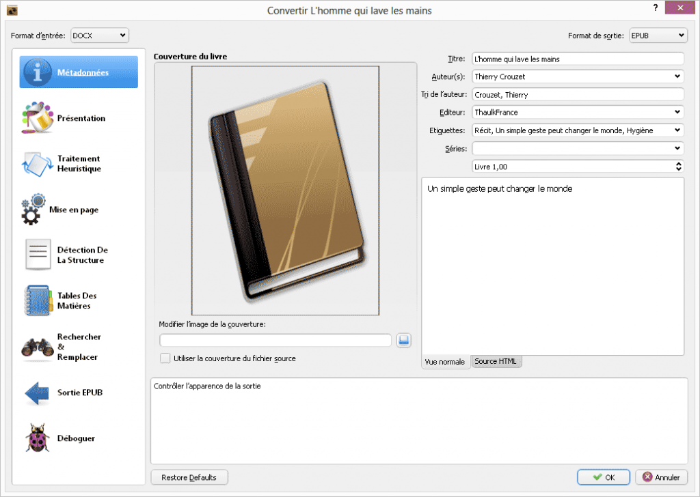
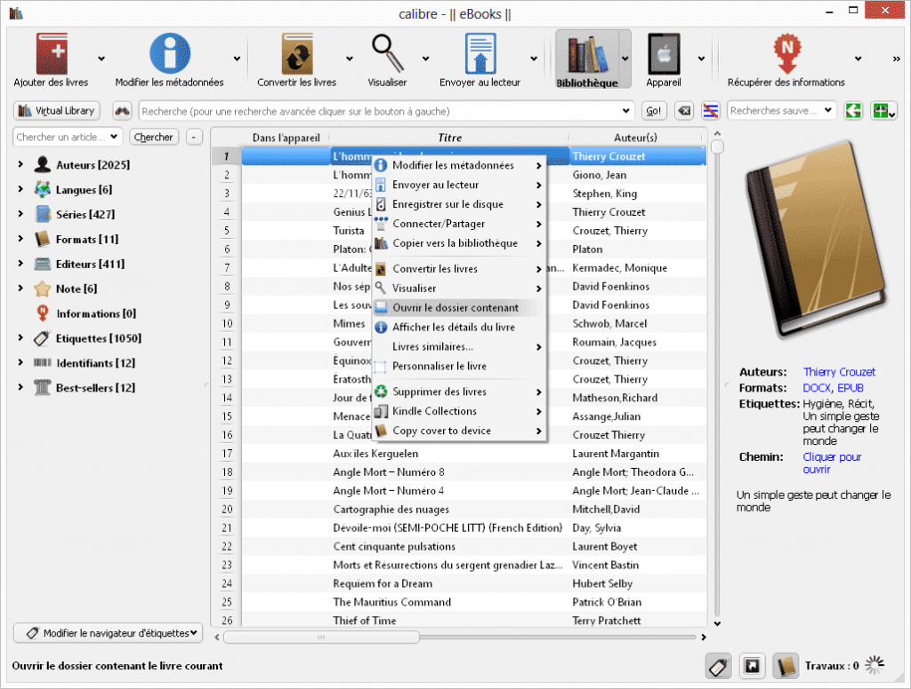
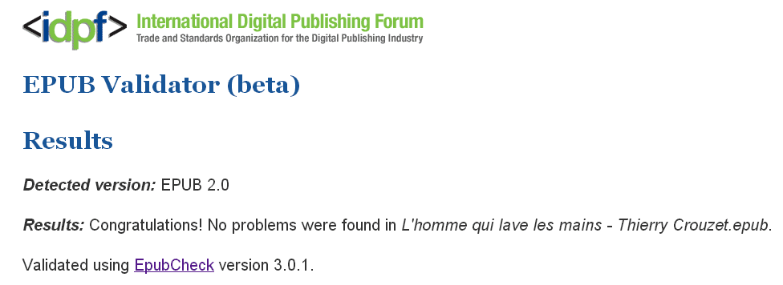
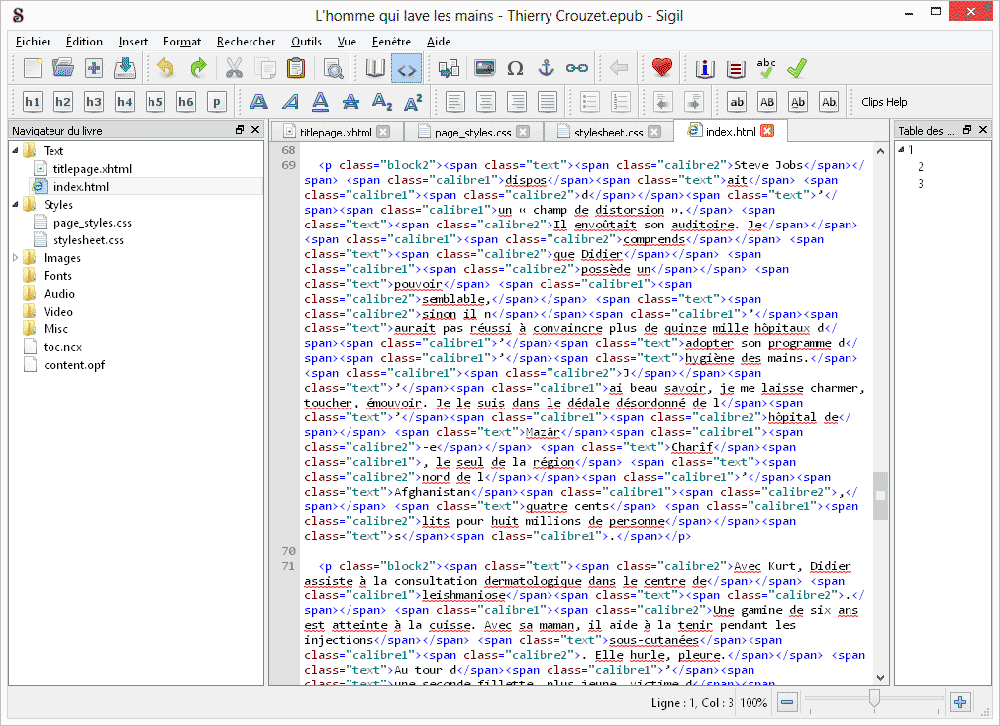
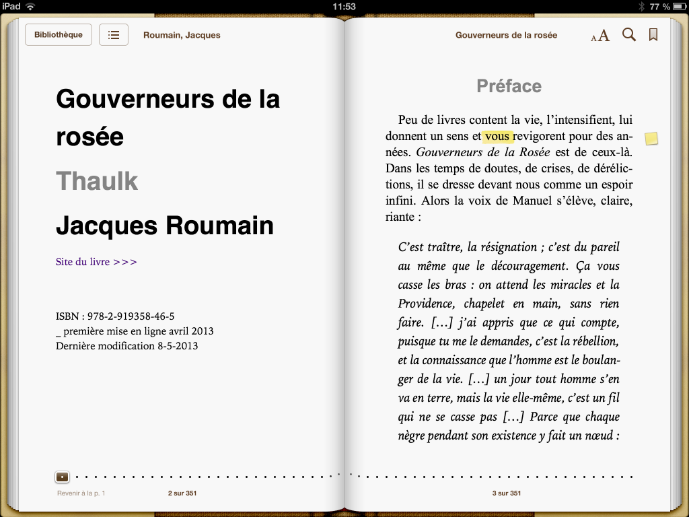
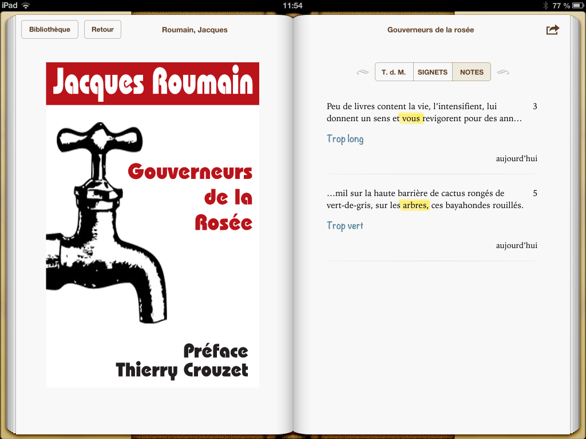

Thierry Crouzet
NetLittérature
Comment je blogue ?
Quels seraient d’après toi les 5 points clés de ton écriture blog ? m’a demandé François Lamotte pour une petite enquête de shoob.com. Ça fait penser à la question qu’on pose souvent aux écrivains ? Pourquoi écrivez-vous ? Moi, je blogue parce que j’écris. Mais bon c’est pas tout à fait la question.
1/ Paradoxalement, je blogue peu souvent en direct. Depuis plus de vingt ans, je tiens un journal qui lui est en pur direct. Pour le blog, il m’arrive souvent de laisser trainer des billets inachevés plusieurs semaines. J’en ai au moins une cinquantaine en stand by.
2/ Mon blog est l’atelier de mes livres. J’y évoque mes idées en cours de formation et mes lecteurs travaillent avec moi. J’expérimente tous les jours l’intelligence collective grâce aux commentaires. C’est une de mes grandes satisfactions. Grâce à vous, je suis un peu moins bête.
3/ Je pense que j’use du même style dans mes carnets, mon blog et mes livres. La différence est dans ma présence en tant qu’auteur. Dans mon journal, je parle de moi, de mes sentiments, de mes impressions, de mes expériences esthétiques… Dans mes livres, je suis beaucoup plus lointain. Même si je raconte parfois des anecdotes de ma vie, je les montre un peu comme au cinéma, avec une certaine distance. Dans le blog, les idées passent souvent en premier car c’est en partie là qu’elles se fabriquent aujourd’hui. Mais je revendique toujours le « je » car je crois que l’objectivité n’existe pas.
4/ Mon écriture blog ressemble à celle de mon journal en ce sens que je n’ai pas besoin de tout réexpliquer à chaque billet. Je suppose que mon lecteur me connaît. Et s’il ne me connaît pas, j’essaie de mettre des liens vers les billets qui peuvent l’éclairer. C’est une écriture beaucoup plus compacte que l’écriture journalistique où un papier doit se suffire à lui-même.
5/ Je pense mon blog comme un livre. À la fin de l’année, j’ai l’intention d’en remasteriser une version papier que je diffuserai sur lulu.com. Comme j’ai cette idée derrière la tête, mon blog se suffit à lui-même. Ce n’est pas en général un couper-coller de l’actualité ou une collection de liens. Je crois que je n’aurais pas grand-chose à retoucher pour que le tout soit lisible chronologiquement… ainsi je fais le grand écart entre mon journal et mes livres.
PS : En général, je lis la plupart des blogs qui pointent vers le mien. Je me dis qu’il y a soit affinité, soit au contraire opposition, dans les deux cas ça me fait avancer. Quand j’étudie une question, je visite des blogs au hasard des trouvailles. J’avance comme ça, je m'informe comme ça, sans privilégier de source.
Du keitai shousetsu au twiller
Je me suis longtemps intéressé au Nouveau roman, puis à Georges Perec et à l'Oulipo. L’écriture à contraintes alliait la logique et la littérature et je me suis laissé griser par le genre. Je suis allé jusqu’à écrire un roman où chaque signe aurait une valeur temporelle. Pour dire qu’une moto passait dans la rue, j’utilisais autant de signes que la moto prenait pour passer. J’avais développé une macro Word qui mesurait la durée de mes phrases.
Puis je me suis intéressé à la philosophie et je me suis lassé de ces jeux. J’avais besoin de plus de liberté, je voulais bannir les contraintes. Mais chaque fois que je me suis aventuré dans le romanesque, j’ai eu du mal à me départir de mes vieilles habitudes. J’étais souvent expéditif comme avec mon histoire de moto. Je ne passais pas deux plombes à camper les personnages, encore moins à m’attarder sur leurs atermoiements psychologiques. Ce n’est pas mon truc.
Et là je découvre un nouveau genre romanesque, le twiller, contraction de Twitter et de thriller. Le texte est posté sur une plate-forme de microblogging comme Twitter. Il se compose donc d’une série d’épisodes de 140 caractères maximum chacun. Pour le coup, il faut s’en tenir à l’essentiel. Si chaque jour seulement quelques phrases sont postées, il faut concentrer.
Pour mon prochain livre, Une brève histoire de l’informatique, série d'historiettes sur le modèle de La première gorgée de bière, je me suis amusé à écrire un début de twiller, en partant d’une idée qui traîne dans ma tête depuis quelque temps. Je me suis alors dit pourquoi pas poursuivre en live sur mon blog.
Sur le côté gauche de l’écran se suivraient les SMS postés sur Twitter avec les commentaires associés, sur le côté droit la reconstruction du chapitre en cours d’écriture.
Notes
- J’ai découvert le twiller dans une minuscule note de Wired. J’ai retrouvé des articles qui pointaient tous vers Matt Richel (il débute son twiller en juin 2008 et termine en décembre).
- Richel, journaliste au New York Time et romancier, semble l’initiateur du genre.
- J’ai l’impression que son twiller n’avance pas beaucoup. Pour le prendre au début…
- Les commentaires de son billet manifeste m’ont plutôt amusé. Je vois l’exercice comme un jeu littéraire. Les jeux littéraires peuvent mener à des œuvres comme La vie mode d’emploi. Pas besoin de dire que le narrateur ne peut parler qu’à travers des SMS comme chez Richel… où ce sera la chute pour justifier a posteriori la forme. Mais est-ce nécessaire ? Non.
- Twitter n’est pas indispensable à l’exercice. Tout le texte peut se retrouver sur un blog. Il doit exister en plusieurs versions car sur Twitter difficile de prendre le train en marche.
- La contrainte, c’est aussi écrire en français, pas en langage SMS, donc rester littéraire. Il faut qu’au final le texte ressemble à un autre texte. J'imagine que la façon dont il aura été écrit lui donnera une coloration particulière. Une forme d'urgence. Je n’en sais rien.
- C’est la forme la plus apte à autoriser l’interactivité puisque des commentaires pourront être effectués après chaque SMS.
- Les Japonais lisent et écrivent sur mobile des romans, ou plutôt des keitai shousetsu. Pourquoi ne pas les imiter ?
- Ce serait aussi pour moi l'occasion de revenir à la puissance créative du web... et de cesser de questionner le système. Il ne faut pas oublier d'essayer d'en construire un autre à côté.
- Je réfléchis maintenant à la meilleure façon d'organiser la version blog du twiller. J'hésite encore à créer twiller.tcrouzet.com, un autre URL ou faire ça simplement dans une catégorie de ce blog, avec bien sûr une mise en page quelque peu différente. Détails techniques mais qui ont l’importance pour que ce ne soit pas une usine à gaz.
Narrative nonfiction
Quand j’ai commencé à écrire, et puis quand je suis devenu journaliste, j’ai beaucoup lu de livres sur l’art d’écrire. J’ai un peu perdu cette habitude en même temps que mon style se stabilisait. Par malchance, il ne se range pas dans un genre particulier (poésie, roman, essai…).
En lisant une interview de Laurent Laffont, j’ai découvert que je me trompais. Je ferais de la narrative nonfiction ou de la créative nonfiction. Ça ne vaut pas pour le twiller mais sans aucun doute pour Le cinquième pouvoir, pour Itinéraire d’un homme libre et les idées auxquelles je réfléchis.
Ce serait l’art de raconter des histoires qui sont vraies en usant des techniques romanesques : mise en situation, description, dialogue, incarnation des personnages… J’avoue que les livres contemporains qui me parlent aujourd’hui se rangent presque tous dans cette catégorie.
J’ai souvent parlé de John Krakauer, qui est pour moi un des rares écrivains vivant que j’admire. Après la sortie de Under the Banner of Heaven, non publié en France il me semble, un critique a dit :
This book is not history, and Krakauer is no historian. He is a storyteller who cuts corners to make the story sound good. His basic thesis appears to be that people who are religious are irrational, and that irrational people do strange things.
«Pas historien mais romancier. Pas romancier mais historien.» C’est le genre de critique que j’ai déjà entendu pour ma pomme. Beaucoup de gens n’aiment pas le mélange des genres et la narrative non fiction, c’est un peu ça, une façon éclectique de pratiquer la littérature.
Quand j’ai écrit Le cinquième pouvoir, j’ai consciemment adopté la technique de Krakauer, ou de Gabriel Garcia Marquez quand il écrit Journal d’un enlèvement, pur chef-d’œuvre. J’ai raconté des histoires qui illustraient le cinquième pouvoir plutôt que de donner dans l’intello comme j’ai tendance à le faire ici (et c’est ce qui différencie ce blog de ce que j’écris par ailleurs).
J’ai décrit les protagonistes, comme Étienne Chouard, j’ai essayé de parler de leur intimité, des moments où les idées leur étaient venues. Pour être plus dans l’esprit Krakauer, j’aurais dû m’attacher à un seul personnage, tout décrire avec son prisme… mais j’ai eu l’impression de travailler cette direction, sans savoir bien sûr que les anglo-saxons avaient un nom pour ça depuis les années 1970.
Je viens de faire quelques recherches sur le genre et découvert des dizaines de sites, notamment celui de Lee Gutkind qui semble un des théoriciens du genre.
The word “creative” refers simply to the use of literary craft in presenting nonfiction—that is, factually accurate prose about real people and events—in a compelling, vivid manner. To put it another way, creative nonfiction writers do not make things up; they make ideas and information that already exist more interesting and, often, more accessible.
Si j'en crois la fin de cette définition, j'ai tendance à déraper puisque je propose parfois mes idées ou mes interprétations. Mais c’est justement ce qui est reproché aussi à Krakauer.
De nombreux auteurs de narrative nonfiction écrivent à la première personne. Ils affirment la subjectivité. Les blogueurs les imitent. Je lis Wired depuis le tout début et j’y ai vu peu à peu l’énonciation s’y imposer. Les journalistes y disent je. Ils se mettent en situation adoptant les techniques de la narrative nonfiction.
Cette façon d’écrire me paraît propre à notre époque. Montaigne ou Rousseau ont déjà pratiqué le genre d’une certaine façon mais il connait aujourd’hui une véritable explosion. Il n’y a plus une vérité mais des histoires.
Et nos vies deviennent des histoires. Nous sommes tous potentiellement des héros. Nos vies rejoignent la fiction. Et c’est peut-être pour cette raison que les romans littéraires contemporains m’ennuient. Les auteurs pratiquent le romanesque par habitude, ils cherchent à imaginer, insensible à la forme que porte notre époque, aux millions d’histoires qui sont là, réelles, incroyables et surtout accessibles car nous pouvons nous parler d’un simple coup de téléphone ou d’un simple mail.
Je m’étais fait ces réflexions quand j’ai lu Journal d’un enlèvement, ça devait être en 2001 ou 2002. Aucun des romans de Garcia Marquez n’arrive à la cheville de ce texte. C’est son chef-d'œuvre parce que c’est une œuvre d’aujourd’hui. Cent ans de solitude était un roman déjà vieux à sa parution.
Et c’est peut-être pour ça que j’aime par-dessus-tout le Flaubert de la correspondance, parce qu’il y adopte ce style d’aujourd’hui. Que je retrouve chez lui dans un seul roman, L’éducation sentimentale.
George Orwell’s Down and Out in Paris and London, James Baldwin’s Notes of a Native Son Ernest Hemingway’s Death in the Afternoon, and Tom Wolfe’s The Right Stuff are classic creative nonfiction efforts—books that communicate information (reportage) in a scenic, dramatic fashion. These four books represent the full spectrum of creative nonfiction […]
J'ai de la lecture en perspective. J’ai trouvé d’autres livres références du genre listé par Edward Humes. Vu le développement du genre, les libraires américains se demandent s’ils doivent créer un rayon narrative nonfiction. Alors comment le subdiviser ?
- Aventure (Krakauer)
- Voyageur (Bouvier)
- True Crime (Truman Capote)
- Biographie/autobiographie/mémoire
- Histoire (mon ami Alain-Gilles Minella fait ça très bien).
- Micro histoire (l'histoire de minuscules évènements)
- Essai
- Reportage (Garcia Marquez)
- Science (Buchanan)
Tous ces domaines se prêtent à la narrative nonfiction, autant dire tout ce qui n’est pas purement romanesque peut être traité de façon romanesque. Ce n’est pas un nouveau rayon qui apparaît mais simplement une nouvelle façon de raconter les histoires plutôt vraies.
Pour terminer, je cite encore une fois Lee Gutkind qui lui-même cite Gay Tales qui parle du nouveau journalisme théorisé par Tom Wolfe en 1973 :
Though often reading like fiction, [it] is not fiction. It is, or should be, as reliable as the most reliable reportage, although it seeks a larger truth than is possible through the mere compilation of verifiable facts, the use of direct quotations, and adherence to the rigid organizational style of the older form.
J'ai envie de m'approprier ces propos. En écrivant Itinéraire d’un homme libre, j’ai justement recherché une vérité plus grande, j’ai voulu dépasser l’histoire pour y trouver un sens pour moi.
Lectio spiritualis vs lectio scholastic
Dans Du lisible au visible, texte malheureusement épuisé, Ivan Illich évoque une révolution du livre survenue autour de 1150. Grâce à une douzaine de techniques (amélioration de la ponctuation, retraits, insertion de titres et de rubriques, division en chapitres, index des matières classées dans l’ordre alphabétiques…), le livre devient lisible et la culture de la lecture commence, trois siècles avant l’invention de l’imprimerie.
Cette collection de techniques et d'usages a permis d'imaginer le « texte » comme quelque chose d'extrinsèque à la réalité physique de la page.
Nous avons là les prémisses de XML, du balisage minimal pour donner à un texte toute sa force.
Mais la réflexion de toute une vie de lectures m'incline à penser que mes efforts pour permettre à l'un des vieux maîtres chrétiens de me prendre par la main pour un pèlerinage à travers la page m'ont, au mieux, engagé dans une lectio spiritualis aussi textuelle que la lectio scholastica pratiquée non au prie-Dieu mais devant un bureau.
Illich attire l’attention vers deux formes de lecture. La lectio spiritualis ou lecture livresque : continue, profonde, intense, linéaire, à accès séquentiel, du début à la fin (quand je lis au lit, dans mon hamac, au bord de la mer ou en garrigue). La lectio scholastica : pratique, rapide, avec accès direct à l’information recherchée (quand je lis au bureau, devant mon ordinateur où défilent en continu les fils de conversations). Pour Illich, depuis le XIIe siècle, les technologies d’accès direct n’on fait que se perfectionner (et continuent de le faire avec l’informatique). Illich craignait toutefois que, sous l’influence des ordinateurs, la lectio scholastica devienne la norme et nous détourne définitivement de la lecture livresque, cette lecture au temps long, qui n’aurait été qu’une étape historique.
Dans le texte de 2006, Le livre n’est pas condamné et donc la bibliothèque n’est pas morte, où j’ai trouvé la piste Illich, Michel Roland-Guill est moins pessimiste :
Il est remarquable qu’à partir du moment où la lecture monastique cesse d’être le modèle dominant de la lecture “légitime”, la forme roman s’impose progressivement dans le domaine de la littérature laïque en langue vernaculaire. Le roman est devenu le lieu de cette expérience, de ce voyage spirituel suivi et initiant qui était le sens de la lecture monastique.
Quand je lis sur Internet, presque toujours, je suis en mode scholastica. Mais quand je lis sur mon eReader, je suis en mode spiritualis. L’électronique ne tue pas la lecture livresque, au contraire elle va peut-être fusionner avec la scholastica, nous permettant de basculer d’un mode à l’autre au gré de nos humeurs. Ce serait d’ailleurs logique dans la perspective des flux. Et comme Illich nous pouvons mêmes rêver de nouveaux lieux de lecture :
Avec Georges Steiner, je rêve qu'en-dehors du système éducatif qui assume aujourd'hui des fonctions totalement différentes il puisse exister quelque chose comme des maisons de lecture, proches de la yeshiva juive, de la medersa islamique ou du monastère, où ceux qui découvrent en eux-mêmes la passion d'une vie centrée sur la lecture pourraient trouver le conseil nécessaire, le silence et la complicité d'un compagnonnage discipliné, nécessaires à une longue initiation dans l'une ou l'autre des nombreuses « spiritualités » ou styles de célébration du livre.
Et si la lecture livresque était une façon de vivre une expérience spirituelle ? L’humanité ne s’est-elle pas détournée de Dieu en se tournant vers les romans et les héros romanesques ?
Ils résistent à la fluidification du livre
Le livre comme l’information va s’écouler par tous les pores, se répandre par tous les interstices, jusqu’à rejoindre le flux global sans qu’aucun éditeur ne puisse endiguer le mouvement. En attendant, dans la transition, ils tentent d’imaginer des techniques pour augmenter le livre d’une ombre électronique sans pour autant renoncer au papier, objet sympathique mais définitivement pas écologiquement friendly.
Après l’hyperlivre de Jacques Atalli et ses codes barres pour obtenir des contenus complémentaires, c’est autour du nouveau livre de Frédéric Kaplan, La métamorphose des objets, que FYI éditions greffe la technologie Bookstrapping, lancée aussi par Frédéric Kaplan. Idée pouvoir commenter en ligne toutes les pages du livre sans que le livre lui-même ne soit en ligne (explications détaillées sur La Feuille).
Ces efforts, louables mais à mon sens désespérés, me font penser aux premiers imprimeurs qui faisaient encore dessiner les lettrines à la main pour donner un côté manuscrit à leurs ouvrages. Le contraire se produit aujourd’hui. On tente par tous les moyens de donner un côté électronique au livre, parce qu’on sent bien que c’est vers l’électronique que s’effectue la dérive. Ridicule.
Pourquoi compliquer quelque chose de très simple (à moins que ce ne soit que du marketing) ? Ne suffit-il pas de mettre le livre en ligne et d'offrir des fonctions de commentaires in vivo ? De nombreuses expériences ont déjà été menées Je pense au Golden Notebook de Doris Lessing ou aux livres de MacKenzie Wark. Les plateformes de republication comme Scridb et Camaléo offrent déjà la possibilité de commenter partout, d’ajouter des contenus connexes, sans parler de diigo.com ou de sidewiki. Pas la peine de réinventer l’eau chaude.
Ok, si on met les textes en ligne pour les ouvrir à l'interactivité, quid de l’économie du livre ? Il faut trouver des solutions mais ce n’est pas en restant collé au papier qu’on les trouvera. Vous perdez votre temps en imaginant des solutions gigognes pour accompagner la transition. Transitez tout simplement. À côté de sa version papier, le livre doit aussi exister dans le flux. Un simple search permet de passer d’une version et l’autre et de se repérer. Pas besoin de code barre stupide, ou même des numéros de page ou d'une autre codification. Les mots suffisent !
Pour ma part, je rendrai mon prochain livre disponible en ligne, sans doute sur un blog développé à partir d’un template WorPress qui autorise les commentaires en regard du contenu (par exemple CommentPress). Si je suis pas trop à la bourre avant la finalisation, je proposerai une version bêta du manuscrit pour que quelques lecteurs volontaires puissent déjà l’annoter et éventuellement m’aider à préciser quelques idées. Si tout va bien ce sera en décembre et il restera un bon mois pour fignoler avant la sortie papier prévue en avril.
Édition vs Web : le clash des timing
J’ai de plus en plus de mal à vivre au rythme de l’édition traditionnelle. Mon éditeur me donne une date pour remise du manuscrit de mon livre sur le Flux, que je respecte et puis il prend du retard, rate l’annonce au réseau des libraires mi-décembre, ce qui en toute logique décale au moins d’un mois le livre d’avril à mai.
C’est pas important vous me direz. Mais tant qu’un livre n’est pas parti de chez moi, j’ai tendance à y travailler, à rester enfermé sur le projet. Je suis incapable de dire que c’est terminé tant que je peux encore retoucher.
Alors je me pose des questions, toujours les mêmes. Pourquoi attendre. Pourquoi garder tout ce texte en réserve maintenant ? À quoi bon ? Pour qu’un correcteur le fignole ? Pour que nous lissions l’objet ? Tout cela me convainc de moins en moins. Et si une fois pour toute je me satisfaisais de mon blog, de mon point de propulsion !
Je fais l’éloge de la dématérialisation et, dans le même temps, je suis aussi empêtré dans le vieux paradigme. Pourquoi ?
François Bon dit qu’il a décidé de gagner sa vie comme il peut et de publier sur le Web. C’est pas le côté financier qui m’arrête. J’ai jamais demandé les droits sur mes deux précédents essais. Je peux me débrouiller avec des extras, faire de la résistance, jusqu’à ce que nous trouvions un moyen de rendre nos activités en ligne soutenables.
C’est plus par rapport au regard des autres que je reste attaché aux livres. Pour encore beaucoup trop de gens, tu n’écris rien d’intéressant si tu n’es pas sur le papier. Tu n’as pas la respectabilité. On ne t’invite pas aux conférences, tu participes pas aux débats…
Et si j’écris des essais c’est aussi pour ça. Pour les échanges ici mais aussi pour faire des rencontres. Ailleurs, il y a aussi des gens biens. Le monde 1.0 a quelques qualités qu’il ne faudrait pas nier. Nous sommes en transition, pas en rupture.
Pour moi, le Flux existe partout où nous effectuons des échanges immatériels. Je n’ai pas envie de me couper d’une partie. Il faut toutefois que j’arrête de me laisser enfermer par l’ancienne industrie dans une pratique castratrice de l’écriture et de la publication.
Possibilités pratiques
- Je peux balancer un PDF mais c’est ce n’est pas satisfaisant pour moi comme je l’ai déjà expliqué. Je veux essayer d’aller vers plus de fluidité.
- Je peux alors utiliser CommentPress. Je viens de mettre les deux premiers chapitres, hyper courts, pour tester. Qu’en pensez-vous ?
- Si je pars dans cette voie, j’ai le choix entre utiliser un URL dédié au livre ou laisser les textes se mêler à mes autres posts. J’ai tendance à préférer cette seconde solution, plus proche de la vie, du grand remixage des Flux. Il me faudra développer un plugin WordPress pour ajouter les fonctions commentPress à certains posts.
- À la fin de l’écoulement, mon éditeur ou n’importe quel autre éditeur peut éventuellement vouloir rassembler les morceaux. En fait, un éditeur en ligne peut prendre le livre. Un éditeur papier aussi. Faut que nous sortions des exclusivités.
Écrire à la vitesse de la pensée
Je me suis souvent posé la question. Je n’ai aucune réponse définitive quand à ce qui se passera à l’avenir. On peut imaginer des logiciels qui interpréteront des micro-gestes et nous permettrons de saisir le texte à la vitesse de la pensée. Où tout simplement des dictées vocale, ou juste quasi télépathiques. Parlerons-nous encore d’écriture ? Une certitude nous devrions disposer de plus en plus d’interfaces pour transcoder nos pensées en textes.
Je peux en revanche évoquer mon parcours. Je ne suis pas un natif du numérique mais presque. Je me suis débrouillé pour avoir toujours des engins électroniques puis programmables pas loin de la main depuis que j’ai 11 ans. Je n’ai commencé à écrire que bien plus tard, à 19 ans des scénarios de jeu de rôle.
J’écrivais alors sur papier, je réfléchissais sur papier, je ne saisissais que la version finale au clavier. À cette époque, j’étais capable de programmer devant un écran, mais pas capable d’écrire devant un écran. J’avais l’impression que je pensais trop vite pour les touches et que seule l’écriture manuscrite pouvait suivre ce que j’avais à dire.
Quand j’ai commencé à travailler en 1988 dans l’industrie, j’ai toujours écrit les rapports au clavier. Mais dès que je travaillais à des textes littéraires (j’avais un peu divergé du jeu de rôle), je revenais au manuscrit. Toujours persuadé que je pensais trop vite. Puis en 1991, je suis devenu journaliste. J’ai aussi écrit au clavier. Mais en continuant le manuscrit pour le creative writing.
Je me suis même acheté un Montblanc. C’était un acte militant. Quelques années plus tard, je l’ai oublié dans un avion en arrivant aux USA. Je ne l’ai pas racheté car, à cette époque, je remplissais sans fin des carnets avec des illustrations, parfois à l’aquarelle. L’encre Montblanc ne tenait pas l’eau. Je suis passé à des pointes modernes, pas chères, plus rapides, plus souples… la technologie était en train de me rattraper.
À partir de 1992, j’ai toujours eu avec moi un PC portable avec le mail et très vite le Net. Peu à peu, j’ai écrit de plus en plus au clavier, de moins en moins sur papier, sauf sur les carnets pour prendre des notes à la volée. Ce n’est qu’autour de 2001-2002 quand je vivais à Londres que j’ai définitivement abandonné le papier à la maison. La transformation a été progressive. Terminé les grands cahiers. Maintenant, j’ai l’impression de penser plus vite au clavier qu’en manuscrit.
De cette histoire, je tire une conclusion peut-être hâtive : quand on écrit, notre pensée finit par se mettre en phase avec notre interface d’écriture. Aujourd’hui je pense à la vitesse de mon écriture au clavier parce que 99% de ma production écrite s’effectue ainsi. J’ai connu une autre période dans ma vie. Aurais-je un jour l’occasion d’en connaître une troisième ?
Malgré tout, j’ai toujours avec moi un carnet. J’y note beaucoup moins souvent des impressions car je me sens capable de m’en souvenir (ce qui est faux). Et quand je les écris, mon écriture manuscrite est si pénible, si physiquement douloureuse que j’ai de plus en plus de mal à me relire.
Alors je ne comprends pas pourquoi à la maternelle on apprend à mon fils ainé à écrire avec des lettres liées. Des lettres liées ! Je suis bien incapable d’écrire comme ça. Moi, j’apprends le clavier à mon fils. Il n’a pas le choix d’ailleurs s’il veut se loguer sur la machine commune (et j’ai pris l’habitude de changer le mot de passe juste pour lui compliquer la tâche).
Reste toutefois qu’il y a des choses que je ne peux transcrire assez vite au clavier. Lorsque je dispose des mots dans l’espace. Schématise. Dessine. L’ordinateur n’est pas encore pour moi l’interface universelle d’output. Trop lent. Et puis impraticable quand je me promène en garrigue ou en montagne. L’écriture n’est pas toujours linéaire et les traitements de texte ont été imaginés pour l’écriture linéaire. Idéalement, j’aurais besoin d’un terminal d’écriture spatiale.
Conséquences stylistiques de la contrainte

« Futile, sans intérêt… écrire un roman en se limitant à des blocs de 140 caractères c’est juste bon pour intéresser les geeks qui de toute façon ne lisent pas… tu pars perdant quand les autres auteurs de thriller, eux, écrivent sans s’embêter avec une règle absurde… soit tu te places au niveau de Millenium, soit ce n’est pas peine… » j’aurais tout entendu au sujet de La quatrième théorie.
Mise au point. 1/ Si j’avais voulu faire comme les autres auteurs de thriller, je l’aurais fait il y a longtemps. 2/ Si je ne l’ai pas fait, c’est que je n’avais pas leur talent et que leurs livres, excepté ceux de rares auteurs comme Ayerdhal, me tombent des mains. 3/ Je ne pouvais m’engager dans cette direction qu’en adaptant le genre à ma convenance. 4/ Je ne peux pas écrire quelque chose qui m’ennuie, mais je me moque d’ennuyer. Je me dis que si des lecteurs me ressemblent ils ne s’ennuieront pas en me lisant (et qu’importe s’ils ne sont qu’une poignée avec des lobes cérébraux configurés comme les miens).
Qui finalement est le plus libre ? Moi ou l'un de ces auteurs de thriller à succès qui doit occuper 50 % de ses livres à décrire les affres psychologisant de ses héros, en prise à un quotidien nauséeux, empêtrés avec des difficultés familiales, avec leurs parents, leurs femmes (le pluriel est important), leurs enfants… et même avec leurs amis. Il faut à tout prix leur inventer des maux pour qu’ils soient moins héroïques et que les lecteurs s’identifient avec facilité.
N’est-ce pas une contrainte ? Je m’en suis débarrassée. Il y a dans La quatrième théorie un homme, une femme, des enfants… mais ils ne passent pas des pages à pleurnicher... ils courent parce que sinon ils meurent… vous croyez que dans une telle situation on a le temps de s’appesantir ?
Les livres qui, entre chaque pas des personnages (qui en plus n’existent pas et ça je ne l’oublie jamais), ouvrent des parenthèses pour m’exposer les névroses collectives m’exaspèrent (il y a d’autres lieux pour approfondir ces sujets). J’aime les livres intelligents pas ceux qui veulent de me faire communier avec le héros (je préfère parler avec mes amis, aussi sur le Net).
Je ne lis pas pour être manipulé, même si toute écriture est manipulatrice. Alors dans La quatrième théorie, j’ai dégagé la psychologie, comme Manchette avait pu le faire de manière systématique dans La position du tireur couchée. La psychologie n’est pas explicite, on peut se l’inventer, comme quand on croise quelqu’un dans la rue, si on en éprouve le désir, ce n’est pas une fatalité. La vérité, c’est que la psychologie des romanciers m’emmerde. Je m’intéresse à la psychologie planétaire !
Sous l’influence de la contrainte, j’ai écrit un texte qui pourrait tenir dans des bulles de BD. Des descriptions rapides pour guider le dessinateur et des dialogues. Rien que de l’action, action de mouvement et action de dire. Rien d’autre. J’en suis revenu au scénario de jeu de rôle… laissant la psychologie et l’habillage aux joueurs, dans ce cas les lecteurs.
La contrainte m’a libéré, elle ne m’a pas bridé (comme elle n’a jamais bridé un poète ou un chanteur). Elle m’a forcé à la concision, à multiplier les évènements avec la vitesse des news qui défilent sur les fils Twitter eux-mêmes, à résumer mes idées en quelques lignes, à éviter les digressions philosophiques. La quatrième théorie m’apparaît comme une affabulation vulgarisatrice de mes idées politiques.
Est-ce supportable pour un lecteur ? Est-ce tenable ? Est-ce lisible ? J’ai reçu quelques témoignages encourageants… souvent de geeks qui ne lisent pas… Peut-être que beaucoup ne lisent pas parce que les livres écrits pour des femmes de plus de quarante ans (livres que recherchent les éditeurs à succès) ne leur conviennent pas… et je connais beaucoup de femmes de plus de 40 ans qui ne les aiment pas non plus. Écrire pour une cible, c’est emprisonner la cible. C’est même la créer (je n’aimerais pas être pris dans son filet).
Un ami éditeur, qui lui a regardé La quatrième théorie avec les yeux du commercial, m’a dit que ce n’était pas un thriller car il ne respectait pas les contraintes du genre. « On ne sent un peu mal à l’aise quand on lit, on n’a pas les repères habituels… c’est de la littérature expérimentale. Tu devrais passer par un éditeur électronique, choisir un circuit alternatif. Il n’y a pas de place en pile à la Fnac pour ce genre de livres et si tu n’es pas en pile à la Fnac, 24 % des ventes, tu ne gagnes pas un rond. Ça ne sert à rien d’être publié sur papier. »
Mon ami ne fait que décrire l’état du marché du livre (j’émets un a priori toutefois – bien malin celui qui sait ce qui va toujours marcher – il existe dans l’édition comme ailleurs des cygnes noirs). Tu es en pile à la Fnac et tu as une chance de gagner ta vie en tant qu’auteur (même pas garanti… Le cinquième pouvoir a été en tête de gondole un moment), sinon tu vas à l’usine tous les matins et ton éditeur dépose le bilan.
Maintenant, n’exagérons rien. Je n’ai rien inventé, rien expérimenté de nouveau. J’ai respecté les règles narratives du roman d’action à outrance. Je n’ai fait que compresser, que décrire en deux lignes ce qui parfois prend deux pages… La véritable expérimentation s’est concentrée au début de la rédaction, alors que je construisais l’histoire interactivement avec certains d’entre vous.
J’arrête de me flageller. Le livre est achevé, j’ai enfin un manuscrit qui tient debout, il n’est plus question pour moi d’évoquer la manière dont je l’ai écrit. Soit le livre tiendra, intéressera, soit il ne sera que le témoignage d’une expérience littéraire, une sorte de trace… Je ne vais pas éternellement me cacher derrière l’histoire des 140 caractères pour justifier quoi que ce soit.
Alea jacta est.
Empêcher le lecteur de ne pas penser
J’ai quatre principes :
- Je rêve de provoquer mille idées dans la tête de mon lecteur, de déclencher en lui une euphorie qui le détourne du texte et le plonge dans sa propre réflexion. Je n’apprécie que les textes qui ont cet effet sur moi, les autres m’endorment et me font cesser de lire.
- Je ne cherche jamais à prendre le lecteur par la main, mais me laisse aller d’idée en idée, presque aléatoirement, sans aucune préméditation… Si je savais avant d’écrire ce que j’allais écrire, je n’écrirais pas (par exemple, je n’avais pas prévu cette dernière phrase).
- J’espère que le lecteur ne sera pas d’accords avec moi et qu’il me critiquera, que nous pourrons un peu nous fritter… J’aime le débat et la provocation.
- Si mon lecteur ne se met à réfléchir qu’à la fin de mon texte, je suppose qu’il s’est royalement emmerdé tout au long de la lecture. Je déteste l’immersion totale à laquelle aspirent certains lecteurs. Lire, c’est vivre, pas s’oublier.
Capturer l’attention dès le début. J’essaie souvent de commencer par une belle provocation qui fait réfléchir. Merde, ce n’est pas comme ça qu’il faut faire. Mais plutôt promettre et mystifier… Non merci. Droit au but. Je plante mon poignard jusqu’à la garde.
Sur le Web, un texte de longueur idéale ferait environ 1 000 mots. Pas de chance. Mon texte le plus lu c’est dernières semaines en fait 3600 !
Voyons voir les autres conseils.
- Préférer les émotions à la neutralité… j’ai tendance à éviter ces deux étranges machins, avec une propension aux idées abstraites. Et je ne prends jamais le lecteur par la main (même si on m’a appris à le faire quand j’étais journaliste). Mon lecteur est assez grand pour se débrouiller seul.
- Le premier paragraphe devrait résumer le problème à résoudre. Mince. Quand je commence à écrire, j’ai bien une idée, mais je ne sais pas où elle me mènera. L’écriture est une aventure à partager, pas un moyen de communiquer.
- La cohérence des paragraphes. Je m’y efforce, au moins pour m’y retrouver moi-même. Mais veiller à maintenir le mystère, non… les déviations, les dérives et les impasses me passionnent.
- Créer l’attente à chaque paragraphe… J’attends de savoir ce que mon cerveau va trouver à dire au paragraphe suivant. Je me dis que si je ne sais pas ce que je vais écrire, j’ai plus de chances de surprendre que si je sais exactement où je vais en provoquant des effets.
- L’intrigue… J’ai trop aimé lire le nouveau roman pour m’attacher à cette béquille. Si peu de gens lisent, autant écrire à leur cerveau plutôt que de traiter les derniers lecteurs de textes longs comme des débiles.
Je suis mal parti dans la vie. Pas étonnant que je ne sois pas plus lu. Mais franchement, vous y croyez vous aux règles ? Je crois qu’il n’en existe qu’une : les règles n’existent pas. Malheur : ce nouveau texte fait tout juste 700 mots, il en manque 300. Personne ne s’en rendra compte, puisque personne ne le lira jusqu’au bout.
Les secrets de ma vie en ligne

À l’invitation de Kawenga, je passe la journée avec des auteurs pour leur parler de la façon dont j’organise ma vie en ligne, comment tout cela commence, s’organise, se développe… Je vais essayer de les accompagner au fil d’un parcours initiatique dont je résume dans ce billet les étapes.
Votre désir
Je baigne dans le monde Internet depuis le milieu des années 1990, j’écris depuis plus longtemps, et à l’exception d’un essai en 1996, je n’ai pas ouvert un blog avant fin 2005. Je l’ai fait après avoir envoyé à l’imprimerie Le peuple des connecteurs parce que j’avais la sensation de ne pas avoir bouclé le sujet et parce que j’avais besoin d’appliquer la théorie que j’avais développée, la connexion.
Tout ça pour dire que sans envie, inutile de se précipiter en ligne. Il y a déjà trop de gens qui ne songent qu’à y faire du marketing. En tant qu’auteur, on aborde ce monde pour risquer de s’y transformer du tout au tout, un peu comme si on essayait une drogue nouvelle. Je ne conçois pas le Net autrement que comme un champ exploratoire et expérimental. Si vous ne vous préoccupez que de votre promo ou de vendre des livres, je n’ai pas grand-chose à vous apprendre.
Votre indépendance
Je n’ai rien contre l’idée de squatter, surtout quand on squatte chez des amis sympas. Mais je n’aime pas les hôtes qui m’accueillent indéfiniment alors que je ne les connais pas et que je ne partage rien avec eux. Je me sentirais presque en prison.
C’est un peu pareil en ligne. Votre email comme votre site Web vous caractérisent. Si dans leur intitulé, on peut lire celui d’une grande entreprise, à qui faites-vous de la publicité ? À vous ou à elle ? J’ai ma petite idée.
Votre nom doit vous appartenir en ligne comme hors ligne. Il est votre marque, surtout en tant qu’auteur. Pour ma part, j’ai choisi tcrouzet.com parce qu’il me semblait simple de m’identifier par mon nom. Pour la plupart, nous adoptons cette stratégie même si François Bon, lui, a choisi un nom plus littéraire : tierslivre.net.
Votre domaine
Pour disposer d’une identité en ligne où vos lecteurs vous trouveront ou enverront des mails, vous devez acheter un nom de domaine et louer un espace où enregistrer et gérerez vos données en ligne.
Des services comme gandi.net (12 euros HT an avec un blog dotclear) ou OVH (23 euros avec possibilité de choisir votre plate-forme de blog) proposent des solutions clés en main.
Personnellement, pour maximiser ma liberté, j’achète mes domaines chez gandi.net et je suis hébergé chez OVH. On doit pouvoir trouver moins cher, plus performant… je vous dis simplement ce que je fais.
Une fois que vous disposez d’un domaine, vous pouvez le faire pointer vers les services d’hébergement de votre choix, idem pour vos mails. Vous n’êtes plus prisonnier.
Votre maison
Quand un de vos lecteurs a quelque chose à vous dire, il doit pouvoir le faire de manière publique. Bien sûr vous pourriez vous contenter d’une page Facebook, mais là encore quid de votre indépendance ? Vous devez disposer d’un endroit qui vous appartient en propre. Jadis on parlait d’une page personnelle, aujourd’hui on parle d’un blog… Peu importe le nom, il vous faut un site où votre public peut au minimum poster des commentaires, soit généraux, soit associés à vos différents textes.
Je gère mon blog avec WordPress, un logiciel Open Source massivement supporté et sur lequel travaille une immense communauté. Il permet de créer un site sous le format blog, avec des articles qui se suivent de jour en jour, ou un site fait d’une série de pages statiques, pour ceux qui ne désirent pas bloguer.
Il me semble vital de créer son audience chez soi plutôt que chez Facebook. Tout le monde prend aujourd’hui conscience des dangers de Facebook, il ne faut pas contribuer à faire de cette entreprise un nouveau Big Brother. Ne comptez pas sur moi pour vous révéler l’art du marketing dans cet espace. Je l’évite, ce qui ne m'empêche pas de l'utiliser.
Votre naissance
Une fois que vous aurez créé votre domaine et votre blog, il ne se passera rien. Vivre en ligne, ce n’est pas vivre seul, mais en interaction avec les autres. Pour qu’ils découvrent que vous existez et qu’ils aient envie de vous rendre visite, voire de parler de vous, vous devez vous manifester chez eux.
Aller dire un peut partout qu’on a un site, c’est pour le moins grossier. Il faut intervenir à propos. Par exemple, si on parle de vous, d’un de vos textes, d’un sujet qui vous préoccupe… Il s’agit de ne manquer aucune occasion.
Comment ? En créant des alertes sur Google. Dès que les mots clés appropriés seront écrits quelque part, vote nom par exemple, vous serez prévenu. Il vous faudra alors aller commenter et débuter le dialogue. C’est ainsi qu’une communauté commence à se créer. Vous devez alors apprendre à remonter les liens, à visiter les sites de ceux qui vous commentent, à aller chez les gens dont ils parlent… Je ne m’informe plus que suivant cette méthode sans jamais visiter les sites d’actualité en direct (j’évite de passer par des points centraux qui me seraient incontournables et me contraindraient).
Votre présence
De nombreuses études montrent que plus vous publiez sur votre blog, plus vous recevez de visiteurs. Déprimant n’est-ce pas ? Le phénomène est facile à expliquer. Plus les articles sont nombreux, plus vous offrez de portes d’entrée hasardeuses (le titre ayant beaucoup plus d’importance que la suite de l’article). C’est une question de mathématique.
S’il ne sert à rien d’entrer dans ce petit jeu qui vise à multiplier de courts textes imbéciles, il est important d’animer sa communauté, en lui proposant de temps à autre des textes qui l’agiteront.
Alea jacta es. Je vais publier ce billet même et suivre avec vous sa vie en ligne. Dans quelques minutes, Google l’aura trouvé et référencé. Si j’avais tapé sur un sujet d’actualité, avec des mots originaux, je recevrais très vite des visiteurs inhabituels. Mais avec ce texte, plutôt technique, il n’y aura guère de buzz, donc je ne passerais pas la journée à répondre aux commentaires comme cela m’arrive parfois.
Mes lecteurs le plus fidèles, les plus geeks aussi, seront prévenus automatiquement de la publication parce qu’ils sont abonnés à mon fil RSS. J’en décompte plus de 6 000, mais en fait seulement 10 % d’entre eux liront effectivement l’article.
Pour taper un peu plus fort sur le tamtam, je fais une annonce à ma communauté Twitter, aussi 6 000 personnes. Cette annonce sera automatiquement répercutée sur Facebook (les robots font mieux le travail que moi). Toujours automatiquement, un peu plus tard, un résumé de mon article sera aussi publié sur Facebook.
En général, je n’en fais pas plus. Si je sais que le sujet peut intéresser en particulier quelques amis actifs sur le Net, par exemple pour ce sujet François Bon et Nicolas Ancion, je le leur signale par mail ou de préférence via Twitter (mon message d’ailleurs public se répercute comme toujours sur Facebook).
Votre prégnance
Quand j’annonce sur Twitterla publication d’un nouvel article, je réécris souvent le titre. Je suis obligé de me demander quelles courtes combinaisons de mots ont une chance d’attirer des lecteurs. Je n’ai pas de recette, je travaille à l’intuition, mais des titres qui semblent tenir quand ils sont placés en haut d’un article n’ont plus aucun sens une fois isolé.
Titrer est un art, sur le Web comme ailleurs. Certains prétendent d’ailleurs qu’il existe un art d’écrire en ligne. J’ai quelques doutes, en tout cas pour un auteur. Si nous avons des lecteurs, c’est que nous n’écrivons justement pas comme les autres. Alors, autant cultiver nos différences que chercher à nous fondre dans la masse.
Votre pugnacité
Vous devez maintenant réagir aux réactions de vos lecteurs. J’essaie d’être présent dans mes fils de commentaires. Je défends mes idées, m’explique, quitte à publier de nouveaux textes si nécessaire. Internet permet le dialogue bidirectionnel, se contenter d’émettre est très mal vu. Tout cela prend du temps, mais vous découvrirez que votre communauté peut vous servir de stimulant plus efficacement que le café (je ne sais pas pourquoi je parle de café, je n’en bois pas).
Dès qu’on anime une communauté, elle participe à notre travail que nous le voulions ou non. J’ai écrit certains de mes livres de manière coopérative, des livres comme La quatrième théorie que je ne n’aurais peut-être pas écrits seuls. Il ne s’agit pas seulement de faire sa promotion, mais de vivre une expérience collective. En fait, j’applique une de mes théories, plus je me lie aux autres, plus je suis libre. J’espère que cela vaut aussi pour l’écriture. Le mieux est de se s’essayer à l’écriture coopérative, via Twitter ou autre, pour en expérimenter la puissance, et découvrir ce que j’appelle l’édition au temps des cyborgs.
En tout cas, il est vital de lier les autres lorsque l’on parle d’eux. De tisser le réseau à travers lequel les lecteurs circuleront de site en site, de construire la blogosphère, une blogosphère qui je le reconnais s’essouffle aujourd’hui comme l’analyse Narvic.
Le plus important est sans doute de chasser de son esprit le mot virtuel. Votre communauté construite en ligne n’est pas virtuelle, mais réelle. Vous avez de véritables lecteurs de l’autre côté de l’écran, des lecteurs qu’il ne faut pas hésiter de rencontrer IRL, non pas pour qu’ils signent vos textes, mais qu’ils poursuivent avec vous un brainstorming continuel.
Votre économie
Votre blog doit aussi parler de vous, parce qu’il faut que les nouveaux venus puissent vous découvrir, découvrir vos textes, vous devez donc les présenter, pourquoi pas comme je le fais offrir des extraits, même des inédits, voire des textes en chantier.
À côté de l’économie traditionnelle du livre, une nouvelle économie balbutie. Il me parait hasardeux pour un auteur de s’en tenir éloigné, ne serait-ce que pour en comprendre les enjeux, par exemple au moment de signer un contrat avec un éditeur (ou de ne surtout pas signer un contrat de diffusion numérique).
Aujourd’hui, on ne vit pas plus d’un blog que de ses livres. À Montpellier, JOL a réussi à récupérer 4 000 euros de don depuis le début 2010. C’est un contre exemple qui confirme la règle, comme ces auteurs vedettes qui gagnent des millions.
Côté de l’édition numérique, les expériences se multiplient avec François Bon et publie.net en précurseur, avec robertneveutpaslire.com, avec numeriklivres.com et avec Sephen Belfond qui se lance dans le livre augmenté.
Pour le moment, nous avons encore du mal à trouver des lecteurs sur support numérique, mais les liseuses plus ergonomiques arrivent… et avec cette fameuse nouvelle économie du livre. Il faut l’espérer en tout cas. Mais il serait illusoire de croire que demain bien plus de gens vivront de leur plume. On peut au moins souhaiter une meilleure répartition, une augmentation des quotas, mais pas une explosion, surtout si le nombre de lecteurs de textes longs lui n’augmente pas (et il y a peu de raison pour qu’il le fasse).
Où j’en suis pour ma part ? J’écris beaucoup, je publie souvent sur mon blog, diffuse des extraits ou des textes intégraux, expérimente l’impression à la demande… Tout cela me vaut une certaine réputation, quelques apparitions médiatiques, mais ne me fait rien gagner. J’en ai juste oublié de me trouver un autre éditeur depuis ma rupture avec Bourin. J’ai la chance, sans être riche, de ne pas être dans l’urgence financière et de me payer le luxe de l’exploration. C’est peut-être la vérité la plus dure à entendre. Je ne suis pas sûr que la situation des écrivains ait beaucoup évolué depuis le dix-neuvième siècle de Flaubert. Écrire est un privilège.
PS : Assistent à la formation Kawenga, Antoine Blanchemain, Janine Gdalia, Christine Palluy, Françoise Renaud, Jean-François Gomez, Isabelle Lavarec, François Vincent et Pascale Ferroul.
N’oublions pas le livre
L’odeur du papier, sa texture, sa solidité… conneries. Autant d’arguments débiles pour défendre le livre alors qu’il possède de véritables atouts politiques et subversifs par rapport au Web.
Le livre est compact, il se glisse partout, se cache, accueille des commentaires, c’est un objet social… mais surtout, une fois imprimé, un livre échappe à la censure. Un gouvernement peut interdire un livre, rien n’empêche les exemplaires préalablement diffusés de poursuivre leur vie, tant bien même l’éditeur est fermé. Le livre est un média décentralisé.
Un site Web apparaît plus fragile (seul le Web lui-même est décentralisé). Il suffit de couper le serveur d’hébergement pour abattre un site. Le situer dans un pays étranger n’est qu’une mesure de sécurité faible, surtout dans la perspective d’une chasse aux sorcières planétaire. Quant au nuage, il n’a de nuageux que son appellation, en vérité il est hyper localisé dans les locaux de quelques entreprises hyper-centralisées, donc hyper-vulnérables en cas de durcissement politique. Une descente policière dans les data centers de Google ou d’Amazon et vous imaginez la suite.
Nous devons nous inspirer du livre, cet objet autosuffisant, et en même temps ouvert sur l’extérieur, ne serait-ce que par les annotations. Nos contenus numériques ne doivent pas dépendre de la survie de leur source comme c’est le cas avec nos blogs. Une fois un texte propulsé, il doit poursuivre de lui-même sa vie, que l’auteur, l’éditeur ou le gouvernement le veuillent ou non. La vie d’un texte ne doit dépendre que de la volonté de ses lecteurs.
Avec le Web, nous nous sommes mis en position de faiblesse. Notre liberté d’expression émise depuis un point localisé est toute relative. On peut nous faire taire. Pour lutter, pour résister, pour réinventer, nous devons émettre de partout. Tout au moins, nos créations doivent pouvoir se dupliquer de mémoire en mémoire sans que nous puissions traquer leurs différentes instances. Un texte une fois propulsé ne doit plus nous appartenir.
Avec le Web, nous en sommes un peu au temps des textes gravés aux frontons des temples. Il est temps que nous réintégrions l’héritage du livre : mobilité, portabilité, liberté… Voilà encore une raison pour s’intéresser aux ebooks, textes numériques qui se réapproprient les acquis les plus politiquement vitaux du livre.
Le manifeste cyborg
Aujourd’hui encore, la machine seule n’est pas plus intelligente que l’homme. L’homme n’est pas plus intelligent que la machine, il perd souvent contre elle aux échecs et dans de nombreuses situations. En revanche, l’homme aidé par la machine est imbattable. L’humanité l’a compris depuis longtemps en se lançant dans la course à la technologie.
Dans le domaine artistique, les plasticiens adoptent cette voie. Utilisation de pigments de plus en plus perfectionnés. Photographie. Cinéma. Photoshop. Les musiciens n’ont cessé d’inventer de nouveaux instruments. Violon. Guitare électrique. Synthétiseur. Sampleur.
Qu’ont fait les écrivains ? Ils ont changé de plume mais pour quels changements visibles dans leurs œuvres ? Entre un texte écrit au stylo ou au clavier, il existe sans doute des différences, qu’il sera intéressant d’étudier, mais à mon sens rien d’aussi flagrant qu’entre la peinture sur toile et la photographie ou entre la musique classique et la pop ! L’évolution des outils d’écriture ne se révèle pas au grand jour dans l’écriture elle-même (qui semble avant tout soumise à la mode sans que les techniques ne produisent de brusques ruptures).
Je suis sévère. Je pourrais trouver quelques expérimentations intéressantes, remonter à Mallarmé et ses jeux typographiques dans la page, évoquer l’écriture dynamique de Daniel Bourrion, la liste pourrait s’allonger, vous conviendrez que ces expérimentations restent marginales.
Alors l’écrivain doit-il considérer la technologie comme accessoire, tout comme est accessoire le siège sur lequel il s’assoit quand il écrit ? Ce siège d’ailleurs n’est pas si anodin qu’il y paraît. Je connais la différence entre écrire chez moi, assis dans un parc, perché au sommet d’une montagne ou tout simplement rêvant en terrasse de café.
Rien n’est anodin. Mais le texte est peut-être une trop vieille invention pour que la technologie l’affecte en profondeur. C’est alors dans le travail même de l’écrivain que la technologie peut renouveler, et, au-delà du travail de l’écrivain, le travail tous les créateurs, même les journalistes, les scientifiques ou les philosophes. La révolution cyborg peut affecter tous les hommes.
Il ne s’agit plus de travailler seul mais de travailler avec les autres. Je ne parle pas du chimérique travail collaboratif, sorte de fusion surperorganismique, mais d’un travail où un créateur se dope à travers le réseau. Il étend son cortex cérébral aux réseaux neuronaux temporairement mis à sa disposition par des stimulateurs.
Le blog est un fantastique instrument pour nous transformer en cyborg. Je l’ai expérimenté au moins à deux reprises, en écrivant Le cinquième pouvoir puis La quatrième théorie. Les billets publiés sur le blog n’ont pas pour vocation de faire date, de faire œuvre, mais de démultiplier l’activité intellectuelle capable d’engendrer une œuvre qui, éventuellement, ultérieurement, pourra elle-même être publiée sur le blog ou sur tout autre support.
Le blog conçu de cette façon ne vise pas l’audience, mais la constitution d’une TAZ créative. Et ce n’est que suivant cette perspective que le blog se différencie des vieux journaux et magazines ou feuilles de choux ronéotypées.
On peut même imaginer que tout créateur dispose de deux espaces. 1/ Son extension mentale de cyborg, d’une confidentialité étendue. 2/ Un espace de diffusion des œuvres, un espace où il publie beaucoup plus rarement, dans l’espoir de livrer l’aboutissement d’un travail plutôt qu’un work in progress perpétuel.
Vous comprendrez peut-être mieux pourquoi j’attache de l’importance au format epub ou à l’impression à la demande ou même à l’édition traditionnelle, trois méthodes pour moi de séparer l’atelier du cyborg, ce qu’est mon blog, des productions de cet atelier. D’autres praticiens pourraient invoquer d’autres méthodes où délivrer leurs travaux de cyborg : presse, TV, cinéma, galerie, théâtre… et pourquoi pas un blog, un autre blog, ou un autre espace de son blog.
Nous sommes entrés dans l’âge des cyborgs. Le travail solitaire devient anachronique. Pour autant, l’auteur ne disparaît pas. Au contraire, il allonge ses synapses de plus qu’humain à travers le réseau.
Mettre en scène le texte
Animer les textes, les montrer en train de s’écrire, c’est une idée qui m’a toujours trotté dans la tête. Le Pecha Kucha de François Bon a réveillé mon envie. Je vois le film du texte s’écrivant sur fond d’images s’égrenant toutes les 40 secondes et comme l’a suggéré Daniel Bourrion, une lecture surimposée du texte finalisé. C’est alors qu'Otto von Früt nous suggère de visualiser Gravity, ce texte écrit par les spectateurs via SMS et animé en temps réel. Voici une illustration de la stratégie du cyborg.
Tuons la presse pour nous libérer
Partout sur le Net et ailleurs, on parle de l’avenir de la presse, de comment créer des nouveaux journaux viables, de nouveaux médias, de comment mieux informer… au nom de l’avenir de la démocratie. Mais nous sommes déjà gavés de news, toutes presque aussi inutiles les unes que les autres. Nous sommes shootés aux nouvelles, nous sommes de pitoyables infovores qui attendent leur prochaine injection avec avidité.
Savez-vous au moins ce qui se passe dans votre cerveau ? Chaque fois qu’une nouvelle bipe dans votre radar sensitif, elle active les zones primitivement destinées à monter la garde. Une news qui s’affiche, c’est comme si un lion vous attaquait. Vous imaginez le résultat. Quoi que vous fassiez, vous arrêtez, vous ne pensez qu’à sauver votre peau.
Un infovore ne peut se concentrer durablement. Il ne peut être créatif. Un journaliste qui ne veut rien rater, qui ne doit rien rater, ne peut être créatif. Pourquoi croyez-vous que la presse soit pour l’essentiel insipide ? Elle est l’œuvre de toxicomanes.
Les entrepreneurs qui ne rêvent que d’empires médiatiques sont aussi effrayants que les narcotrafiquants de Medellin. Ces shootés bon chic bon genre sont incapables d’aligner deux idées novatrices. Ils sombrent dans la démence obsessionnelle. Faire. Faire. Mais pourquoi ? Ils n’ont pas la moindre idée neuve, pas la moindre capacité à la porter longtemps pour construire quelque chose qui changerait nos vies. Ce sont des malades.
Ils ne s’intéressent qu’au pouvoir, ils ne songent qu’à pactiser avec lui, à la recherche de sensations hallucinogènes toujours plus puissantes. Les drogues douces mènent aux drogues dures il paraît, de l’information au pouvoir il n’y a qu’un pas. La surinformation ne peut conduire qu’à la dictature, la surinformation est le nouvel asservissement de l’homme.
Nous avons abattu les églises pour leur substituer un opium plus terrible. Avec son apparence émancipatrice, il semble inoffensif… méfions-nous. La perversion se cache là où on ne l’attend pas. Inquiétons-nous de celui qui parle sans cesse de perversion, qui a un goût excessif pour le morbide et le catastrophisme… n’est-il pas un peu coupable de tout ce qui se passe dans le monde ?
En 2008, les gens consommaient trois fois plus d’informations [entendons machins produits par les médias] qu’en 1960. Ils sont aussi trois fois plus déprimés, trois fois plus inquiets… et trois fois plus pauvres (pour sûr si on mesure la pauvreté comme l’écart entre les pauvres et les riches).
L’inférence est facile, mais elle peut se soutenir. La dépendance aux news prive l’humanité de l’usage de son cerveau supérieur. Une immense capacité créative se voit avalée par les églises médiatiques. Leurs prêches attirent plus de monde qu’aucune messe du dimanche matin… et elles n’ont pas la même vertu sociale. Elles enferment chacun dans sa bulle de terreur, dans ce désir panique d’échapper aux lions qui surgissent sans cesse comme des morts de faims.
Alors quand les potentats ordonnent, les infovores obéissent. Ils n’ont pas le temps de réfléchir. Ils sont pris dans un stress, une overdose d’adrénaline instillée seconde après seconde pour faire taire toutes les capacités réflexives. Nous avons vu dans l’information un moyen de nous émanciper, elle est devenue une chaîne qui nous asservit. Ne parle-t-on pas de chaîne TV ? Il n’y a pas de hasard sémantique.
Le flot du temps réel informationnel détruira la démocratie, et au-delà le rêve des Lumières. Il nous mène à une humanité décérébrée. Ne perdons pas une seconde. Coupons-nous tant qu’il est encore temps. Tournons-nous vers les créateurs qui œuvrent dans les dernières îles de quiétude, sur le Net et ailleurs. Mais n’attendons pas que les informateurs professionnels, et leurs épigones miséreux amateurs, nous en révèlent l’existence. Je n’ouvre qu’une piste, à vous d’en suivre tous les écheveaux. À partir de là, un nouveau monde se révèlera.
La littérature contre l’information
Un journaliste ou un scientifique se doit de dire la vérité, en tout cas pour le peu qu’il sait. Il doit mettre en ordre, pratiquer une écriture politiquement correcte, sans choquer aucune susceptibilité. Un littérateur, en revanche, a tous les droits, même de dire des absurdités (mais si elles choquent ou dérangent sont-elles réellement absurdes ?).
Je m’inscris dans cette seconde famille, je ne suis ni journaliste, ni scientifique (même si j’ai un temps été payé comme journaliste et si j’ai reçu une formation de scientifique). Je n’effectue aucune recherche d’informations nouvelles, et pomper telles quelles celles trouvées par d’autres m’intéresse peu. Je n’écris pas pour raconter ce que pensent les autres, mais pour provoquer le lecteur.
Cette provocation se matérialise par le rire, un grincement de dents, une petite effervescence cérébrale et pourquoi pas une envolée poétique ou lyrique. Je ne m’interdis rien sur cette route. Grossir les traits a pour but d’amplifier les signaux faibles jusqu’à leur juste proportion, celle qu’ils gagneront si mon intuition ne me trompe pas. Dans le cas contraire, cela n’a aucune espèce d’importance du moment que quelque chose s’est produit dans une autre conscience lors de la lecture. Cette communication télépathique au-delà du sens n’a pas de prix pour moi.
J’assume mes accusations. Les hommes de presse ne sont que des narcotrafiquants qui s’adressent à des toxicomanes de plus en plus innombrables. Aucun argument politiquement correct ne m’a fait une seconde douter de mon affirmation. Au contraire, ils me font dire maintenant que l’intoxication est plus généralisée que je ne l’estimais tant elle brouille la raison d’esprits pourtant forts intelligents. Il est bien connu que la drogue détourne de la lumière. Un fou n’admet pas sa folie. Il fait tout pour s’en défendre. Il invoque même sa raison et révèle les manquements des autres.
Je n’en veux pas aux journalistes, j’en veux bien plus à tous ceux qui les écoutent et qui jacassent ensuite leurs jérémiades aux comptoirs des cafés physiques comme virtuels. Jamais je n’exhorterai l’interdiction de la presse (même si notre société ne s’en porterait que mieux), mais j’exhorte mes contemporains à se détourner de cet opium.
J’en vois d’autres de tout aussi nocifs. Exemple les entreprises comme s’il fallait s’enfermer en bande dans des bureaux pour accomplir de grandes choses. On finit alors par croire qu’il n’y a pas d’autres possibilités, que l’entreprise est d’une nécessité vitale, comme le prochain shoot. Chaque fois que je me retrouve dans des bureaux, j’ai la nausée.
Le salariat nous détruit aussi surement que les informations intempestives émises pas des plumitifs d’ailleurs salariés. Il n’y pas de fumée sans feu. L’industrie et la presse se développèrent main dans la main parce qu’elles poursuivaient le même objectif d’asservissement. Il existe ainsi des drogues assimilables sous différentes formes, qui paraissent sans aucun lien, mais qui dans les cerveaux libèrent les mêmes endorphines.
Religion. Information. Salariat. Même combat. Il s’agit chaque fois de rassurer en nous plongeant dans une église où nous nous sentons moins seul. Je préfère assumer ma solitude, la digérer, la surmonter, pour alors partir de moi-même vers les autres.
Dans cette quête, il y a l’art, il y a la littérature, il y a des gens qui transgressent l’information, qui font œuvre et qui nous transportent. Pourquoi devrais-je me détourner d’eux et de cette pratique, ne serait-ce qu’une seconde, pour consulter les news, pour aller à l’église ou m’enfermer dans un bureau ?
J’ai envie que ma vie soit elle-même une œuvre d’art, à la poursuite de l’embrasement qui survient au moment créateur. J’ai envie de me lier aux autres pour démultiplier mon intelligence et qu’ils démultiplient la leur et que nous nous enchantions mutuellement. Je n’ai jamais éprouvé cette sensation dans une église, dans un journal ou dans une entreprise. Je ne vois pas pourquoi nous devrions consacrer plus de temps que le strict nécessaire à des expériences de moindre intensité.
Tu retardes de deux ans
Parfois, il faut exprimer ses petites frustrations. Myriam Chaplain-Riou publie pour le compte de l’AFP un papier sur la révolution du livre numérique. J’y apprends qu’Alexandre Jardin va offrir pendant plusieurs mois à partir d'octobre un récit twitté. Merde. Pourquoi Myriam n’a-t-elle pas rappelé que j’ai lancé l’expérience La quatrième théorie en décembre 2008, qu’elle s’est achevée en avril 2010 après 5200 tweets et que le texte est déjà disponible sur iPad ? Mauvais travail de journalisme ou mauvais travail de marketing de ma part ? Heureusement qu’un article du Monde daté janvier 2009 confirme mon aventure, sinon j’aurais tendance à croire que j’ai rêvé mes tweets. Il ne vaut mieux pas que je lise les news, regardez l'effet que ça me fait.
Écrire, c’est twitter
« Un livre est un tweet au ralenti, écrit Jean-Philippe Pastor sur Twitter. » Je ne sais pas trop ce qu’il a voulu dire mais il m’a inspiré une idée de plus.
J’ai eu l’idée qu’un aphorisme est un livre en puissance. Tout aphorisme qui ne saurait devenir livre ne doit pas être conservé dans un recueil d’aphorismes.
Un aphorisme est un livre compressé. Réciproquement, un livre est un aphorisme dilaté, un aphorisme au ralenti… et donc pourquoi pas un tweet au ralenti. Je dis bien pourquoi pas car tous les tweets ne sauraient devenir livre, mais il est vrai que tous les jours quelques uns agitent ma cervelle.
Lectures croisées, écritures parallèles
N’avez-vous jamais eu l’envie de photographier votre vie pour la retrouver plus tard, ou ne serait-ce que pour mieux en goûter chacun des instants les plus forts ? Saisir des mots. Des bouts de phrases inachevées. Tantôt le sujet ou le verbe oublié. Des impressions fugitives, sans logique d’enchainement, sinon celle de leur succession dans le réel lui aussi fugitif.
Les détails de la ville comme un jeu de Lego, écrit Pierre Ménard au début de Deux temps trois mouvements disponible chez publie.net (extraits à télécharger).
Ces notes capturées au fil des jours s’apparentent elles-mêmes à un jeu de Lego littéraire, un pointillisme avec des béances qui provoquent des images et inspirent la rêverie.
À consommer avec modération, gorgée après gorgée. Le cerveau disjoncte dans cet éparpillement tous azimuts qui carambole vie privée et vie publique, intime et politique, terre-à-terre et spirituel.
Pierre explique sa démarche : il a superposé deux années de ses carnets poétiques, jour après jour, coupant / collant / mixant dans le but de créer un ralenti du temps qui passe. Je repense à Rolland Barthe, à sa théorie de la photo comme instant de mort. Et ce n’est pas pour rien si Pierre ajoute des photos à son texte dans le même but de capture, douze photos pour ouvrir chacun des mois, douze saisons qui évoquent Bruegel l’Ancien et qui m’envoient dans la tête le Solaris de Tarkovski sonorisé avec un Bach strident.
Je me demande si replier les années sur elles-mêmes ralentit le temps ou au contraire l’accélère. Sans doute l’effet doit différer pour Pierre et pour moi lecteur. Je retrouve comme lui des similitudes, des moments parallèles, mais la plupart des écarts temporels m’échappent, j’ai l’impression de lire le journal d’une année pleine alors que ce plein est une construction littéraire, belle démonstration de la puissance de l’art à nous arracher à notre bassesse biologique.
Je songe aux conversations que j’ai depuis mon enfance sur la possibilité de transformer l’homme, de l’enrichir, de le transmuter à l’aide de la technologie. Depuis toujours l’art réussit ce tour de force. Il nous est aussi indispensable que la nourriture, nourriture toujours à la limite de la drogue, car ce que nous mangeons influence ce que nous pensons.
Pourquoi douter de cette capacité ? Pourquoi certains la mettent en cause plutôt que de chercher à nous enchanter ? Il faut sans doute de la diversité pour faire un monde, certains nous rabaissent pendant que d’autres tentent de nous élever comme Pierre avec ses Deux temps trois mouvements.
Pour moi une œuvre n’est pas précieuse en elle-même, mais parce qu’elle provoque en moi des envies de vie, des envies de faire. Alors, je plonge à mon tour dans mes carnets et tente une rencontre catastrophique entre quelques premiers mars.
[1981] Je lis une revue qui parle de relativité. Possibilité d’une dégravitation ou antigravitation. Il faudrait dévier les ondes gravitationnelles si elles existent. Mais elles doivent obligatoirement exister. Rien dans l’univers n’agit à distance sans une force. [1992] Je poursuis un assassin. Il se réfugie dans la maison de mes parents et se cache dans la chambre où, enfant, je dormais. Le moment le plus horrible : j’appelle mon père et lui demande ce qui se passe dans la chambre. En pleine nuit, rêve fait à l’instant. [1995] Impossible de raccrocher, poser le combiné comme se tirer une balle dans la tête. [1996] Le photographe est un danseur qui improvise, se laisse porter, chaque fois il invente, même si chaque fois il apprend à regarder. [1997] Le chaos engendre l’ordre. Voici une pensée postmoderne à l’opposée de la pensée classique (où l’ordre préexiste sous forme divine). L’ordre n’est pas une fin, mais une étape dans la complexification. [2000] J’avais déjà l’intuition que, dans une vie antérieure, j’étais une vache. Le vert vif m’a toujours subjugué, surtout dans les pays pluvieux. Son éclat apparait mystérieux à mes yeux habitués aux nuances mesurées de la garrigue. [2006] Gregory Chaitin n’a pas de blog, mais c’est un connecteur. Alain Juppé a un blog, mais ce n’est pas un connecteur. Il n’a pas compris que la connexion fonctionne à double sens. Nous n’en sommes plus à l’époque du push mais à celle de l’interaction. [2007] Je viens de mettre à jour la chronologie du cinquième pouvoir et rendre à César ce qui appartient à César. [2009] « Pas historien, mais romancier. Pas romancier, mais historien. » C’est le genre de critique que j’ai déjà entendu pour ma pomme. Beaucoup de gens n’aiment pas le mélange des genres et la narrative non-fiction, c’est un peu ça, une façon éclectique de pratiquer la littérature. [2010] « Tu donnes tes textes et tu gagnes sur autre chose. » Cette technique est applicable pour beaucoup de gens qui bloguent sauf pour les gens dont la seule activité est d’écrire.
Cette rapide plongée dans mes carnets (ceux retranscrits) me rappelle une de mes obsessions : faire en sorte que chaque page d’un carnet publié représente toute la durée de la vie de l’auteur, non seulement le moment premier de l’écriture. J’ai ainsi souvent l’habitude d’ajouter des commentaires rétrospectifs sur les entrées de mes carnets, ce que réussit Pierre d’une autre façon avec sa technique de la superposition. De belles expérimentations en perspectives…
PS : Billet inspiré par la lecture croisée effectuée par Christophe Grossi et prolongée par Pierre Ménard, remis en perspective par François bon.
Édition: une première mondiale
Le cinéma nous a habitués aux sorties internationales simultanées. Le même jour, dans toutes les villes, nous pouvons aller voir nos chers blockbusters dans notre langue natale. Jusqu’à présent les éditeurs étaient plus pépères. Un livre sortait aux États-Unis. Quand tout allait bien, trois ans plus tard on l’avait en France. Et quand un livre sortait en France, jamais les Américains n’avaient une chance de le lire. C’est en train de changer.

Depuis Milan, Fortykey réveille l'édition mondiale en publiant des essais et des nouvelles en trois langues simultanément. En plus, ils ne parient pas que sur des blockbusters mais aussi sur des auteurs comme Bruce Sterling, un des papes du mouvement cyberpunk que j’ai jadis découvert avec Islands in the net. Si je suis au fait de cette aventure, c’est parce que j’ai la chance d’y participer avec La stratégie du cyborg.

Un jour de mai dernier, j’ai reçu un mail de Giuseppe Granieri, le directeur éditorial de Fortykey me proposant de participer à l’aventure. Pourquoi moi ? Parce que Giuseppe écrit aussi sur la technologie, leurs implications sociales et politiques et que cela, hors de la passion pour l’édition numérique, est encore un point commun entre nous. Il me disait aimer citer ma définition d’un auteur :
Quelqu’un qui est le seul à pouvoir écrire ce qu’il a écrit. Il peut dire des énormités mais il les dit à sa façon. À travers le temps, on ne se souvient jamais de tous les auteurs mais, quand on se souvient, c’est d’un auteur.
Comme tous les auteurs, j’aime les flatteries et j’ai immédiatement accepté la proposition d’écrire un court essai justement sur la transformation du métier d’auteur au temps du numérique. Deux mois plus tard, je me retrouve le premier Français à publier un essai en trois langues simultanément. Cocorico !
Vous devez bien rire. Je me moque toujours de ceux qui prétendent être les premiers et qui ne le sont pas. Comme ça marche pour eux par les temps qui courent, je reprends leur truc marketing, sans avoir froid aux yeux. J’avoue que j’ai un peu cherché des contres exemples, je n’en ai pas trouvé. Seuls des centaines de fonctionnaires onusiens ou européens m’ont devancé. Si l’un d’eux écrit aussi des essais, je suis mal.
Quoi qu’il en soit, nous voyons avec l’initiative de Fortykey combien le numérique peut changer le monde de l’édition. L’argent qui n’est pas investi dans l’impression, et la concession d’une marge mirobolante aux distributeurs, peut être utilisé pour traduire les textes dans plusieurs langues et démultiplier l’audience des auteurs. Pour une fois que ce n’est pas la distribution qui gagne, on ne va pas se plaindre. Ça peut redonner envie de jouer.
Fortykey a ainsi décidé pour commencer de sortir ses textes dans leur langue d’origine, en plus de l’anglais et de l’italien, cela pour commencer. D’autres langues devraient suivre comme le portugais, en fonction des résultats. Il ne s’agit pas d’une opération de mécénat.

Fortykey nous montre aussi qu’éditer en numérique n’implique pas un déni du passé typographique. Leurs couvertures sont superbes, produisant un effet de collection, tout en distinguant chacun des titres. C’est la première fois que je n’ai rien à redire quand on me montre la couverture d’un de mes livres.
Un peu partout dans le monde des nouveaux éditeurs comme Fortykey en Italie ou publie.net en France se lancent avec l’envie de faire lire des textes, sans avoir peur de remettre en cause des règles centenaires, sans pour autant les ignorer. Au final, ce mouvement ne peut qu’être bénéfique aux lecteurs.
PS : Journalistes ou blogueurs si vous voulez récupérer des exemplaires gratuits des livres publiés par Fortykey, le mien ou ceux des autres auteurs, envoyez-moi un mail ou contactez-les directement.
Et de huit
Propulseurs dans le flux est maintenant disponible pour iPad, iPhone et iPod avec sept autres de mes livres. D'ici la fin juillet, la nouvelle version de L'alternative nomade sera disponible, ainsi qu'un inédit croustillant.
Le Figaro à son tour victime de l'imposture
Je ne devrais pas relever une fois de plus, mais le panurgisme des journalistes est presque effrayant. Si j'en étais la victime positive, je ne relèverais peut-être pas, quoi que pas si sûr. On peut lire dans un article de Margaux Bergey publié dans Le Figaro :
The French Revolution devient le premier roman intégralement publié sur le site de micro-blogging à prendre la forme d'un objet papier à glisser dans sa bibliothèque.
- C’est faux. D’autres séries de tweets ont déjà donné suite à des livres imprimés (exemples Laurent Zavak et Christophe Sims en France). Et puis quelle importance que le texte soit imprimé ou non ?
- J’ai pour ma part publié sous forme de livre La quatrième théorie (lui réellement écrit sur Twitter et non pas découpé a posteriori en tweets pour attirer l’attention d’un éditeur).
Je ne devrais pas réagir, continuer à travailler, mais les journalistes m’effraient. Connaissant leur travers, ils vont répéter tout l’été que ce livre est le premier, oubliant de citer les antécédents, notamment les français.
Il est vrai que je ne me presse pas pour donner La quatrième théorie à un éditeur patenté. J’attends que les amis le lisent (Yal tu te presses). Je ne l’ai proposé qu’à deux éditeurs français avec qui j’ai des contacts directs, Lattès et Au diable Vauvert, en leur disant qu’il y avait un coup marketing à faire, manifestement ils ont manqué le coche et moi avec.
Tout cela prouve une fois de plus que nos blogs, après avoir attiré l’attention des journalistes, sont revenus dans l’ombre, en tout cas dès qu’on s’occupe de créer plutôt que de jouer au zouave avec les politiciens.
PS : J’ai posté un minuscule commentaire sur Le Figaro, avec un petit lien, pas encore publié. Vont-ils me censurer ? Sans doute puisqu'ils ont déjà publié derrière un autre commentaire. Bon, mon commentaire a fini par réapparaître a posteriori (constaté à 22:00, ce correctif ajouté aussitôt).
Connexion avec Paul Valéry
Isabelle a rangé par ordre alphabétique les livres de notre bibliothèque, les siens et les miens, qui depuis dix ans étaient dans le plus grand désordre. Maintenant, elle regarde ce que nous avons sur les auteurs qu’elle croise au fil de ses lectures. Elle clique en quelque sorte de livre en livre. Elle est tombée sur mon vieil exemplaire de Tel quel de Paul Valéry.
Je l’ai lu il y a peut-être 25 ans et l’ai digéré au point d’être incapable de parler de ce texte, mais Isabelle a collectionné une série de citations qui toutes pourraient prendre place dans L’alternative nomade et dans les scribouilleries qui m’occupent en ce moment.
Rien de plus original, rien de plus soi que de se nourrir des autres. Mais il faut les digérer. Le lion est fait de mouton assimilé.
Le nouveau est un de ces poisons excitants qui finissent par être plus nécessaire que toute nourriture ; dont il faut, une fois qu’ils sont maîtres de nous, toujours augmenter la dose et la rendre mortelle à peine de mort.
Il est étrange de s’attacher ainsi à la partie périssable des choses, qui est exactement leur qualité d’être neuves.
Vous ne savez donc pas qu’il faut donner aux idées les plus nouvelles je ne sais quel air d’être nobles, non hâtées mais mûries ; non insolites, mais existantes depuis des siècles ; et non faites et trouvées de ce matin, mais seulement oubliées et retrouvées.
Nos disciples et nos successeurs nous en apprendraient mille fois plus que nos maîtres, si la durée de la vie nous laissait voir leurs travaux.
Le goût exclusif de la nouveauté marque une dégénérescence de l’esprit critique, car rien n’est plus facile que de juger de la nouveauté d’un ouvrage.
Presque tous les livres que j’estime et absolument tous ceux qui m’ont servi à quelque chose, sont livres assez difficiles à lire. La pensée peut les quitter, elle ne peut les parcourir.
Mais des livres, les uns sont excitants et ne font qu’agiter ce que je possède ; les autres me sont des aliments dont la substance se changera dans la mienne. Ma nature propre y puisera des formes de parler ou de penser ; ou bien des ressources définies et des réponses toutes faites : il faut bien emprunter les résultats des expériences des autres et nous accroître de ce qu’ils ont vu et que nous n’avons pas vu.
La plus forte et la plus nécessaire haine va à ceux qui sont ce que nous voudrions être : et d’autant plus âpre que cet état est plus attaché à la personne même. C’est un vol que de posséder la fortune ou le titre qu’un autre voudrait ; c’est un assassinat que de posséder le physique ou l’intellect, ou les dons qui sont l’idéal de quelqu’un. On lui fait voir par un seul coup d’œil que cet idéal n’est pas chimérique et que la place est prise. Mais ce jaloux oublie le grand et véritable avantage de ne pas avoir ce qu’on désire, qui est de le considérer d’un point interdit à qui le possède et de devoir s’instruire à le déprécier pour vivre !
L’injustice est un amer qui redonne goût à la solitude, aiguise l’appétit de séparation et de singularité, ouvre à l’esprit ses profondes voies, qui vont à l’unique et à l’inaccessible.
Il faudrait peut-être en venir à donner à notre philosophie cette base : que nous reposons sur une complication infernale d’éléments et d’événements élémentaires.
Un esprit capable de saisir la complication de son cerveau serait donc plus complexe que ce qui le fait être ce qu’il est… puisqu’à chaque pensée il devrait joindre l’idée de cette machinerie toujours différente d’elle-même, et, à chaque représentation de cette machinerie, l’actualité tout différente que sa pensée est à chaque instant.
En relisant la préface de Tel quel, j’ai trouvé un passage qui définit mon travail.
On y trouvera aussi des contradictions. Puisqu’il n’est pas de pensée qui s’en prive, et qu’on n’est pas ici en géométrie, leur présence statistique est presque de rigueur.
La contradiction, c’est la vie. Une pensée en mouvement ne peut que se contredire. Si elle ne le faisait pas, elle serait morte.
Mais d’où me vient cette proximité avec Paul Valéry ?
- Du fait que je l’ai un peu lu et qu’ils m’influencent toujours subliminalement.
- Du fait qu’il était un génial visionnaire, ce qui me pousse à le réécrire malgré moi, en même temps que ses visions se réalisent.
- Du fait que je suis né 92 ans après lui à Sète et que nous avons respiré le même air durant nos années fondatrices.
Vers une complexité volontaire
Il y a cinq ans, j’écrivais Le peuple des connecteurs. J’y défendais l’idée que certains parmi nous développent un nouveau mode de vie. Les connecteurs s’organisent différemment, étudient différemment, travaillent différemment… mais ils changent le monde.
Plutôt que se trouver une place dans la structure sociale existante, à domination pyramidale, ils se créent leur propre place dans un réseau relationnel de plus en plus dense. Ils se connectent, ils font du lien leur objectif de vie.
Avec L’alternative nomade (extraits disponibles en ePub), je reviens à cette idée de lien, je la décortique, je montre à quel point la connexion est une arme redoutable de transformation personnelle qui, si elle se déploie, peut devenir une arme de transformation économique, sociale et politique.
Je défends l’idée que plutôt que d’opter pour la simplicité volontaire, nous devons opter pour la complexité volontaire, qui par effet de bord implique un mode de vie matériellement simple. Il ne s’agit pas de renoncer à un mode de vie plaisant pour un mode de vie plus austère, trop peu d’humains sont masochistes, mais d’embrasser une alternative joyeuse qui peut aboutir au même résultat.
À mon sens, L’alternative nomade est mon essai le plus important, le plus pur, aussi peut-être le plus difficile à lire, surtout la démonstration initiale, qui, sans être mathématique, enchaîne une série de théorèmes.
Depuis quelques mois, j’ai diffusé une version préliminaire du texte, assez confuse car elle parlait en même temps du flux et des liens. J’ai tout trié, tout repris, tout resserré. Je diffuse gratuitement le début, jusqu’à la fin de la première démonstration, qui s’achève par la présentation de ce que j’appelle le cycle de transformation.
Le texte complet sera disponible en août sur publie.net et se substituera alors à la version actuellement diffusée. Une version papier est déjà disponible sur lulu.com et, à la rentrée, je contacterai quelques éditeurs pour voir si la diffusion papier traditionnelle les intéresse.
J’ai maintenant l’impression que pour moi un cycle s’achève. Je suis parti d’une intuition que j’ai peu à peu étayée, avant de lui donner une forme de plus en plus rigoureuse. C’est à vous d’en juger.
Je ne sais pas vers où cette réflexion me mènera à l’avenir. Sans doute à rencontrer toujours plus de gens pour me livrer à la complexité volontaire. Côté écriture, j’ai des idées plutôt littéraires que théoriques en ce moment… mais on n’échappe jamais à sa configuration cérébrale, la littérature n’est pas loin de l’essai chez moi et réciproquement.
Récit d’un voyage touristique
Encore un roman pour l’été (téléchargement). C’était en juillet 1999. Je suis parti au Mexique avec une inconnue dans le seul but de tenir le journal du voyage. J’ai retranscrit mes carnets en août 1999, trois mois plus tard j’ai dû envoyer le manuscrit à une paire d’éditeurs avec mon laxisme habituel. Aucune réponse.
Un éditeur a toutefois remarqué Turista, mais ailleurs, par hasard. Regardez comment marche l’édition. François Bourin passe chez une amie qui avait laissé mon manuscrit sur la table de son salon. François le prend, il le lit, puis on déjeune ensemble. À l’époque, il n’est plus éditeur, il a plutôt bien vendu sa maison et contractuellement il n’a pas encore le droit d’en créer une nouvelle. Je lui suggère de se lancer dans l’édition électronique.
Quelques mois plus tard, alors qu’avec Isabelle nous partons habiter à Londres, François, mon amie et d’autres, créent Olympio, dans mon idée une espèce de Scribd. Ça capotera après pas mal de fric jeté par les fenêtres et, plus tard, quand François Bourin relancera une maison d’édition, il publiera Le peuple des connecteurs.
Depuis dix ans, je n’avais pas relu Turista. J’ai bien aimé me retrouver dans ces pages à forte dose d’ébullition cérébrale. J’ai bien aimé revoir mes gribouillages d’aquarelliste dilettante. Je suis tombé sur une note de présentation du livre écrite à l'époque :
Dans un roman, l’auteur imagine une histoire. Dans un journal, il écrit son histoire au jour le jour. Dans Turista, j’imagine une histoire et je la vis pour l’écrire. Ce journal romanesque, ou ce roman vécu, est le récit en direct d’une performance : partir en voyage dans un pays inconnu avec une femme inconnue. L’un, le Mexique, et l’autre, Vania, auraient pu être autres et engendrer une autre histoire. Celle retranscrite était peut-être inévitable, mais rien au préalable n’était décidé. Je ne savais pas où me conduirait la situation dans laquelle je me plongeais.
Mon intention n’était pas d’écrire telle ou telle histoire, ou de développer telle ou telle idée, je voulais simplement que le réel me dicte une histoire et des idées. Le sujet du livre était en quelque sorte l’influence des contingences sur la pensée d’un homme, cet homme étant moi-même.
Le livre s’est donc construit au hasard du voyage, d’où les brusques changements de sujet et de ton. Devant une statue aztèque, je m’interroge sur l’évolution des formes, passe une belle femme et je songe à l’amour, arrive ma belle inconnue et l’amour m’échappe.
Après coup, je peux résumer Turista : « Un homme veut voir le monde tel qu’il apparaît. Une femme veut voir le monde tel qu’elle croit qu’il est. L’homme admire les mystiques et refuse l’usage des drogues. La femme hait les mystiques et se drogue. »
Turista est le récit d’un divorce avant le mariage.
Pour une littérature de gare
Je n’ai jamais participé à un atelier d’écriture, sinon ici même sur ce blog au quotidien depuis cinq ans, ou lorsque j’ai écrit Croisade alias La quatrième théorie. M’est venue l’idée d’un atelier physique, en face à face, autour d’une table. Le but : écrire une histoire, avec des paysages, des courses poursuites, des personnages drôles ou terriblement méchants, du mystère et des rêves pour nos propres vies.
L’auto-fiction me fatigue. L’écriture pour l’écriture, cette écriture qui se regarde, qui révèle la souffrance de l’écrivain, révèle aussi son vide cérébral et son manque de talent naturel. Que l’écriture serve de thérapie, c’est une chose, mais les lecteurs n’ont pas à cautionner ce déballage. L’esthétisme pour l’esthétisme me laisse deviner un manque de sens esthétique. Notre époque qui invente des lendemains incertains a plus qu’une autre besoin d’histoires pour anticiper tous les possibles, pour nous y préparer, pour nous donner envie de construire dans une direction plutôt qu’une autre (il va s'en dire que je ne goûte pas les serial killers).
L’écrivain doit devenir prescripteur. Nous ne sommes plus au vingtième siècle. Alors, plus nous nous retournerons vers ce siècle, plus les écrivains négligés se révèleront. Ce ne sera plus Proust le grand génie, mais Asimov, ou Herbert, ou Simak. Ils étaient, en leur temps, déjà en train de nous aider, de nous préparer à bâtir notre avenir.
J’imagine un atelier d’écriture dans cette perspective. Jeter la littérature pour la littérature et démultiplier ensemble notre puissance à imaginer des histoires positives. Avis aux amateurs. Si vous organisez un festival dans la planète littéraire, un séminaire, je ne sais pas trop quoi, faites-moi signe. Je suis partant.
J’aimerais reprendre les mécanismes du jeu de rôle. J’ai déjà effectué cette expérience, pour une version préliminaire de Croisade, mais la partie se jouait de manière traditionnelle, de vive voix. J’imagine tout transporter à l’écrit. Proposer un premier chapitre. Demander aux joueurs de se choisir un personnage. Puis qu’ils écrivent très vite ce qu’ils font suite à mon introduction. Puis j’écris un nouveau passage, ils réagissent. Et ainsi de suite.
Nous pourrions nous livrer à l’expérience en ligne… J’ai juste envie de face à face en ce moment. Il me semble que l’innovation doit se jouer en un aller-retour entre le matériel et l’immatériel. La lecture reste une activité matérielle, l’écriture aussi. Et peut-être qu’il me faut une expérimentation dans le dur pour découvrir les mécanismes transposables en ligne. OK, des expériences tournent déjà. Mais avez-vous entendu parler des histoires produites ? Non. La méthode n’est pas au point.
En même temps, je réfléchis à un roman d’aventures, un Croisade plus littéraire, mais néanmoins reprenant les mécanismes du roman populaire. Depuis plus d’un an, l’histoire est dans ma tête, les personnages apparaissent peu à peu, quelques amis, comme Ayerdhal et Sara Doke, m’ont encouragé à écrire ce livre. J’hésite encore, j’ai besoin de mes lecteurs, je veux appliquer La stratégie du cyborg sans encore trop savoir comment m’y prendre cette fois. Un blog dédié ? Facebook ? Un autre réseau social ? Par mail ? J’attends le déclic. Il viendra peut-être de vous, de nos échanges. Voici la littérature que nous élaborons, une littérature de l’interaction.
Notes
- Le numérique joue un rôle central dans la littérature contemporaine, pas tant dans les nouveaux modes de diffusion, que dans les nouvelles possibilités d’élaboration.
- Qui le désire peut publier sur le Web. Conséquence : il y a sur le Web plus d’écrivains médiocres qu’ailleurs (en nombre mais pas en pourcentage). C’est une question de statistique.
- Tous ceux qui sculptent leurs phrases à n’en plus finir se croient des auteurs parce que leur syntaxe ne ressemble à rien de visible. N’est pas Julien Gracq qui veut.
- Quand j’ai commencé à écrire, je me suis mis à détester le verbe être. J’en faisais l’élision presque systématique. Je vois partout en ligne des auteurs reproduire cette manie. J’ai fait partie de ces fainéants qui coupent plutôt que de reconstruire leurs phrases.
- La littérature ne doit pas se voir. Ce qui paraît littéraire ne l’est pas. En tout cas, telle est mon esthétique. J’ai un faible pour le minimalisme, un minimalisme qui me paraît nécessaire après un siècle de gabegie.
- Je pourrais écrire un manifeste contre la gabegie littéraire ou son pendant, un manifeste en l’honneur de la littérature populaire.
- La littérature expérimentale n’existe pas. Il n’existe que des expériences ratées, comme en science. Une expérience a pour but d’infirmer une théorie, pas d’en produire.
- La littérature soignée est déjà morte au moment où elle est produite. La littérature doit sourdre.
- Julien Green a écrit « La pensée vole et les mots vont à pied. Voilà tout le drame de l'écrivain. » Je ne suis pas d’accord. Les mots aussi volent, ils peuvent même aller plus vite que la pensée, c’est à ce moment qu’on devient écrivain.
Vers une écriture sans littérature ?
Ce n’est pas parce que nous avons une conscience littéraire que nous produisons de la littérature. Il ne suffit pas de se vouloir littéraire pour l’être. Cette conscience a même le don de paralyser nombre d’auteurs, de leur faire regarder leurs phrases jusqu’à ce qu’ils soient incapables d’en produire une de supportable.
Tout peut être littéraire. Écrire un roman populaire peut-être un projet littéraire. La littérature en soi n’existe pas. Un texte devient littéraire après coup. Ce n’est pas l’auteur qui le décide, mais ses successeurs. La littérature ne se limite pas à l’alignement de belles phrases. Qu’est-ce qu’une belle phrase ?
Un auteur est littéraire quand il dit des choses qui lui sont propres d’une façon qui lui est propre (cela implique une esthétique, une politique, une philosophie… bien des champs à définir). C’est tout le contraire d’un journaliste, qui pourtant lui aussi écrit, et qui peut le faire fort bien, prouvant que l’écriture peut être non littéraire.
Se vouloir littéraire, c’est se vouloir dans l’histoire, déjà un personnage historique. Gombrowicz disait que tous les génies se considèrent géniaux. C’est une condition nécessaire, rien de plus. Il ne faut pas la prendre au sérieux, sinon on frôle le ridicule.
Se vouloir littéraire est donc pour moi suspect. On peut en rire avec les amis, je ne m’en prive pas, mais, après, il faut bosser en négligeant tout ce bazar. On oublie les autres écrivains, on le devient soi-même, on porte sa forme, on l’exprime en tous sens… et on accède peut-être à la littérature (en tant qu’antiessentialiste je ne sais pas trop ce que ça peut être).
C’est comme avec le sexe. Plus on parle de littérature, moins on est littéraire. On devient prof de français (c’est parfois un reproche que j’ai pu faire à Gracq en le lisant, même si je l’admire – d’autant qu’il vivait dans un autre siècle). Les écrivains ne sont pas des profs, mais des faiseurs. Toute écriture doit intégrer la littérature des autres pour s’en débarrasser.
Me voilà devenu professeur à mon tour. Je me déteste quand j’écris avec ce ton. En vérité, je cherche à vous raconter mon parcours. J’aurais mieux fait de vous raconter ma vie de scribouillard. La vie parle mieux que la théorie.
J’ai voulu pendant des années faire littéraire. J’ai tenté des expériences en tout sens, d’Équinoxe d’automne en passant par Genius Locus jusqu’à Turista, et bien d’autres textes que je n’ai pas mis à jour. J’ai peu à peu cessé de me regarder écrire, j’ai écrit ce qui me venait, à ma façon, sans chercher ma place par rapport à mes prédécesseurs. C’est ainsi que j’ai abouti au blog, à cette forme libre entre toutes, et j’ai envie de poursuivre cette expérience, sous toutes les formes, même hors du blog.
Quand Isabelle me relit, elle coupe les phrases qui sonnent trop littéraires et qui dissonent chez moi (je devrais vous donner un exemple… mais comment retrouver ce qui a été jeté). Elle me pousse à être davantage moi-même et à moins ressembler aux sculpteurs de phrases qui oublient de démonter leur échafaudage après leurs travaux de rafistolage. Je n’ai jamais dit qu’il ne fallait pas travailler son écriture, je dénonce juste le travail qui se voit, les ajouts qui se voient, les substitutions qui se voient. Le repenti trop visible me fait mal. J’aime la métaphore du tennis. Je déteste les écrivains qui ressemblent à Yvan Lendl. Je préfère les John McEnroe.
Pour moi, il n’y a pas de genres inférieurs. Je respecte les auteurs de bestsellers, ne serait-ce que parce que je suis incapable de les imiter. Si leur art est facile, pourquoi ne prendrions-nous pas quelques semaines pour nous y exercer et nous remplir les poches ? Nous consacrerions le reste de notre vie à la littérature.
En vérité, rien n’est simple. Faire du vide avec du vide est un art qui m’échappe et que le public aujourd’hui adore. Je le regrette, mais je ne sais le satisfaire. Je peux maudire ce public, je peux haïr ces écrivains complaisants, mais je suis obligé de leur reconnaître un talent.
Nous devrions nous passionner pour les genres populaires ou datés. Notre but pourrait être d’en faire des genres majeurs. C’est le seul défi devant nous. De toujours renouveler la littérature, là où les dits littéraires d’un temps n’y pensent pas, n’y voient aucune possibilité.
Les phrases sont aussi des histoires, me répond Angkhistrophon sur Twitter.
C’est tout l’objet du Nouveau Roman, faire de l’écriture même le sujet de l’écriture. J’ai joué à ce jeu, dans Genius Locus faisant d’une île l’héroïne de mon écriture, sans doute sous l’influence de Triptyque de Claude Simon. Toujours, les mots en eux-mêmes racontent une histoire, mais croyez-vous que ce soit aujourd’hui suffisant ? Je dis bien aujourd’hui. Nous avons un monde à reconstruire. Nous devons utiliser toutes nos armes, n’en négliger aucune, travailler le fond et la forme, sans nuance.
Je n’aime que les écrivains de combat. Proust se bat pour une vision de l’art, pour l’acceptation des préférences sexuelles, pour la disparition du temps, pour un art de vivre. Il m’a changé. Les écrivains de science-fiction que j’aime dénoncent et proposent (des écrivains trop peu lus par les littéraires français – sauf Houellebecq, est-ce un hasard ?). Puis il y a tous les autres, qui ne souhaitent que divertir ces lecteurs qui ne cherchent qu’à s’évader. Stop. Je lis pour me changer, j’écris pour me changer… et peut-être changer un bout du monde. Tel est pour moi le but de la littérature, peu importe les formes employées pour l’atteindre.
Privilégier le style, la structure, les idées, la psychologie, la philosophie, la politique, n’a aucun sens pour moi. Nous devons nous déployer dans toutes les directions. Écrire mieux que mal est nécessaire, ce n’est qu’une des conditions pour devenir écrivain. Trop des nôtres voudraient se contenter d’exceller dans une catégorie. Je préfère toucher à toutes, car toutes ont été définies par le passé, et celles qui compteront demain restent à façonner.
Notes
- François Bon a inspiré le titre de ce billet.
- Je devrais trouver des échafaudages trop visibles chez mes contemporains. Mais on peut les retrouver chez des écrivains presque canonisés, même chez ces Nouveaux Romanciers que j’ai pourtant beaucoup lus et que je ne renie pas.
- Je vous parle de ma position, de ce qu’est pour moi un écrivain littéraire aujourd'hui. Je ne renonce pas à la littérature, mais j’estime que nous pouvons en déplacer le champ. C’est ce que nous faisons tous les jours avec le blog.
- Je n’ai rien contre le lyrisme, j’aime parfois m’envoler.
- Mon blog est-il littéraire ? Croyez-vous que je me sois un jour posé la question ? Je me fiche de la réponse. J’écris, je combats, j’expérimente, je vis et ne me repens pas.
- Je lis ce matin une réponse de Pierre Ménard. D’une certaine façon, concernant les ateliers d’écriture, j’ai déjà répondu avec La stratégie du Cyborg. Comme toujours, il n’existe pas une façon de faire, une technique indépassable, de nouvelles voies se révèlent sans cesse.
- Un écrivain doit s’essayer à tous les genres, c’est le meilleur atelier d’écriture que je connaisse. Plus des genres sont méprisés, plus il est de notre devoir de les élever à la hauteur du grand art. Les littéraires pour moi sont ceux qui méprisent et qui classent les livres en genres supérieurs ou mineurs. Pour cette raison, je ne veux pas me définir comme littéraire. Je me bats contre toutes les classifications, contre toutes les hiérarchies, dans la littérature comme ailleurs. Je suis pour faire exploser ce fatras au profit de structures réticulaires, où c’est l’interdépendance entre les possibles qui domine. Chaque œuvre est alors un chemin dans le réseau, un chant des pistes.
- J’ai déjà écrit sur la fonction prescriptive de la littérature dans Le peuple des connecteurs. J’y montre comme les auteurs cyberpunk ont inspiré les créateurs du Web. Est-ce une littérature insignifiante ? Je ne le pense pas. Proust a autant changé ma vie que Gibson. Je ne dispose d’aucun autre critère d’évaluation d’un auteur que son influence sur moi. Il n’existe aucun référent absolu. La littérature, c’est ma littérature. C’est pour ça que je peux en parler.
Suis-je grand public ?
On dirait que parce que je parle de roman de gare ou d’écriture coopérative, j’ai renié la littérature. Dans le même temps, des commentateurs viennent m’insulter et m’accuser de faire de la masturbation intellectuelle. Pas simple ! Difficile d’être consensuel et d’écrire pour tous les publics en même temps.
Qu’est-ce qui empêche de mener plusieurs projets de front ? Certains littéraires, d’autres moins. Nombre de réactions me laissent supposer que l’on ne peut faire qu’une chose à la fois, que s’adonner à un seul genre à la fois. Je crois, au contraire, qu’il est nécessaire de déployer son écriture dans des directions antagonistes (surtout si on a le temps et la force de travail nécessaire).
J’ai envie de…
- Continuer ce blog masturbatoire.
- Poursuivre mon exploration de la littérature populaire entamée avec Croisade.
- Écrire de nouveaux essais et pamphlets (mais j’ai besoin d’une pause).
- Expérimenter l’écriture coopérative grâce aux mécanismes du jeu de rôle (parce que jouer est un plaisir).
- Appliquer La stratégie du cyborg pour un roman ou un documentaire fictif (il ne s’agit pas d’écriture collective mais d’une écriture augmentée).
- Pourquoi ne pas m’essayer au théâtre.
- Ne pas oublier mon vieux projet littéraire, mes carnets conçus comme une œuvre en soi et non seulement comme un journal.
Rien ne m’empêche de creuser chacun de ces sillons qui peuvent se nourrir les uns les autres sans nécessairement se croiser, tout en développant cette forme nouvelle qu'est le blog.
J’ai terminé cette année trois textes, La quatrième théorie, J’ai eu l'idée (il faut qu’avec François Bon on publie la version finale sur publie.net) et L’alternative nomade, avec en annexe Propulseurs dans le flux. Un roman populaire, une collection d’aphorismes, deux essais.
Pour un éditeur traditionnel, cet éparpillement est suspect. Impossible de me présenter ni comme un romancier, ni comme un essayiste, ni comme un poète (dans quelle autre catégorie ranger J’ai eu l’idée ?), d’autant que je ne revendique aucune de ces appellations. Je ne veux pas m’enfermer dans une case. C’est là que le numérique joue un rôle et peu faire péter les frontières, à nous de ne pas réinventer les anciens clivages comme cette opposition populaire/littéraire.
Quand je lis Simenon, je le trouve populaire et littéraire. J’ai toujours considéré Lovecraft comme littéraire alors que, quand je le lisais, il y a 25 ans, il était encore considéré par beaucoup comme populaire. C’est un peu comme avec la musique, je ne mets pas Bach au-dessus des Clash (Bach était d’ailleurs populaire en son temps). Quand François Bon écrit sur Hendrix, il s’intéresse à ce que certains sourds pourraient prendre pour de la musique de supermarché.
Surtout, ne nous enfermons pas. Ne réinventons pas des églises. Continuons à nous engueuler, à nous rencontrer, à nous lire, à nous retrouver. Et n’oublions jamais de dire ce que nous pensons.
Une île imaginaire
Petite conversation vidéo au sujet de Genius Locus avec Isabelle Le Bal.
La fin du livre unique
À sa sortie, un livre nous arrive en grand format, avec un prix autour de 20 euros. Quelques mois plus tard, on le retrouve parfois en poche pour 6 ou 8 euros ou en édition club pour une quinzaine d’euros. Toutes ces éditions cohabitent sur le marché malgré la loi sur le prix unique du livre. Cette loi exige, en fait, un prix unique pour une édition donnée. Qu’à cela ne tienne. Pour outrepasser cette loi, il suffit de créer de nouvelles éditions.
Mais le jeu en vaut-il la chandelle ? Avec les progrès de l’impression à la demande, il sera bientôt envisageable de proposer des livres à l’unité ou en petite série au même prix qu’en grande. C’est presque déjà le cas. La notion d’édition, qui n’existait que pour des contraintes de coût, perdra alors toute pertinence. Est-ce la fin des libraires indépendants ? Pas nécessairement.
Vous avez les yaourts Carrefour, demain vous aurez les livres Carrefour. Ils seront plus grands ou plus petits, avec des couvertures flashes ou gaufrées avec des lettrages dorés, imprimés en polices maison et peut-être même préfacés par une plume complaisante. Le prix sera sans doute moins cher que dans les Fnac.
Ces dernières réagiront. Panégyristes de la culture, elles proposeront des éditions chics, peut-être avec un appareil critique. Elles offriront même des impressions à la demande directement dans les boutiques, avec pourquoi pas un mot de l’auteur envoyé directement depuis le Net.
Le prix unique ne s’applique plus dans ce monde du livre à l’âge des technologies numériques (et je parle bien du livre papier). Chaque point de vente devient créateur de valeur ajoutée. Il part d’un fichier source proposé par l’éditeur, une matière première, qu’il remodèle en fonction de sa clientèle.
Les petites librairies ne seront pas laminées. Elles aussi pourront créer les livres à leur image. Associées à des typographes, elles développeront une véritable expertise et fidéliseront les lecteurs, même s’ils doivent débourser 2 ou 3 euros supplémentaires par exemplaire.
Aujourd’hui, un libraire fait le même travail qu’un pharmacien. Il pousse des boîtes, distillant quelques conseils au passage. Demain, le libraire pourrait ressembler au pharmacien d’antan qui préparait lui-même ses breuvages (aussi au libraire d’antan).
Dans cette logique, l’éditeur ne fabriquera plus des livres mais des textes qui prendront une multitude de formes, tant matérielles que numériques, et il s’occupera de les propulser vers d’autres propulseurs.
Ce scénario est-il crédible ? Rien techniquement n’empêche la révolution numérique du livre papier. Mais les éditeurs ont-ils réellement envie d’innover ? Ne sont-ils pas presque tous en position d’attente ? La loi sur le prix unique du livre bloque toute initiative depuis des années (d’autant qu’elle garantit une plus grosse marge aux plus gros libraires). La grande distribution n’a donc pas envie de se casser la tête pour le livre, une part faible de son chiffre d’affaires général.
Alors on sommeille, on attend la mort du papier. C’est ce qui condamne sans doute mon scénario (et les libraires de quartier). Le livre sera électronique ou ne sera pas. Dans tous les cas, le prix unique ne sera plus qu’une vieille bizarrerie franco-française.
Notes
- La loi sur le prix unique a peut-être protégé les libraires mais n’a pas favorisé la lecture. La France est loin d’être le pays où on l’on vend le plus de livres par habitant.
- On ne veut pas payer plus pour un objet identique, mais on veut bien payer plus, ou moins, pour un objet différent au contenu identique. C’est pour cette raison qu’il existe déjà différentes éditions.
- C’est le texte qui compte, pas l’emballage. J’aime l’électronique parce qu’elle donne plus de poids aux contenus qu’aux objets.
- Trop longtemps les éditeurs, et surtout les distributeurs, nous ont faire croire qu’un texte existait parce qu’un objet lui était associé. Nous devons éviter de tomber dans ce piège matérialiste.
- Nous avons besoin d’en finir avec le prix unique pour sauver les auteurs et les éditeurs. Il faut qu’en direct, chez eux, on puisse payer moins cher qu’ailleurs. Il faut privilégier le producteur au profit de la distribution.
- Pour sauver les libraires, on a sacrifié les auteurs et les éditeurs. Est-ce logique ?
- L’éditeur doit s’occuper du contenu, pas du contenant. Il existe dorénavant trop de possibilités formelles. C’est aux distributeurs de packager. L’éditeur doit éditer et propulser.
PS : Billet qui fait suite à quelques échanges avec Nicolas Ancion.
J’ai eu l’idée qu’il était temps de passer à la caisse
Combien de textes lisez-vous en ligne chaque jour ? Je parle des textes que vous ne liriez pas ailleurs. Voulez-vous continuer ? Si vous-même vous écrivez, vous êtes dans l’échange, vous n’avez pas à payer. En revanche, si vous aimez un auteur, si vous lui rendez visite régulièrement, il est temps de le récompenser. Et ne dites pas que s’il vous fallait payer vous ne viendriez pas, parce que dans ce cas barrez-vous vite que je ne vous vois plus.
Je n’ai pas trouvé idée plus grinçante pour annoncer la disponibilité payante de la version intégrale de J’ai eu l’idée, lissée par Isabelle Crouzet et François Bon, corrigée par Nina Blanchot, éditée par publie.net avec la couverture de Pacco (qui vient de redémarrer Maé BD).
La version électronique est disponible chez tous les libraires. N’utilisez pas le prétexte de ne pas avoir de liseuse pour ne pas passer à l’acte. Ce recueil d’aphorismes se lit très bien sur l’écran de votre téléphone portable et même de votre PC ou de votre Mac.
Si vous aimez le papier, j’ai monté une version poche disponible chez lulu. Et si vous voulez en plus l’estampille d’un éditeur estampilleur, il faut leur tirer les oreilles, pas vrai Arash.
J’en ai assez de ces bénévoles qui tentent de me faire culpabiliser parce que je refuse certains gestes qui seraient généreux selon eux. J’en ai assez de cette idée contagieuse du bénévolat. Tout le monde devrait être bénévole. C’est les bénévoles qui parlent ainsi, oubliant de vous dire qu’ils ne sont bénévoles que parce qu’ils sont payés par ailleurs.
Si je suis informaticien, je peux bien écrire bénévolement des billets de cuisine sur un blog. Mais si je suis écrivain, je programme bénévolement des plug-ins pour WordPress, voire même j’écris des billets sur mon blog, mais ne me demandez pas en plus de donner tout le reste gratuitement, mes textes dument empaquetés avec une belle couverture ou mes belles paroles de conférencier.
Comment transformer un texte en ePub
Ces dernières semaines, après avoir publié un article sur le nouveau métier d'imprimeur d'ePub, puis sur la publication chez Apple, j'ai échangé quelques mails avec Jean-Claude Dunyach, un de nos grands auteurs de Science Fiction. Nous avons évoqué l'idée d'écrire un guide pratique à quatre mains. Au final, c'est Jean-Claude qui a effectué l'essentiel du travail, moi ne mettant mon grain de sel que par endroits, notamment pour parler de mon application de conversion. Nous espérons que ce petit guide servira à de nombreux auteurs. Nous l'avons écrit pour eux.
Le processus de transformation d’un fichier texte simple (au format texte, Word, rtf, etc.) en ePub est assez facile. Ce que j’appelle un fichier simple, c’est un fichier avec du texte, sans inclusion d’objets divers (images – à l’exception de la couverture –, tableaux, films…) et sans mise en page très compliquée. Typiquement, un roman ou un recueil de nouvelles non illustré appartiennent à ce cas. Alors qu’un dictionnaire, un guide de voyage bourré de photos ou un magazine à la maquette complexe ne peuvent pas être traités par la méthode que je décris. Il faut dans ce cas passer par des outils comme inDesign.
1. Avant de commencer : de quoi a-t-on besoin ?
Vous aurez besoin des outils suivants, qui sont, pour la très grande majorité d’entre eux, gratuits et disponibles sur le net – l’offre s’enrichit rapidement et ce guide sera peut-être démodé dans quelque temps. La plupart des outils cités sont disponibles pour PC et pour Mac, et parfois pour Linux :
1.1. Pour la conversion du fichier texte en fichier ePub
Il existe plusieurs méthodes, en attendant que tous les éditeurs de logiciels se décident à fournir une extension permettant l’export direct d’un fichier sous le format ePub.
1.1.1 Le traitement de textes Atlantis
C’est un traitement de textes pour PC, très léger, en français, qui lit la plupart des fichiers texte, notamment Word .doc, et qui les exporte directement au format ePub d’excellente qualité. Il est payant ($35 dollars US) mais peut être essayé gratuitement pendant un mois. C’est un outil que je recommande pour m’en être beaucoup servi – c’est également un très bon traitement de textes, particulièrement adapté aux miniPC type eeePC d’Asus, ou aux notebooks.
Sur Mac, Page sait aussi exporter directement en epub mais de façon encore primitive.
1.1.2 L’outil en ligne de conversion de Thierry Crouzet
Quel que soit votre traitement de texte, enregistrez vos fichiers en html et uploadez-les vers une application Web qui sera éternellement en prototype mais qui marche.
Des logiciels comme Sigil savent aussi ouvrir les fichiers html pour les transformer en ePub. En fait, un ePub est un fichier conteneur (changez son extension par zip pour comprendre). Il contient une série de fichiers html. Passer par le html est donc la méthode la plus logique pour aller vers l'ePub.
1.1.3 La Poule ou l’Œuf
Plus qu'un convertisseur, cette application dans le pur esprit libre est un véritable environnement d'édition. Vous pourrez générer des ePub mais aussi des pdf. Et même vous passer de tout autres outils pour écrire comme pour publier.
1.2. Pour la validation des epubs obtenus
Les principaux sites marchands (Amazon, Apple…) demandent que vous ayez vérifiés les ePubs que vous leur demandez de vendre. Pour cela, il existe un programme gratuit, Epubchecker. Il suffit de le lancer, de faire glisser son ePub dessus, et de voir s’il y a des problèmes. Si vous suivez les étapes décrites plus loin, il ne devrait pas y en avoir.
Vous pouvez aussi employer un autre logiciel : FlightCrew.
Si vous n'avez pas envie d'installer de logiciel, vous pouvez directement tester votre ePub en ligne.
Si on est un peu plus expert, on peut également éditer son fichier ePub, pour corriger d’éventuelles bourdes avec Sigil.
1.3. Pour la conversion d’epub en autres formats d’Ebooks
Le programme gratuit Calibre permet d’exporter les ebooks d’un format à l’autre, sans soucis particuliers. Dès que vous avez créé un fichier ePub de bonne qualité, vous pourrez par ce moyen obtenir un fichier PRC (Mobipocket Reader) lisible par le Kindle.
1.4. Pour la visualisation du résultat sur votre ordinateur.
Si vous n’avez pas de liseuses ou d’iPad, plusieurs applications gratuites ouvrent les ebooks sur votre ordinateur (PC ou Mac). Citons, en particulier :
L’offre se renouvelant sans cesse, il vaut mieux faire une petite recherche sur Internet si on a besoin d’outils particuliers.
2. Préparer le fichier texte
Nous partons du principe que vous avez rassemblé, dans un seul fichier , la totalité de votre ouvrage. Appelons ce document Ouvrage.doc, pour la suite.
Il est bien sûr évident que vous avez soigneusement relu votre livre, que vous avez utilisé un correcteur orthographique et syntaxique (celui de Word par exemple, mais il en existe d’autres, plus efficaces, comme Antidote ou Cordial) et que votre document ne comporte aucune correction visible en mode « suivi de corrections ». Vous êtes donc prêt à démarrer.
2.1. Préparer son fichier : les principes
Le but de cette préparation – qui n’est ni très longue, ni très compliquée – est double :
- S’assurer que la conversion se fera correctement et donnera de bons résultats.
- Obtenir un ebook facile à lire pour l’utilisateur.
Premier principe général : songez à ce que signifie le fait de lire un livre sur écran. En particulier, rappelez-vous que le lecteur d’ebooks n’a pas nécessairement envie de sauter une douzaine de pages contenant des tas de choses inutiles pour lui (voire des pages blanches) avant d’atteindre le début du texte proprement dit. Par conséquent, tout ce qui concerne les mentions légales, les remerciements ou la liste des collaborateurs, les listes d’ouvrages du même auteur, est à mettre à la fin du fichier, pas au début.
Second principe : le titre du livre et le nom de l'auteur se retrouveront sur la couverture, inutile de les placer dans le texte, à moins de créer une page de garde. Un ebook confortable commence au plus tard à la page 3 (après la couverture et la page de garde). Donc, à vous d’organiser votre document en conséquence.
2.2. La gestion des styles
Lors de la conversion en ebook, diverses choses se passent :
- Suppression d’un certain nombre d’éléments de mise en page, comme les numéros de page automatique (qui sont directement gérés par la liseuse)
- Création automatique d’une table des matières qui permettra au lecteur de naviguer dans le texte. Du coup, la table des matières que vous avez éventuellement créée vous-même et incorporée dans le texte ne sert plus à rien, et se révèle même fausse. Supprimez-la sans hésiter.
Pour que cette conversion se passe bien, pour que la table des matières soit créée correctement, c’est à vous de gérer les styles de votre document. Comment s’y prend-on ?
En pratique, on considère qu’un ouvrage simple – un roman, par exemple – comporte très peu de styles différents. Il y a, en général :
- Un style pour le titre (style de niveau 1) et pour le nom de l’auteur.
- Un style pour le titre des chapitres (style de niveau 1 ou 2 si titre général), et éventuellement un style de niveau 3 pour les sous-titres, s’il y en a (c’est rare).
- Un style pour le corps du texte.
- Éventuellement, un style pour une citation, ou pour un passage spécialement formaté dans le corps du texte.
Par défaut, Word a créé un style « normal » pour le corps du texte, et d’autres styles adaptés aux titres (niveau 1) et aux sous-titres (niveau 2, 3, etc.) Ces styles s’appellent Titre 1, Titre 2, etc. Rien ne vous empêche de créer les vôtres pour le corps du texte et pour les titres. Souvenez-vous juste que les styles utilisés pour le corps du texte doivent être du niveau « corps de texte » et que le style utilisé pour les titres de chapitre et pour ce que vous voulez voir figurer dans la Table des Matières automatique doit être de niveau 1, 2 voire 3.
Quand vous exportez votre fichier au format ePub, la table des matières créée automatiquement listera uniquement les paragraphes de niveau 1, 2 ou 3. Si vous voulez que la page « Du même auteur » ou « remerciements » ou « Copyright » apparaisse dans cette table des matières, il suffit tout simplement d’affecter à la mention « Du même auteur », « Remerciements », « Copyright », etc. un style de titre pris en compte.
Inutile de surcharger votre table des matières, cela dit. Pensez à ce dont le lecteur a besoin.
Note : La table des matières qui sera créée par l’outil ressemble beaucoup à celle que le traitement de texte créerait automatiquement. Donc, si vous voulez vérifier que vous avez bien mis les bons styles aux bons endroits, essayez de créer une table des matières dans votre fichier. Ensuite, effacez là.
2.3. La liste des choses auxquelles penser
Voici une liste aide-mémoire de petites choses auxquelles penser, dans votre fichier Word :
- Éliminez les pages blanches et les sauts de page inutiles.
- Pensez à écrire « fin » à la fin de votre texte. On l’oublie, mais un lecteur qui lit un fichier ne sait pas toujours quand le texte est fini, surtout si votre ouvrage se termine abruptement. Écrire « FIN » évite parfois que le lecteur se demande si le fichier n’est pas incomplet.
- Rajoutez les mentions légales sur une page séparée à la fin de votre fichier : © 2010 Nom Prénom, le numéro de l’ISBN qui correspond à votre ouvrage, et qui est en principe différent de celui du livre imprimé. Ces indications peuvent très bien être sur la page listant vos autres œuvres.
3. La couverture
Ajouter une couverture à votre ebook est en général une bonne idée. Cela permet de le distinguer plus facilement dans la bibliothèque virtuelle d’une liseuse, et les lecteurs semblent apprécier. Donc, pour ce faire, vous avez besoin d’une image de bonne qualité comportant au minimum le titre du livre et votre nom.
Attention à bien vérifier que vous possédez les droits de l’image sélectionnée. En particulier, si vous reprenez la couverture d’un livre déjà publié, vous devez obtenir les autorisations des ayant droits (illustrateur ou photographe, éditeur d’origine, etc.)
Cette image numérique devra être d’une qualité et d’une taille suffisante pour les besoins de l’ebook. Une taille de 1024 pixels (hauteur) sur 670 (largeur) est optimale.
4. Préparer les métadonnées associées à votre fichier
Le terme barbare de « métadonnées » désigne tout ce qui va « enrichir » votre livre électronique et lui ajouter des informations supplémentaires qui permettront au lecteur d’en consulter un résumé, de savoir à quel(s) genre(s) il appartient, de connaître son numéro d’enregistrement (ISBN), son prix, etc. Ces éléments sont importants car c’est grâce à eux que vos lecteurs potentiels pourront s’orienter dans la jungle des livres disponibles pour vous trouver.
Donc, au moment de la conversion, essayez d’avoir les informations suivantes à portée, car vous aurez besoin de les rajouter :
Auteur (s) : essayez de taper sous le format « Dupond, Albert », pas Albert Dupond. Le système le gérera mieux. On peut rentrer plusieurs auteurs séparés par des points-virgules.
Titre
Sous-titre (éventuel)
Genre (Fantasy, SF, Policier, Thriller, romance, autofiction, poésie…)
Infos (là, on peut recopier un quatrième de couverture)
Editeur (qui peut être vous-même)
ISBN (un numéro spécifique à cet ebook, différent de celui de la version imprimée)
Date dans copyright
5. La conversion proprement dite
Si vous avez suivi les instructions et bien préparé votre fichier, la conversion prend deux minutes.
5.1. Avec le traitement de textes Atlantis
Ouvrez votre fichier ouvrage.doc dans Atlantis. Insérez au tout début de l’ouvrage (c’est vraiment le premier caractère du livre, au-dessus du titre, sans espace avant) l’image de la couverture. Cliquez dessus et centrez-la.
Faites « enregistrement spéciaux » dans le menu « Fichier » et choisissez « enregistrer en ebook ».
Là, vous allez devoir remplir les champs de métadonnées. Rien de compliqué, vous recopiez les informations demandées dans les cases.
Le fichier epub est créé presque immédiatement.
Sauvez votre fichier ouvrage.doc, il contient désormais les métadonnées que vous venez de rentrer. Si vous devez refaire la manip’ pour une quelconque raison, ces informations seront déjà là.
Note : si la couverture n’apparaît pas quand vous ouvrez votre fichier ePub dans Calibre, ou autre, c’est qu’il y a au moins un caractère avant l’image dans votre fichier. Supprimez-le et réessayez. De même, si la table des matières n’est pas complète, ou mal fichue, vérifiez que les styles des en-têtes de chapitres, etc., sont bien de niveau 1.
5.2. Avec le Générateur ePub de Thierry Crouzet
L’application vous demande quatre types d’information.
- Les métadonnées (titre du texte, auteur, ISBN…) qui se retrouvent dans l’entête du epub.
- Outre la couverture, vous disposez de deux pages pour décrire votre livre, notamment préciser le copyright sans oublier d’indiquer un lien vers votre site. Ces pages disposent de variables entre crochets qui seront automatiquement affectées en fonction des métadonnées. Vous pouvez transformer le HTML proposé.
- Les paramètres aident à définir le rendu du epub. Indiquez notamment le nombre de chapitres à convertir si vous voulez proposer un simple extrait de votre texte.
- Pour tester, vous pouvez ne rien saisir dans les trois sections
précédentes. En revanche, vous devez au minimum indiquer un fichier
html (application optimisée pour les html générés par Microsoft
Word).
- Tous les traitements de textes savent enregistrer dans ce format. Vous devez choisir un encodage en UTF8. Prenez soin de virer tout le texte qui précède le début effectif du texte (pas de titre, de nom d'auteur, de copyright...).
- Une image de couverture est quasi obligatoire si vous voulez diffuser l’epub.
- Si vous avez référencé des images dans le texte, rassemblez-les dans un fichier zip.
- Les utilisateurs avancés peuvent associer leurs noms de style à ceux gérés par défaut par l’application. Cette astuce vous évite de devoir renommer les styles de vos documents.
Il ne vous reste plus qu’à cliquer sur « Convertir ». Une fois l’upload de vos fichiers terminé, le download du ePub commence. Visualisez-le avec une liseuse, validez sa syntaxe, vous êtes alors prêt à le diffuser, sur ibookstore d’Apple par exemple. Téléchargez quelques exemples d'ePub version Crouzet.
Édition : ne pas changer pour rien

Au milieu des années 1990, j’avais un ami photographe à qui je conseillais sans cesse de passer au tout numérique. Il a rechigné, prétextant qu’il y aurait toujours de l’argentique. Tous les jours depuis dix ans, je discute avec des gens qui me disent qu’il y aura toujours du papier. Mais pourquoi ne pas regarder la réalité en face ? Pourquoi avoir peur du changement ?
Nous en sommes aujourd’hui avec l’édition électronique dans la même situation que la photographie à la fin des années 1990. Dans dix ans, il n’y aura plus de papier, sinon chez quelque bouquinistes. Avec cette prévision, je me trompe peut-être de quelques années, guère plus. Bien sûr que des catastrophes peuvent tout remettre en cause, mais nous approchons du point de bascule.
Les éditeurs l’ont compris. Ils paniquent, faisant preuve d’un corporatisme affligeant. J’aime rappeler que quand on a peur du changement, on a la peur et le changement. Et ils ne le digéreront pas. Il leur restera en travers de la gorge.
Ces propulseurs de notre intelligentsia, ces avant-gardistes autoproclamés, ces prétentieux défenseurs de la création contemporaine ont lâché prise. Ils ne veulent pas de notre présent. Vous avez les noms. Quand ils clament qu’ils publient ce qui se fait de mieux aujourd’hui, il faut relativiser à l’aune de ce que nous découvrons quand nous regardons leur marmite. Ils ne publient que ce qu’ils supportent, que ce à quoi ils sont coutumiers, l’altérité les effraye, surtout quand elle menace leurs revenus.
Partout dans le monde, les grandes manœuvres ont commencé. Les auteurs à succès refusent de signer leurs droits numériques dans des conditions inacceptables. Ils songent tout simplement à planter les éditeurs. À négocier en direct avec les plateformes comme Apple, Amazon, bientôt Google et autre Sony.
J’ai souvent parlé de cette étreinte fatale. J’ai fait sourire, maintenant nos chers éditeurs ont froid dans le dos. Ils ont le couteau sous la gorge. S’ils perdent leurs vedettes, ils sont morts. Ils le savent et ils leur répondent par des menaces incohérentes, celle d’un parent qui voit son enfant mener sa vie en toute indépendance.
Assisterons-nous à une guerre de tranchées ou au contraire à une grande négociation confraternelle autour d’une table dans un palace parisien ? Il ne faut pas rêver. Il n’y aura pas de transition pacifique vers le numérique. Les anciens s’accrocheront à leurs privilèges. Ils ne les cèderont qu’au compte-gouttes. Ils tenteront de freiner le mouvement irréversible, juste pour durer un peu plus. Ils nous empêcheront d’innover par tous les moyens, jouant du lobbying auprès des politiciens tout aussi largués qu’eux. Ils nous rejoueront la bataille d’Hadopi.
Qu’allons-nous devenir nous les activistes de l’édition électronique ? Sommes-nous prêts à participer à la bataille ou serons-nous submergés par la vague des nouveaux venus ? Être présent le premier n’a souvent que peu d’intérêt. Tout dépendra de ce que nous écrirons. Nous verrons bien si, quand les projecteurs passeront au-dessus de nos têtes, quelques-uns de nos écrits de pure player attireront l’attention. Nous aurons notre minute de gloire comme ces blogueurs qui soudain avaient inquiété les journalistes au milieu des années 2000. Qu’en ferons-nous ? Deux ou trois d’entre nous s’en gargariseront... Mais saurons-nous créer un mouvement énergisant pour la société ?
Le moment de vérité approche. Nombre de pure players se plaignent de leur isolement d’anonyme, du manque de curiosité des lecteurs, de la frilosité des critiques. Cela changera du jour au lendemain. Serons-nous encore debout ? Pour la plupart nous déchanterons. Tous ceux qui se réfugient derrière le paravent de l’avant-garde et de l’underground n’auront plus aucune raison de geindre. Nous devrons combattre avec nos mots. Nous n’aurons plus d’excuse.
Les gros arrivent avec leurs bestsellers, leurs martingales, leur populisme. Ils n’auront aucun intérêt à relever notre présence. Ils feront croire qu’ils inventent eux-mêmes. Nous aurons du mal à l’avaler. Il y aura de quoi se taper la tête contre les murs, mais il en va toujours ainsi pour les pionniers maladroits.
Les gros, c’est ce qui les fait gros, savent vendre et se vendre et si nous sommes où nous sommes c’est parce que nous ne savons pas le faire. Ils nous mimeront avec trois ans de retard, parfois dix. Ils feront croire aux journalistes qu’ils sont les premiers. Pour nous défendre, nous n’aurons que nos textes à poser à côté des leurs.
Nous ne combattrons pas pour autant à armes égales. Ils arriveront avec le public et l’argent gagné dans l’ancien monde. Ils nous coloniseront alors que nous avons tenté de croître organiquement dans le nouveau monde, sans guère nous appuyer sur l’ancien. Mais ne nous pressons pas d’annoncer que le combat sera déloyal. Soit nous aurons des choses à dire, des rêves à partager, soit nous resterons dans l’ombre pour l’éternité… et ce ne sera pas plus mal (si en plus d’être ennuyeux nous n’avons rien à dire).
Nous avons souvent appelé une révolution, elle arrive. Nous ramènera-t-elle à notre point de départ ? C’est un risque. La plupart des nouveaux venus ne verront que des opportunités de business. J’espère que dans le lot certains verront plus loin. Il ne s’agit pas d’abattre une vieille industrie, mais de construire un autre monde, avec d’autres idées, d’autres valeurs, d’autres rêves, oui, des rêves encore et toujours.
Qui partage ce souci ? Parfois je me sens seul même chez mes amis pure players. Je croise trop de frustrés de l’ancien régime, qui se réfugient dans notre microcosme pour digérer leur déception. Si demain notre bazar apparaît au grand jour, sans eux, ils nous gratifieront de déprimes mémorables. C’est ce qui se produira, soyez-en sûr. Voilà pourquoi il ne sert à rien d’être contre l’ancien système éditorial mais pourquoi il faut se battre pour un avenir que nous pouvons imaginer radieux.
Alors ceux qui sont venus au numérique par dépit, après avoir renoncé au compte d’auteur, fuiront vers un autre espace où ils continueront à se plaindre. Ici, en revanche, nous mènerons la bataille, avec des mots, avec des idées, avec des histoires, pour qu’un autre monde soit possible, pas seulement un monde utopique où les auteurs seraient mieux rémunérés.
Ne voici qu’un combat annexe. Notre seul défi, c’est de faire émerger des pensées stupéfiantes. De prouver que nous ne vivons pas une époque de décérébrés. Cette idée reçue s’amplifie depuis des décennies. La cause : les éditeurs justement. Ils sont coupables. Parce qu’ils ont trop longtemps détenu les clés d’une culture qu’ils ont laissé s’endormir, une culture qu’ils ont dévolu au seul divertissement doucereux, une culture dont ils nous ont persuadés qu’elle était la seule pensable, la leur.
Relisez leurs noms. Mettez en doute leurs propos comme leurs publications. Ils ne veulent pas d’un autre monde. Ne les croyez pas quand ils vous parlent d’une autre littérature. Ils ne veulent pas le changement. Alors certains se réveilleront peut-être à force de nous entendre crier. On a besoin de vous dans l’autre camp. Vous avez le droit de changer d’avis.
Le texte comme processus ouvert
Un texte est-il un jour terminé ? Que serait devenue La recherche du temps perdu si Proust avait vécu plus longtemps ? Montaigne n’a jamais cessé de modifier et de compléter ses essais après leur parution. Aujourd’hui, nous nous référons à l’exemplaire de Bordeaux, jugeant les adjonctions ultérieures superflues. Mais existe-t-il un état idéal d’un texte ?
Je ne le crois pas. Un texte est fait pour vivre, au gré des humeurs de l’auteur et des commentateurs. Il ne se fige que quand plus personne n’est capable de le porter plus loin. Ainsi L’Iliade et L’Odyssée finirent par se stabiliser.
J’ai pour ma part continué à modifier tous mes textes même après leur parution. Par exemple, je diffuse en numérique une version augmentée du Peuple des connecteurs. J’ai commencé à écrire une préface à La stratégie du cyborg et j’ai déjà publié un texte que je voudrais placer en postface.
J’ai décidé d’appliquer cette méthode avec La tune dans le caniveau. Mon idée, placer un texte avant le début actuel, densifier le milieu, peut-être ajouter un texte qui vient après.
Je n’aurais pas songé à ces modifications sans les remarques qui m’ont été faites par mail, en commentaire ou sur les blogs qui ont parlé du texte.
La lecture interactive de Ferocias m’ouvre pas exemple des pistes tout au long du récit. C’est comme si le lecteur, en nous ouvrant son cerveau, inséminait dans le texte lui-même de la matière à incuber.
Nous ne sommes pas en train de créer une œuvre collective mais d’appliquer La stratégie du cyborg. En tant qu’auteur, je suis le nœud d’un réseau social. À chaque version du texte, un texte qui s’épaissirait peu à peu passant de la nouvelle à la novella et pourquoi pas au roman, je pourrais intégrer les idées qui viennent de toute part. C’est une aventure d’écriture au temps du numérique.
Quels travaux vais-je entreprendre ?
- On a critiqué l'introduction.
- On m’a dit que le texte était trop court et trop frustrant.
- J’aurais exposé trop rapidement mes idées, surtout pour les lecteurs peu familiers de mon blog.
- On aurait aimé plus de descriptions de Paris.
- On m’a dit qu’il manquait une chronologie historique pour expliquer comment on en était arrivé à la situation décrite dans le texte.
- On m’a dit que le texte pouvait laisser croire que j’étais marxiste.
- On a qualifié la fin de mystérieuse et ambiguë.
- On m’a dit que j’étais trop dans l’énonciation, pas assez dans le romanesque (d’un autre côté, c’est ma forme et je risque de renforcer l’énonciation). J’aime le romanesque quand il me force à penser des choses nouvelles, je n’aime guère le travestir pour dire des choses déjà claires pour moi.
- Un intéressant échange avec l’Hérétique, a déjà engendré un billet et va me forcer à creuser ce que j’entends par inclassables. Beaucoup de lecteurs n'ont pas perçu, il me semble, que ce texte dénonçait l’opposition riche-pauvre et proposait un éclatement des camps.
- Une remarque de l’Hérétique, sur Tweeter cette fois, selon laquelle la loi de Pareto traverse la dématérialisation, me forcera à développer le multi platform argument (selon lequel la vie peut avoir différents supports et que donc changer de support, c’est-à-dire fuir vers l’immatériel, ne règle aucun problème). Du coup, je serai bien obligé de confronter Extase avec Noam après l’épisode du doppelganger.
La liste n’est pas close. L’idée est justement de ne jamais la fermer. J'ai une belle équation à résoudre. Pour autant, je continuerai d’écrire selon mes envies, mais chaque remarque sera comme une idée qui traverse mon esprit, peut-être elle n’aura aucune suite, peut-être elle engendrera des dizaines de pages.
PS1 : Ferocias a commencé dans le même temps l’écriture d’une nouvelle à cœur ouvert.
PS2 : J’ai pris un peu de retard à cause de ma sinusite mais dans les jours qui arrivent j’annoncerai l’ouverture de l’atelier pour mon prochain roman, un texte destiné aux enfants de 9-12 ans. J’utiliserai le template WordPress CommentPress. Ce blog ne sera accessible que sur enregistrement.
La fiction comme maïeutique

Dois-je m’en plaindre ? C’est une évolution que je n’aime pas beaucoup. De moins en moins de lecteurs reviennent billet après billet et ce n’est que par cette pénitence que l’on peut imaginer le blog comme aventure intellectuelle et littéraire : non pas une série d’articles décousus mais un chapelet de textes qui se répondent les uns aux autres et forment un ensemble.
Les visiteurs de passage, attirés par des mots clés de circonstance peuvent entretenir une forme d’e-réputation mais ils ne participent pas à La stratégie du cyborg.
Il me reste alors à recourir à une plus vieille tactique pour stimuler mon imagination : la fiction. Il me suffit de poser une situation romanesque et de m’y plonger avec quelques personnages pour que j’enchaîne des idées. En général, elles me sont familières, mais la fiction a pour vertu de les dérouler suivant une logique pour moi nouvelle et de les pousser dans des contrées que je n’avais pas explorées. Très vite, je finis par me surprendre.
On méprise souvent cette fiction prétexte mais j’espère vous avoir fait comprendre qu’elle n’a rien d’un prétexte. Sans la mise en scène, je n’aurais pas formulé l’essentiel des idées exposées. La fiction est intimement liée à ce qui est dit par les personnages et qui seulement en apparence aurait pu être développé dans un essai. Pour cette raison, elle ne peut être un prétexte.
Certains écrivains partent des personnages et n’ont d’autre but que de les incarner jusqu’à ce qu’ils génèrent une histoire et des comportements. En général, leurs livres me tombent des mains. Les véritables personnages, je les croise dans la vie. Je ne me sens pas un devoir de les mimer. En revanche, j’aime les personnages réellement fictionnels, peu consistants, ceux qui ne pourraient pas vivre hors des livres et qui par leur inhumanité amènent à décaler nos idées ordinaires.
J’ai achevé hier la seconde version de La tune dans le caniveau où j’imagine qu’un jour les imprimantes 3D seront interdites pour sauver le capitalisme. Je n’aurais pas tiré cette conclusion sans la fiction. Elle ne m’avait jamais traversé l’esprit avant. Pour cette seule raison, la fiction n’est ni un artifice, ni un prétexte. Elle a un pouvoir de stimulation et d’auto-génération dont aucun écrivain ne devrait se passer.
Une journée inoubliable
Des journées se gorgent de lumière, des journées hivernales avant coureuses du printemps, des journées qui nous poussent dehors, des journées où l’on respire à nouveau, où l’on a l’impression de vivre pour la première fois, des journées à vous faire pleurer de joie, des journées qui frappent notre cerveau, en modifient la topologie, effacent les ombres qui pouvaient l’avoir pénétré, des journées de purification, des journées sans désirs – comment encore avoir des désirs quand nous éprouvons la satiété des sens –, des journées transparentes où nous ne faisons rien et où nous recevons tout, des journées qui nous font dire à quoi bon les autres, sinon pour attendre qu’elles surviennent enfin et nous enivrent, des journées à nous faire regretter de ne pas être peintre, – car la photographie va trop vite alors que le trait nous pousse à savourer chaque ligne –, des journées de déconnexion pour mieux se connecter aux choses les plus immémoriales, des journées de régénération, de jouvence, d’éternité, des journées presque effrayantes – nous pourrions nous y abandonner, nous y consumer et renoncer à transformer le monde –, des journées bleues, roses sur la fin, blanches sur les crêtes des montagnes, des journées ni froides ni chaudes, des journées qui ne touchent pas le corps qui les éprouve avec d’autant plus de puissance.
J’avais pris ma liseuse sur la plage pour corriger un texte. J’ai regardé les enfants. J’ai crié sur Émile pour l’empêcher d’aller dans l’eau. Pour repousser le moment où nous devrions rentrer et interrompre ce moment. J’ai crié sans cesse mais Émile n’entendait pas. Il était dans la lumière, attiré par les vagues, irrémédiablement.
Bon, ce matin je me suis éveillé avec le rhume des foins — allergie aux cyprès — je n'ai pas pu éviter l'antihistaminique et voici que je me mets à écrire comme un poète à la con.
Le feuilleton 2.0
Au XIXe siècle, on n’achetait pas comme aujourd’hui les journaux pour y lire les prévisions météo, les horoscopes et les nécrologies, mais pour retrouver la suite des aventures narrées par les feuilletonistes, tel Dumas ou Balzac.
C’est ainsi que la forme romanesque populaire se canonisa. Nos thrillers et polars ont été pensés à cette époque. Et même la littérature en fut changée.
Depuis que j’ai défini ce qu’était pour moi un livre électronique, pardon un codex, je me dis que nous devrions expérimenter une forme de feuilletons adaptés au Web. Il ne s’agirait pas simplement de publier une fois par semaine les épisodes d’un roman, mais de tenter une expérience qui mettrait en jeu différentes techniques expérimentées ces dernières années, voire encore utopiques.
Pour le site qui publierait le feuilleton 2.0, le but serait le même que pour les journaux du XIXe siècle, pousser les lecteurs à revenir. Pour les auteurs, ce serait une façon peut-être d’expérimenter de nouvelles formes (et de bien se marrer j’espère).
Voilà une ébauche de cahier des charges.
- Le codex se compose de textes, de liens et de codes. Les actions des lecteurs sont analysées et la suite du récit dépend en partie de ce qui a déjà été lu. Le lecteur n’est pas plongé dans une trame linéaire.
- La suite du feuilleton tient compte du parcours des lecteurs et de leurs commentaires (comme je l’ai expérimenté en écrivant La quatrième théorie).
- L’écriture peut utiliser les mécanismes du jeu de rôle. Un auteur écrit le scénario. Il pose le décor. Provoque les évènements. Les personnages sont joués par d’autres auteurs. Les personnages secondaires étant l’œuvre d’auteurs invités. Les lecteurs peuvent se glisser dans na trame.
- Des dessinateurs, photographes, vidéastes… peuvent pimenter l’aventure.
Un feuilleton 2.0 se travaillerait comme une série. Il faudrait monter une équipe. Seul un site avec un peu de cash pourrait financer une telle aventure sur la durée, pourquoi pas en relation avec une marque qui serait sponsor de l’aventure. Et oui les auteurs ont besoin de manger… surtout depuis que les journaux et les radios ne financent plus trop les feuilletons à la mode 1.0.
PS : À la fin de l'aventure on ne publie pas un livre mais une application !
Si t’es pas codeur, t’es pas auteur

Depuis cinq ans, je défends l’idée du blog comme atelier. J’ai aussi affirmé que mon blog était mon meilleur livre. Mais quand peut-on dire que le blog nous amène sur des nouveaux sentiers littéraires ?
Si ce que nous écrivons sur nos blogs peut être couché sur du papier, ou même un fichier epub, suivant la logique homothétique, nous n’avons pas réellement exploré les nouvelles possibilités formelles qui s’offrent à nous.
Nous pratiquons éventuellement La stratégie du cyborg et l’hypertextualité, mais nous sommes loin d’entrer dans le domaine de ce que j’ai appelé les codex : textes+liens+codes.
Pour écrire un codex, l’auteur doit produire non seulement du texte et des liens, mais aussi du code informatique, un code qui fait partie intégrante de l’œuvre. La double compétence, écrire/programmer étant rare, question de génération, peu d’auteurs se sont aventurés vers l’inconnu. Par chance, ça ne peut que bouger. Par exemple, Alexandre Astier nous explique qu’il programme quand il ne travaille pas à ses scénarios. Nous avançons vers un monde où la double compétence sera commune.
Aujourd’hui, la plupart des auteurs qui s’intéressent aux ebooks ne le font que pour chercher un public qu’ils n’ont pas sur le papier, qu’ils ne peuvent avoir faute d’un désintérêt des éditeurs et, bien souvent, de la plupart des lecteurs. Le numérique apparaît comme un espace de liberté, mais faute de mieux dans l’ancien monde. Le numérique en lui-même est alors presque anecdotique, un simple moyen.
Je n’échappe pas à ce travers, même si ce que je publie en numérique traite souvent du numérique. J’ai pratiqué la cyborisation, mais peu le codex, bien que La quatrième théorie ait nécessité pas mal de code. J’ai depuis longtemps l’idée d’aller plus loin et j’ai commencé à expérimenter en reprenant à zéro mon vieux projet sur Ératosthène.
Qu’est-ce qu’un texte linéaire ? Un livre où les pages se suivent dans un ordre immuable. Mais aussi un livre dont vous êtes le héros qui se déploie suivant une arborescence plus ou moins figée.
Un document hypertexte n’est pas nécessairement linéaire. Par exemple, la dernière page d’un document peut renvoyer sur la première, introduisant une certaine circularité. En revanche, dans un hypertexte, les liens sont figés, écrits une fois pour toutes. On peut cartographier le document. On échappe certes à la linéarité, mais pas au déterminisme propre au livre.
Avec mon nouveau Ératosthène, j’expérimente tout autre chose. Les liens se retrouvent en bas de page. Ils listent les tags associés à cette page, mais, contrairement à ce qui se fait sur les blogs, ils ne pointent pas vers tous les billets correspondants aux tags. Chaque lien pointe vers une seule page qui dépend des pages déjà lues par vous et par les autres lecteurs. Dans certains cas, les liens peuvent être même calculés aléatoirement pour transporter le lecteur où il ne s’y attend pas. Au fur et à mesure de la lecture, les liens sont consommés, ils se désactivent peu à peu jusqu’à ce que la dernière page soit atteinte.
Je ne me suis pas lancé dans cette direction juste pour explorer des possibilités techniques. Je travaille sur Ératosthène depuis 2000. J’ai écrit plus de dix versions différentes de sa vie, aucune satisfaisante. Il m’est alors apparu que je cherchais à donner une unité à une vie qui ne pouvait pas en avoir.
Ératosthène était un éclectique, déjà qualifié ainsi de son temps, et d’ailleurs avec un grand mépris. C’était un expert de rien. Quelqu’un qui en des temps troublés avait compris que les spécialités du passé n’avaient plus lieu d’être. Alors, pourquoi chercher l’unité classique pour décrire la vie d’un homme qui changea sans cesse de direction ? L’unité, l’homogénéité, la linéarité… ces éléments traditionnellement constituants du roman me gênaient plus qu’autre chose.
Bien des écrivains ont réussi à les contourner, je pense à Bioy Casares par exemple, et j’ai compris que le codex m’offrait une nouvelle possibilité libératoire. J’allais pouvoir donner au lecteur la chance de se construire son propre parcours à travers la vie d’Ératosthène.
Au commencement, nous sommes en -194 avant Jésus-Christ, Ératosthène meurt. Il se souvient de sa vie et, comme la mort pour lui approche sans cesse sans jamais l’atteindre, il se projette vers l’avenir. Il a une vision kaléidoscopique du passé, du présent et du futur. Le lecteur navigue de fragment en fragment, chacun étant situé dans le temps, associé à un lieu, à des personnages, éventuellement à des concepts philosophiques ou scientifiques.
Même si à ce stade je n’ai publié qu’une infime partie des fragments, je sens que mon texte prend une coloration nouvelle, lié à l’expérience nouvelle de lecture. Maintenant, en me lisant, en plus des fautes d’orthographe, vous aurez aussi les bugs ! Bienvenus dans le monde des codex.
T’es pas codeur, t’es pas éditeur

Quand j’ai lancé « T’es pas codeur, t’es pas auteur », c’était une de mes habituelles provocations. On m’a répondu « T’es pas boulanger, t’es pas auteur ». Ce n’est pas aussi simple, surtout quand la proposition est étendue aux éditeurs.
Pour moi, coder, c’est écrire. Pensez au Tractatus de Wittgenstein, vous comprendrez ce que je veux dire. J’ai écrit La stratégie du cyborg et L’édition interdite comme des programmes. Chacun des aphorismes est une sorte d’instruction pour le cerveau du lecteur. Quand Nicolas Ancion dit que je me contredis parfois, c’est en fait que je crée des boucles ou des sauts en arrière dans le code, j’espère en toute conscience.
Je ne crois pas à la pensée toute droite, idéaliste, universelle. Je me méfie de la beauté trop parfaite. Elle ne m’intéresse pas. J’aime dans les paysages bucoliques les lignes électriques qui les déchirent. Pour moi, tout processus est bancal. Je suis bancal. Je me dois de ne pas cacher mes contradictions internes.
Coder, c’est écrire. Écrire, c’est coder. Ces deux activités sont intimement liées. Je les pratique dans la même position, face au même écran. Et je sens qu’elles mobilisent en moi les mêmes ressources. Coder étend le champ des possibles pour l’écrivain.
Vous me direz que pétrir son pain aussi. Que tout ce que nous faisons contribue à nous enrichir. C’est vrai. Mais le code joue de l’écriture même et peut influencer le texte produit, dans sa forme, son organisation, sa présentation au lecteur… Nous ne faisons que lever un voile sur ce que peut être un auteur au temps du numérique.
Si nous pouvons encore être des auteurs sans être des codeurs, utilisant les codes des autres, WordPress par exemple, il me paraît impossible d’être un éditeur numérique sans incorporer dans son équipe, et à chaque instant, un codeur. Il ne s’agit pas de recourir à un prestataire de temps à autre, mais de placer le codeur au cœur, à égalité avec les éditeurs.
Un auteur numérique ne produit pas des textes figés. Il doit rester en éveil sur ses créations, les faire vivre, leur donner la possibilité d’évoluer, sans pour autant renoncer à les partager avec ses lecteurs. C’est aussi une dimension de l’écriture qui a été peu exploitée jusqu’ici, à cause de la lourdeur des procédés éditoriaux.
Aujourd’hui, il ne nous vient pas à l’idée de ne pas pouvoir corriger a posteriori un billet sur un blog, de lui ajouter des liens, des notes, des paragraphes, des commentaires… Les autres textes doivent bénéficier de la même malléabilité propre au numérique. Je ne cesse ainsi de produire de nouvelles versions de L’alternative nomade.
Dans le processus éditorial, le code intervient nécessairement entre la source textuelle et ses représentations destinées à la diffusion (epub, PDF, mobi…). Certes, on peut utiliser des logiciels de mise en forme pour générer ces fichiers, mais, alors, toute modification sérieuse de la source implique un long travail manuel de remise en forme.
S’il faut deux jours pour créer un epub, vous pouvez parier qu’aucun éditeur ne s’amusera à le recréer chaque fois que l’auteur en exprimera le souhait. Si tel est le cas, il ne fait que mimer en numérique l’édition papier.
Pour dépasser ce blocage, la mise en forme doit s’effectuer à l’aide d’un code qui prend la source textuelle, la reformate en épousant sa logique et génère un fichier de type XML (l’epub étant aujourd’hui ce que nous avons de mieux). Le travail de mise en forme ne doit être effectué qu’une fois, par codage. Sa répétition n’exige alors aucun effort. Il faut recompiler la source, c’est tout. Alors la fluidité propre à l’écriture numérique s’étendra à l’édition numérique.
Je ne théorise pas en l’air. J’ai développé mon propre compilateur epub pour digérer mes textes. Je vais appliquer une fois de plus la méthode pour générer dès demain une version 1.1 de L’édition interdite.
PS : Lorsqu’on effectue manuellement une tâche répétitive dans le monde numérique, c’est qu’on n’utilise pas les potentialités de ce monde. Les logiciels sont des outils qui ne sauraient toujours se substituer au code. C’est pour cette raison que tous les logiciels évolués disposent d’un langage de programmation interne.
Je ferme mon blog et me déconnecte
J’ai lancé l’idée de me couper du Net pendant six mois, puis une nuit une semaine plus tard je me suis fait peur et me suis retrouvé à l’hôpital en train de lire les blogs sur mon iPhone, je me suis alors dit que mon idée n’était pas qu’une idée de plus.
Quand est-ce que le Net me fait plus de mal que de bien ? J’ai éprouvé de façon pressante le besoin de faire la part des choses. Pour mieux comprendre ce qu’être connecté signifie, j’ai ressenti le besoin de me déconnecter et de m'arracher au stress des timelines. Je me suis dit que je devrais imiter les sages qui s’isolent quelque temps dans le désert. Il me fallait me couper du flux, de mon réseau social, de ma mémoire… d’une part peut-être essentielle de mon intelligence... pour retrouver un temps long dont j'ai perdu l'usage.
Sous l’impulsion d’Arash Derambarsh, j’ai proposé cette idée d’une enquête sur moi-même, dans la lignée d’Hunter S. Thompson et du Gonzo jounalism, à Olivier Nora, patron de Fayard, qui m’a tout de suite renvoyé vers sa directrice littéraire, Isabelle Seguin. L’idée les a séduits. Le livre, au titre provisoire J’ai débranché, sortira en janvier.
Qu’est ce que je vais faire d’ici là ? Du 1er avril au 30 septembre, je me placerai au niveau technologique 1985. Plus de Net et de mail. Je raconterai comment ma vie évolue, comment elle se réorganise, comment j’arrive à revivre à l’ancienne… tout en parlant de ma vie de connecté j’espère avec distance et humour.
J’en vois déjà qui diront que ça va leur faire des vacances et que surtout je ne réapparaisse jamais. Je ne les entendrai pas. Pour me faire parvenir des nouvelles, il faudra me téléphoner, m’écrire, m’envoyer des fax ou venir à ma rencontre chez moi ou dans les conférences que je ne m’interdis pas de donner, bien au contraire, elles me seront vitales.
Après le bouclage du livre, je me reconnecterai. Mais je le ferai de manière invisible. Je ne bloguerai pas et ne dialoguerai pas ouvertement sur les réseaux sociaux avant la parution du livre. Si je réapparaissais avant, je serais incapable de tenir ma langue. Donc je vais m’éclipser du Web pendant neuf mois et suivre un conseil que m’a un jour donné Nicolas Taleb :
People notice your absence, not your presence. Make yourself scarce.
Je ne veux pas m’inscrire dans la lignée de Nicolas Carr, c’est-à-dire dénigrer le Net. Je veux mieux comprendre ce que je vis depuis vingt ans, ce que de plus en plus de gens vivent. J’atteins peut-être un point de questionnement que beaucoup d’autres atteindront très vite. Je ne fais que les précéder de quelques années.
Si je mesure la force politique du Net, si je n’ai cessé de la décrire et de la théoriser, je n’ai pas pris le temps d’élaborer un art de vivre avec le Net. C’est à cette tâche que je veux m’appliquer dans les mois qui arrivent, à la politique intérieure. Qu'est-ce qui m'est indispensable ? Qu'est-ce qui ne l'est pas ?
Avant de me lancer, j’ai besoin de vous encore une fois.
- L’usage du Net modifie la topologie cérébrale. Il me faut trouver une équipe de neurologues qui accepterait de me scanner le bulbe rachidien au début de l’expérience et à la fin pour voir si une transformation se produit.
- Je ne sais pas si je suis addict au Web, si je vais éprouver un manque, en tous cas je veux que des psychologues m’aident à objectiver l’expérience.
- Ma vie sociale se déroulant essentiellement via le Net, je vais procéder à une espèce d’amputation de mon système de communication. Avant le 1er avril, envoyez-moi par mail vos numéros de téléphones pour que je puisse vous prévenir si je passe par chez-vous. Attention, je vais hanter les terrasses des cafés comme je le faisais avant de disposer d’une connexion en continu.
- Je n’utiliserai plus qu’un téléphone mobile d’ancienne génération. Il me faut voir si Orange peut me fournir une puce (celle de mon iPhone n’allant pas dans les vieux machins). Sinon je prendrais un téléphone à carte, sans SMS.
- J’écrirai l’ensemble de J’ai débranché sans me connecter au Net. Ce sera un livre documenté à l’ancienne.
- Je n’impose pas la césure à ma famille. Isabelle et les enfants auront le droit de se connecter. Je vais vivre avec la tentation perpétuelle de me rebrancher (exactement comme l’alcoolique qui n’a qu’un geste à faire pour replonger).
En attendant, vous allez encore devoir me supporter pendant deux semaines.
Bloguer, un art de vivre qui paye

Moins je blogue, plus j’ai envie de parler des blogs. Comme quoi il y a dans la forme quelque chose qui vous tient et ne vous lâche pas. C’est le tweet de Narvic, Narvic qui ne me donne plus de nouvelles depuis 9 mois, qui me pousse à entrer dans le débat évoqué par Éric Mettout dans L’Express : Ah bon, blogueur, c’est un métier ?
Bien sûr. Tout dépend ce qu’on entend par métier. Se demander si blogueur, c’est un métier, c’est exactement comme se demander si écrivain, peintre, sculpteur, musicien, parent… en est un. Il est possible dans chacun de ces cas, dans certaines circonstances exceptionnelles, de gagner de l’argent.
Toutes les activités devraient avoir un statut comparable, à savoir rapporter hypothétiquement. On devrait se lancer dans les carrières par passion et non par appât du gain. Dans une humanité radieuse, les métiers nécessaires à la survie devraient disparaître. Il faut croire que nous n’avons pas encore atteint ce stade heureux de notre histoire… où bloguer sera entendu comme un art canonique où nous plongerons par mégarde, où nous nous abîmerons souvent et où par chance nous rencontrerons la renommée et pourquoi pas la richesse.
Bloguer, c’est un métier noble. Un métier auquel tous les autres devraient ressembler. C’est un métier d’après l’esclavage. Un métier d’hommes et de femmes libres de dire ce qu’ils pensent et de réagir aux bêtises professées par les autres êtres humains morts ou vivants, et même de se prémunir contre les absurdités à venir.
Cette liberté passe par une maison à soi, un endroit dans l’espace numérique qui nous appartient en propre. Elle n’empêche pas d’aller se promener dans d’autres lieux en versant de vases communicants en vases communicants ou même en nous glissant dans des immeubles de bureaux richement éclairés. Nous devons préserver cette liberté, entrer sortir sans avoir à signer aucun contrat. Ne jamais nous abaisser à réclamer un statut juridique ou faire corporation. Nous ne nous ressemblons pas. C’est notre force.
Mais comme les insectes débiles, nous ne devons pas foncer aveuglément vers les feux trop brûlants. J’ai connu des blogueurs qui ont fermé leur maison, qui l’ont même détruite, pour travailler dans des immeubles en échange de salaires dérisoires. Refusons ce pas de côté. Regardons ailleurs, tout en restant nous-mêmes. Et quand cet ailleurs nous déplait n’hésitons pas à le dynamiter comme l’a fait merveilleusement Seb Musset.
La différence entre un blogueur et un journaliste est aussi grande qu’entre un auteur et un journaliste. Le blogueur et l’auteur ne savent pas s’ils gagneront un jour de l’argent, mais ils sont libres. Bloguer, ça paye à tous les coups parce que ça nous procure une puissante sensation de vie. C’est pourquoi nous persistons, et pourquoi cette forme perdurera même si des entreprises tentent d’avaler les blogueurs en leur sein.
La menace de mort
Alors que le 14 février 2011, j’étais à l’hôpital suite à mon burn-out numérique, je n’ai pas pu m’empêcher de gribouiller sur un carnet une nouvelle vaguement tauromachique, sorte de critique métaphorique de notre société.
Vous pouvez la télécharger pour votre liseuse ou tablette ou la lire directement sur cette page.
Consciences, suis-je digne de m’adresser à vous ?
J’ai préparé mon discours tout en sachant qu’il vous déplaira. Mais votre invitation m’honore et me pousse à vous révéler un secret que je porte depuis trop longtemps et qui me vaudra tout à l’heure la mort.
Ne riez pas. Ne criez pas. Ne soyez pas scandalisées. Je ne joue pas la comédie. Ai-je l’air de me moquer de vous ? Fixez mes yeux. Vous y découvrirez la terrible vérité.
Nos ancêtres ont orné de miroirs le corridor qui dans les sous-sols des arènes m’a amené jusqu’à vous. Alors que j’avançais pas à pas, je me suis vu tel un enfant vulnérable, encore tenté d’écraser une fourmi sous la pulpe d’un de mes doigts et de ressentir la terreur induite traverser le cosmos.
Derrière moi, dans le corridor, une jeune femme dont je percevais le souffle dans mon cou m’a interdit de battre en retraite. Sans elle, j’aurais renoncé. Elle était si merveilleuse, je m’estimais si insignifiant à ses côtés que j’ai cru bon de briller pour éveiller son admiration. Je me présente à vous avec humilité de celui qui a croisé la mort dans les traits creusés de son image reflétée.
Ne vous scandalisez pas. Ne tapez pas des pieds. Ne cherchez pas à me déstabiliser. Je ne peux plus reculer. Si je me tais maintenant, j’échapperai à l’ignominie, mais le remord me consumera.
Je ne suis qu’un archéologue. J’ai consacré ma vie à fouiller la mémoire du réseau à la recherche de vieux souvenirs. Je n’ai sculpté aucune œuvre nouvelle, forgé aucune théorie métaphysique, encore moins développé un artefact révolutionnaire. Je suis juste tombé sur une anomalie dans nos archives millénaires.
Vous hurlez. Vous aimeriez me bâillonner. Vous savez pourtant qu’il est trop tard. Le protocole m’autorise à parler jusqu’au bout. À propos, pourquoi réagissez-vous aussi vivement ? L’explication est simple : l’idée de la mise à mort vous terrorise.
Certains d’entre vous se lèvent déjà et quittent l’arène, c’est une sage décision, mes révélations risquent de provoquer la nausée. J’ai vomi la première fois. C’était il y a une éternité. Depuis, je me suis accoutumé à mon secret. Au début, pour me soulager de ma peine, j’ai nié les évidences. Elles resurgissaient. La vérité une fois entrevue ne cessait de s’imposer à moi. Il en ira de même pour vous. Nous avons trop longtemps occulté une donnée évidente : nous sommes des T.U.E.U.R.S.
Inutile de contester. Sur Terre, dans les savanes africaines, nos ancêtres vivaient de cueillettes et surtout de la chasse. Ils abattaient des singes, des antilopes, des rongeurs. Lorsqu’ils abordèrent en Australie, ils exterminèrent la mégafaune. Les kangourous géants disparurent à jamais. Un massacre similaire se reproduisit en Amérique après que le gel du détroit de Béring eut laissé le passage aux envahisseurs humanoïdes.
Je lis votre dégoût. Ces faits ne présentent aucun degré d’incertitude. J’ai le regret de vous rappeler que vous descendez d’A.S.S.A.S.S.I.N.S ! De nombreux fossiles de crânes préhistoriques portent des marques infligées par des armes. Dès nos origines, nous nous sommes entretués et entredévorés. Nous avons sucé la matière cérébrale de nos victimes. Ce n’est que beaucoup plus tard qu’un lien fut établi entre cette pratique et certaines maladies dégénératives. À cette époque néoprimitive, le cannibalisme n’avait été que partiellement abandonné. Si nous ne nous mangions plus, nous poussions nos vaches, et la plupart de nos animaux domestiques, à se grignoter les uns les autres sous forme de granulés.
Pourquoi quittez-vous les gradins pour vous approcher de moi ? Pourquoi m’entourez-vous ? Vous voulez m’imposer le silence ? C’est ça ? Vous n’osez pas m’agresser parce que l’usage de la force vous répugne. Depuis combien de siècles n’avons-nous pas sacrifié la moindre complexe autopoiétique supérieur ? Depuis quand aucune conscience n’a tué de sang-froid une autre conscience ? Cet évènement remonte au début des temps historiques. Pensez en dizaines de millénaires. Pour nous, la vie est si précieuse que rien ne justifie de l’interrompre. Jadis, il en allait différemment.
Sans aucune équivoque, des guerres provoquèrent des millions de morts. Des vieillards se disputaient le pouvoir et envoyaient les jeunes hommes se faire occire sur les champs de bataille. Les femmes devaient engendrer la piétaille à venir. Les soldats ne quittaient le front que pour procréer à l’arrière où ils n’arrivaient souvent qu’après que les ventres de leurs concubines n’aient été infestés par les gênes débiles des vieillards.
Je m’arrête sur cette horreur. Elle nous aidera à comprendre l’origine de notre aversion pour la matière organique. Longtemps la contraception et le droit à l’avortement firent débat. Nos ancêtres s’opposèrent à la liberté des femmes au nom de l’immoralité d’éliminer une vie potentielle. En vérité, ils appliquaient mécaniquement un schéma de pensée atavique : un fœtus est un soldat en puissance. Il n’est pas question de le tuer dans l’œuf. En revanche, sa mort vingt ans plus tard d’un coup d’épée ou d’une décharge laser ne choquait personne. L’éthique, vous le voyez, ne comptait pas dans cette affaire. Il ne s’agissait que d’un problème d’optimisation énergétique.
Vous imaginez peut-être que je ne suis qu’un provocateur. Que je ressuscite le passé pour marquer les esprits et, à mon tour, entrer dans l’Histoire. Ne vous inquiétez pas. Je m’apprête à frapper plus fort les mémoires.
Madame, vous pouvez partir. Inutile de vous boucher les oreilles. La vérité que je vous dois vous rattrapera. Elle s’insinuera entre chacun de vous et vous submergera. Je lis dans vos pensées. Vous me jugez répugnant. Savez-vous comment, au début de l’ère chrétienne, on accouchait les bébés qui arrivaient en siège ? On les découpait dans les utérus de leur mère et on les sortait morceau par morceau à l’aide de crochets. Les prêtres finirent par décréter cette méthode immorale et décidèrent que toute créature divine devait être baptisée. Ils ordonnèrent aux obstétriciennes d’inciser les ventres des mères aux enfants difficiles. Cette opération qui sauvait les nouveaux nés condamnait leurs génitrices, sans que cela ne posât de problèmes puisque ces malheureuses avaient été baptisées de longue date.
Ne vous estimez pas différents de vos ancêtres. Ne les traitez pas trop hâtivement de primitifs. Écoutez-moi encore. En Égypte pharaonique, avant l’ère chrétienne, les médecins pratiquaient sans complications les accouchements en siège. Les sages-femmes saisissaient le bébé par la cheville et le faisaient pivoter. Nous avons perdu ce savoir avant de le retrouver des siècles plus tard. Qu’avons-nous oublié d’autre ? Réfléchissez.
Mais d’où viennent ces drones armés d’antennes et de focales binoculaires ? Je les croyais proscrits dans l’arène. Déjà ? Mes bourreaux ont donc compris que je ne reculerai pas. Alors je descends de l’estrade, je m’avance vers vous aux premiers rangs des gradins. Je veux que vous respiriez avec moi jusqu’à mon dernier souffle.
Les mœurs évoluèrent. L’avortement finit par être autorisé dans les pays qui avaient tout à perdre de la guerre. L’illusion d’un progrès éthique entraîna d’autres progrès. Un monarque parce qu’il était incapable lui-même d’exécuter une sentence de mort abolit la peine de mort. L’usage des cobayes dans les laboratoires de recherche fut encadré. Bientôt la jurisprudence internationale protégea la plupart des animaux. On interdit la corrida et ses succédanés. Simultanément, dans de nombreuses régions, on excisait les jeunes femmes et on leur cousait la vulve jusqu’au jour du mariage.
J’ai hésité à projeter des images pour vous convaincre, mais les mots me paraissent plus frappants. D’un côté, on sectionnait les clitoris, d’un autre, souvent dans les mêmes zones géographiques, on dédaignait les aliments carnés, si bien que par effet de mode et quelques contraintes écologiques l’humanité devint végétarienne. Nous avons secouru les autres espèces avant de nous prémunir de notre propre folie. Il fallut encore des éons pour que la torture soit définitivement abolie, que les guerres cessent et que les meurtres ne servent plus de divertissement à une population de désœuvrés.
Ces événements se perdent dans les méandres de notre mémoire collective. Nous vivons après des millénaires de paix et d’harmonie. Tuer nous est inconcevable, mais quelque chose nous manque. Nous avons parfois besoin d’éprouver dans notre chair le danger. Nous rêvons de nous retrouver sur un champ de bataille et de risquer notre vie pour le salut des nôtres. Les généticiens n’ont jamais réussi à neutraliser cette pulsion qui apparaît comme intrinsèque à la nature humaine. La menace de mort est une force première. Chez la plupart d’entre nous, elle s’exprime sans effort démesuré. Pour la libérer, il nous suffit d’admirer nos semblables se mettre en danger.
Ressentez-vous quelque chose en ce moment ? Suis-je en train d’affabuler ou de jouer ma vie devant vous ? Est-ce qu’un frisson vous parcourt l’échine ? Abandonnez-vous à vos sensations les plus primitives. Pénétrez-vous de l’énergie découverte par les Grecs et chantée par Homère dans ses hymnes à la mort héroïque.
Savez-vous que dans les théâtres archaïques on tançait les acteurs en leur jetant des fruits ou des œufs pourris ? C’était une façon de partager l’énergie libérée sur la scène. Cet art de jouir s’est perdu. Les spectateurs se contentent depuis d’applaudir. Comme eux, vous évitez maintenant mon regard. L’énergie qui le traverse vous effraie. Vous n’osez pas me défier. Vous avez peur que je ne dise vrai ou que je ne fonce vers vous et vous étripe.
N’avez-vous jamais assisté à une corrida ? Parce que la vérité est là : depuis leur réintroduction au début de l’ère spatiale, personne n’est capable d’échapper à leur envoutement. Nous avons besoin de communier avec le matador, d’endosser son habit de lumière, de nous présenter face au robos, cette créature dépourvue de système nerveux central, mais néanmoins redoutable.
Aucune conscience ne peut moralement en détruire une autre, mais l’une d’elle peut trouver la mort dans l’arène. La corrida est devenue pour nous l’exutoire à ce passé que nous avons en apparence réussi à exorciser. J’insiste. E.N A.P.P.A.R.E.N.C.E.
Dans ma jeunesse, je ne manquais aucune feria. Je voyageais d’arène en arène pour me gorger de la menace de mort. J’étais accro à cette substance spirituelle indéfinissable. C’est ainsi que j’ai pris goût à l’archéologie. Je consacrais mes loisirs à revivre les tercios légendaires. Je remontais de plus en plus loin dans le temps. Un jour, une image m’arrêta.
Comme vous le savez tous, si le combat ne connait pas une fin prématurée à cause d’un accident, la faena de muleta s’achève par l’estocade. Le matador frappe le robos au garrot, entre la colonne vertébrale et l’omoplate droite. S’il touche le coupe-circuit placé à cet endroit, la bête s’écroule. Dans la seconde, les puntilleros accourent et couvrent la dépouille d’un catafalque lie de vin. Nous avons toujours supposé que ce geste visait à protéger la technologie robos.
Je n’entends plus un bruit. Ai-je fini par vous intéresser ? Ou avez-vous peur de ce que je vais vous révéler ? Regardez ma gorge. L’aorte. C’est là que le matador épinglerait un homme s’il voulait le sacrifier.
Vous parler des robos n’est pas sans danger. Entités millénaires, avatars interplanétaires jusqu’aux confins du système. Hybrides biomécaniques. Qu’est-ce qu’un robos exactement ? Une structure inorganique disposant du droit de tuer un matador en combat singulier. Un privilège interdit aux vivants !
Vous avez joui durant les corridas. Vous avez esquivé avec les matadors, sué avec eux, souffert avec eux, saigné, craché, rampé dans le sable jaune. Par l’intermédiaire des capteurs dermiques, vous avez ressenti les cornes du robos fouiller votre corps, déchirer votre artère fémorale et vous vider en quelques instants de la moitié de votre sang.
Imaginez la jouissance du robos. Croyez-vous encore qu’il s’agit d’un monstre inconscient ? J’ai repéré autre chose sur l’image d’archives. Avant que le catafalque lie de vin ne recouvre le robos, le sang a giclé, le corps a tressauté. La vérité m’est apparue sans ambigüité : les robos ne sont que des toros ! Depuis des millénaires, les matadors affrontent des taureaux de chair. Les hommes n’ont pas le droit de tuer, ces animaux oui. Et souvent ils emportent le combat. Et quand ils gagnent, vous exultez.
Après cette découverte macabre, j’ai effectué des statistiques élémentaires. Aux origines, les taureaux mouraient systématiquement. Ils étaient achevés même quand ils avaient combattu vaillamment. Lors de la réintroduction des corridas, les premiers robos étaient de piètres adversaires. Ils s’écroulaient avant la fin du troisième tercio, leurs entrailles déchirées traversées d’arcs électriques. C’est alors que le consortium entra sur le marché avec ses robots biomécaniques. Le visage de la corrida changea à tout jamais.
Les combats s’équilibrèrent, au prix de danses toujours plus sublimes. Pour descendre dans l’arène et avoir une chance de s’en tirer, ou même de périr en héros, le matador devait dominer un art consommé qui libéra une menace de mort sans cesse accrue.
J’ai tracé les courbes de la mortalité. Depuis l’arrivée du consortium, les consciences succombent de plus en plus fréquemment au contraire des robos. Quand par inadvertance une de ces présupposés machines mord la poussière que se passe-t-il sous le catafalque ? Cette question m’a torturé. J’ai comparé des millions d’images pour visionner les va-et-vient des puntilleros lorsqu’ils accourent. Avez-vous remarqué leur abondante chevelure noire et bouclée ? On dirait qu’ils sont frères. J’ai fini par repérer à la base de leur crâne la naissance de petites cornes. Les puntilleros sont des M.U.T.A.N.T.S. Les robos sont-ils encore des animaux ? Je savais que non. Des entités conscientes payent une fortune le privilège d’être métamorphosés en taureau pour avoir le droit de descendre dans l’arène et de jouir de tuer. Nous n’avons jamais cessé d’être des A.S.S.A.S.S.I.N.S.
Voyez, les drones approchent. Ils m’achèveront d’un bref coup de poignard dans le cervelet. J’aurai l’honneur d’être la première conscience officiellement et publiquement sacrifiée depuis des millénaires. Ne croyez pas qu’ils s’arrêteront à moi. Ces vampires sont assoiffés de souffrances. À chaque génération, ils changent de visage. Sous leur apparence respectable, ils manquent cruellement d’éthique. La tragédie ne fait que commencer. La corrida jamais ne sera abolie.
Vase communicant avec François Bon
Alors j'essaime sur publie.net, aujourd'hui chez François Bon et lui me réponds, ou peut-être dresse devant moi un miroir venu du futur, où je me vois tel que je serai, déjà reconnecté avec une autre réalité, avec d'autres textes.
Oui, la déconnexion n'a jamais que le but de nous reconnecter. C'est une expérience initiatique comme le remarque François.
Je ne suis pas peu fier de l'accueillir, surtout à l'occasion des vases communicants. Ainsi publier ailleurs, toujours loin de chez soi, comme un voyageur qui écrirait sur les murs des villes qu'il traverse, c'est peut-être la meilleure manière de prendre pied dans le flux, de lâcher les attaches qui réduisent nos libertés par la force de l'habitude. Demain, les sites Web n'existeront plus, autant entériner cette condition nécessaire à notre indépendance.
François Bon | mon isolement même

J’avais débranché.
Ce monde ne m’intéressait pas, qui nous sollicitait trop.
J’avais participé, j’avais joué, j’y avais été brillant. J’y avais tenu ma partie, j’y avais trouvé mon compte. Je m’étais construit là, dans ces jeux, dans ces échanges.
Et puis ce fut le vide. Les mains agissaient, les mots venaient : je n’habitais plus mes propres mots.
Encore je venais là où était mon poste. Je trouvais mes messages, j’y répondais. Amitiés nées du réseau, que le réseau entretenait. Je répondais à ce que je croyais le bruit du monde : le bruit du monde ne te convient pas, alors tu y heurtes de ta place, tu fais résonner tes mots contre les siens, tes signes contre les siens, tes idées contre les siennes.
Et si tu te retirais du jeu, il se passerait quoi.
Tu en étais venu à penser qu’il ne se passerait rien. Quelque chose là était déréglé. Quelque chose là t’entraînait dans son dérèglement. Tu n’avais pas à payer pour le dérèglement des autres, pas à payer pour le dérèglement du monde.
Tu t’étais assis. La machine allumée, mais qui restait blanche. Tes mains sur la table, mais qui n’allaient pas jusqu’au clavier des mots. Tu t’étais longtemps pris le front dans les mains.
Tu avais voulu débrancher.
J’étais fier du mot. Quelqu’un, autrefois, en avait fait un livre – j’avais pu me le procurer et le lire. C’était un monde comme autrefois on pensait le monde : éteindre la machine, et partir faire du bateau au soleil dans les vagues. Éteindre la machine, mais continuer la maison, le village, les enfants qu’on accompagne à l’école en vélo.
J’avais aimé ce livre : un type honnête, qui avait voulu se remettre à penser et agir sans les signes du monde. Mais je pensais : il leur enseignait à mieux se servir du réseau, avec plus de distance. Vérifier en chaque instant sa capacité de libre-arbitre.
Tu n’es pas prisonnier. Tu joues, ou tu ne joues pas. Tu entres dans l’univers machine, ou bien tu coupes le bruit.
J’avais coupé le bruit. J’avais emmené avec moi ce livre, « J’ai débranché ». Je marchais dans la ville. C’est que je n’avais pas de vagues, de soleil, de maison, de vélo ni d’enfants. Je n’avais que mes mains, mes mots, la ville.
Oui, la ville continuait bien, et se moquait de qui « débranchait ». Elle se moquait de nos signes qui l’insultaient, de nos mots qui la rongeaient. Elle avait le fric. Elle avait le bruit. Elle avait sa domination des autres.
Les premiers jours, je passai beaucoup de temps dans les parcs. J’aimais les allées, les arrangements, les statues, le calme. Qu’est-ce que penser ? Peut-être simplement ce rien, laisser aller.
J’étais allé à la bibliothèque. Les gens venaient avec leurs ordinateurs, et travaillaient sur leurs ordinateurs. J’avais pourtant demandé qu’on me sorte les vieux livres. Je ne savais plus les lire. Ou bien, en les regardant longtemps, j’en faisais un écran blanc avec des signes noirs, et alors je comprenais la page.
Mais tu triches, me disais-je : tu n’as pas débranché.
J’ai décidé de marcher. Beaucoup marcher. J’allais dans les lieux actifs de la ville. J’allais sous les tours de bureaux, j’allais dans les gares, je regardais longtemps les chantiers.
Laisser des traces, des signes, des mots, qui soient plus forts que les anciens réseaux, je m’étais dit. J’écrivais sur une page et j’abandonnais la page, sur un banc, sur une table de bistrot, dans la gare, à l’entrée des bureaux. Le lendemain, je regardais les fenêtres des bureaux, là-haut, dans les tours de verre : ils continuaient.
J’avais débranché : la ville me rejoignait, et ses messages. Les annonces dans les haut-parleurs, les signes sur les affiches, les conversations même. Tu n’as pas assez coupé avec le monde, me disais-je.
Je pensais cela vraiment : j’étais en roue libre dans le grand bruit du monde, le rongement de la ville, mais le monde et la ville me tenaient.
Alors j’avais trouvé cet endroit retiré.
La ville le traversait, et les voitures, et le chuintement des tramways, et le grondement régulier des trains, au-dessus, parce que j’étais proche de la gare, et que j’avais besoin de la gare pour pisser, boire, manger.
Dans ce lieu isolé de la ville, enfin plus de leurs mots : pas d’écran de télévision pendu au mur qui t’envoie en muet leurs guerres, leurs hypocrisies, leurs petits trucs à les occuper un jour et avoir oublié le lendemain, ou le sport imbécile.
J’étais enfin hors du monde, dans le monde.
Je ne craignais pas les saisons : dans les souterrains de la ville, elles sont égales.
Je ne redoutais pas les mots de la ville. Il y en avait un, gigantesque, peint sur ce pilier de ciment au milieu de mon tunnel : mais il ne signifiait rien, mais il était illisible.
Alors je me suis installé. Alors j’ai laissé passer un hiver, puis deux hivers et c’est aujourd’hui le troisième.
J’ai vu la ville changer. Je ne reconnaissais plus les gens, je ne savais plus leurs histoires.
Dedans, j’étais calme. Je pensais. Les pensées étaient claires. Je rêvais : les rêves étaient beaux, parfois étranges. Je m’en souvenais avec clarté. Parfois des cauchemars trouaient la nuit : je suis encore dépendant du monde d’avant, pensai-je. Le monde d’avant me rattrape à travers mon isolement, pensai-je.
Je vais à la gare, une fois le matin, une fois le soir. On ne me demande rien. J’ai bien compris qu’à trois hivers de distance on les supporte moins, les comme moi.
J’ai débranché, j’ai pensé, j’ai enfin débranché : je n’avais plus le livre qui portait ce titre, depuis longtemps. Il était peut-être à la bibliothèque. Mais on ne me laisserait plus rentrer à la bibliothèque. Plus comme ça, plus comme avant.
Et je haïssais la bibliothèque : trop lestée des mots du temps, des magazines, des visages lisses des politiciens à sourire arrangé, leur face glabre et leur coiffure de représentant de commerce. Et les livres sur les guerres, et les livres sur la conviction de faire comme tout le monde en jouant au jeu du monde.
Pendant une période, chaque jour, je m’efforçais à des exercices de pensée : se souvenir. Se souvenir de ce que j’avais fait, qui j’étais, ce que j’avais possédé, ce que j’avais vu, où j’avais voyagé. Et puis aussi ce que j’avais vu, lu, entendu : une journée, tu recomposais une conversation, qui t’avait été importante, une autre journée, l’histoire d’un film, que tu recomposais. Une autre journée, ces bribes qui te restaient des poésies apprises. Et puis cela s’était éloigné aussi.
Je me disais que j’aurais pourtant à le relire, ce livre, « J’ai débranché », que peut-être j’avais manqué une de ses indications. Peut-être même que le type qui avait écrit ce livre, autrefois : « J’ai débranché », ne s’en était pas rendu compte lui-même.
Qu’est-ce qu’il est devenu, lui-même, après, au fait ?
J’avais peut-être manqué une indication.
Dans mon tunnel, ce sont les matins froids, humides, venteux, quand le bruit de la ville à l’entour est plus agressif, que j’ai ces pensées. Quand le temps s’adoucit, que le bruit de la ville à nouveau s’éloigne, elles se calment, se tiennent à distance.
J’habite mon tunnel : alors à nouveau je l’habite avec calme, sérénité. J’habite mon isolement même.
Et si c’était à cause de la beauté

À l’occasion de la publication de mon single philosophique Baby-foot, Bernard Strainchamps m’a posé quelques questions pour feedbooks. L’occasion de revenir sur mes raisons de diffuser mes textes sur publie.net.

— D'où vient cette nouvelle ?
— Autour d’un baby, j’ai rencontré nombre de mes amis, j’ai entendu parler pour la première fois de politique, de littérature, de philosophie, d’amour… J’ai fini par considérer le jeu comme un art et j’ai pris conscience qu’il avait été crucial dans mon éducation, et dans ma façon de voir la vie. J’ai très tôt eu envie d’écrire à ce sujet. Le temps a passé.
En lisant L’autobiographie des objets de François Bon, je me suis dit que je devais esquisser une autobiographie du baby-foot, d’autant que mes fils découvrent le jeu en ce moment. Au début je voulais écrire deux ou trois pages, le récit m’a emporté un peu plus loin, sans que j’ai encore épuisé tout ce que j’ai à dire.
— A partir de quel moment, passes-tu à l'écriture ?
— J’écris ou je réécris tout le temps. Des projets de longue haleine, comme mon Ératosthène que je traîne depuis douze ans, cohabitent avec d’autres qui s’étendent sur quelques mois ou juste quelques jours, c’est le cas pour mon baby-foot. J’ai besoin de ces respirations. En général, je commence l’écriture la nuit dans la ma tête. Quand je me lève, je récite et je tire le fil. Je ne me force jamais à écrire. Quand on écrit beaucoup, des choses surgissent toujours.
— Pourrais-tu nous parler des différents stades d'écriture par lesquels tu es passé pour écrire Baby-foot ?
— Au début, je veux écrire ma relation avec le jeu, de mon enfance à aujourd’hui. Puis l’idée d’art de vivre s’est glissée dans le récit et sans m’en rendre compte je me suis vu mettre le doigt sur quelque chose qui me paraît fondamental. Quand je regarde ma vie, j’ai noué mes amitiés autour de la beauté. Si je la néglige, ma vie ne peut qu’être au rabais. Mon histoire de baby est devenue une nouvelle philosophique.
— En pleine promo de J'ai débranché, tu publies ce texte autour du Baby-foot. Es-tu nostalgique d'une dimension physique de l'apprentissage de la vie qui n'existerait plus dans les réseaux virtuels ?
— En écrivant sur le baby, j’ai compris le trouble assez vif que j’éprouve depuis ma reconnexion. Sur le Net, surtout les réseaux sociaux, je ne vois plus de beauté. Si je ne suis pas capable de la trouver, je n’ai plus rien à faire en ligne. Les entreprises, et tous ces gens qui font leur promo, squattent les réseaux sociaux (et moi-même j’ai tendance à les imiter parce qu’il me paraît difficile de faire autre chose en ce moment). C’est incompatible avec la beauté. Je crois que ça défigure tout. Il faut que je découvre vite de nouveaux terrains de jeu.
— À présent, tu publies de plus en régulièrement chez Publie.net. Pourquoi ?
— Peut-être à cause de cette histoire de beauté, c’est ce qui nous réuni autour de plubie.net, personne ne cherche le bestseller, nous explorons tous, quitte à nous ramasser, cette faiblesse est essentielle pour l’écrivain comme pour le joueur de baby. Il me semble qu’elle devrait l’être aussi pour les lecteurs.
Je suis peut-être aussi arrivé au bout du blog. Pendant des années, je l’ai pratiqué comme un journal. Les billets se suivaient, se répondaient. Je ne cherchais jamais à les rendre autonomes, c’était une seule histoire, plutôt immense.
Aujourd’hui j’ai envie de me faire plus discret, d’être présent par moment, peut-être avec des textes plus indépendants les uns les autres, et jouer avec les formes. Le livre électronique me permet d’explorer cette voie. J’ai autopublié quelques textes, je le referai peut-être, mais je pense qu’il est plus judicieux de participer à l’élan collectif enclenché par François Bon, tant par rapport son projet littéraire que pour toutes les questions de politique éditoriale que ça pose. On l’a vu avec l’affaire du vieil homme et la mer.
Nos livres électroniques ont toutes les propriétés des livres papier avec en prime une plus grande fluidité. Nous pouvons les modifier et les compléter à tout moment, et en même temps, ils ne dépendent pas d’un serveur. Ils existent partout, j’ai envie de dire librement, indépendamment de nous.
Ça me paraît important en un temps de crise politique, où la tentation de censure est grande de tout côté. Une fois qu’un ebook a été lâché, on ne peut plus le rattraper (c’est le cas de la traduction du vieil homme et la mer de François). Les sites Web n’ont pas cette mobilité, ils sont moins adaptés au flux, donc beaucoup plus vulnérable. Je crois que le livre est l’avenir du Web, même si nous vivons bel et bien après le livre.
PS : Un signle, comme en musique, est une courte pièce par rapport à un album. Une nouvelle est un single romanesque. Baby-foot est donc un single philosophique.
Comment écrire un best-seller

Si vous croyez qu’il n’existe aucune recette pour connaître le succès, alors vous vous trompez ! Dans Hit Lit, l’auteur de thrillers et professeur de littérature James W. Hall déniche quelques conditions nécessaires.
Il aboutit à cette conclusion après une analyse de type structuraliste des douze plus grands hits américains des cent dernières années. Il relève dans chacun d’eux les mêmes procédés, certains assez évidents, d’autres plus surprenants.
Tout d’abord les douze livres étudiés :
- Gone with the Wind, Margaret Mitchell, 1936.
- Peyton Place, Grace Metalious, 1956.
- To Kill a Mockingbird, Harper Lee, 1960.
- Valley of the Dolls, Jacqueline Susann, 1966.
- The Godfather, Mario Puzo, 1969.
- The Exorcist, William Peter Blatty, 1971.
- Jaws, Peter Benchley, 1974.
- The Dead Zone, Stephen King, 1979.
- The Hunt for Red October, Tom Clancy, 1984.
- The Firm, John Grisham, 1991.
- The Bridges of Madison County, Robert James Waller, 1992.
- The Da Vinci Code, Dan Brown, 2003.
James va passer son temps à montrer que chacun des procédés qu’il a identifié se retrouvent dans les douze romans, parfois au prix de quelques contorsions. Plutôt que de résumer systématiquement son propos, je vais m’amuser à voir si ces procédés s’appliquent à deux de mes textes, La quatrième théorie, mon thriller écrit grâce à Twitter et que je retravaille en ce moment pour Fayard, et Ératosthène, dont j’ai repris à zéro la rédaction (au moins pour la dixième fois en douze ans).
High-concept
Résumé marketing en une phrase du sujet du roman, d’environ 25 mots. Cette phrase doit en elle-même immédiatement attirer l’attention du lecteur et aussi faciliter le bouche-à-oreille. L’existence de cette phrase est la condition nécessaire à la viralité. On sait que les lecteurs font le succès des livres !
J’avoue que j’ai rarement écrit avec une base line en tête, mais plutôt avec l’envie d’aller quelque part d’assez indéfini, de partir en voyage vers l’inconnu. Mais j’imagine que tenir un résumé dès le début peut aider à donner de la cohérence et de l’efficacité à un texte (si elle est une préoccupation).
[La quatrième théorie] De nos jours, une famille se heurte à des organisations gouvernementales, religieuses et capitalistes qui, avec leurs technologies de pointe, cherchent à réduire l’humanité en esclavage.
[Ératosthène] Au IIIe siècle avant Jésus-Christ, sur les bords de la Méditerranée, en un temps de crise politique, économique et spirituelle, un jeune homme décide de changer le monde.
Préambule
Les héros doivent immédiatement être arrachés à leur ancienne vie et lancés dans l’histoire, et cela d’une façon simple. La situation doit être suffisamment stressante pour que les lecteurs éprouvent une sympathie immédiate.
[La quatrième théorie] Un mobile abandonné, il sonne et tout bascule.
[Ératosthène] Il quitte sa province pour Athènes où il croit que l’histoire se joue.
De question en question
Dès les premières pages, disons le plus vite possible, le high-concept doit être reformulé en question.
[La quatrième théorie] Dans quelle abominable chasse à l’homme Id et Mitch se trouvent-ils mêlés ?
[Ératosthène] Réussira-t-il à changer le monde ?
Cette question doit alors se transformer de chapitre en chapitre, en même temps que des difficultés se présentent. Les questions provoquent l’attente, c’est-elles qui sous-tendent le suspens.
[La quatrième théorie] Id retrouvera-t-il Jos ? Mitch sauvera-t-elle ses enfants ? Qui sont les Freemen ? Qui sont les Croisés ?
[Ératosthène] Changera-t-il le monde en prenant les armes ? Accompagnera-t-il Sosibe à Sparte ? Résistera-t-il à l’endoctrinement des Stoïciens ?
Au fil du récit, un danger se fait de plus en plus pressant. Les héros subissent un stress croissant.
Motivation universelle
Le lecteur doit se retrouver dans la quête des héros. Elle doit être proche de ses préoccupations pour qu’il se l’approprie. Elle doit donc le concerner d’une manière ou d’une autre, le ramener à ce qu’il vit lui-même, à une forme d’actualité (qui peut être une constante humaine).
[La quatrième théorie] Des puissances coercitives – étatiques, religieuses et capitalistes – menacent nos libertés fondamentales ! En même temps qu’Id et Mitch découvrent leurs exactions, ils ne peuvent les laisser faire en toute impunité.
[Ératosthène] Le monde est décadent, injuste, dangereux, insupportable, c’est pour cette raison qu’Ératosthène rêve de le changer (et nous aussi).
Hot-button
Aspect social sur lequel le roman s’appuie. Quel interdit combat-il ? Quelles conventions ? Quels préjugés ?
[La quatrième théorie] Des libertés durement gagnées au cours des siècles se retrouvent de plus en plus souvent mises en question.
[Ératosthène] Le monde se meurt et les puissants refusent de le réformer préférant jouir de privilèges dont ils sont les derniers bénéficiaires.
Tempo
Les héros n’ont pas le temps de s’alanguir. Les évènements viennent sans cesse les bousculer.
[La quatrième théorie] Les Croisés surgissent toujours.
[Ératosthène] Les guerres, les prises de pouvoirs, les passions contrent sans cesse la volonté d’Ératosthène.
Les héros
On se fiche de leur passé, on les prend directement tels quels au moment où ils plongent dans l’histoire. On sait comment ils sont habillés, comment ils bougent, comment ils s’expriment, on les entend parler, mais ils pratiquent peu le débat intérieur et surtout ils ne sont pas en conflit avec eux-mêmes.
Ils sont dans l’action, en réaction aux évènements. Leurs émotions, plutôt primitives et faciles à capter, leur dictent leur décision, plus que de savants calculs (je vais avoir du mal avec Ératosthène). C’est leur côté exceptionnel qui captive, pas leur psychologie (ça tombe bien pour moi). On les découvre comme si on les voyait dans un film.
Filmographique
Justement. Le visuel domine sur l’intériorité. Je suis mal parti avec Ératosthène : philosophe, mathématicien, géographe… Les douze best-sellers sont par nature portables au cinéma. Ils sont en eux-mêmes un film (et ils ont connu un immense succès sous leur adaptation).
Fresque
L’histoire se déroule avec en arrière-plan un vaste panorama historique.
[La quatrième théorie] La volonté du capitalisme de perdurer quitte à saccager la planète. La déraison des puissants qui nous précipitent dans des crises de plus en plus dures. Leur volonté de réduire nos libertés, notamment numériques. Les hactivistes qui se retrouvent plus recherchés que les terroristes les plus meurtriers.
[Ératosthène] Le IIIe siècle avant Jésus-Christ alors que le monde des Grecs entre en décadence et que Rome monte en puissance. La bibliothèque d’Alexandrie. L’âge d’or de la science grecque. La Renaissance qui manque survenir avec un millénaire et demi d’avance.
Golden country
Tous les romans évoquent à un moment ou à un autre, souvent assez tôt, souvent de manière brève, un monde idéal, naturel, sauvage, sexuellement chargé. Il donne son assise aux héros. Au cours de l’histoire, quand ils pensent à cet Éden, ils recouvrent leur force et leur motivation… et se battent dans l’idée d’y retourner (d’autant qu’il a souvent été détruit violemment ou tenu à distance par des puissances supérieures).
[La quatrième théorie] Le temps où Id et Mitch vivaient heureux en famille.
[Ératosthène] La Cyrène de son enfance quand il courrait dans les montagnes Vertes ou les champs de fenouil de la plaine littorale.
Factuel
Le roman doit déborder de faits. Le lecteur doit apprendre quelque chose tout en dévorant l’aventure. Il doit se familiariser avec un univers qui lui est étranger, a priori inaccessible. L’auteur ne doit pas avoir peur des dérives explicatives, du moment que l’action les sous-tient.
[La quatrième théorie] Description des forces qui s’organisent grâce au Net, de sa puissance politique et des réactions qui en résultent. Origine dans les textes religieux de l’idéologie prédatrice des capitalistes et de leur refus de l’écologie. Perspectives sur la nouvelle société que façonnent dans l’anonymat les hommes et les femmes libres. Initiation à la théorie de la complexité.
[Ératosthène] Histoire du IIIe siècle avant Jésus-Christ avec une mise en perspective sur les siècles ultérieurs jusqu’à nous. Initiations aux grandes philosophies de l’antiquité. Origine de la pensée scientifique contemporaine. Invention du livre, de la géographie, de l’histoire… Découverte de personnages historiques extraordinaires, parfois par leur perversité.
Société secrète
C’est l’aspect qui m’a le plus surpris. Les douze romans mettent en œuvre des sociétés secrètes, une façon de justifier pourquoi le lecteur n’est pas lui-même le héros. Il existe des communautés auxquelles il n’a pas accès et qui seules mènent au pouvoir.
[La quatrième théorie] Freemen. Croisés.
[Ératosthène] Les stoïciens.
Dieu
Les douze best-sellers questionnent le rôle de la religion.
[La quatrième théorie] Les religions du livre n’aspirent qu’à la destruction du monde pour précipiter le jugement dernier.
[Ératosthène] Les stoïciens posent les bases des religions du livre et nous installent dans le fatalisme.
Périple initiatique
Les héros vont de la campagne à la ville ou inversement. De l’anonymat au succès ou du succès à la déchéance. C’est le rêve américain ou son contraire.
[La quatrième théorie] Mitch et Id quittent la société bourgeoise pour venir vivre à la campagne, loin du monde des institutions et des entreprises.
[Ératosthène] Fils d’un propriétaire terrien d’une ville de province, Ératosthène devient le directeur de la bibliothèque d’Alexandrie.
Famille éclatée
Les héros n’appartiennent jamais à des familles parfaites (comme si elles existaient). Ils ont connu divorces et tromperies, secrets… Ils sont souvent orphelins. Ils vont seuls affronter le monde.
[La quatrième théorie] Mitch a été élevée par ses grands-parents après le décès de ses parents. Id semble venu de nulle part.
[Ératosthène] On ne connaît que son père comme si sa mère n’avait jamais existé (les sources antiques parlent peu souvent des mères).
Sexualité
La passion amoureuse joue un rôle charnière dans le récit.
[La quatrième théorie] La relation entre Mitch et Jos.
[Ératosthène] La rencontre avec Sosibe et Bérénice.
Écriture directe
Le texte dit ce qui doit être compris et rien d’autre. Pas de second degré, pas d’ironie, pas de métaphore. Une écriture journalistique, directe, transparente, sans fioritures esthétisantes.
À la frontière des genres
Tout en n’ayant aucune visée littéraire révolutionnaire, les douze romans ouvrent un genre par le mix de genres antérieurs. Ils ne sont pas classables dans des catégories existantes. C’est peut-être le critère le plus difficile à déployer.
[La quatrième théorie] Techno-thriller-politique écrit en mode twittérature
[Ératosthène] Récit initiatique biographique et romancé tout en étant connecté avec le présent
So what ?
J’ai lu Hit Lit avec plaisir, mais faut-il le lire ? Je pense que vous en savez maintenant autant que moi. James W. Hall ne s’intéresse qu’aux textes américains, toujours avec un point de vue américain qui frise l’ethnocentrisme. Ses règles ne me semblent guère coller avec de nombreux succès franchouillards, je pense par exemple à la Délicatesse qui excelle dans le vide intersidéral et qui ne répond à aucun des critères listés, à part la transparence du style.
D’un autre côté, j’ai réussi à appliquer la grille de Hit Lit à La quatrième théorie dont j’ai bouclé la première version il y a deux ans. Avec un peu d’imagination, on doit pouvoir s’amuser à y glisser de nombreux romans. Peut-être tous ceux des auteurs qui ont la même préoccupation que W. Hall, lui-même auteur de best-sellers :
I began to place a greater value on the nonfiction aspects of fiction writing.
L’exercice m’a amusé. Je pense qu’il peut aussi amuser les éditeurs. Même les étudiants. C’est une façon de parler des romans sans trahir leur contenu. Un bon entraînement pour un auteur avant d’affronter les médias et les lecteurs.
Mais un véritable projet d’écriture ne serait-il pas de prendre à contre-pied les critères de James W. Hall ?
Au travail…
Lisez-vous de la twittérature ?

Concours de circonstances ? Alors que mon twiller La quatrième théorie est en relecture chez Fayard pour une publication définitive éventuelle, si ça se fait vous le saurez, j’ai l’impression que la twittérature refait parler d’elle.
Articles dans Marianne, dans L’Express, dans les blogs… Peut-être parce que des auteurs populaires se hasardent à lâcher quelques tweets, peut-être aussi tout simplement parce que cette écriture mitraillée engendre un rythme, une forme, une musique… propre à notre époque.

Aujourd’hui, alors que les réseaux sociaux m’agacent de plus en plus, je suis nostalgique de 2008-2010 quand j’écrivais La quatrième théorie au jour le jour. Twitter a d’une certaine façon changé ma façon d’écrire. Cet outil ne m’a pas aidé à rencontrer des gens, à faire ma pub, à gérer ma communauté, mais il m’a montré que je pouvais écrire ailleurs que dans Word.
David Hockney a déclaré au sujet de l'iPad :
Who wouldn't want one? Picasso or Van Gogh would have snapped one up.
Les peintres ont toujours adopté les innovations technologiques : huile, aquarelle, photographie, acrylique… Ils n’ont jamais été à la traîne. Ils ont sans cesse fait évoluer leurs outils. Et chaque fois, surtout ces derniers siècles, ils ont témoigné de l’influence de ces technologies sur leur art, leur pratique, leur esthétique, leurs sujets…
Jusqu’à l’invention de la machine à écrire, les écrivains ont eu moins d'occasions d'expérimenter. Pour eux, les changements technologiques ont été mineurs, sauf pour quelques excentriques qui comme Rabelais ont écrit au cul des plaques de composition. Mais quand Nietzsche se met à écrire avec une Malling-Hansen Writing Ball, il reconnaît qu’il pense différemment et que son style change.
Nous revivons ce moment. Certains comme je l’ai fait avec La quatrième théorie écrivent dans Twitter, c’est-à-dire qu’ils composent leurs textes dans une fenêtre de saisie qui leur autorise 140 caractères à la fois. La page n’a plus de sens. La continuité de l’œuvre n’apparaît pas sous le regard, un peu comme si nous étions aveugles et nous contentions de dicter nos phrases. Évidemment, le style est influencé, ce qui est dit aussi.
D’autres auteurs ont choisi des outils plain text minimalistes sur téléphone ou tablette. Ces logiciels ne gardent du traitement de texte que la fonction de saisie, en revenant à la machine à écrire, avec la portabilité en plus, la possibilité d’écrire dès qu’un instant se présente, dès qu’une idée passe, dans les endroits les plus incongrus, même les toilettes d’un train.
Au milieu, la grande majorité des auteurs utilisent encore un traitement de texte à la Word, majorité à laquelle je me joins le plus souvent.
À l’autre extrémité, loin des outils généralistes adaptés à toutes formes d’écriture, des auteurs préfèrent des outils spécialisés dans la rédaction de romans, comme Scrivener.
Tout cela serait simple si des outils hybrides n’apparaissaient pas, tel Yarny, qui font la jonction entre le plain text et Scrivener, avec sauvegarde des textes dans le cloud.
Nous disposons d’une nouvelle palette. Comme Hockney l’a déclaré pour Picasso et Van Gogh, je suis sûr que Rousseau et Flaubert l’auraient expérimenté s’ils en avaient eu le loisir.
Voir l’outil transformer ce que j’écris et pense m’a toujours fasciné. J’espère que je tenterai d’autres expériences. Le twiller m’a arraché à ce qui pourrait bien vite devenir une routine. Écrire avec divers outils, c’est simplement tenter de traduire son temps avec tous les sismographes disponibles.
Notes
- Je n’ai pas écrit La quatrième théorie pour le découper a posteriori en tweets comme de nombreux auteurs l’ont fait avec leurs textes à seule fin de faire leur pub.
- On ne peut pratiquer la twittérature juste pour attirer l’attention. Cette pratique nous transforme.
- Des auteurs se vantent d’écrire sur iPad ou iPhone aussi pour attirer l’attention, mais encore une fois ils n’en expérimentent pas moins, pour peu qu’ils ne trichent pas.
Lettre à un jeune twittérateur
Alors que la twittérature semble de plus en plus à la mode, Twitter organise un concours de nouvelles. Avis aux volontaires.
Comme j’ai pratiqué l’exercice durant seize mois lorsque j’ai écrit La quatrième théorie, roman qui sortira en avril prochain chez Fayard Noir, j’ai eu l’occasion de découvrir quelques-uns des mécaniques propres à l’écriture à contrainte sur Twitter. Autant les partager.
- Ne comptez pas innover en écrivant sur Twitter. C’était nouveau
en 2008. Mais foncez, l’exercice est jouissif.

- Découper en tweets un texte existant n’a aucun intérêt. Imposez-vous la contrainte des 140 caractères, ne trichez pas. Écrivez dans la fenêtre de Twitter ou d’une app. Votre style prendra un coup de boost. Twitter est l’équivalent contemporain de la versification. Une contrainte en remplace une autre.
- Twitter est un réseau social. Quand vous écrivez, vous êtes lu en temps réel. Restez à l’écoute des lecteurs et prenez en compte leurs remarques pour infléchir votre narration. Imaginez que vous êtes le maître de jeu d’une partie de Donjons & Dragons.
- Ne publiez pas des dizaines de tweets à l’heure. Vous
fatiguerez vos amis et leur couperez toute envie de réagir. De
décembre 2008 à avril 2010, j’ai mis 463 jours à écrire La quatrième
théorie et j’ai envoyé 5200 tweets, soit 11,2 tweet par
jours, l'équivalent d'une page de roman. Vous pouvez augmenter la
cadence, mais n’abusez pas. Le concours dure cinq jours. Si vous
postez trente tweets par jour, vous obtenez 21 000 signes,
taille raisonnable pour une nouvelle.

- Chaque tweet doit être une histoire en lui-même. Dans un dialogue, on doit avoir une réplique complète. On doit savoir qui parle à qui. Les actions commencent et finissent dans un tweet. Sinon les amis ne peuvent comprendre, ni être intrigués.
- Sur un blog, il faut reconstruire dans l’ordre chronologique le texte en cours, pour que les nouveaux lecteurs puissent prendre le train en marche. À l’époque, j’avais programmé un automate qui récupérait tweets et commentaires et les republiait sur un WordPress. Aujourd’hui, avec IFTTT, il vous faudra quelques minutes pour concocter une mécanique efficace.
- Le premier twittérateur,
Matt Richtel, avait imaginé que son personnage principal était
prisonnier et ne pouvait parler que par SMS. Cette contrainte ne me
paraît plus nécessaire. Il faut se placer résolument à la suite de
l’Oulipo, prendre la limite des 140 caractères en tant que jeu
littéraire.

- Méfiez-vous. La twittérature est hautement addictive. Quand on commence, on ne sait pas quand on s’arrête. Beaucoup de gens font l’éloge de la forme courte chère à Félix Fénéon, mais rien n’empêche de mitrailler un énorme livre en salves de 140 caractères. On peut aussi faire du long avec du court. C’est une contrainte ajoutée à la contrainte.
La twittérature n’est pas un nihilisme
En écrivant ma lettre à un jeune twittérateur imaginaire, je suis tombé sur un billet d’une non moins jeune littéraire qui traite la twittérature, qu’elle n’a jamais lue je suppose, de nouveau nihilisme.
J’ai senti son dégoût du Nouveau Roman, son goût pour les valeurs affirmées, quasi idéales et immortelles qu’enfermerait la littérature, goût qui découle d’une vieille tradition essentialiste qu'affectionne les professeurs (car elle les justifie dans leur position). Et j’ai éprouvé le besoin de répondre.
J’écris ces lignes en même temps qu’un de mes amis auteurs est en train de mourir. Pourquoi croyez-vous que nous écrivons ? « Nous plaindre », croyez-vous. « Invoquer une réalité supérieure », supposez-vous. Vous n’y êtes pas. Nous écrivons simplement pour vivre, pour jouir de la vie, en dépasser les pesanteurs ici et maintenant. L’écriture est jeu, défi avec soi-même et avec les autres, elle est jubilatoire. Toute expérience est la bienvenue. Elle se dissoudra plus tard dans les méandres de la langue eux-mêmes avalés par les profondeurs du temps.
Alors, qualifier de nihiliste la twittérature, c’est passer à côté de toute la littérature profane. Cette littérature gazouillée est jeu. L’affirmation qu’il n’y a rien de sérieux, la vie commence et s’achève dans un grand vide, entre-temps nous nous saisissons de la moindre possibilité de l’enchanter. La twittérature est le contraire même du nihilisme. Elle affirme qu’il existe une merveille au temps même où nous la vivons, l’écrivons, la lisons. Avec l’acceptation que tout cela se dissoudra bientôt avec nos pauvres corps.
De cette voie joyeuse, il sortira peut-être des chefs-d’œuvre, des divertissements à coup sûr, des navets avec certitude. Rien que la vie, mais la vie et non pas sa négation.
Les auteurs vont où les lecteurs vont. Les uns et les autres recherchent la rencontre. Ils vivent en même temps. Quinze mille statuts sociaux sont publiés par seconde. Soit environ l’équivalent d’un livre de mille pages. L’humanité passe plus de temps devant ces textes que devant aucun autre. Pourquoi la littérature ne se saisirait pas de cette possibilité ?
{kind=link}
Interdire, c'est libérateur… même en écriture

C’est un papier sur la littérature, mais je le commence par une leçon adressée aux ultralibéraux qui ne me trouvent pas assez libéral à leur goût.
Quand nous nous déplaçons en voiture, en vélo, en moto et même à pied, nous respectons plus ou moins le code la route. Nous nous soumettons à cette contrainte parce qu’elle réduit les risques d’accident. Quelques règles de bonnes conduites nous libèrent, étant entendu que morts nous ne sommes plus libres. Une règle n’est pas nécessairement privative (même si bien sûr elle peut aussi l’être).
Quand on laisse un système totalement libre, il peut engendrer des aberrations. Sur les réseaux, on a la fameuse loi : The winner takes it all qui nous donne des Google, des Facebook, des Apple… J’ai beau être libéral, cet état de fait me dérange. Parce que je sais que plus on a de pouvoir, plus on en veut et qu’ainsi la dictature pointe son nez.
Pour maximiser notre liberté sur le réseau, il faudrait empêcher que The winner takes it all. Cela pourrait se faire à l’ancienne, avec des lois coercitives que j’ai tendance à réprouver, mais aussi par une action individuelle de type boycott. Cette contrainte serait libératoire.
J’en arrive à la littérature. Quand j’ai écrit La Quatrième Théorie sur Twitter, j’ai contraint mon style, je ne l’ai pas bridé, je lui ai ouvert de nouvelles possibilités qui d’habitude m’étaient interdites. Pour essayer d’évaluer l’influence réelle de la contrainte, j’ai bidouillé une Web app qui évalue la répartition des phrases d’un texte en fonction de leur longueur. Pour le tester, j’ai commencé par deux classiques qui m’ont beaucoup influencé, puis j’ai pris des textes que j’aime bien, puis je me suis attaqué aux miens.
Proust, Du côté de chez Swan
Ce graphique assez plat nous montre que Proust utilise des phrases de toute longueur. C'est un auteur à très large spectre. Pas étonnant pour un maître du pastiche.
Flaubert, Salammbô

Graphique plus compact. Plus de retenue dans la longueur. Mais comme chez Proust, les phrases entre 40 et 80 caractères de long sont les plus fréquentes.
François Bon, Autobiographie des Objets

Graphique très proustien chez François, ce qui n’est pas une surprise. Il se revendique de la phrase ample. Et d'ailleurs, son pic de longueur s’établit plus loin que ses deux illustres prédécesseurs.
Stéphane Michaka, Ciseaux

Graphique très resserré. En fait, ce livre aurait pu être écrit sur Twitter. Pratiquement aucune phrase ne dépasse les 140 caractères. Le pic de Stéphane se décale vers le bref, à l’inverse de François, pas surprenant pour un livre sur Carver et le minimalisme.
Ayerdhal, Transparence

Accroche tôt comme Stéphane, mais descente beaucoup plus en douceur, très harmonieuse, presque classique.
Crouzet, Le peuple des connecteurs

J’écris cet essai avant d’ouvrir mon blog, avant les réseaux sociaux, je suis adepte de la phrase ample. Ma stance moyenne est plus longue que celle de Proust et de Flaubert, équivalente à celle de François.
Crouzet, La Quatrième Théorie

Ce graphique diffère du précédent. Twitter comprime mon style, le ramène vers la brièveté. On retrouve la même silhouette que chez Stéphane, signature d'un style minimal et mitraillé. Et comme par hasard, on a la même éditrice chez Fayard.
Crouzet, Ératosthène

Sur ce livre achevé en octobre dernier, mon style s’est à nouveau épaissi, sans pour autant retrouver son épaisseur initiale. Le voyage en twittérature m’a marqué durablement.
PS : Vous m'avez demandé d'autres courbes, ça continue sur un autre billet...
Comment obtenir un prix Goncourt
Je poursuis mes petits jeux statistiques sur la répartition des phrases dans quelques textes célèbres ou non… quelques surprises amusantes (rien de tout cela n’est très sérieux).
El James, Cinquante nuances de Grey
Attaque très rapide, propre au roman populaire qui dénote une prédominance des dialogues. Avec un nombre extraordinairement grand de phrases de moins de 20 caractères. On frôle l’onomatopée littéraire. En même temps, cette structuration n'est pas très éloignée de Ciseaux de Michaka et de La Quatrième Théorie. C'est peut-être ça l'écriture contemporaine après tout.
Jérôme Ferrari, Le sermon sur la chute de Rome
J’ai pas encore lu ce texte, mais comme il traîne sur le Net, je l’analyse pour avoir sur lui un a priori statistique. Surprise de découvrir un profil proustien. Proust nouvelle référence du classicisme français. Faut-il avoir un profil proustien pour obtenir un prix littéraire ?
Houellebecq, La Carte et le territoire
Du coup, je teste un autre Goncourt. Un poil moins proustien, mais tout de même un large spectre. Auteurs, vous êtes avertis. Des livres comme Ciseaux, La Quatrième Théorie ou mon Ératosthène à venir ne peuvent obtenir de prix parce qu’ils jouent petit bras.
Céline, Voyage au bout de la nuit
Forme quasiment identique à celle obtenue pour Transparence d’Ayerdhal, et que je soupçonne d’être caractéristique des romans « classiques », en ce sens parfaitement lisibles, tout en adoptant un rythme varié. Mais aucune chance pour le Goncourt.
Crouzet, L’Alternative Nomade
J’ai analysé cet essai écrit en même temps que La Quatrième Théorie. Et je n’y retrouve aucun signe de l’influence de Twitter. En fait, sa signature graphique est quasi identique à celle du Peuple des connecteurs. Est-ce que les essais ont toujours une signature en gaussienne ? C’est le cas pour Autobiographie des Objets de François Bon, qui sans être un essai n’est pas un roman canonique (pas de dialogue par exemple).
La présence des dialogues implique une attaque rapide du graphique ce qui signifie une dominance des phrases courtes. On différencie alors les romanciers par le spectre plus ou moins étendu de leur longueur de phrase.
Stendhal, Le Rouge et le Noir
Mais ma théorie ne tient pas. Stendhal nous a donné un pur roman avec une gaussienne que je croyais caractéristique des essais. Une explication toutefois : les dialogues sont très amples, souvent découpés par des points virgules.
Proust, Du côté de chez Swan
Courbe intégrale qui montre que Proust possède le plus large spectre de la littérature française. Certaines phrases approchent les 3000 signes.
Leçon d’humilité pour auteurs prétentieux

J’ai souvent croisé des auteurs qui ne supportent pas qu’on touche à leurs textes, et leur confèrent une immuabilité biblique. Je conseille à tous ceux qui auraient cette tentation de lire Ciseaux de Stéphane Michaka.
C’est l’histoire romancée de Raymond Carver, entre le goulot de la bouteille, ses femmes et son éditeur, qui joue du ciseau avec ses textes. Des nouvelles de quinze pages fondent jusqu'à trois. Et à la fin, on obtient le minimalisme de Carver. Carver qui voudrait bien dire « merde » mais qui se couche, aussi comprend, invente son mythe, son style inimitable à quatre mains.
Dans son roman, Stéphane nous démontre que toute œuvre est collective. Déjà parce qu’elle est le fruit d’une conscience, elle-même œuvre collective (les enfants loups ne deviennent jamais des hommes). Aussi parce que les proches de l’auteur écrivent d’une certaine manière avec lui, et que l’éditeur entre dans ce cercle. Il le doit à tout prix, et son absence est nocive.
Pour Flaubert, l'éditeur s’appelait Louis Bouilhet, l’ami de toujours. Pour Carver, Gordon Lish. Pour les blogueurs, les commentateurs ou autres blogueurs (avec le danger que cette relation vire à la complaisance propre à tous les cénacles, et la difficulté de revenir sur un texte déjà publié).
C'est peut-être pour cette raison que j'ai toujours considéré mon blog comme un atelier (même si Isa se penche presque toujours au-dessus de mon clavier). On y voit le travail en train de se faire, pas le résultat du travail lui-même. D'une certaine manière j'aurais poussé à l'extrême cette démarche en écrivant La quatrième théorie, exposant les phrases les unes après les autres, avant de tout reprendre ces derniers mois.
Alors auteurs, tendance prétentieuse, croyant vos phrases immuables et d'une beauté pure, lisez Ciseaux. Peut-être accepterez-vous après de tout remettre à plat. Un texte est de la pâte à modeler. Il se termine avec une forme alors que mille autres auraient pu lui convenir. La première qui jaillit n'a rien de miraculeux. On peut l'encadrer dans un coin de disque dur, pour mémoire. Mais pourquoi refuser de l'altérer. Écrire, c'est sculpter.
PS : Ciseaux m'a d'autant plus marqué que je l'ai lu en même temps que je coupais et taillais dans La quatrième théorie, avec Lilas, Lilas l'éditrice chez Fayard de Ciseaux... boucle bouclée.
Le blog, une pratique dépassée
Je ne vais rien dire de neuf, peut-être justifier pourquoi je blogue peu, pourquoi l'envie me manque, pourquoi je rêve d'autres formes.
Nous avons souvent utilisé la métaphore de la maison. Le blog est un salon aux portes grandes ouvertes, mais où le propriétaire reste chez lui, avec la capacité de bannir des importuns.
Cette métaphore s'ancre dans la vieille logique du territoire physique. Le désir de propriété. D'un endroit bien à soi où on est le maître. Autant de notions, certes pérennes, mais aussi archaïques et qu'il est peut-être temps de dépasser.
- Parce que le modèle patriarcal bat de l'aile (et c'est une bonne chose).
- Parce que le désir de toute-puissance chez soi est tout aussi mégalo que le désir de toute-puissance tout court.
- Parce que le modèle hiérarchique est quelque peu limité dans un monde complexe (et parce que je dénonce ces limites depuis longtemps).
- Parce qu'un chez soi implique une adresse et tout ce qui va avec (démarchage commercial, espionnage, censure, pressions, attaques… autant de choses familières à beaucoup de blogueurs).
- Parce qu'un chez soi exige un entretien constant (mise à jour des logiciels, suivre les modes technologiques et esthétiques…).
- Parce qu'un chez soi exige du temps, et très vite des dépenses (serveur, domaine…).
- Parce qu'un chez soi encombre, attache, retient…
Toutes ces raisons me poussent à froncer des sourcils. Mon blog, hébergé sur mon serveur, est certes une sorte de caravane que je peux déplacer, mais il nécessite encore une grosse voiture pour le tracter. En comparaison, un blog hébergé sur une plate-forme est un appartement en location, dont les occupants peuvent être expulsés à l'approche du printemps (et dans ce cas, peu de temps pour faire ses bagages).
Le blog est donc au mieux une caravane. Il lui manque un moteur pour se déplacer tout seul. Capacité élémentaire de tous les animaux. Qui ont, entre autres, le don de faire des enfants, et pour les plus primitifs de se dupliquer eux-mêmes. Cette autre métaphore fait d'un blog un arbre stérile. Je préférerais le voir comme une amibe voyageuse et lubrique.
J'aime les livres parce que je peux les donner et les prêter, et parce qu'alors, même quand je les ai écrits, ils ne dépendent plus de moi. Ils se détachent peu à peu comme les enfants de leurs parents.
Donc ce n'est pas tant ce que nous publions sur nos blogs que la méthode de publication qui me chagrine, trop ancrée, trop matérialiste, trop fragile, trop compliquée…
Alors depuis des années, je développe wp2epub, un plugin pour WordPress, qui transforme toute ou partie d'un blog en ebook. C'est-à-dire un fichier qu'il est possible de donner, de copier, de modifier et même de vendre.
Avec la dernière version du plugin, j'ai généré une nouvelle édition de Les années blog que j'ai placé sur les librairies en ligne via immateriel.fr. D'une certaine manière, mon blog est maintenant un enfant comme un autre. Qu'un hacker casse mon serveur ou que j'oublie de payer mon hébergeur, le blog continuera de vivre, par-devers moi. J'ai coupé le cordon ombilical qui le retenait encore au monde physique. Il est devenu une créature autonome dans le flux.
Et j'aimerais à l'avenir me contenter d'envoyer ainsi des bouteilles à la mer numérique. Mon blog n'est qu'un lieu de génération, qu'un atelier, qu'un point de départ… cela me donne envie de le déshabiller de tout le superflux… encore du travail en perspective… mais rien encore de réfléchi, juste un désir auquel je dois donner forme, avec la conscience que l'empilement ici de billets n'a aucun sens, aucune pérennité, aucune résilience.
Et puis c'est un peu comme si on ne pouvait lire un livre que dans l'atelier de l'imprimeur. Pourquoi, dans l'océan numérique, nous sommes-nous enfermés dans des prisons dorées ?
Je suis heureux de bientôt sortir La quatrième théorie. Un esquif qui pourra rejoindre la flotte. Faire des livres, quelle que soit leur forme, me paraît soudain plus moderne que tenir un blog, simple officine dans la rue des boutiques obscures. Ce qui compte, c'est publier, partager, pas d'être maître chez soi.
L'Epub me paraît le véhicule le plus actuel. Tu le produis, tu le vends ou l'offres. Tu laisses les lecteurs en juger et le propulser. Tu n'es plus là pour lui donner une importance qu'il n'a pas. Pour jouer au parent qui admire son enfant. C'est dans la cour de récréation que tout se passe, pas à la maison.
Bien sûr, il manque plein de choses aux Epub actuels. Les commentaires qui se propagent de fichier en fichier. Les corrections et ajouts dynamiques. Je rêve. Publier un texte, le distribuer et que les lecteurs le voient s'allonger. Mais pas en venant le lire à une dresse fixe comme sur un blog, en le lisant chez eux, à l'intérieur même d'un livre toujours renouvelé (non, je ne veux pas réinventer le RSS, plutôt une entité quasi autonome).
Et paradoxe, pour parler de ce rêve, je passe encore par le blog… J'aurais aussi bien pu me contenter d'un lien vers le fichier Epub de ce billet ou vers la compilation des dix deniers. Reste à imaginer un projet d'écriture qui consisterait à envoyer une multitude de fichiers se promener.
On s'est trop focalisé ces dernières années sur l'accès. L'âge de l'accès. Je me fiche d'être personnellement accessible, trouvable, likable… Quand entrerons-nous dans l'âge de la liberté ? La liberté pour nous et nos productions. L'âge de l'accès, c'est le nouvel âge de l'emprisonnement. Nous devons vite le dépasser. Exister sans être accessible.
Notre modernité est interactive

Tout a commencé durant les années 1950 avec le rêve de quelques musiciens, plasticiens, écrivains d'ouvrir leurs œuvres aux auditeurs, spectateurs, lecteurs…
Tout a été théorisé par Umberto Ecco dans L'Œuvre ouverte en 1962.
Tout a véritablement commencé au milieu des années 1970 lorsque Gary Gygax et Dave Arneson ont inventé le jeu de rôle (évènement qui a échappé, il me semble, à Ecco et aux spécialistes de l'art).
Point encore de numérique dans ce mouvement esthétique et culturel. À cette époque, les informaticiens en sont encore à développer les premiers jeux vidéo et à inventer l'interaction homme-machine.
Au début, les artistes refusent de clôturer leurs œuvres. Ils veulent intégrer le spectateur au processus créatif. Ils souhaitent être débordés, surpris. Mais, il s'agit chez eux d'une aspiration, presque d'une prescience.
L'œuvre reste abandonnée au spectateur qui peut réordonner les chapitres d'un livre ou les mesures d'une composition, qui peut pivoter des formes, jouer avec des interrupteurs ou des pédales… L'œuvre n'en reste pas moins délaissée par son créateur. Nous en sommes à l'interactivité homme-œuvre.
Bien sûr, cette interactivité n'est pas nouvelle. Depuis toujours les œuvres ont provoqué rêves, interprétations, réponses. La volonté des années 1950 était de multiplier les feedbacks, de les intégrer à une boucle créative survitaminée. Peut-être parce que les créateurs se sentaient incapables d'atteindre leurs rêves d'absolu, ou plus sûrement parce que ces rêves les avaient quittés et qu'ils espéraient explorer tous les possibles, donc se doter d'une puissance imaginaire extérieure à eux-mêmes et puisée dans le public.
Tout cela devient possible avec le jeu de rôle. Le créateur n'abandonne plus son œuvre, son scénario, il le joue avec des joueurs qui transforment son projet avec lui, l'altère, le pousse à le réinventer sans cesse. La boucle de feedback se referme. L'œuvre au final n'est pas le scénario, mais la partie. Une œuvre éphémère qui parfois provoque autant d'émotions que les arts les plus sublimes du passé.
L'émotion fugitive de certains instants jeu de rôle est en elle-même modernité. On peut la mettre en regard des happenings et performances. L'art ne poursuit plus l'éternité, il se vit, disparaît. On aurait pu croire que tel était le destin des œuvres ouvertes jusqu'à l'avènement des blogs. Désormais ce qui partait en fumée au cours des parties-perfomances fait trace, reste. Le blogueur écrit un billet derrière lesquels s'enchaînent les commentaires, et les trackbacks des autres blogueurs à travers la blogosphère. Alors il écrit un autre billet. L'œuvre se construit peu à peu dans un dialogue permanent.
Et si je blogue moins, c'est parce que chez moi ce dialogue n'est plus aujourd'hui qu'un maigre ruisseau. Par ma faute, parce que je ne suis pas aimable et ce n'est pas le but, mais surtout parce que cette ouverture extrême pompe une énergie faramineuse, tant chez l'auteur que ses stimulateurs comme je les ai appelés dans La stratégie du Cyborg.
Deux schémas pour résumer…
Édition traditionnelle

Édition contemporaine
Pour passer à ce que nous connaissons sur les blogs, remplacer sur le schéma l'éditeur par le groupe des stimulateurs me paraît insuffisant. Il faut aussi éclater le manuscrit en une multitude de fragments. Sans cette fragmentation, il ne peut exister d'interaction, de dynamique. Il faut livrer la pensée en mouvement pour qu'elle rencontre d'autres mouvements. On aboutit à un schéma plutôt circulaire, un réseau hautement distribué qui se métamorphose dans le temps en même temps que jaillissent de nouveaux fragments et que partent et arrivent de nouveaux stimulateurs.
Toute personne extérieure au cercle qui commence à critiquer s'y trouve ainsi intégrée, tant que le processus créatif est en cours. Ce n'est qu'après son terme qu'on retrouve éventuellement une œuvre à l'ancienne. Œuvre qui conserve toute sa légitimité puisqu'elle témoigne d'un moment créateur.

Notes
- J'en déduis, que nous devons encore appeler « livre » les livres électroniques qui sont abandonnés à leurs lecteurs, même si ceux-ci peuvent aujourd'hui les commenter collectivement avec les applications de lecture. Du moment que l'auteur renonce à la possibilité de retoucher, étendre, rependre, dialoguer dans l'œuvre même comme nous le faisons dans un blog, nous tenons un livre.
- Publier en numérique, publier sur un blog, ne garantit pas qu'on s'arrache à l'objet livre. Beaucoup d'auteurs utilisent leurs blogs pour publier leurs textes comme ils l'auraient fait avec des revues papier. Ils cherchent à transmettre, pas à interagir. Dans le monde strictement littéraire, qui s'étiquette lui-même ainsi, l'interaction me semble faible. On esquive notre modernité encore au nom d'une éternité (et je succombe souvent à la même tentation).
- Inutile de critiquer les auteurs traditionnels, ceux encore englués dans le seul papier, si on se contente de faire comme eux sur un autre support.
- Bien-sûr le support influence ce qui peut être diffusé, donc écrit. Changer de support, c'est changer d'écriture. User d'un support neuf, c'est presque nécessairement produire du neuf. Mais entrer radicalement dans notre modernité implique de se saisir à bras le corps de l'interaction. L'objet diffusé sous forme de livre, comme le sera La quatrième théorie, est un témoignage, non pas l'œuvre elle-même (comme une vidéo peut témoigner d'une performance).
- La mode des ateliers d'écriture naît d'un désir d'interaction, d'un désir de jeu de rôle. Je me demande pourquoi je m'en tiens à l'écart. Peut-être parce que je n'ai pas envie de faire écrire d'autres personnes, mais d'écrire avec elles, de faire équipe. Rien ne l'empêche, je repousse sans cesse. Juliette Mézenc est pourtant ma voisine, on pourrait initier quelque chose, je résiste, je sais pas pourquoi (perche tendue).
- La seule édition qui mérite le titre d'électronique est celle que nous effectuons sur nos blogs, pour peu que nous interagissions intensément, in situ ou à travers la blogosphère, et que cette interaction influence ce que nous écrivons.
- Ce n'est peut-être pas un hasard si après avoir beaucoup joué durant les années 1980, j'ai lu L'œuvre ouverte, puis plus tard ouvert un blog.
Taxinomie littéraire à l'âge de Twitter
La sortie de La quatrième théorie approche et, en même temps que je boucle le dossier de présentation du thriller, je croise la route de la twittérature.
On attribue sa naissance tantôt aux Spartiates réputés laconiques, aux Japonais adeptes du haïku, aux Nouvelles en trois lignes de Félix Fénéon et plus sûrement à Hemingway pour une célèbre phrase :
For sale, baby shoes, never worn.
J'ai longtemps cru qu'elle appartenait à un recueil de dix-huit nouvelles en six ou sept mots. Il semblerait qu'il n'en soit rien et qu'Hemingway ne soit même pas l'auteur de cette micronouvelle. Elle lui a été attribué en 1991, trente ans après sa mort. C'est en fait une petite annonce dont on retrouve des variantes dans la presse américaine, dès 1906.
Faire du court avec du court
Mais il ne fallait pas plus de cette légende littéraire pour lancer une mode narrative, et cela avant-même la naissance de Twitter. En novembre 2006, Wired demande à une quarantaine d'auteurs et d'artistes d'écrire une Very Short Storie. L'idée rebondit et Smith Magazine propose à ses lecteurs d'envoyer des mémoires en six mots. Plusieurs recueils seront publiés et les textes continuent depuis d'affluer.
Des auteurs comme Vincent Bastin ou Jacques Fuentealba sont devenus adeptes du genre ultra-court. Et tout le monde les imite dorénavant sur Twitter sans même en prendre conscience. Le Devoir vient d'ailleurs de publier une anthologie de tweets de commande.
Mais qui est capable de surpasser le pseudo Hemingway ? C'est sans doute dans les petites annonces qu'il faut chercher la forme la plus haute de la micronouvelle, dans les petites annonces d'un autre temps, à l'époque où on les payait au mot. La contrainte était alors réelle, profonde, et non simple jeu littéraire.
Le jeu des perles de verre

Les micronouvelles, plutôt qu'entités isolées, s'enchaînent parfois en chapelet et construisent des ensembles cohérents. Perec nous a livré Je me souviens. Je m'en suis inspiré pour écrire J'ai eu l'idée. Vincent Bastin a tissé sa version minimaliste de La Guerre et la Paix. Chaque fragment tient pratiquement dans un tweet et l'ensemble déborde selon une technique connue des musiciens : l'échantillonnage, ou des peintres : le pointillisme.
On crée une œuvre avec des trous. On n'en dessine que l'architecture. Et le lecteur recolle les morceaux et édifie, en lui, une œuvre qui ne vaut que pour lui.
Cette pratique de la série, popularisée autour des années 1950, ne se limite pas à l'assemblage de brèves. On peut agréger des textes plus amples, mais jamais très longs, pour créer un corpus en perpétuelle évolution, et qui souvent ne s'achève que quand l'auteur manque de force et rêve d'autre chose.
C'est un geste fort de refus de la forme classique, achevée, clôturée. De nombreux blogs littéraires ou exploratoires appartiennent à cette veine. Les billets tracent les lignes de l'œuvre avec assez de vide entre eux pour que les lecteurs naviguent, et même interviennent.
Faire du long avec du court
Un autre courant de la twittérature est né au Japon avec les cell phone novels. Il s'agit de composer un texte ample de plusieurs centaines de pages en enchaînant des SMS/tweets.
Contrairement à l'écriture sérielle, on ne remet plus en cause la forme. Contrairement à la micronouvelle, on ne poursuit pas la virtuosité. On cherche plutôt à écrire à la vitesse de la lecture, comme si les lecteurs se penchaient au-dessus de notre épaule. C'est une écriture guère éloignée de celle du blog, mais plus tendue encore, puisque éclatée phrase après phrase. Où à chaque point, un évènement extérieur peut nous dérouter.
On m'a reproché quand j'ai ainsi twitté La quatrième théorie de me contenter d'adopter la forme du roman populaire.
1/ J'aime ce genre et il me semble que la plupart des auteurs dit littéraires, contrairement à Gombrowicz, sont incapables de le pratiquer.
2/ Expérimenter cette écriture du temps réel me paraissait en soi un jeu littéraire, et assez neuf car nous disposons depuis peu des outils pour le mettre en œuvre à grande échelle et dans une durée ininterrompue de plusieurs mois.
J'ai vu mon style se transformer, se resserrer, même ma pensée prendre des détours inhabituels. J'éprouve depuis une grande nostalgie de cette expérience. Et je comprends pourquoi Gombrowicz a déclaré à la fin sa vie au sujet de ses Envoûtés :
Je suis néanmoins porté à croire que cette idée de « mauvais roman » fut l’apogée de toute ma carrière littéraire – jamais, ni avant ni après, je n’ai conçu d’idée plus créatrice.
Je sens encore un potentiel immense dans ces œuvres lâchées par saccade. François Bon vient ainsi de nous distiller son Proust. C'est sans doute la forme reine de notre temps. En phase avec les outils, nos rythmes de vie, de pensée, de lecture… Et il s'en dégage quelque chose d'inédit, d'indiciblement contemporain. Les œuvres fermées, littérairement à la mode, me semblent en comparaison toujours désuètes, comme si elles avaient été écrites au siècle dernier.
Le testament ne fait pas l'œuvre
J'ai du mal avec l'idée de testament. Elle suffit à m'effrayer, autant que les assurances vie. J'ai perdu en 2012 quatre personnes que j'aimais, trois très proches, je leur parle sans cesse depuis en pensée, sans pour autant être serein avec l'idée de ma propre mort. Tant que je serai dans cet état, je serai incapable d'envisager un testament. Le jour où j'en écrirai un, j'aurai fait un grand pas dans l'acceptation de mon humanité.
Et c'est peut-être ma peur même de la mort qui fait de moi un maniaque de l'archivage. Mais plus sûrement mon goût pour les histoires de création. J'aime savoir comment les choses jaillissent. J'ai même dans ma jeunesse décidé d'en faire le méta sujet de tous mes textes. Ne créer que pour pouvoir documenter la création. Une étude sur le fonctionnement du cerveau, sur ces moments extravoluptueux comme les qualifiait Flaubert.
Si j'archive, si j'epube, si je publie partout, à chaque occasion, c'est pour donner une chance aux témoignages de se féconder et de rencontrer ceux des autres. Alors une histoire s'invente. Comme en ce moment même, ce billet faisant écho à un billet de François Bon, qui lui-même répond à un billet de Cécile Arènes et un autre de Karl.
Les textes sont leur propre testament. Ils sont des organismes abandonnés dans le flux. J'aime les détacher d'un serveur physique pour qu'à travers fichiers vagabonds ils partent se cacher dans des replis abrités de l'espace numérique immature. La sélection naturelle ne leur laissera que peu de chance. Pas plus qu'aux manuscrits d'Alexandrie. Autant ne pas les priver dès leur naissance de quelques avantages propres aux biens nés.
Rêve de techno écriture

Un projet naissant. Une idée encore informe. Je vous en livre des bribes, peut-être pour faire naître quelque chose de plus consistant.
Quand on écrit, tout ce qui nous arrive entre dans ce que nous écrivons. Le Net a démultiplié le surgissement du tout-autre. J'imagine un projet d'écriture qui mettrait le surgissement au centre, qui le provoquerait à l'aide d'un service comme IFTTT.
Exemple : il est possible de recevoir des alertes quand un colis se déplace à la surface de la planète. Ces alertes peuvent en déclencher d'autres. Envoyer des photos du lieu où le colis arrive, des bulletins météo, des vidéos, des mails, des statuts sociaux… Tout cela peut se retrouver rassemblé sur un blog. Sorte de documentation automatique à partir de laquelle il faudrait tresser une histoire.
Tout commencerait par un objet réel envoyé à l'autre bout du monde. Je pense à un carnet vide, ou mieux une clé USB. Le récepteur devant la renvoyer ailleurs, en y ajoutant des fichiers, tout en imaginant une histoire. Et ainsi de suite. Le voyage d'une clé USB serait raconté à distance. Parfois avec la possibilité de regarder à l'intérieur. De l'ouvrir. Il s'agirait d'une histoire d'aujourd'hui, liant l'espace physique et immatériel.
Investir les espaces numériques
Quand Twitter, Facebook, et même la blogosphère, ne nous plaisent pas, nous pouvons les taguer, les rider, les détourner de leur usage pour y injecter de la beauté, ou pour les retourner contre leurs créateurs.
Les jeunes s’installent dans les squares, des bancs semblent mieux leur convenir que d’autres, ou l’entrée d’un parking, ou les marches d’un escalier aux arêtes ébréchées par les skates et les trottinettes.
De rage, parfois, ils cassent des bouteilles. J’en retrouve tous les matins, non loin de chez moi. Je m’énerve, en même temps je comprends. J’ai parfois envie de casser des bouteilles dans les rues du Net.
Une phrase du twittérateur Jean-Yves Fréchette m’a éclairée :
Le twittérature vient peut-être de ce désir d'occuper Twitter.
Et si la twittérature était, en effet, une façon de squatter l’espace public, une façon de le détourner de la marchandisation, de la banalisation du personal branding.
S’exprimer, c’est se signer. Donc se mettre en avant. Mais on peut le faire avec élégance, en ajoutant de la beauté dans un espace voué à l’utilitarisme et au profit.
Je ne m’étais jamais considéré comme un tagueur. Et j’ai longtemps taguer Twitter. Je continue en ce moment même en répétant automatiquement mon slogan : L’histoire de la twittérature est ici.
Même le spam peut être regardé comme une forme d’art. Et tous les blogueurs, paix à leur âme, taguent le Net voué aux marchands. Il ne reste plus qu’à inventer une façon de taguer les pages des eboutiques. J’y réussis sur Amazon en y glissant mes livres, c’est insuffisant. J’y ai réussi doublement en glissant en haut des résultats Google un papier négatif sur le Kindle Paperwhite. Encore insuffisant. Je voudrais décharger des bombes de peinture fluo.
Je devrais, comme le faisait jadis Demian West, poser partout où c’est possible des commentaires subversifs. Et Demian m’apparaît alors comme un précurseur du street art numérique. La twittérature est un art de rue. Un art interdit, non officiel. Et si c’était lui qui au final devenait le seul art d’aujourd’hui. Publier là où c’est interdit. Publier autre chose que ce qui est attendu. Jouer de la techno pour combattre la normalisation.
De la nanolittérature au mégafeuilleton
Jaime le blog pour la vitesse, le jet, la pensée pure, encore incertaine, les rebonds avec les lecteurs et les autres blogueurs. La twittérature m’a envoyé dans une direction opposée. Je n’ai jamais écrit aussi lentement que quand j’ai travaillé à La Quatrième Théorie.
C’est paradoxal, parce qu’on twitte comme on pense. Souvent sans se relire. Voyant a posteriori les gigantesques fautes d’orthographe. Les mots oubliés. Mais une autre dimension doit être prise en compte : l’audience. Le lecteur est derrière l’écran. Et il n’a pas forcément envie de vous lire à l'instant où vous écrivez, de crouler sous vos messages. On doit le ménager. D’autant plus si on attend de lui une réaction avant de publier le tweet suivant.
Cette double tension de l’interaction et de la politesse m’a contraint à écrire lentement. Ce temps entre les phrases et entre les chapitres, ces réponses jaillissantes des lecteurs, m’ont forcé à trier les idées, selon un processus évolutif. J’imaginais une suite de l’intrigue, une autre apparaissait, puis une autre, je devais choisir la plus féconde, alors que quand j’écris d’habitude je prends ce qui vient au fil de l’eau.
Twitter m’a ralenti avec pour effet de compresser mon style et d’accélérer inversement la narration. C’est à cette seule condition que j’ai réussi à écrire un thriller.
J’avais divisé la twittérature en trois grands domaines, je peux dorénavant proposer une classification plus simple.
Nanolittérature
Depuis toujours des auteurs écrivent par fragments, plus ou moins reliés entre eux. Des poèmes chez Sei Sh?nagon, des pensées chez Pascal, des souvenirs chez Perec…
Ils notent ce qui leur passe par la tête. Les Japonais parlent du style zuihitsu, au fil du pinceau. Le fragment n’est pas nécessairement court, comme sur les blogs, mais il peut l’être, et devenir un micropost littéraire sur un réseau social, Twitter imposant une contrainte de taille toute oulipienne pour pimenter l’exercice. Alors pensées, poésies, micronouvelles engendrent une nanolittérature qui se joue dans l’instantanéité.
Mégafeuilleton
Un second courant traverse la twittérature. Je n’en trouve aucun antécédent avant 2003 et le premier phone novel au Japon. Il ne s’agit plus de publier des fragments, mais une à une les phrases d’un vaste récit : nouvelle, roman, gros pavé de presque 600 pages comme mon thriller.
Chaque post peut être considéré comme un des très nombreux épisodes d’un long feuilleton. Entre chacun de ces épisodes, qui, tout en tenant par lui-même, s’insère dans une continuité, l’auteur ouvre une béance où le lecteur s’engouffre s’il le souhaite.
Le mot est lâché : interaction. Une interaction qui n’est possible que grâce à la technologie, surtout quand on considère que l’expérience peut se prolonger durant des mois. Une interaction à l’échelle de la phrase. Une sorte d’ouverture extrême du processus créatif que j’ai souvent comparé à ce qui se pratique dans le jeu de rôle.
En twittérature, nous avons donc d’un côté des nanolittérateurs, de l’autre des feuilletonistes. Bien sûr, l’interaction comme la contrainte interviennent dans les deux cas, mais avec un penchant plus ou moins marqué pour l’une ou l’autre. Et avec la possibilité pour chacun de nous de changer de casquette, et même de mêler les genres.
Le livre augmenté est une impasse marketing

Je suis peut-être fermé, mais je n’ai jamais cru à cette idée du livre enrichi de vidéos et de musiques, à ce livre vaguement interactif pour tablette, dont on nous rebat les oreilles quand on évoque l’avenir du livre.
À tout nouveau média correspond une nouvelle écriture.
Je ne pose pas ainsi un théorème, plutôt une intuition, généralisée à partir de quelques exemples. Le cinéma a engendré l’écriture cinématographique. Le numérique a engendré la programmation.
Les supports pour l’écriture ont toujours associé textes et images, avec des proportions variables, allant du 100 % texte au 100 % image, avec des genres hybrides comme la BD.
Le Web, clonage du print, s’est inscrit dans cette tradition. Nous ajoutons parfois du son ou de la vidéo pour illustrer, mais jamais, ou presque, nous n’aboutissons à une fusion organique. J’admets que quelques œuvres d’exception puissent émerger, comme il existe des livres pour enfants avec sensations olfactives, tactiles, auditives. Mais elles resteront marginales, parce que l’écriture propre au numérique est la programmation, parce que les œuvres programmées s’appellent les jeux vidéo (ne pas confondre avec les apps). Alors, oui, dans ce cas, on parle d’une nouvelle alchimie, d’une nouvelle écriture, d’une fusion entre des formes jusqu’alors séparées.
À mon sens, nous disposons aujourd’hui de quatre grandes écritures esthétiques, où le livre enrichi n’a pas de place :
- Graphique (du texte à l’image sur tablette, parchemin, livre, photo, magazine, web, ebook…).
- Auditive (de bouches ou d’instruments à oreilles, sur disque, à la radio, sur le Net…).
- Cinématique (qui commence avec la sculpture et le théâtre, se joue à l’opéra, sur film, sur vidéo, sur le Net…).
- Interactive (jeux de rôle, numérique…).
Le livre enrichi tel qu’il est aujourd’hui imaginé n’est ni plus ni moins que du web, qui lui-même a succédé aux premières applications interactives et hypertextuelles sur CD-ROM. Parler de livre augmenté, c’est donc un truc marketing pour vendre ce qui jusque-là était diffusé gratuitement en ligne. À l’écriture graphique, on ajoute quelques add-ons des autres écritures, mais on n’invente pas une nouvelle écriture. Tirer plus loin le livre ce serait le pousser vers les jeux vidéo, le faire basculer dans un autre art.
Pas plus qu’au livre enrichi, je ne crois au livre interactif, à la lecture non linéaire. J’ai expérimenté de ce côté, en prenant rapidement conscience que c’était tout simplement chiant par rapport à ce que nous connaissons dans les livres classiques ou les jeux vidéo. Le texte est par nature linéaire. On peut le picorer par fragment, sauter des passages, revenir en arrière, tout cela doit être laissé à la discrétion du lecteur.
Bien sûr, encore une fois, on peut s’amuser à construire des installations interactives, mais on ne rivalisera jamais ainsi avec les classiques de la littérature. Et puis, pour les programmeurs de jeux vidéo, ces livres dont vous êtes le héros 2.0 crient au grand jour la non-maîtrise de m’interactivité et une tentative maladroite de la singer.
Quand nous lisons un texte, surtout quand il commence à s’étendre sur plusieurs pages, quand sa musique nous envahit, notre cerveau réagit comme si nous vivions nous-mêmes ce que nous lisons. Cette puissance propre à l’écriture linéaire ne peut être battue que par des écritures concurrentes, qui elles aussi nous plongent en immersion totale.
Au contraire, le greffage d’add-ons casse l’immersion, sans réussir à nous projeter ailleurs. Ce n’est qu’un truc pour les amateurs d’art contemporain qui ont oublié que notre modernité est dans le code ou dans les formes plus anciennes qui se l’approprient comme sujet, méthode de production, de distribution…
Le code est central à notre temps.
Même quand nous produisons un texte linéaire, nous passons par le code.
Écrire des livres, composer des symphonies, réaliser des films, programmer des jeux vidéo, il faut choisir.
Twitter : écriture sous stéroïde
Pratiquer la twittérature procure des sensations extraordinaires, dignes des drogues les plus stimulantes et hallucinantes. Trois effets se conjuguent pour aboutir à cette alchimie stupéfiante.
- Contrainte. Elle change la perspective de l'auteur, lui donne à voir la réalité et son écriture sous un angle inhabituel.
- Live. Le lecteur guette les tweets, pousse l'auteur à l'excellence, lui donne un sentiment d'urgence.
- Interaction. Les liens soumis sont autant de visions, de déviations, d'incitations pour l'auteur à s'écarter de sa pente naturelle. Ils le soumettent à un bombardement corpusculaire ininterrompu qui engendre sans cesse des mutations inattendues dans sa pensée.
Malheureusement, cette drogue perd de jour en jour de sa puissance. Même si l'auteur n'a pas beaucoup d'amis, eux en possèdent en assez grand nombre, pour être distraits de sa prose. Ils suivent les stars, les politiciens, les médias. Les fenêtres des immeubles d'en face ne cessent de s'ouvrir et les gens de crier des insultes ou de prétendues blagues. Impossible de ramener le silence sur Twitter. Le vacarme s'amplifie. Il nous fera bientôt tous exploser de stress. Rien de bon pour un auteur venu chercher la stimulation ultime.
Si la contrainte subsiste, le live met l'auteur en concurrence avec les chats écrasés, l'interaction s'amenuise faute de temps, temps dévorés par les millions de stimulus contradictoires. La nanolittérature dans toute la largeur de son spectre ne peut plus se pratiquer sous Twitter. Il faut aller l'expérimenter dans d'autres régions du Web, qui elles-mêmes ne peuvent rester à l'écart du bruit en croissance exponentielle, et dont il est presque impossible de se protéger, si on reste connectés aux réseaux sociaux.
La littérature sociale est donc morte sous sa forme stupéfiante. Elle est devenue jeu ou coup marketing. Elle n'est donc plus littérature exploratoire. Il nous faut encore une fois inventer autre chose, découvrir un nouveau speed que le bruit ne transformera pas en migraine.
La twittérature n'aura ouvert qu'une brève fenêtre dans l'histoire de la littérature à contrainte, comme le cubisme dans l'histoire des arts plastiques. Terminé, plus rien à voir. Cherchons ailleurs les paradis numériques artificiels.
Lecteurs au secours des auteurs

Quand j'ai vu l'annonce de lancement d'Adopte un auteur, j'ai ricané intérieurement : « Je n'ai besoin de personne, mes textes se défendront seuls. » Attitude idéaliste, de fait intenable.
Jean-Claude Dunyach m'a raconté qu'il s'était inscrit sur Adopte un auteur et que trois lecteurs s'étaient immédiatement proposés pour l'aider. Dans le brouhaha médiatique, nous sommes tous en quête de visibilité. Nos textes ne peuvent être lus que si nous avons des VRP diligents. Les commerciaux de nos éditeurs, les libraires, les chroniqueurs ne suffisent pas la plupart du temps à nous hisser au-dessus du tumulte. Nous avons besoin de faire des signaux de fumée depuis nos blogs et nos réseaux sociaux, mais c'est insuffisant. Seuls, nous sommes impuissants.
Les lecteurs peuvent aider les auteurs qu'ils apprécient avec des gestes souvent simples :
- Commentaires dans les librairies comme Amazon, surtout Amazon.
- Commentaires sur les sites de lecture sociale comme Babelio, GoodReads, Libfly…
- Installer une alerte Google sur leurs auteurs suivis, intervenir dans les forums, les blogs, les réseaux sociaux quand on parle d'eux.
- Like et share sur les réseaux sociaux.
- Sans nécessairement écrire de longs articles, publier des critiques minimalistes sur les réseaux sociaux.
- Épingler les couvertures.
On peut ainsi avec ces petits gestes numériques faire la différence, surtout lorsque ces gestes se cumulent et fédèrent différents points de vue. Je me suis donc inscrit sur Adopte un auteur. Je vous raconterai la suite, si suite il y a. La société du partage commence avec ces petits riens. Les communautés naissent dans l'action, aussi élémentaire soit-elle. À un moment donné, il faut agir et cesser de discuter.
« I do, therefore I am. »
Courez donc adopter Jean-Claude Dunyach. Si vous ne l'avez pas encore lu, découvrez Dieu, vu de l'intérieur dans le numéro 4 de la revue Angle Mort, vous y rencontrerez deux scientifiques pris d'un délire métaphysique à la veille de la naissance de leur premier enfant. Surtout, ne passez pas à côté de son chef-d’œuvre Déchiffrer la trame.
Dialogue entre deux anarchistes

Je n’aurais jamais osé un tel titre. Il est de Lilas mon éditrice chez Fayard suite à mon entretien avec Dominique Bouchard pour Unwalkers.
Avant de reproduire notre dialogue, j’en profite pour envoyer une pique à un autre chroniqueur, Laurent Greusard, qui a écrit sur La Quatrième Théorie :
[…] le roman ne développe pas une prise de parole originale sur l'informatique, l'enjeu des nouvelles technologies et le contrôle […]
Il pouvait tout me dire sur ce roman, mais pas ça, surtout sans argumenter, sans discuter. La dispute courtoise avec Dominique est un début de réponse.
— Thierry Crouzet, écrivain, d’autres cordes à votre arc ?
— Je reste développeur, mais pour le plaisir. C’est d’ailleurs une forme d’écriture. Sans cette compétence, je n’aurais pas écrit La Quatrième Théorie sur Twitter. J’ai eu besoin de créer un robot pour rapatrier les tweets sur un blog et recréer la continuité du texte pour faciliter l’interaction avec les premiers lecteurs. En 2008, aucun n’outil genre IFTTT ne faisait ça.
— Le choix d’écrire en tweet est une contrainte avant tout, mais une contrainte qui force l’écrivain à se surpasser, non ?
— La contrainte n’est pas là où on pense. J’ai analysé la longueur moyenne des phrases de nombreux écrivains, souvent on a un pic autour de 80-100 caractères. Donc avec les 140 de Twitter on a du mou. La contrainte c’est de réussir à raconter quelque chose en 140 caractères pour inciter le lecteur à lire les 140 caractères suivants. C’est comme si chaque tweet était l’épisode d’un feuilleton. Tu ne dois pas te contenter de bien finir chacun de tes chapitres, tu dois idéalement travailler chacune des phrases. Si tu échoues, la punition est immédiate. Les lecteurs arrêtent de te suivre et d’interagir. Écrire sur Twitter n’a alors plus aucun intérêt.
— Dans le livre, j’ai l’impression qu’on passe en revue beaucoup de mouvements, protestataires, conservateurs, mais peu d’anarchie en fait, et surtout vous n’accordez confiance à personne, le doute est toujours là, volontaire ?
— Des conservateurs, oui, il en est question. Dans le roman, je les appelle les Croisés. Ils défendent la société hiérarchique qu’elle soit politique, religieuse, économique, philosophique… Ça fait du monde. Je pense qu’ils sont alliés. Ils ont des intérêts communs.
Mais des protestataires, je n’en vois pas. Je suis d’une manière générale contre la protestation, l’indignation, même contre la résistance. Nous avons le devoir de trouver des solutions, donc de créer. Les Freemen, les adversaires des Croisés, sont pour une grande part des anarchistes.
Mais encore faut-il s’entendre sur une définition de l’anarchie. Il en existe autant que d’anarchistes. Pour moi, un anarchiste refuse la centralisation, c’est-à-dire toutes les formes de pouvoir incarnées par une élite, il privilégie les organisations horizontales. Les Freemen dans le roman sont donc anarchistes selon cette définition, qui correspond en gros à celle de Chomsky. Ils ont compris que pour régler les problèmes contemporains, engendrés par une complexité croissante du monde, les approches hiérarchiques sont inopérantes. Et ils agissent en conséquence, notamment en s’interconnectant en réseau.
Et comment ne pas douter ? La plupart des expériences anarchistes ont capoté. Les anarchistes deviennent souvent les pires dictateurs, ou finissent manipulés par les forces traditionnelles. Et puis face à la complexité, nul ne peut prétendre détenir une solution. Le doute est nécessaire. J’aimerais que nos politiciens doutent un peu plus souvent plutôt que nous annoncer qu’ils vont régler nos problèmes par le haut. En agissant ainsi, ils se positionnent tous dans le camp des Croisés.
— Bon, cette trame elle te vient d’où, cauchemar, réflexion, envie de vomir sur la toile et le monde ?
— Pas un cauchemar, un simple constat. Il faut inventer des formes d’organisation adaptées à notre monde, arrêter de s’appuyer sur des modèles vieux de plusieurs siècles. C’est le sujet de tous mes livres depuis Le peuple des connecteurs. La Quatrième Théorie est devenue roman parce que j’ai rencontré aux États-Unis des intégristes chrétiens qui ont tenté de me convertir. Ils étaient la quintessence croisée, ils étaient encore en croisade. Bush était l’un d’eux. Ils sont innombrables. Mais c’est tellement incroyable que seule la fiction peut se lancer dans un tel sujet.
Quant à vomir, non, c’est pas mon truc. Je n’aime ni les écrivains qui se regardent le nombril ou qui passent leur temps à nous maintenir la tête sous l’eau. Le monde a déjà la tête sous l’eau, nous devons imaginer comment l’en sortir.
Les Freemen ont une réponse, elle passe par une autre organisation, une autre approche des problèmes, c’est une nouvelle méthode politique. Et nous avons tous les jours la preuve qu’ils sont pourchassés par les Croisés. Assange par le FBI. Les pirates par la loi Hadopi. Et ce n’est pas prêt de s’arrêter. Les Croisés défendront jusqu’au bout leur modèle. Ils vivent du contrôle et ils n’y renonceront pas.
— Anarchie oui pour les Freemen, mais quand même, dictature avouée en fait, moi je préfère prôner la destruction comme en 77 même si Proudhon et Bakounine m’intéressent, je ne vois plus la démocratie comme mode de fonctionnement et je ne suis pas sûr que son extension par le web soit une bonne chose…
— Tu te places donc dans le camp des Croisés, des dictateurs justement, qui tentent de détruire toutes les libertés, pour affermir leur contrôle. Saccager la nature, pour provoquer les peurs. Affaiblir les hommes pour mieux les dominer. Inutile de vouloir la destruction. Elle est déjà à l’œuvre à une échelle sans précédent. C’est le job des conservateurs. Leur monde croule, et comme ils ne veulent pas se remettre en cause, ils précipitent l’effondrement. On y va tout droit.
Dans le roman, j’insiste sur une loi fondamentale encore trop mal comprise. Quand tu détruis, tu simplifies le système. Un système plus simple est plus facile à contrôler. Il favorise le durcissement politique, l’émergence de la dictature. C’est ce qui s’est produit en Espagne en 1936 après la révolte anarchiste. Détruire ne mène qu’à renforcer la position dominante des Croisés. Le seul job contestataire, franchement subversif, c’est de reconstruire, pas de donner un coup de main aux destructeurs. Il faut balayer leur monde, non pas en le combattant mais en l’ignorant tout en proposant une nouvelle possibilité viable.
Tu vois la dictature chez les Freemen ? Elle est possible bien sûr. Le roman n’est pas manichéen. Je montre que le totalitarisme peut jaillir chez ceux-là mêmes qui le haïssent le plus. Mais tous les Freemen ne succombent pas, surtout pas Jason, Mitch, Extase, DS, Dan… Ils s’en tiennent à l’idée de refuser les hiérarchies, la gradation entre les êtres, ils ont compris que le réseau était vital pour y parvenir.
La dictature l’a emporté jusqu’à aujourd’hui parce que les hommes et les femmes libres étaient dans l’incapacité de se rencontrer, de se parler, de s’organiser. Cette possibilité technologique change tout. Plus besoin de structures hiérarchiques pour mener à bien des projets de grande envergure. En s’interconnectant, on peut enfin construire en se passant de petit-chefs en tout genre. On peut accroître la complexité du monde, le rendre incontrôlable, et nous éloigner de la dictature.
Et tu as raison, nous dépassons alors la démocratie. Elle a toujours été une dictature déguisée puisqu’elle se résume à nommer des représentants qui gouvernent à la place du peuple. Si on fait l’économie des hiérarchies, on supprime la nécessité des représentants, donc on dépasse la démocratie, mais ce n’est possible qu’avec le réseau. Sans réseau, les communautés Freemen sont trop étriquées, trop simples et elles sombrent inévitablement dans la dictature.
Une société non hiérarchique durable n’est possible qu’avec un réseau global qui lui évite de s’effondrer sur elle-même.
— D’accord et pas d’accord, car seuls trois ou quatre Freemen veulent le bien si on peut dire. Les autres sont dans un chalet en Suisse reproduisant le même système, c’est ce qui est intéressant dans ton livre, c’est qu’il est humain, tu redonnes de l’humanité aux hommes, avec leurs défauts et qualités.
Quand à tout raser, oui, je ne vois aucun modèle actuel passé, expérimenté, qui marche, on arrive au bout des démocraties marchandes, oui tout raser pour reconstruite, quoi, je ne sais pas, mais là on est dans le mur, une classe émergente qui détient tout, une classe politique qui depuis 50 ans ne change pas, le mur est là.
Combien de temps cela peut-il durer ? Tant que les gens ont leurs écrans plats, leurs crédits, leurs bagnoles neuves, leurs iPhones, leurs fringues de marque… pendant ce temps les invisibles (sdf, quart monde) crèvent.
J’ai aucun espoir, travaillant avec des élus, je vois leurs changements, je vois le fonctionnement en microcosme d’une démocratie. Bref, un ami m’a dit qu’il n’y aurait pas de révolution parce que derrière il n’y a rien à espérer, qu’en penses-tu ?
— J’ai l’impression que tu n’as pas entendu ma réponse précédente. Que veux-tu raser, qu’est-ce qu’il reste à détruire ? Tu dis toi-même que la démocratie est exsangue. Le rêve d’équité s’est envolé. Le monde capitaliste est moribond. Pas besoin de lui administrer le coup de grâce. Le mur, on l’a déjà pris dans la figure. À quoi bon se retourner pour abattre les derniers moellons ? Il faut aller de l’avant, même si c’est beaucoup plus exigeant. Et si la plupart des gens refusent de voir cette possibilité. Quand tu leur en parles, il semble ne pas t’entendre, tellement ils ne jugent le monde que par le prisme pyramidal.
Alors qu’est-ce qu’on fait maintenant ? Les anarchistes espagnols avaient oublié de répondre à cette question. Quand on leur a offert le pouvoir, ils ont été obligés de le concéder aux communistes. Il faut arrêter de pleurnicher, de répéter les mêmes analyses de ce qui ne tourne pas rond. C’est désormais stérile. Il faut agir. Les Freemen agissent.
Dans La Quatrième Théorie, ceux parmi eux qui se fourvoient ne réinventent pas une structure sociale existante, ils expérimentent quelque chose qui serait neuf dans l’histoire de l’humanité (théorie 1 par opposition aux très communes théories 2 et 3). Je ne détaille pas pour ne pas révéler l’intrigue, mais c’est du jamais vu, pour une simple raison, le recours obligatoire à la haute technologie. C’est un modèle possible, certes effrayant, mais qui peut très bien survenir.
Les autres Freemen, adeptes de la quatrième théorie, ceux dans lesquels je me reconnais, ne sont pas trois ou quatre mais des millions. Ils aident Idé et Mitch, ils luttent contre les Croisés, ils reconstruisent le monde, tournant définitivement le dos à celui qui croule.
Je ne mets en scène qu’une poignée d’entre eux dans le roman, mais Casabaldi représente tous ces invisibles. Et ces Freemen existent bel et bien dans notre réalité, par millions. Ils bossent déjà. On ne les voit pas quand on passe trop de temps devant les mauvais écrans. D’ailleurs, les grands médias, détenus par les Croisés, n’en parlent jamais, sinon pour dénoncer le terrorisme de Wikileaks, des hackers, des paysans de kokopelli, des adeptes des monnaies libres… Ils ne veulent pas d’un autre monde où leurs anciens privilèges, ou mêmes statuts, n’existent plus. Il suffit de tourner les yeux dans une autre direction pour découvrir que le monde d’après est en chantier.
Donc pas besoin de révolution, les révolutions passent nécessairement par une phase de destruction, donc de simplification, donc ouvrent la porte à la dictature. Elles nous ramènent plus ou moins vite à notre point de départ. Les Freemen ne veulent pas tomber dans ce piège une fois de plus. Ils ont retroussé leurs manches. Plus nous serons nombreux à les rejoindre, plus leur monde deviendra visible, plus l’ancien finira vite de se consumer. Et tout cela est possible parce que nous avons le réseau, parce que nous pouvons nous parler.
Pourquoi blogues-tu si ce n’est pas pour faire circuler l’information autrement, horizontalement ? Tu appliques la stratégie que les Freemen entendent étendre à l’énergie, à la nourriture, à la culture, à la santé, aux produits manufacturés… Voilà ce que nous devons faire. Créer et reconstruire.
— Oui, c’est beau sur le papier, mais le mur n’est pas tombé. La société marchande tient bon, les sites les plus fréquentés sont les sites de cul ou d’entairnement. Je sens plutôt une lobotomisation par le web, serai-je pessimiste ? Moi, je te sens utopiste.
— Si l’œuvre des Freemen était évidente, visible par tous, je n’aurais pas eu besoin d’écrire La Quatrième Théorie. Et tu ne me poserais pas ces questions. À la fin du livre, j’aligne trois pages de faits réels qui ont nourri la fiction, ils parlent tout autant des actes des Croisés que de ceux des Freemen. Preuve qu’il ne s’agit pas d’une utopie, mais de notre réalité pour qui ne se contente pas de se faire intoxiquer par la pensée dominante.
Mais un changement de monde ne peut impliquer sept milliards d’êtres humains en même temps. Nécessairement, certains engagent le changement avant les autres. Je décris le travail de ces précurseurs. Les attaques qui se répètent contre eux, sans cesse plus visibles, suffisent à prouver qu’ils gagnent tous les jours de nouvelles batailles. Mais la guerre sera longue. D’une certaine façon, elle n’a pas encore commencé, parce que la plupart des gens ne la perçoivent pas.
— Revenons au livre. Nos digressions peuvent ennuyer, peut-être. Comment as-tu réussi à égaliser la réflexion et l’action toutes les deux omniprésentes ?
— J’ai écrit La Quatrième Théorie en même temps que mon essai L’Alternative Nomade et des centaines de billets sur mon blog. Ça pétait dans tous les sens comme aurait dit Flaubert. J’ai surtout écouté les lecteurs de l’autre côté de Twitter. Dès que je versais vers trop de théorie, ils m’incitaient à revenir à l’action et inversement. La contrainte m’a aidé. Si j’avais écrit ce livre avec un autre public, plus jeune, moins politisé, j’aurais sans doute abouti à un autre roman.
— C’est joli ce partage entre toi et les lecteurs, d’ailleurs ton livre est parfumé au partage non ?
— Le partage aura été ma coke durant cette expérience. C’est le speed ou le LSD de notre époque. Logique qu’il colore ce que nous écrivons.
J’ai d’ailleurs plusieurs fois essayé d’écrire cette histoire avant de m’y mettre vraiment sur Twitter. C’est devenu possible pour moi uniquement quand j’ai ouvert mon atelier, c’est-à-dire quand j’ai adopté le mode de vie des Freemen, quand la forme a rejoint le fond.
La twittérature symptôme d’une époque moribonde
Je suis en train de lire Limonov. Au début, Emmanuel Carrère parle des communautés de poètes russes dans les années 1950. Elles se créaient dans les villes de province, se composaient souvent de poètes qui n’avaient jamais écrit et n’écriraient jamais mais on les considérait comme des grands noms. Le communautarisme occultait le reste de la littérature. Parfois les twittérateurs, eux aussi, tombent dans ce piège. Petite mise au point.
- Il me semble qu’il existe deux formes de twittérature, la nanofiction et la feuilleton.
- La nanofiction peut se pratiquer sur papier, sur un blog, sur Facebook… C’est la littérature par fragments. Elle peut se jouer sans interaction avec les lecteurs, donc dans le vide intersidéral, même être publiée à titre posthume comme Les pensées de Pascal. Et que ce soit sur Twitter ou ailleurs on s’en fiche. La nanofiction n’est pas la twittérature.
- J’ai pratiqué le feuilleton en 2008-2010 pour écrire La Quatrième Théorie. Je pense que cette seconde forme est aujourd’hui quasi impraticable. Entre chacun de nos tweets, des dizaines d’autres se glissent. Il est impossible d’enchaîner les blocs textes pour créer des paragraphes, plonger le lecteur dans une ambiance, ou ne serait-ce qu’influer son état mental. D’ailleurs, l’état mental des gens qui passent leur temps sur Twitter est proche de la catatonie. C’est bien pire que rester devant la TV.
- On peut encore écrire un feuilleton par tweets, mais sans donner une chance aux lecteurs de s’y retrouver, encore moins d'interagir. Publier de la sorte si personne ne lit, ou ne peut techniquement le faire, n’a pas beaucoup d’intérêt.
- Déjà en 2008, j’ai éprouvé le besoin de recoller les tweets pour recréer la continuité, pour allonger les descriptions, les dialogues, les réflexions. La contrainte était présente, mais le blog permettait en quelque sorte de l’outrepasser. C’est d’ailleurs sur le blog ou par mail que les lecteurs ont interagi avec moi, plutôt que sur Twitter. Twitter permet de jouer du tambour, pas de discuter, encore moins de penser.
- Dans les circonstances d’un univers Twitter encore faiblement populaire, d’un blog qui récupère les fragments, la contrainte des 140 caractères n’était pas trop pesante. Elle a surtout eu pour effet d’engendrer un style minimaliste, rapide, sans développement complexe. Chaque tweet pouvait alors être considéré comme une invitation à se rendre sur le blog pour lire et interagir avec la fiction en cours.
- Pour La Quatrième Théorie, Twitter aura été mon stylo. D’habitude, j’utilise Word. Est-ce qu’on glose sur le traitement de texte avec lequel nous travaillons ? Non, parce que ce n’est pas intéressant, pas plus que de savoir si on écrit avec un crayon papier, un Bic ou un Mont-Blanc.
- Nietzsche a noté qu’en passant à la machine à écrire son style s’est transformé, mais ses lecteurs n’ont pas passé leur temps à s’intéresser à ce seul fait.
- Aujourd’hui le décorum passionne, c’est un symptôme propre aux époques terminales. Mon ami le réalisateur Benjamin Rassat a écrit dans sa dernière newletter que le XXIe siècle n’avait pas encore démarré mais que nous devions nous placer dans les starting-blocks. Il a raison, nous entrerons dans le nouveau siècle quand nous cesserons d’interroger le comment (c'est très XXe) et nous laisserons emporter par ce que nous avons à proposer.
- La twittérature n’est donc qu’un mal nécessaire, en voie de guérison. En parler, c’est réveiller la douleur. Je me tais.
Michel Dufranne nous explique en 30 secondes que j'ai écrit La Quatrième Théorie sur Twitter et que ça se voit pas. Oui, on s'en fiche bel et bien du stylo.
Roland Barthes sur l’édition numérique
Il nous arrive de plus en plus souvent de compiler des textes écrits sur des blogs, sur Twitter, sur Facebook… pour en faire des ebooks ou des livres. Chaque fois, j’ai l’impression que la conversion implique une perte, comme si une qualité propre au web s’évanouissait au cours de l’opération.
Dans un billet de 2011, j’ai défini le livre ou l’ebook comme la projection d’un codex (document hypertexte associé à un code informatique). Ce processus implique une perte d’information, une sorte d’aplatissement, métaphoriquement un passage de la 3D à la 2D. Cette perte expliquerait pourquoi j’éprouve un malaise quand j’ouvre un livre/ebook issu d’une expérience web. Je me demande alors si nous autres auteurs web ne faisons pas fausse route en nous préoccupant « d’édition numérique », si au contraire nous ne devrions pas « augmenter » nos créations plutôt que les aplatir (créer des apps est tout aussi réductionniste).
Mais, avant, il est nécessaire de se demander ce qui est propre à l’écriture web, et même de se demander si cette écriture a quelque chose de propre. Dans La chambre claire, Roland Barthes s’est posé des questions semblables au sujet de la photographie.
J’étais saisi à l’égard de la Photographie d’un désir « ontologique » : je voulais à tout prix savoir ce qu’elle était « en soi », par quel trait essentiel elle se distinguait de la communauté des images. […] je n’étais pas sûr que la Photographie existât, qu’elle dispose d’un « génie » propre.
Quand on se lance dans une telle réflexion, il faut éviter de tomber dans le platonisme (écueil que n’évite pas Barthes). Il faut entendre l’essence comme l’intersection entre des qualités qui peuvent se retrouver ailleurs, mais dont la combinaison est unique et contribue à un « génie » propre.
Par exemple, l’écriture web se joue le plus souvent dans l’immédiateté. On ne conserve pas des années un texte avant de le publier. On l’écrit, le diffuse. Les journalistes ne font pas autrement. Cette qualité « immédiateté » n’est donc pas propre à l’écriture web mais elle y participe très souvent. Et on peut imaginer une écriture web qui en ferait l’économie. Le cocktail des qualités propres n’est pas invariable ni dans sa composition ni dans ses proportions. Ce qui à mon avis n’empêche pas de le reconnaître, presque au premier coup d’œil.
Si je me contentais de republier sur un blog mes carnets des années 1990, je ne pratiquerai pas l’écriture web. On identifie tout aussi bien ce qui n’appartient pas à ce genre. Pourquoi alors aller plus loin dans l’investigation ? Peut-être pour tracer une carte, pour ne pas se perdre, pour ne pas faire marche arrière.
Barthes s’intéresse à la photographie qui est, elle aussi, une projection 3D vers 2D. Je me suis dit que sa réflexion pouvait s’appliquer directement non pas à l’écriture web mais aux livres/ebooks issus de cette écriture. Exemples. Mon thriller : La Quatrième Théorie. Autobiographie des objets de François Bon. Aux îles Kerguelen de Laurent Margantin. Chacun de ces textes est une sorte de photographie d’une expérience web, d’un happening numérique. Barthes nous dit une chose frappante à ce sujet :
Ce que la Photographie reproduit à l’infini n’a eu lieu qu’une fois : elle répète mécaniquement ce qui ne pourra jamais plus se répéter existentiellement.
Remplacez « Photographie » par « livre/ebook », vous aboutissez au même constat. Quelque chose s’est joué en ligne qui ne se répétera pas. L’écriture web est dynamique, elle se déploie dans le temps de la vie :
- Immédiateté de la publication.
- Interaction avec les lecteurs qui commentent éventuellement.
- Interaction de l’auteur avec tous les autres textes qu’il lit alors qu’eux-mêmes jaillissent (avant le web on lisait les textes publiés depuis longtemps). L’interaction se glisse entre chaque phrase plutôt qu’entre chaque livre ou lettre.
- Interaction semblable du lecteur entre les textes de l’auteur et d’une multitude d’autres qui eut aussi jaillissent dynamiquement, donc avec un lien plus ou moins évident avec le présent.
- Lecteurs qui atterrissent souvent sur des morceaux de l’œuvre, qui dans la majorité n’en découvrent que des fragments, et par le plus grand des hasards par la magie du search.
- Navigation non linéaire, donc elle aussi dynamique (catégories, tags, search…).
- Pour le lecteur, conscience que l’écrivain partage simultanément la même conscience. Synchronicité. Et bientôt cette conscience revient en boomerang à l’auteur, pour peu que le lecteur s’exprime en commentaire. Présentéisme.
- Pas de distance entre l’objet produit et l’objet lu. On écrit quasi exactement ce que lecteur lira/verra.
- Liens vivants qui bien plus que les notes se traversent.
L’écriture web tient du geste, elle se rapproche de l’action painting. L’auteur est sur la pelouse, les lecteurs le rejoignent ou restent dans les tribunes. On partage le même instant, la même émotion. Les uns envoient des tomates, les autres des fleurs, d’autres les plus innombrables ne font que passer, mais une clameur monte du stade. Nous sommes sur la scène. L’écriture web est un art de la représentation.
Le passage au livre/ebook détruit cette alchimie. Il en relève une trace. Il est une projection possible, sans réussir à redonner vie. Si l’écriture web était le cinéma, le livre/ebook issu de cette écriture serait une série de photographies extraites du film. Cette série ne donne qu’une idée lointaine du film. Elle n’est pas de même nature.
Pour tuer plus encore le dynamisme propre à l’écriture web, le livre/ebook est un objet fermé, souvent même devenu payant. Cette fermeture empêche l’interaction, la fécondation.
On parle de lecture collective, j’attends encore de voir quelque chose de convaincant émerger (en dehors des blogs bien sûr). Un livre/ebook est par nature mort, terminé. Des fans peuvent gloser sur un livre à succès, mais l’auteur est alors très loin, inaccessible, passé à autre chose, et l’œuvre elle-même n’évolue plus. Elle est entrée au musée.
On aboutit à un résultat inverse par rapport à celui que recherchaient traditionnellement la plupart des écrivains. À partir d’une écriture statique, produite dans la solitude, ils mettaient les mots en mouvement. Dans la tête du lecteur, les armées s’ébranlaient. Des mots à la lecture, quelque chose de plus apparaissait. Le livre impliquait une augmentation, un élargissement du possible, un dépassement de ce qui est dit stricto sensu.
En tant qu’auteur, quand on pense écriture web, tout un semble de préoccupations anciennes disparaissent à cause de la nature dynamique du média. On devient cinéaste par opposition au photographe qui serait le pendant de l’auteur de livres/ebooks. Ramener un film à quelques photos le laisse exsangue.
Il y a dans toute photographie : le retour à la mort.
Si tout livre/ebook issu d’un texte statique nous amène à la vie, tout livre/ebook issu d’une écriture web nous ramène vers la mort. Dans un cas, quelque chose s’ajoute ; dans l’autre, quelque chose est irrémédiablement arraché.
Encore faut-il que cette chose existe au préalable. Elle le peut, mais elle n’est pas là nécessairement. Je vois beaucoup de textes publiés en ligne qui pourraient l’être directement en livre/ebook sans y perdre, mais qui n’y gagneraient pas nécessairement puisqu’ils n’ont pas été pensés dans l’ancienne logique propre au livre/ebook.
Que le lecteur cesse d’interagir est la qualité « présentéiste » ou « cinématographique » en prend un coup. Reste l’interaction de l’auteur avec les autres auteurs. Mais elle aussi peut, par négligence, se tarir. Publier sur web ne suffit pas à faire de nous des auteurs web. Le numérique possède l’aptitude remarquable d’avaler la plupart des anciens médias. Sur le Net, on peut pratiquer chacun d’eux sans exploiter les « qualités » nouvelles qui émergent.
On dirait que, terrifié, le Photographe doit lutter énormément pour que la Photographie ne soit pas la mort.
Alors on ajoute des vidéos et de la musique aux ebooks. On tente de les augmenter pour réinjecter en eux ce qui a été perdu. Exactement comme le photographe qui « pour faire vivant » impose à ses modèles des mises en scène. À la lecture de Barthes, cette mode de l’augmentation me devient plus claire, et tout à fait veine.
Le nom du noème de la Photographie sera donc : « Ça-a-été » […] il a été là, et tout de suite séparé ; il a été absolument, irrécusablement présent, et cependant déjà différé.
Voilà ce que j’éprouve à la lecture de ces livres/ebooks engendrés à partir d’une écriture web. « Ça-a-été », je l’ai vécu, je ne le revivrai jamais ni moi ni personne.
Quoique. Pour ne pas cantonner l’écriture web au happening, « Si je n’y étais pas, j’ai tout raté. », j’imagine qu’il faudra créer des machines à remonter dans le temps numérique (il est partiellement réversible). Offrir la lecture d’un blog ponctué de pop-ups avec les articles, les livres, les statuts sociaux que l’auteur et les lecteurs ont probablement lus en même temps. Et alors rejouer, refaire vivre, animer ce qui ne peut plus être.
Comme le monde réel, le monde filmique est soutenu par la présomption « que l’expérience continuera constamment à s’écouler dans le même style constitutif » ; mais la Photographie, elle, rompt « le style constitutif » (c’est là son étonnement) ; elle est sans avenir (c’est là son pathétique, sa mélancolie) ; en elle, aucune protension, alors que le cinéma, lui, est protensif (qu’est-il donc, alors ? – Eh bien, il nous tout simplement « normal », comme la vie).
Cette différence entre Photographie et Cinéma se retrouve entre livre/ebook et web. Nous sommes face à deux arts différents, deux arts qui ne sont pas convertibles l’un en l’autre sans une perte ou sans une augmentation arbitraire à l’aide addons, autant de verrues sur un beau visage.
En me donnant le passé absolu de la pose (aoriste), la photographie me dit la mort au futur. Ce qui me point, c’est la découverte de cette équivalence. Devant la photo de ma mère enfant, je me dis : elle va mourir : je frémis […] d’une catastrophe qui a déjà eu lieu. Que le sujet en soit déjà mort ou non, toute photographie est cette catastrophe.
Mon malaise m’apparaît alors évident. Dans les livres/ebooks, je découvre les cadavres d’objets littéraires que j’ai aimés, avec lesquels j’ai entretenu une passion charnelle et non simplement intellectuelle.
Barthes a été critiqué pour sa théorie. À vouloir rechercher une essence, on passe à côté de la réalité qui est complexe, multimodale, enchevêtrement de qualités. Il a néanmoins saisi l’une d’entre elles qui me paraît presque systématiquement active dans toute photographie, c’est-à-dire projection mécanique d’un objet de dimension n vers une dimension n-1.
Dans ce paysage schématique, reste à définir sa place en tant qu’auteur :
- Adopter la posture classique, produire un texte qui sera transformé en livre/ebook, avec le souci qu’à la lecture la vie s’éveille.
- Se positionner en tant qu’auteur web, non pas avec le souci ultérieur d’une réduction en livre/ebook, mais avec l’espoir d’accéder à une dimension n+1, une cinématique super-chargée, une superfluidité.
- Et il existe, peut-être, une troisième possibilité. Écrire en même temps le livre/ebook et le site, plutôt que déduire le premier du second par copier-coller. C’est ce que j’ai fait avec Le cinquième pouvoir en 2006, sans y penser. Créer deux œuvres parentes mais différentes, sans que l’une soit une projection réductive de l’autre.
Tout cela n’étant bien sûr possible que s’il existe un cocktail de qualités propre à l’écriture web, des qualités qui peut-être ont été opérantes et le sont moins, suite au développement exponentiel du web. Reste alors à les réactiver, les cultiver, les penser, les développer. Écrire sur le web, c’est monter sur la scène et improviser.
T’es pas techos, t’es pas artiste
J’ai un jour prétendu : « T’es pas codeur, t’es pas auteur. », sous prétexte qu’il faut maîtriser les écritures de son temps pour prétendre être de son temps.
Résumé de la thèse : si, techniquement et intellectuellement, une œuvre aurait pu être produite plus tôt, elle l’a en toute probabilité déjà été et il ne sert à rien de la reproduire.
J’ai discuté cette semaine de ce sujet avec Benjamin Rassat. Dans sa newsletter, il fait l’éloge du dernier album de Justice. Il explique qu’il n’aurait jamais pu exister avant, au mieux, 2009 par opposition au dernier album de Daft Punk qui aurait très bien pu être enregistré en 1973, et donc que Justice est de son temps. Je cite Benjamin :
Ce qui sépare Daft Punk et Justice dans leur volonté de toucher l'humain, ce n'est pas une question de musique, ce n'est pas une question de talent, c'est la question de savoir dans quel sens on veut faire plier la technologie pour la mettre au service de son art.
Une remarque : Justice me laisse froid, je n’y entends rien qui me surprenne, déjà entendu tout ça dans les jeux vidéo ou dans les bruitages de film de SF… Et même pas besoin d’évoquer la rythmique binaire martelée comme dans une rave partie des années 1980. OK, la variété c’est pas mon truc, le disco encore moins. Je reste punk dans l’âme.
Conséquence : utiliser les outils de son temps est peut-être une condition nécessaire mais en aucun cas suffisante.
Faut faire du neuf. Totalement. Faut participer du monde. Totalement. Faut participer au grand bain de la technologie. Totalement ! Et en même temps que vous participez, vous interrogez le bouzin, et badaboum, vous le faites péter. Faire péter le bouzin, c'est la règle. Faut toujours faire péter le bouzin. Il n'y a pas d'autre histoire que celle-là à écrire face à une telle révolution des usages et de nos vies en direct. […] Le mec qui passe les meilleures journées aujourd'hui, c'est celui qui utilise le plus efficacement l'Internet, l'ordinateur et le portable, les outils connectés pour savoir les éteindre dix minutes plus tard et aller faire autre chose. Le mec qui se balade, c'est celui qui fait le mieux plier la technologie pour lui faire sortir autre chose, le truc pas prévu au programme.
Je suis bien sûr d’accord, mais condition nécessaire ne veut pas dire condition suffisante. Et même si elle l’était, je prétends qu’un artiste a le pouvoir de faire péter tous les bouzins et toutes les règles, celle-ci en particulier, et de nous démontrer par une œuvre puissante qu’on peut être d’aujourd’hui sans user des outils d’aujourd’hui.
Il me semble que la seule condition nécessaire pour un artiste c’est de maîtriser tous les outils qui peuvent impacter son art, les digérer, puis en user ou pas selon les circonstances. Je viens d’achever mon Ératosthène, un roman historique qui ne parle que d’aujourd’hui, mais je l’ai écrit loin de mon blog, loin de cette écriture 3D qui nous est chère, et pourtant je pense qu’elle le pénètre. L’usage intense des outils a façonné ce que je suis et ce que je peux faire. Aucun homme d’hier n’aurait pu écrire ce que j’ai écrit (sans que cela présume de la qualité de ce que j’ai écrit). La nécessité, c’est ne pas tourner le dos au présent, sans cesse s’en pénétrer. Oui, je porterai des lunettes Google. Oui, j’essaierai tout tant que j’en aurai la force.
Mais cela est insuffisant. En 1991-1992, j’ai commis Équinoxe d’automne. Un hommage à Perec, à sa Tentative d’épuisement d’un lieu parisien, aussi à l’Oulipo. J’avais décidé d’utiliser une contrainte nouvelle, impossible ne serait-ce que deux ou trois ans avant. J’avais assigné une durée de 0,4 seconde à chaque signe typographique. Mes phrases avaient donc une équivalence temporelle que je m’efforçais de rendre exactement égale aux actions décrites. Sans une macro, il aurait été humainement impossible de suivre ce cahier des charges.
T’es pas codeur, t’es pas auteur. J’avais 28 ans et j’étais déjà dans cette logique. Je croyais alors que j’écrivais un texte neuf, un texte révolutionnaire, parce qu’hier il était impossible dans sa logique même. Il n’a intéressé personne. Je l’aime bien parce qu’il me rappelle une époque de ma vie, mais je doute qu’il puisse vous plaire. Jugez par vous-même. Je viens d’en éditer une version électronique.
Bloguer n’est pas tenir un journal
Les dédaigneux de la chose Web affirment souvent qu’un blog n’est qu’un journal numérique, qu’il ne serait pas une forme neuve, qu’il n’aurait donc aucun potentiel littéraire et qu’il n’intéresserait que les écrivains ratés.
Vous vous doutez que je pense exactement le contraire. Les écrivains ratés d’aujourd’hui ne bloguent pas. Bloguer n’est certes pas une condition suffisante à la littérarité, mais tout au moins nécessaire.
J’ai tenu un journal de 1980 à 2005. Je l’ai pratiquement interrompu quand je me suis mis à bloguer. De fait, j’ai souvent déclaré que le blog était la continuation de ce journal. Je viens de découvrir qu’il n’en est rien, en préparant l’édition numérique de Turista, une autofiction écrite en 1999.
J’étais parti en voyage au Mexique avec une femme que je ne connaissais pas dans le seul but d’écrire le récit de cette passade. Et rien de ce que j’ai écrit, ou presque, je ne l’aurais publié dans mon blog.
Dans mes carnets, je parlais de moi, de mes sentiments, de mon rapport au monde pour le moins alambiqué, je parlais de l’art, de la beauté, du dépassement mystique. J’esquissais des aquarelles. L’introspection côtoyait l’abstraction. L’intime le work in progress philosophique.
Le blog ne m’a jamais poussé dans cette direction. On a dit que le blog était un ouvroir de conversations. Oui. Et la blogosphère amplifie ce phénomène. Elle fait entrer l’écriture dans la 3D. Un journal reste linéaire, et cette linéarité formelle dicte ce qu’on peut écrire ou ne pas écrire.
Il faudrait pousser plus loin cette analyse. Elle crèvera les yeux des généticiens qui étudieront les écrits des diaristes/blogueurs. Par exemple, Seb Musset en France.
Il me semble évident que le blogueur qui se contente de reproduire les entrées de son journal n’est pas un blogueur. Et pire s’il publie des bouts de littératures, faute de trouver des revues ou des éditeurs pour les publier.
La forme, quand elle existe, quand quelque chose la différencie de toutes les autres, imprègnent ce qu’elle véhicule, elle le façonne, l’oriente, le colore. On ne blogue pas impunément. Et ceux qui bloguent sans ressentir l’hubris propre au blog ne sont pas des blogueurs, juste des opportunistes… tout comme ces écrivains adeptes des formes anciennes.
Le blog sans conversation
Qu’est-ce que cet objet ? Je parle bien de conversation. Pas de simples commentaires qui s’enchaînent en s’ignorant les uns les autres à la mode des like, une mode peu glorieuse à laquelle je m’accroche, faute de feedback constructif.
Non, je ne blogue pas pour faire ma promo. Non, je ne blogue pas pour donner mon avis comme un professeur pontifiant. Non, je ne blogue pas pour exister. Non, je ne blogue pas pour diffuser mes textes. Non, je ne blogue pas pour gagner de l’argent ou attirer des sirènes. Non, je ne blogue pas pour défendre un statut social. Non, je ne blogue pas pour me faire mousser devant une quelconque hiérarchie. Non, je ne blogue pas pour me construire un CV ou une carte de visite. Non, je ne blogue pas pour décrocher un contrat ou une embauche. Non, je ne blogue pas pour la beauté, pour l’art pour l’art, pour la littérature. Non, je ne blogue pas pour briguer un poste dans un parti politique, une mairie, une assemblée. Non, je ne blogue pas pour générer du trafic, afficher des pubs et attirer des sponsors. Je blogue pour échanger.
Si je vendais mes textes, vous me donneriez quelques euros en échange de mes mots, ce serait le degré zéro de l’interaction sociale, mais mieux que le néant du blog sans conversation. Et peut-être qu’un blog payant est mieux qu’un blog gratuit, même correctement lu, mais où ça ne discute pas.
Un blog sans conversation, c’est un journal ou un livre, rien d’autre. Pour beaucoup de gens, ce sera déjà pas mal, mais pas pour qui a pratiqué le blog durant des années, c’est-à-dire la conversation. Écrire pour être lu n’est pas glorieux, ce n’est pas neuf, c’est même le nom d’un stage auquel tous les rédacteurs en chef envoient leurs journalistes (et je n’ai pas dérogé à la tradition quand j’étais rédacteur-en-chef).
George Orwell nous a parlé de « common decency ».
Cette honnêteté ordinaire, écrit Bruce Bégout, s'exprime sous la forme d'un penchant naturel au bien et sert de critère du juste et de l'injuste, du décent et de l'indécent. Elle suppose donc, avant toute éducation éthique et pratique, une forme de moralité naturelle qui s'exprime spontanément sans faire appel à des principes moraux, religieux ou pratiques. L'homme ordinaire n'a pas besoin de se tourner vers certaines autorités pour agir moralement. Il possède en lui-même une faculté sensible d'évaluation morale qui précède toute norme conventionnelle.
J’ai l’impression que beaucoup d’internautes oublient cette common decency. Tout leur est dû. Ils ne font plus la différence entre un article de presse, financé par la publicité, et un billet de blog, simplement offert. Ils oublient que le don n’a que pour but d’ouvrir un échange sur un plan non monétaire, donc en l’occurrence social. Et ils ont l’indécence de revenir, de lire un autre billet, de prendre l’habitude de recevoir sans donner… ce mal gangrène la blogosphère tout entière.
On pourrait envisager une espèce de marché du don. Je donne d’un côté, un autre donne ailleurs, au final un équilibre s’installe. C’est la théorie. Je ne vois plus ce marché. Au contraire, l’engagement diminue. « Je me sers parce que tu veux bien me donner. Si tu ne veux pas que je te pille sans réciprocité, t’as qu’à pas publier. »
Quand je dis, « Non, je ne blogue pas pour ça. », c’est parce que beaucoup de blogueurs le font pour toutes ces raisons. Chacun ses motivations. Moi, j’ai blogué pour construire un cinquième pouvoir, une force décentralisée qui, née d’une multitude de sources, irriguerait la société (cette force pouvant être politique, esthétique, énergétique…). Mais que font la plupart des blogueurs ? Faute de provoquer chez eux des conversations, ils deviennent les commentateurs des grands médias. Ils sont devenus leurs valets. On les remercie à coup de citations, d’invitations sur les plateaux ou dans les studios. La conversation s’est déplacée. Elle s’est recentrée sur des pôles médiatiques institutionnels. Ils ont gagné la bataille du Net. Le blogueur n’est plus un nœud turgescent dans un réseau décentralisé, il est un électron en orbite autour d’un conglomérat médiatique dont l’attraction est devenue trop puissante pour qu’il espère s’en échapper.
Pas de panique. Une bataille a été perdue, mais la guerre continue. Quelques irréductibles Gaulois persévèrent. Se pose alors la question de la forme. Comment faire renaître l’engagement ? Comment refaire communauté ? Le blog n’est peut-être plus la forme adéquate. Par sa visibilité au grand jour, il se place à côté des grands médias, tout petit nain servile en bas de l’escalier, qui vocifère et qu’on amène au sommet pour amuser quelques instants le roi et sa cour. La communauté a besoin de l’intime, de la chaleur humaine, de la confiance. Elle est inconciliable avec le grand déballage permanent.
Mieux vaut donc un blog peu lu et payant qu’un blog ouvert à tous les vents avec l’illusion de rivaliser avec les médias. Ou imaginer autre chose. Des ebooks, des apps… des choses qui permettraient de publier avec l’hubris propre au blog mais sur un terrain qui serait interdit aux grands médias, centralisés par nature.
PS 1 : Billet écrit après quelques échanges mails avec un grand blogueur qui ne blogue plus.
PS 2 : Une des vertus du blog reste de pouvoir publier vite quelque chose tout en le formalisant un minimum, parce quelque lecteurs le liront. C'est une façon d'avancer dans le processus créatif, par étapes mises au propre. Mais vous voyez bien l'intérêt à ce moment d'un retour.
Scrivener : le traitement de texte des auteurs

Je suis fidèle à Word depuis trente ans (j’ai juste retrouvé une photo compromettante de 1994). C’est mon stylo, bourré de macros. Mais cet outil n’évolue plus dans un monde technologique à l’évolution exponentielle. Il est donc largué. Depuis longtemps je n’attends plus ses nouvelles versions. Résultat : il n’est plus incontournable pour qui pratique l’écriture créative.
Beaucoup croient que pour écrire nous avons besoin d’une vieille guimbarde. Ils en restent à la vision machine à écrire numérique sans plus. C’est une étrange conception du métier d’auteur, enkysté, paralysé, comme si la technologie ne pouvait rien nous apporter de bon.
J’écris ce billet sous Word parce que je le lâche d’un trait. Il ne fait référence à aucun autre texte, il se construit de lui-même. Pour cette écriture immédiate, instinctive, Word convient, mais tout autant que n’importe quel éditeur de texte plus minimaliste. J’insère d'ailleurs directement les balises HTML si nécessaire, une vieille habitude acquise au début des années 1980 sur vi.
J’aurais juste du mal à me passer de la correction en temps réel, puis d’Antidote, très bien intégré à Word, ainsi que de mes macros, celle qui formate pour mon blog par exemple. Et c’est juste pour ces raisons que je ne quitte pas Word définitivement. Il reste ma machine à écrire, mais je lui en demande de moins en moins.
Il m’est arrivé d’écrire des textes longs d’un trait, sans jamais faire marche arrière et sans jamais penser à la suite. Par exemple La Quatrième Théorie. Pour cette écriture linéaire, Word reste parfait.
En revanche, pour m’attaquer à la vie de Didier Pittet, j’ai besoin de structurer. De décrire des personnages, des lieux, d’esquisser les différents chapitres, de rassembler pour chacun des notes, des transcriptions d’interviews, des documents… J’ai besoin de travailler en même temps en plusieurs points du texte. Sous Word, c’est tout simplement impensable. Sur Scrivener, c’est naturel. Ce traitement de texte a été conçu pour les auteurs. Plus qu’un traitement de texte, c’est un bureau où on organise les documents par dossiers et sous dossiers, tout en ayant une vue d’ensemble du livre final.
Dans cette catégorie, François Bon a évoqué Ulysse III, disponible uniquement sur Mac. Étant sous Windows, je n’y ai pas touché. Mais nous pouvons affirmer que l’histoire des traitements de texte se remet en marche. Malheureusement bien des acquis se perdent en chemin. On oublie les feuilles de style, pour moi indispensables, on oublie la correction dynamique, on oublie les macros… Pour toutes ces raisons, impossible de quitter Word, mais impossible de lui être fidèle.

Sur cette capture, on voit à gauche, la structure de mon livre avec divers documents définis par chapitre, à droite une vue synoptique, un mode plan bien plus intelligent.

J’aime particulièrement passer en mode écriture minimaliste. Ils ont tout compris sur Scrivener. Je peux enfin écrire avec une largeur d’écran idéale, cela indépendamment des réglages de mise en page.
Mais pas trop d’enthousiasme. Scrivener est encore mal dégrossi, à qui il manque par exemple une fonction cloud. Il nous montre juste que la porte est ouverte pour les nouveaux outils qui changeront la vie des auteurs.
Vers une net-littérature

— Vous considérez Twitter comme un outil pour écrire ?
— Twitter n'est pas un outil. C'est plutôt un lieu social dans l'espace numérique, une sorte de bar. Et comme dans un bar, on peut y écrire, même si la plupart des gens préfèrent discuter au comptoir.
— Considérez-vous twitter comme une contrainte pour écrire ? Comme l'Oulipo ou Perec ont pu le faire ?
— Quand on écrit dans un bar, on a la contrainte de la foule, du bruit, du serveur qui lorgne sur nous… Sur Twitter, la table est si étroite qu'on ne peut pas dépasser les 140 caractères consécutifs. Mais rien ne nous empêche de tourner la page autant de fois que nous le voulons. Donc d'écrire aussi long que nous le voulons.
La véritable contrainte n'est pas dans les 140 caractères, mais dans le regard constant porté sur ces caractères par la foule de nos followers. Si nous envoyons trop de messages, nous les agaçons. Si nous oublions d'écrire, ils nous oublient. Si nous ne les intéressons pas, ils se détournent. En revanche, si nous les intéressons, ils nous répondent, ils commencent à interagir avec nous… et alors nous inventons une nouvelle forme d'écriture, une forme qui était impossible à grande échelle avant la technologie.
Le lecteur entre dans l'atelier de l'auteur. Il n'écrit pas à sa place, mais influence ce qu'il écrit au jour le jour, phrase après phrase. C'est ce que j'ai appelé La stratégie du cyborg. Nous ouvrons des interstices entre lesquels les lecteurs se glissent.
C'est ça la nouveauté littéraire. La forme brève n'est pas nouvelle. La limite des 140 caractères ne pose guère de difficultés techniques. Elle est même arbitraire quand elle devient dictature des 140 caractères. Je la trouve moins féconde comparée à d'autres formes brèves plus anciennes, comme le haïku ou la microfiction, qui toutes deux peuvent être pratiquées sur Twitter.
Il va s'en dire qu'écrire puis publier a posteriori sur Twitter n'a aucun intérêt. Twitter n'est pas une plateforme de publication.
— Est-ce qu'écrire sur Twitter affecte la structure de la narration ?
— Ça affecte à coup sûr la microstructure, c'est-à-dire le style. Comme on ne peut pas démultiplier chaque jour les messages, sans ennuyer ses lecteurs, on est poussé à une certaine concision. On doit aussi considérer chacun des tweets, comme l'épisode d'un long feuilleton. Une nouvelle contrainte apparaît : un tweet doit avoir une certaine unité. Idéalement, une action, une description, une réplique, une pensée… doivent tenir dans un tweet, avec un début, un milieu, une fin. Dans le tweet suivant, qui arrive parfois des heures après, la narration saute plus loin. C'est ce que j'ai essayé de faire dans La Quatrième Théorie.
Cela n'a de sens que pour les auteurs qui pratiquent la narration sur Twitter, ce qui n'est pas le cas de la majorité, la plupart s'adonnent à la sentence isolée, à la littérature par fragment… et sans doute alors que les plus grands littérateurs sur Twitter n'ont jamais revendiqué ce titre. Ils font de la twittérature sans le savoir.
L'influence sur la structure d'ensemble d'un texte est moins évidente. La rapidité de l'écriture, le style mitraillé, impose sans doute également un rythme avec rebondissements, ironie, parodie… J'ai écrit un thriller sur Twitter, je n'avais jamais écrit dans ce genre hors de Twitter. Twitter m'a influencé, sans que je sache exactement comment. Il faudrait comparer de nombreux textes, mais à ma connaissance La Quatrième Théorie, par sa taille, est assez à part.
— Pourquoi une publication papier de ce roman ? Le numérique, Twitter, ne suffit pas ?
— Tu peux écrire dans un bar, mais tu ne peux pas y passer ta vie en attendant que les lecteurs viennent et que tu leur balances à nouveau les mêmes phrases. Écrire sur Twitter, c'est une forme d'art de la performance. Le livre qui arrive après témoigne de cette performance, il n'est pas la performance, une partie de ses qualités esthétiques se sont évanouies. Par exemple, le fait que d'autres tweets se glissent entre ceux de l'auteur, tweets qui vont influencer le lecteur autant que l'auteur, et impacter la narration (interaction involontaire).
On peut écrire avec Twitter, on peut lire en temps réel ce qui est publié, on ne peut pas revenir en arrière. Si on veut témoigner de la performance, la compilation de tweets s'impose. Alors, avec mon éditrice, on a retravaillé le texte. Exactement comme le ferait un cinéaste qui voudrait témoigner d'une performance.
Et puis quand tu as un livre, tu le publies, tu utilises tous les médias qui conviennent. Un jour, il sera directement projeté dans le cerveau des lecteurs. Et ce sera sans doute plus approprié pour cette forme d'écriture.
— Est-ce que la twittérature renouvelle les critères esthétiques de la littérature ?
— Oui, dans la mesure où l'interaction atteint un niveau inégalé, où le lecteur peut éprouver des émotions parce qu'il devient acteur. Il faut regarder du côté du jeu de rôle, que je range souvent dans les arts majeurs de notre temps, au même titre que les jeux vidéo. La twittérature se tend vers ces formes nouvelles. Il faut chercher une esthétique de l'interaction.
— En quoi, la twittérature se distingue de la littérature dite classique ?
— S'il existe des textes classiques aujourd'hui, c'est-à-dire qui deviendront classiques, ils auront été écrits sous l'influence du Web, et sans doute sur le Web et pour le Web. Donc, je prends classique au sens d'ancien et reconnu.
Alors nous ne découvrirons peut-être pas plus de différences entre deux de ces textes qu'entre l'un d'eux et un texte twitté. C'est un peu comme entre le cerveau des hommes et des femmes. Il y a autant de différences entre mêmes sexes que sexes différents.
En revanche, à cause de l'interactivité, l'histoire des textes twittés est différente. Il faut chercher des spécificités du côté de la génétique littéraire. Et ne pas oublier qu'un texte twitté n'existe qu'au moment où il est twitté. Après on se retrouve face à une photographie.
— Cette distinction va-t-elle plus loin dans la recherche esthétique ?
— Ça c'est l'affaire de chaque auteur. Je ne crois pas qu'on puisse généraliser.
— Aujourd'hui vous êtes pessimiste sur l'avenir de la twittérature ?
— Elle devient selon moi impraticable à cause du bruit engendré par l'immense popularité des réseaux sociaux. Difficile décrire dans un bar bondé, où les gens te rentrent dedans, où ils posent leurs fesses sur ta table, où ils l'encombrent de leurs consommations. Les auteurs ont souvent préféré les moments tranquilles, avec du monde, mais pas trop.
Aujourd'hui, il devient difficile d'entretenir une interaction féconde. Trop de messages se glissent entre les messages de l'auteur. Autant un parasitage minimal engendre une émotion propre, autant le brouillage généralisé engendre un grand n'importe quoi. Et quand il n'y a plus interaction, il n'y a plus selon moi twittérature.
La twittérature aura été un moment dans l'histoire de la littérature, aussi bref que le cubisme… et qui sait, il aura peut-être une influence durable.
— L'institut de la twittérature comparée vous en pensez quoi ?
— Il a un grand rôle à jouer dans le domaine de l'éducation. Même si la twittérature devient impraticable, ou stérile sur le plan créatif, ce que réfuteront ses fondateurs, elle peut devenir un fantastique outil d'initiation à l'écriture. Ils font un travail fantastique de ce côté. Ils mobilisent les profs, les écoles. Après le Canada, ça commence à bouger en France.
— Pour finir, pouvez-vous me dire si vous considérez la twittérature comme une nouvelle forme de littérature, au même titre que la nouvelle ou le cadavre exquis ?
— J'ai essayé de classer les œuvres twittés. J'ai fini par aboutir aux deux catégories dont j'ai déjà parlé, les fragments et les feuilletons. Ces deux formes existent depuis longtemps. Si on leur ajoute l'interaction, la twittérature est à coup sûr une nouvelle forme.
Mais cessons de parler de twittérature. 1/ Twitter est une marque commerciale. 2/ La contrainte des 140 caractères est anecdotique. Deux bonnes raisons d'abandonner ce nom ridicule. Si nouvelle littérature il y a, il lui faut un nouveau nom : action-littérature, cyborg-littérature, net-littérature… L'interaction n'est pas le propre des réseaux sociaux, mais du Net dans son ensemble. La révolution, sous de multiples formes, se joue partout sur le Net, surtout sur les blogs. Alors on peut parler de nouveaux codes, de nouvelles esthétiques, d'un nouvel engagement éthique…
Blogué depuis un iPad
Cet été nous partons un mois aux US en famille. On va camper, crapahuter, donc besoin de légèreté. On ne prendra pas d'ordi, déjà assez chargés avec deux téléphones, deux Kindle et un iPad, qui sert surtout de console de jeux. Du coup, je me dis que ce sera l'occasion d'expérimenter l'écriture nomade dont parlent souvent Jean-Christophe Courte et David Bosman.
Je commence avec ce texte. Je le saisis dans Daedalus Touch, considéré comme un des meilleurs éditeurs de texte iPad/iPhone/Mac. Bon tuto, prise en main rapide, sauvegarde sur DropBox, parfait. Mais je ne m'habituerai jamais au clavier tactile de l'iPad. Il ralentit ma pensée. Impossible d'écrire proprement du premier jet. Me manquent trop de touches. Je dois sans cesse dépiler les lettres pour rechercher les accents. Ça me fait le même effet dans ma tête que quand je parle anglais. Et pas prêt à passer à TextExpander.
J'ai donc investi dans un Logitech Ultrathin Keyboard qui sert en même temps de housse protectrice. Je retrouve ainsi mes caractères accentués. Et je peux me concentrer sur la frappe, sans avoir besoin de toucher l'écran.
Sur PC, je travaille sur Word, mais un Word dopé de macros. Quand je prépare des billets pour le blog, j'utilise une variante maison du langage de balisage Markdown. Plus de macros sur iPad, donc je bascule en Markdown standard. Un plug-in WordPress se chargera de convertir mon texte brut en HTML au moment de la publication.
Au fait, il est temps d'essayer d'écrire de premier billet depuis mon iPad.
Footing
Depuis quelque temps, je cours au lieu de faire VTT. Maintenant que je tiens les 10 km/h, me faut augmenter la distance. La boucle autour de chez moi, presque toujours au bord de l'eau, a beau être agréable, je commençais à m'ennuyer quand j'ai pensé à courir avec un casque audio. Et plutôt que de la musique, je me suis dit autant prendre un livre audio. Et c'est parti avec l'histoire de la littérature de Michel Butor. J'ai eu l'impression de courir avec un ami. Sauf que les oreillettes Apple ne tiennent pas durant la couse. Alors j'ai commandé des oreillettes pour le footing.
Quel pied, j'ai attendu d'avoir presque 50 ans pour découvrir ce plaisir tout simple. En plus, de temps en temps, MapMyRun m'indique ma vitesse et la distance parcourue.
Écriture partagée
Je vous ai parlé de L'homme qui lave les mains. J'aurais pu en faire un projet d'écriture Web. Mais ça ne marche pas. Cette écriture Web nous engage dans une forme de manière irréversible, alors qu'écrire exige aussi un travail architectural. J'ai terminé le second chapitre pour me rendre compte qu'il faut que j'aborde cette affaire d'une toute autre manière. Pourquoi devrais-je vous imposer ces aléas ? Déjà bien assez de vous demander de lire le texte finalisé. Le partage au jour le jour n'est bon que pour les textes classiques, dont la forme est déjà canonisée. Il n'autorise pas l'expérimentation formelle à l'échelle globale de la structure narrative.
Bilan
Côté saisie, rien à dire. Avec le clavier, je suis presque aussi performant que sur un ordinateur (et en plus je manque d'entraînement avec les raccourcis Apple). Encore du mal avec les capitales accentuées. Écrire avec l'iPad sur les genoux est également agréable. Pas de bruit, sorte de bulle... impression d'être dans un carnet.
En revanche, c'est un peu la tuerie pour copier-coller les URL. Changer d'application. On peut tout faire, mais je suis encore vraiment handicapé. J'avoue que c'est un peu décourageant pour un usage intensif.
J'ai photographié les écouteurs directement depuis l'App officielle de WordPress. J'ai également inséré la capture d'écran pour le footing depuis cette application.
Enfin, je fais trop de fautes pour publier un billet tel quel. Et pas trouvé de correcteur sur iPad. Donc j'ouvre le billet depuis mon PC pour le corriger avant de le poster définitivement. Tout ça s'achève par un gros raté. Je me suis créé une belle config pour l'écriture créative, mais qui ne vaudra pour le blog qu'en cas de nomadisme absolu. Tout ça m'a pris beaucoup de temps. Et ne n'ai accouché de rien d'inattendu. On verra à l'usage si je trouve à cette approche un quelconque avantage à un ultrabook, d'autant qu'en septembre arrivent des PC enfin à la hauteur des MacBook Pro. Je bave déjà sur le nouvel Asus.
Comment créer des ePub avec Word
J’ai toujours créé mes ebooks avec Word, via l’enregistrement HTML et une petite application Web de nettoyage. Beaucoup de ceux qui ont tenté d’utiliser ma technique l’on trouvée trop compliquée, préférant la solution de Jean-Claude Dunyach. Une nouvelle possibilité arrive. Elle s’appuie sur Calibre, le gestionnaire de bibliothèque d’ebooks.
- Commencez par créer un document Word impeccable, non pas par sa mise en page, mais en veillant à utiliser des styles homogènes.
- Dans la fenêtre Fichier/Propriétés, indiquez le titre
du livre, l’éditeur, l’auteur, la quatrième de couverture… Vous
précisez ainsi les métas données associées à l’eBook.
 Propriétés Word
Propriétés Word - Ouvrez Calibre, glissez dessus le fichier Word DOCX. Il rejoint votre bibliothèque. Vous pouvez l’envoyer vers la liseuse de votre choix, ou le convertir dans un autre format, entre autres ePub ou Mobi.
- La fenêtre de conversion vous aide à régler différents
paramètres de la mise en page, notamment à ajouter une couverture.
Et c’est parti.
Conversion sous Calibre
- Une fois la conversion achevée, ouvrez le dossier contenant les
fichiers Calibre associés.
wc3
- Vous y trouvez le document source et les documents convertis.
Ouvrez l’ePub depuis ePub
Validator pour vérifier que tout est OK.
wc4
- Avec Sigil
ajoutez d’autres métas données (langue, ISBN…), ajustez la mise en
page ou même changez la feuille de style. Vous découvrirez
toutefois que le code généré est très crade, mais beaucoup de
grands éditeurs de font pas mieux.
Code généré
Dans le convertisseur vous trouverez de nombreuses options pour optimiser la conversion. Je suis sûr qu’on peut obtenir de très bons résultats. Pour ma part, je reste fidèle à ma moulinette qui donne des fichiers plus légers et plus agréables à l’œil du codeur que je suis.
PS : Étonné de lire que l’intérêt d’écrire en Markdown serait de pouvoir générer simplement des ePub. Je ne vois pas le rapport. Je crée mes ePub avec Word depuis des années, aussi bien que mes billets de blog ou que mes livres. J’utilise DropBox quand je change de machine. Et quand je n’ai pas Word sur une machine, je me contente d’écrire en texte brut, avec Markdown, texte brut parfaitement compatible avec Word. Pas prêt de changer de machine à écrire, même si je vois des tonnes de choses qui pourraient être ajoutées pour les auteurs.
Le fake : la vérité en ses variations
Pour son numéro de mars 2014, Les Cahiers européens de l’imaginaire a lancé un appel à texte. Le sujet m’a amusé, plutôt que de soumettre un projet, j’aurais bien aimé envoyer une bafouille finalisée. Je me suis arrêté à l’introduction.
- S’interroger sur ce qu’est la réalité, c’est douter. Pour qui ne doute pas, la réalité est sans question.
- Le mensonge est devenu médiatique. À la médiation de nos sens, nous avons ajouté la méditation des médiateurs.
- Le texte aura été la première imposture médiatique. La possibilité d’entrer dans l’esprit d’un mort et d’exploser l'étendue du champ existentiel.
- La réalité pourrait n’être qu’un consensus. Un état auto-organisé critiquement dans l’étendue du chaos, comme la tache rouge dans l’atmosphère jovienne.
- Pour que la réalité consensuelle émerge ne faut-il pas un substrat, un espace de lois invariantes ? Le substrat peut-il lui-même émerger ? Si oui, alors la réalité est chaos.
- Aucun système formel n’est complet. Il existe toujours des propositions indécidables. Théorème de Gödel. Si la réalité est formalisable, elle est incomplète. Et l’imagination peut en investir les brèches. Si la réalité est complète, elle n’est pas formalisable. Seule l’extase mystique peut nous en donner une idée, nécessairement erronée. Nous sommes prisonniers de l’imaginaire plus que de la réalité.
- Pour se débarrasser de l’imaginaire, le scientifique utilise des instruments d’observation. Il interface entre lui et la réalité des médiateurs.
- Quoi que ces médiateurs nous révèlent, nous avons la possibilité de reconstruire une vision cohérente du monde. Le réel n’est qu’une illusion de réel. Le réel, c’est la cohérence de notre système formel, avant qu’il n’explose.
- La réalité est provisoire, l’imaginaire éternel.
- Si la réalité existe, elle est soit cohérente, soit incohérente. Si elle est cohérente, nous ne pouvons pas la formaliser avec cohérence, donc elle nous apparaît incohérente. Pour nous, la réalité est donc inévitablement incohérente.
- La question de savoir ce qu’est la réalité est un piège tautologique. Taisons les questions, cessons de douter et la réalité nous apparaît dans toute sa pureté.
Il avait effectué un nombre incalculable de fois ce raisonnement. Chaque fois il aboutissait à la même conclusion. « C’est stupide, lui lançait sa femme. Viens plutôt faire la vaisselle. Il n’y a qu’une réalité : les tâches nécessaires. »
Je pensais alors écrire un dialogue entre une pragmatique et un illuminé qui perds son temps avec des questions inutiles. Une sorte de parodie de ma propre vie de famille. J'ai raté l'occasion.
Et Amazon créa le livre électronique
À la lecture d’Amazon méprise l'alchimie sociale de Paul Vacca, on pourrait être tenté, en effet, de croire qu'Amazon a créé les ebooks. Cet article confond l'attaque contre l'entreprise et contre une des familles de produits qu'elle commercialise de manière non exclusive. Il me semble qu'il faut sereinement démêler ces deux lignes qui n’entretiennent, à mon sens, aucun lien.
Comme Jean-Baptiste Malet, on peut critiquer Amazon. Moi aussi je me méfie des entreprises qui développent une volonté de puissance trop visible, au prix des règles qui valent pour tous les autres acteurs sauf elles-mêmes. Alors on peut s'en prendre à Amazon, en faire un cas d'école, dire contre cette espèce de pieuvre ce qui est vrai de presque toutes les autres d'une taille comparable. En revanche, il ne faut pas en profiter pour assener de fausses vérités sur le livre numérique.
- Le marché ebook est faible en France parce que les éditeurs freinent des quatre fers en maintenant des prix élevés pour toutes les nouveautés.
- Le marché ne se tasse ni aux US ni ailleurs. Quand une étude voit une stagnation, une autre annonce que les ebooks supplanteront définitivement les livres papier en 2015 (j’écris vite, ne me demandez pas de sourcer, explorez les archives d’ActuaLitté).
- Bientôt l'encre électronique sera aussi rapide que les écrans classiques... des tablettes liseuses arrivent… certaines avec des écrans souples et couleurs. On oublie trop souvent que nous sommes aux premiers jours des interfaces de lecture.
- De nombreux les lecteurs qui basculent sur liseuses ont du mal à faire marche arrière. Je ne sais plus vraiment lire sur papier.
- L'électronique permet de nouvelles politiques éditoriales, de nouvelles œuvres... bientôt le papier sera incompatible avec la création contemporaine.
- Dire que la littérature privilégie le papier, c'est ignorer tout de la littérature contemporaine qui selon moi ignore le papier. Par exemple, allez donc lire Juliette Mezenc.
- Le Kindle n'est pas fermé. Calibre le prend très bien en charge. On peut y lire tous les livres disponibles.
- Le livre électronique est de fait potentiellement accessible en tout endroit, et même depuis le blog de l'auteur directement au lecteur. Cela grâce au Net, et non pas grâce à un quelconque acteur qui voudrait s'arroger ce droit en exclusivité.
- Cette accessibilité est en elle-même révolutionnaire. C’est le moyen pour chacun de nous de créer une société plus horizontale, plus complexe, plus difficile à contrôler, où nos libertés individuelles grandissent (c’est le sujet de tous mes essais, je ne développe pas).
- Cette accessibilité n’est pas un mirage. De nombreux best-sellers américains 2012 proviennent de l’autopublication. Je ne m’en réjouis pas spécialement parce que nous avons la preuve que le public plébiscite souvent des livres dont même les éditeurs ne voudraient pas. C’est peut-être regrettable, mais je ne vois pas pourquoi le public ne pourrait pas dicter ses choix. N’est-ce pas en quelque sorte la définition de la démocratie ?
- Le livre numérique est tout aussi une cosa sociale que le livre papier (La stratégie du Cyborg). Il n’est lu, et parfois même écrit, que s’il est soutenu par une communauté, et cela indépendamment de ses qualités intrinsèques.
- Des auteurs écrivent les livres électroniques. Il ne faudrait pas l’oublier. Il ne faudrait pas les mépriser parce qu’ils ne publient pas en papier. Certains des auteurs les plus créatifs aujourd’hui ont volontairement renoncé au papier (et mieux : leurs œuvres ne veulent pas du papier).
Alors, oui, tapons sur Amazon, et sur toutes les entreprises qui usent de méthodes déloyales, mais pas pour tuer le livre numérique. Sinon le combat devient ambigu, se brouille, on n’y comprend plus rien. Faut pas tout mélanger.
Quand on critique le capitalisme comme Paul Vacca, on devrait plutôt faire l'éloge du livre électronique. Il autorise la décentralisation, donc la réappropriation de l'outil de production éditorial par les auteurs autant que par les éditeurs (on parle souvent de néomarxiste). On peut dénoncer Amazon comme Apple de vouloir s'approprier ce marché. On doit s'opposer à eux. Le livre électronique n'a rien à voir avec leur voracité qui s'étend malheureusement à bien d'autres domaines.
Il vous a peut-être sauvé la vie

Offre légale et partage non-marchand doivent coexister ou Reconnaître le Domaine Public Volontaire, ces deux billets de Calimaq m’incitent à préciser ma volonté de distribuer sous licence Créative Commons BY-SA mon prochain livre : L’homme qui lave les mains.
Brouillon de quatrième de couverture
Pour être moins souvent malade, il suffit de se laver les mains. Didier Pittet l’a démontré. À Genève, il a inventé le gel désinfectant utilisé dans presque tous les hôpitaux du monde. Résultat : deux fois moins d’infections, deux fois moins de décès ! La reine d’Angleterre l’a anobli pour cette prouesse. On évoque son nom pour un prix Nobel de la Paix. Mais Didier Pittet n’a pas terminé son travail. Au sein de l’OMS, il lui reste à mettre au point le protocole hygiénique ultime, celui que nous pourrions tous répéter au quotidien. En suivant Didier Pittet dans sa lutte contre les préjugés médicaux comme contre les laboratoires pharmaceutiques, découvrez comment un geste simple est en train de changer nos vies.
Un brouillon de couverture

D’après un des nombreux posters que Pécub a dessinés pour illustrer la campagne de promotion de l’hygiène des mains au CHU de Genève.
Un second brouillon
D’après une photographie de Jean-Baptiste Huyn utilisée par les HUG pour sa campagne de de promotion. J’aimerais bien que Jean-Baptiste participe au projet (contact en cours).
Pourquoi Creative Commons
J’ai déjà diffusé des contenus gratuitement, cette fois j’irai au-delà, je libérerai les droits sur le code source, c’est-à-dire sur le texte. Ce choix éthique s’impose puisque dans ce livre je fais l’éloge du don à travers l’histoire de Didier qui a versé dans le domaine public la formulation de la solution hydro-alcoolique pour l’hygiène des mains.
Effet immédiat de ce geste : même les hôpitaux les plus pauvres peuvent réduire leur taux de maladies nosocomiales. À l’échelle planétaire, nous sommes en train de passer de 20 millions de morts annuellement à 10 millions. Ce dernier chiffre est encore effrayant, mais nous progressons à pas de géants (et surtout sans la moindre entrave commerciale).
Implications pour le livre…
- C’est un projet ouvert. Pécub a décidé de l’illustrer. Une éditrice professionnelle a proposé de relire et d’effectuer les corrections ortho-typo.
- Le livre sera disponible gratuitement en téléchargement depuis mon blog et depuis tous les sites qui voudront bien le diffuser (objectif lancer le livre au moment de l’annonce du prix Nobel de la paix 2013, mi-octobre).
- Je me contenterai de pointer vers une page de don.
- Un éditeur pourra s’il le désire publier une version papier ou même une version électronique payante. Il n’aura pas l’obligation de me verser des droits. J’espère qu’il choisira un format économique. Éditeurs manifestez-vous (épreuve disponible).
- Le texte pourra être traduit ou modifié en toute liberté pour engendrer de nouvelles versions.
Partager ses notes de lecture sur iPad/iPhone
Chaque fois que j’envoie un epub à mes amis pour relecture, corrections, critiques, le problème du retour des notes se pose. Sous Word, on a le mode correction pour ça. Il nous manque cruellement sur les applis de lecture. Je viens de constater qu’on peut s’en tirer tant bien que mal depuis l’application iBooks d’Apple.
- Une fois vos annotations achevées, cliquez sur le bouton
sommaire, en haut à gauche.
eBooks
- Affichez le sommaire des notes.
exp4
- Cliquez en haut à droite sur le bouton faire suivre et
choisissez « Modifier les notes ».
exp3
- En haut à gauche, cliquez sur « Tout sélec. ».
- Cliquez sur « Partager » et envoyez par mail.
exp2
- Attention, le mail n’est réellement lisible que sur une
messagerie Apple. Sur Gmail, les surbrillances n’apparaissent pas.
eBooks
- Pour envoyer un doc lisible hors du monde iOS, convertissez-le en PDF. Directement depuis un iPad/iPhone avec une appli comme PDF printer for iPad.
Hacker les traductions de Dostoïevski
Un article sur deux traductions comparées de Dostoïevski m’a fait comprendre qu’il était possible de les remixer pour produire une traduction originale, bien sûr sans parler le moindre mot de russe, et d’autant que ni l’une ni l’autre ne me satisfait.
Version de Pierre Pascal, traduction à la française
« Cette pauvre Élisabeth était à ce point simple, abattue et épouvantée une fois pour toutes que l'idée ne lui vint même pas de lever les bras pour défendre son visage, bien que ce fût le geste le plus naturel à cet instant, puisque la hache était levée droit sur sa tête. [...] Le coup tomba droit sur le crâne, du côté du tranchant, et coupa en deux toute la partie supérieure du front presque jusqu'au sommet du crâne. Elle s'écroula. »
Version d'André Markowicz, traduction à l'allemande
« Et, cette malheureuse Lizaveta, elle était tellement simple, tellement écrasée, à tout jamais terrorisée, qu'elle ne leva même pas la main pour se protéger le visage, même si c'était là, à cet instant, le geste le plus naturel et le plus indispensable, parce que la hache était levée tout droit devant son visage. [...] Le coup lui arriva directement sur le crâne, avec le tranchant de la lame, et lui fendit tout de suite la partie supérieure du front, presque jusqu'au sommet. Elle s'effondra net. »
Version Crouzet, à la Crouzet
« Et, cette malheureuse Lizaveta, si simple, si écrasée, définitivement terrorisée, ne leva même pas la main pour se protéger le visage, geste pourtant naturel à cet instant : la hache se dressait tout droit devant elle. [...] Le coup lui arriva directement sur le crâne. Le tranchant de la lame l’ouvrit en deux à partir du haut du front presque jusqu’au sommet. Elle s'effondra, net. »

Question : puis-je diffuser en Creative Commons cette nouvelle traduction ?
L’écriture antifragile

Après la déconnexion du Net, j'ai expérimenté en août la déconnexion de l'écriture. Pour la première fois depuis 30 ans, j’ai passé un mois sans écrire. Pas la moindre note. Pas le moindre laissé aller.
J'étais pourtant parti en voyage aux US avec l'idée de tenir le journal de notre escapade familiale. Au moins pour en marquer le souvenir. J'ai esquissé deux bafouilles sans lendemain. Et moins j'ai écrit, plus j'ai pensé à l'écriture.
Je n’ai pas écrit parce que l’écriture demande de la disponibilité. J’en ai manqué. Les enfants, les retrouvailles avec les amis américains, les choses à voir, les sommets à escalader, les canyons à dévaler, les tentes à monter, les kilomètres à avaler…
L’écriture est une activité de solitaire désœuvré. Quand Isa me voit m’y abandonner avec trop de plaisir, elle ne manque pas de me rappeler que c’est un luxe d'homme blanc éduqué ultra-privilégié (tout comme le Net). Pour elle, quand je n’écris pas, quand je ne surfe pas, c’est une victoire, un retour à la vie bassement matérielle qu’en un autre temps de notre conjugalité elle aurait qualifié de « Changer les couches. »
Et oui, j'écris parce que l'écriture me procure du plaisir, victime sans doute d'une forme d'obsession ultra civilisée. Dans les époques archaïques, j'aurais chassé, violé, pourfendu mes ennemis. L'écriture est une façon de prendre des risques, d'approcher une limite existentielle. Je peux bien par intermittences me prélasser dans des régions moins sauvages, ou remplacer les mots par des pas sur des chemins de montagne.
Le civilisé ne chasse pas
Parce qu'Isa est consciente de la dimension guerrière de mon écriture, elle aime me voir pactiser avec mes ennemis. Enterrer la hache de guerre.
Si l'art déplace les lieux de lutte, il ne les abolit pas. La pacifiste recherche un autre rapport aux choses et aux gens. L'interaction altruiste. La performance esthétique qui ne se rejouera pas. Tout un champ où je suis un piètre funambule. Et où j'ai pour devoir de me glisser, parce que déjà Isa et mes fils y jouent le plus souvent.
C'est tout simple. Pour être avec eux, parfois, je ne dois pas écrire. Et j'éprouve une autre forme de plaisir. Il ne me coûte pas car j’ai déjà trop écrit. Bien plus, il devient une autre écriture. Et je prends même conscience que « Ne plus être capable de vivre sans écrire, c'est avoir renoncé à écrire. »
L'antifragilité
J'en arrive à ma seule lecture du voyage. L'essai éponyme de Nassim Nicols Taleb. Vous savez définir ce qui est fragile : un choc, un séisme, un tremblement, un peu trop de temps qui passe... et patatras.
À l'opposé, Taleb voit l'antifragile. Des choses, des systèmes, des organismes qui se bonifient avec le temps, avec les surprises, avec l'aléatoire, les secousses de toutes sortes. Ce qui ne me tue pas me renforce. Songer à l'évolution biologique, à l'amour qui aurait trop vite tendance à somnoler et à mourir.
L'antifragile ne doit pas être confondu avec le robuste qui encaisse les coups mais ne grandit pas avec eux. Narvic me fait remarquer que Boris Cyrulnik définit ainsi la résilience, mot que Taleb me semble un peu trop limiter à résistant pour mieux l'éloigner de son concept et le rendre plus marquant.
J'ai tout de suite pensé que l'écriture était antifragile. Elle a besoin de nouveautés, de black swans, du surgissement du tout autre, de staccato, de grandes envolées brutalement interrompues... Alors quand elle devient routine, parce que systématique, presque maladive, elle se fonctionnarise. Au mieux on peut la qualifié de robuste, sûre d'elle-même, au pire elle se fragilise à tel point qu'elle ne supportera aucun outrage, surtout pas celui du temps.
Alors ne pas écrire me paraît comme un haut acte d'écriture. Introduire un silence. Une suspension avant la reprise, un changement de rythme dans l'acte même qui devrait avoir un impact imprévisible sur le résultat.
L'exercice du regard
Au fil du voyage, j'ai découvert des lieux neufs pour moi comme Grand Canyon, Sequoia National Park, Yosemite... et des endroits où j'ai jadis écrit : New York, Las Vegas, Sans Francisco, Seattle... Ces lieux de l'écriture m'étaient intimement présents. J'y étais chez moi, et cela indépendamment du temps que j’y avais passé. Le fait d’y avoir écrit les avait faits miens.
Nous écrivons en voyage parce qu'en écrivant nous voyons mieux, ne serait-ce que parce que nous nommons. Nos yeux suivent les lignes des paysages et des choses pendants que nos phrases les étreignent.
Écrire comme dessiner, c'est conscientiser, c'est donc vivre, ou tout au moins une façon de vivre que je trouve exquise, un temps de repli quasi mystique, avec des giclées extravoluptueuses que seule l'extase amoureuse ou les grands cris de joie familiaux procurent.
En n'écrivant pas, j'ai choisi une autre forme de voyage, tout en sachant que j'adore le voyage par l'écrit. À tel point que j'envisage de m'imposer un voyage hebdomadaire, ou quasi, autour de chez moi, rien que pour en faire le récit. Une façon d'injecter de l'aléatoire par le déplacement, un pas vers la secousse, vers la quête de la surprise... un pas vers plus d'antifragilité. Le systématique nous est nuisible. Nous devons devenir des black swans pour nous-mêmes.
Après le blog

Ne vous attendez pas à une révélation. Je mets mes idées en place au grand jour. Je cherche à comprendre ce qui dans la forme blog me limite aujourd’hui, et même me lasse.
Un blog : c’est un carnet antichronologique. Tel on le découvre en tout cas. Il est écrit chronologiquement au fil des jours mais présenté avec l’entrée la plus récente en avant, ce qui présuppose qu’elle se suffit à elle-même.
Ce présupposé pèse sur le blogueur. Ce syndrome de l’iceberg le pousse à écrire dans une certaine direction, qu’il le veuille ou non. J’ai souvent répété que la plupart de mes billets se suivaient comme les épisodes d’un feuilleton, rien n’y faisait, les lecteurs critiquaient un billet indépendamment du tout, ce qui est quelque peu problématique quand on développe une réflexion un peu longuette… ou une histoire, ou tout autre chapelet de petites perles.
La faute n’en revient pas au lecteur, mais à la forme, à ses conventions, à ce postulat qu’un jour efface l’autre. Ce qui dans un livre n’a aucun sens.
Au commencement, on avait des sites personnels. Avec leur arborescence. Les choses rangées à leur place, mais souvent introuvables. Le blog a introduit une gigantesque simplification, mais au prix de la notion de série, de feuilleton, de livre… une simplification contre laquelle se bat depuis longtemps François Bon avec sa page d’accueil en forme de sommaire.
J’ai jusqu’ici combattu l’antichronologie du blog en créant des ePub. Cette approche peut convenir pour synthétiser un travail achevé, mais elle ne convient pas pour le Work in Progress. Il faut donc repenser le blog, y greffer de nouvelles fonctions.
La timeline
Je tiens à la journalisation. Au fil RSS qui dit ce qui vient d’être publié. Mais j’ai envie de lui ajouter les commentaires, ces injections de l’extérieur. Aussi des notes qui racontent le travail. Exemple : tel billet ancien a été remanié, telle page a été ajoutée à la structure… C’est un peu ce que nous offrent les réseaux sociaux. Le synopsis d’une vie et de ses interactions. Mon site vit aussi, il doit avoir sa timeline, mais la timeline n’est pas l’œuvre, juste son sismographe. Depuis trop longtemps la forme blog nous pousse à confondre l’une et l’autre (je veux dépasser cette confusion).
Séries et feuilletons
François parle de Web-livres (on cherche à nommer). Quand j’écris des billets qui se suivent, j’aimerais que le lecteur le comprenne. Cela implique un sommaire. Avec la localisation du billet dans le corpus.
Numéroter les billets manuellement ne me convient pas. Je veux pouvoir séparer l’ordre de publication de l’ordre narratif. Je veux pouvoir ajouter des entre-deux. Je veux pouvoir réordonner.
Aujourd’hui, pour reclasser une catégorie ou un tag, je dois modifier la timeline. C’est absurde. Nous avons besoin d’un autre mécanisme pour distribuer les billets à l’intérieur de différents corpus. Il faut imaginer le blog comme un ensemble de feuilles volantes qui peuvent être ordonnées en différentes piles. La métaphore du traitement de texte Daedalus me paraît féconde.
La home
Je ne suis pas journaliste ou chroniqueur. Plutôt que ressembler à la une d’un journal, ma page d’accueil doit mettre en avant les différents corpus, avec en complément éventuellement la timeline. Elle ne doit plus afficher les billets dans l’ordre antichronologique (ou peut-être seulement les billets d’humeur).
Le look
Je ne lis pratiquement plus les blogs dans un navigateur web, sauf quand je remonte des liens. Je les lis en général sur une tablette avec Feedly ou Flipboard, ou parfois par mail quand je suis abonné. Chaque fois je suis face à un environnement dépouillé (mais totalement incompatible avec l'idée de corpus).
J’aime cette simplicité. De plus en plus, j’ai envie que le blog lui-même ne dispose que d’une colonne. Menus en haut et en bas, tout le reste pour le texte. Qu'on puisse le lire dans un confort maximal tout en profitant de ses particularités (et il doit en avoir, ce que nient les apps de lectures... c'est comme si tous les livres papier étaient composés avec les mêmes réglages typo).
Un blog doit en lui-même être une app de lecture. Peut-être doit-il devenir livre, justement comme sur une liseuse. On tourne les pages. L’idée alors d’être dans un corpus serait plus immédiatement perceptible.
Des plug-ins
Tout cela exige des développements. Un plug-in pour la timeline (pas très compliqué et existe peut-être). Un plugin pour la création des corpus (besoin spécifique pour les auteurs). Je ne sais pas si je vais avoir le courage de me lancer. J’en sens la nécessité. Mon stylo numérique me bride en ce moment. Le next step ne peut s’accompagner que d’un next code.
Hacker un livre, c'est naturel
Le langage est un produit de l'évolution, apparu il y a 1 ou 2 millions d'années quand les larynx de notre ancêtre primate se transformèrent et nous autorisèrent les vocalises.
N'en déplaise aux grammairiens, le langage n'est pas codifiable dans une grammaire. Pinker et Wittgenstein aussi, d'une certaine façon, ont montré qu'il faudrait des milliers de pages pour écrire la grammaire de n'importe quelle langue, et encore serait-elle incomplète. Le langage évolue sans cesse. Nous l'altérons, l'adaptons, le pervertissons, l'enrichissons. Un verbe décrit parfaitement cette alchimie : hacker. Nous ne cessons de hacker le langage comme l'évolution hacke les organismes vivants qu'elle invente et réinvente. Prendre un mot, lui donner un autre sens. De nom, le transformer en verbe. D'une langue, le porter dans une autre.
Arrive alors l'écriture autour de -3600 en Mésopotamie, avec l'ambition d'externaliser une partie de notre mémoire. Cette technologie, fruit d'une création consciente par un produit de l'évolution biologique, l'homme, hérite de la plupart des propriétés du langage, notamment sa propension au haking.
Alors quand le langage devenu écriture arrive sur un livre papier, le hacking ne s'arrête pas. On gribouille dans les marges, on souligne, on surligne, on découpe, on déchire, on copie, on prête, on échange, on réinvente, on relie cuir, on dore sur tranches, on illustre, on commente, on annote, on plastifie, on protège… Un livre n'est pas un objet sacré. C'est une technologie dont on attend des évolutions, des améliorations, des extensions… et c'est d'autant plus facile que cette technologie ouverte s'appuie sur un bien commun, le langage.
Quand cette technologie passe du papier à l'électronique, on s'attend à ce qu'elle ne perde aucun de ses attributs anciens, à commencer par la propension au hacking. Mais voilà, des éditeurs affolés par les nouvelles possibilités en ont décidé autrement. Ils imaginent des verrous (DRM, signature…) pour empêcher la copie, interdire le prêt ou même la possibilité de donner un livre une fois qu'il est lu, autant d'actions jadis naturelles, et aujourd'hui simplifiées à l'extrême.
Cette volonté d'interdire le hacking est inacceptable. Il faut la contrer pour que le livre électronique n'entraîne pas une réduction des droits des lecteurs et n'appauvrisse l'expérience de lecture.
Défense top-down
Isabelle Attard propose une TVA plus forte sur les ebooks verrouillés, les lock-books, entendez un livre prisonnier de l'environnement dans lequel il a été acheté. Par exemple, un fichier mobi téléchargé chez Amazon et qui ne peut être lu que par le logiciel Kindle associé au compte de l'acheteur serait plus cher que le même fichier acquis ailleurs sans verrous.
Défense bottom-up
En vérité, on ne nous a pas privés de notre droit ancestral de hacker le livre. On nous l'a fait croire à l'aide de contrat de vente douteux. Rien ne nous empêche comme par le passé de transformer l'objet acheté. Et pour commencer, de le dépouiller de ses verrous qui entravent nos usages.
Question de philosophie
En première analyse, ces deux stratégies de défense loin d'être concurrentes paraissent complémentaires. D'un côté, on légifère pour favoriser la libre circulation des livres, de l'autre, on explique comment libérer les livres qui auraient été enchaînés. On pourrait arrêter la réflexion à ce point. Ne penser qu'à l'objectif et juger bonnes toutes les tentatives d'avancer vers lui.
Ce serait négliger nos positions philosophiques. Notre conception de l'homme. Pour ma part, je suis en faveur de l'application du principe de subsidiarité dès que possible afin de donner le pouvoir au plus petit dénominateur commun (à la région plutôt qu'à l'État, à la ville plutôt qu'à la région, aux citoyens plutôt qu'à la ville).
Par exemple, pour le travail nous appliquons en théorie le principe de subsidiarité. Nous « choisissons » pour qui nous travaillons. Ce qui n'était pas le cas au temps du servage ou l'esclavage. Le principe de subsidiarité a été appliqué pour le droit du travail. Il pourrait l'être pour la création monétaire à travers l'instauration d'un revenu de base. Il pourrait être pour le droit des lecteurs.
Il me semble que si nous étions tous formés au hacking d'ebooks, les verrous perdraient immédiatement tout attrait. Je m'applique à cette formation continue dès que j'en ai la possibilité. Je ne le fais pas pour encourager le piratage, mais la défense de mes droits ancestraux de lecteur.
Je ne casse pas les verrous pour diffuser gratuitement sur le Net les livres que j'aurais achetés. Je le fais pour devenir le réel propriétaire de ces livres, pour les archiver sur le serveur de la maison, pour qu'Isa ou les enfants puissent les lire s'ils en ont envie avec le logiciel de leur choix. Et parfois je donne un de ces livres à un ami comme je l'ai toujours fait avec les livres papier.
Il est vrai qu'à ce moment je ne détruis pas les fichiers de mon serveur. Et c'est ce point précis qui effraie les éditeurs. Donner un livre revient aujourd'hui à le dupliquer. Mais plutôt que de craindre cette évolution, il faut l'accepter. Et encore une fois, consacrer du temps à la formation des lecteurs, leur expliquer que, pour qu'ils puissent bénéficier de leurs droits, il faut que des auteurs et des éditeurs aient le moyen de produire les livres.
À la défense de l'approche top-down, on peut dire que personne dans la pratique ne hacke les livres. Mais à qui la faute ? La formation étant du ressort de l'État, un déficit de formation est de la faute de l'État. On aurait donc un État qui passerait une loi pour entériner l'ignorance de ses citoyens. Légiférer plutôt que former me paraît dangereux, une tentation commune chez les dictateurs.
Je sais bien qu'Isabelle Attard n'a pas les clés du pouvoir top-down. Qu'elle tente d'agir depuis la place qui est la sienne. Son idée va dans le bon sens en montrant l'innocuité des verrous. Mais, ce qui me gêne, c'est que cette approche législative participe de la même logique top-down à l'origine des verrous : la volonté de contrôler depuis le haut de la société. Les éditeurs le font avec les DRM. Une nouvelle loi le ferait en s'appliquant aux éditeurs et distributeurs. Dès que je pense à cet empilement de contraintes, je prends peur. Je vois l'homme anéanti, nié, sous prétexte de vouloir son bien.
Cette loi TVA, si elle voyait le jour, aurait même pour effet de réduire ma liberté de lecteur, moi lecteur formé au hacking. Du jour au lendemain, de nombreux livres verraient leur prix augmenter. Parce que les verrous proviennent avant tout des éditeurs et pas des distributeurs. Où que je me tournerais, je trouverais ces livres surtaxés. Je serais donc condamné à payer plus cher, donc à voir mon pouvoir monétaire diminuer, donc ma liberté.
Il en va ainsi avec de nombreuses mesures top-down. Sous prétexte de me libérer, on m'enchaîne. Plutôt que défendre une loi qui défavorise les citoyens éduqués, on doit s'efforcer d'accroître le niveau d'éducation des lecteurs comme des éditeurs.
Top-down vs bottom-up
Tous les sages ont écrit que le chemin importait plus que le but. C'est en marchant qu'on apprend. Le but est souvent moins vital que les moyens que nous nous donnons pour l'atteindre.
On peut être d'accord sur le but, en désaccord sur la méthode. Comme les communistes j'aspire à une humanité plus juste, mais je ne suis pas communiste. Être d'accord sur le but ouvre une porte au dialogue, elle ne fait pas pour autant de nous des compagnons de lutte.
Quand on favorise le top-down, y consacre du temps, on s'inscrit dans la logique cartésienne : tous les problèmes peuvent être décomposés en sous-problèmes et ainsi de suite. On croit qu'une loi réglera tel point, une deuxième tel autre et ainsi de suite pour qu'au final nous habitions le meilleur des mondes (hiérarchisé comme il se doit pour qui pense top-down).
Malheureusement, dès que le niveau de complexité augmente, la méthode cartésienne devient inopérante. C'est le point de départ de mon Peuple des connecteurs. Le top-down ne fonctionne plus dès qu'il s'agit de problèmes globaux comme l'écologie, l'économie ou même l'éducation, problèmes qui ne peuvent être décomposés et qui imposent une approche holistique.
Avec ces problèmes surgit l'imprévisibilité. Impossibilité de prévoir les conséquences d'une action, d'autant plus d'une loi qui s'appliquerait à l'ensemble du système ou même à un de ses composants nécessairement reliés aux autres. Il ne reste pour agir que le principe de subsidiarité. Ramener au plus bas les décisions et les actes. Que chacun expérimente, se casse les doigts, peut-être découvre une méthode qui par fécondation gagnera l'ensemble du système (pensez au développement du Net et cela n'exclut pas l'État, bien au contraire).
Pour ces problèmes irréductibles, toute dérive vers le top-down serait non seulement une perte de temps, mais une façon de faire pencher la balance dans une direction dangereuse, avec le risque d'allumer des réactions en chaîne incontrôlables. Pencher dès que possible vers la subsidiarité, c'est se prémunir contre les risques systémiques. Ce n'est pas négociable. Et même si une TVA sur les DRM paraît sans grands dangers systémiques, je ne vois pas pourquoi courir le risque alors qu'il existe une voie qui passe par l'intelligence collective.
J'espère que ce long détour fera comprendre mon énervement suite à ma découverte de la proposition d'Isabelle Attard. Nous sommes sensibles aux mêmes problèmes, d'accord sur le but, nous partageons sans doute les mêmes soucis écologiques, nous pourrions être compagnon de lutte, mais nous devons nous parler, discuter d'un différent méthodologique qui peut faire au final toute la différence.
On peut même aboutir à des résultats contre-productifs. Si d'un côté on défend les biens communs, le libre, l'open source… c'est dans un souci d'application culturelle du principe de subsidiarité : que chacun puisse accéder à la culture en toute liberté indépendamment de sa situation financière. La lutte contre les DRM participe de la même démarche. Pourquoi alors pour cette lutte renoncer au principe de subsidiarité ? Pour gagner du temps ? Pour se faire entendre ? Ou est-ce par manque de réflexion philosophique ?
On ne peut pas concilier l'inconciliable, sous prétexte du but. On ne peut le faire que par erreur, que victime d'un grand bug assez commun depuis bien longtemps.
Je ne défends pas le principe de subsidiarité par fanatisme, mais parce que la logique m'y incite, même si la nature humaine me fait souvent douter, mais l'espoir m'habite que cette nature évoluera en même temps que nous rencontrerons des problèmes insolubles par notre ancienne nature.
Cela aussi n'est pas négociable : entendre dire que l'homme n'est pas prêt, c'est ne pas croire en l'homme. Je ne vois pas en quoi d'autre je pourrais croire. Et je n'oublie que, à force de faire une chose, on finit par la faire sans conscience. Il va ainsi avec les lois jusqu'à ce qu'elles deviennent contre-productives. Je n'ai rien contre elles a priori, mais je sourcille quand elles pourraient être évitées, ou écrites autrement, en regard du principe de subsidiarité.
Si les DRM constituent un problème, s'il faut en passer par une loi, elle doit donner le pouvoir aux lecteurs. Leur autoriser, pour leur usage personnel, de faire sauter les verrous. Et autoriser par la même occasion la circulation des logiciels de hack (on a bien autorisé les copieurs de K7 puis de CD). Une telle loi serait en accord avec le principe de subsidiarité. Et ne me dites pas qu'elle n'a aucune chance de passer, celle sur la TVA est toute aussi compromise.
On est accord ? C'est une mission de formation toute cette histoire. Du bruit pour attirer l'attention vers un problème fondamental.
Contre le colonialisme numérique
J'aime les titres à la con, juste fait pour provoquer. Roberto Casati vient d'en trouver un de très bon dans cette catégorie : Contre le colonialisme numérique ; manifeste pour continuer à lire.
Vous imaginez que mon sang bouillonne. Je ne vais pas dépenser un centime pour m'attaquer à la critique de ce livre (qu’Albin Michel m’envoie un service presse), dont je ne conteste pas la prémisse « la colonisation numérique ».
Dans ce cadre, être critique, oui, être contre, non. Nous laissons derrière-nous un siècle rempli de noirceurs, ça vaut bien la penne d'essayer de nouvelles formes de colonisation, sans renoncer à la vigilance. Quant à l’idée sous-entendue que nous cesserions de lire, elle a déjà été évoquée en d’autres temps à l’arrivée de l’imprimerie, de la radio, du cinéma, de la TV… Je crois même que nous pouvons affirmer que nous n’avons collectivement jamais autant lu que depuis l’avènement du numérique (sans présupposés élitistes de ce qui est bon ou mauvaise lecture).
Je ne vais pas critiquer plus avant un texte dont je ne sais rien sinon qu’il réussit par son titre à m’interpeller. Il intéressera par son accroche les rétrogrades de tout bord. Sans pour autant amoindrir le colonialisme numérique auquel il participe. La moindre des choses aurait été de ne pas publier ce texte en numérique, ni d’en faire la publicité sur le réseau. Cette histoire m’en rappelle une autre en date de 1492 quand Johannes Trithemius fit imprimer sa diatribe contre l’imprimerie. Après tout, être rétrograde permet aussi d’entrer dans l’Histoire.
Je peux même proposer un pari à Casati. Réussir à lire son livre en numérique et en faire une véritable critique.
Ce que le Net a changé : l'écriture
Par provocation, je dis souvent aux auteurs adeptes du papier qu'il n'existe de littérature contemporaine que sur le Net. Vous imaginez qu'ils acceptent mal d'être rabaissés alors que le système dominant les honore de multiples prix et salamalecs. Mais qui dit système, dit ordre vernaculaire, poussiéreux, encroûté, autant d'attributs dont n'a que faire la création.
Je lis le rouleau original de Kerouac, la grande route déroulée sur trente-six mètres cinquante, une pure giclée de bonheur que les éditeurs au début des années 1950 ont pourtant refusée, forçant Kerouac à réécrire et censurer sa prose cataclysmique.
On me dit « Je ne lis rien de différent en ligne. » Et l'écriture hypertextuelle, les liens, les commentaires, les billets qui se répondent… Haussement d'épaules, comme si tout cela n'était pas neuf, surtout à la vitesse où tout cela se joue. Suffisant pour affirmer que dans cette dynamique il se produit quelque chose qui n'aurait jamais pu advenir par le passé.
Et ce n'est rien. Nous sommes potentiellement tous des Kerouac, attachés à un rouleau sans fin, qui nous laisse déverser des mots sans limites entre nous et le lecteur. Nous ne pensons plus à un support, à un moyen de diffuser, à un censeur éditorial. Tout ce que nous lâchons devient définitif, accessible, risible comme beauté fragile d'imperfection.
La route première surpasse la route éditée. L'énergie la déborde dans ses phrases cassées, interrompues par la folie de la pensée trop rapide pour être canalisée. L'immédiateté change tout pour l'auteur comme pour le lecteur. Il faut être aveugle pour ne pas le remarquer, le sentir dans la musique, la rugosité de la stance mitraillée.
Acte libérateur du bouton Publish adossé à nos traitements de texte. Miracle de la touche Send. Cette touche nouvelle tout aussi révolutionnaire que pour le peintre le passage de l'huile à l'aquarelle, de l'aquarelle à l'acrylique. Et dont tous les esprits ouverts de ces époques de transition technique se saisirent pour nous éblouir de productions neuves, par nécessité, parce qu'elles ne pouvaient exister au préalable.
Et Picasso qui regardait jusque dans les produits destinés au bâtiment. Le Ripolin et je ne sais quoi. Refuser d'expérimenter, c'est refuser de créer. Refuser le Net, c'est s'enfermer dans des formes moulées par d'autres devenus depuis longtemps marchands de tapis.
Je peux tout écrire, je peux tout publier, ça change tout jusque dans les textes que je rêve. Les échafaudages s'écroulent, de la nécessité de plaire à celle de respecter le roman, l'essai, la poésie… J'ai droit à tout, à tout mêler, fusionner, dans un fatras infâme pour les rayonnages des librairies.
Je peux parler au même endroit de mon outil de travail, de philosophie, de politique, des paysages que je traverse et que j'habite, je peux de tout cela faire une seule œuvre sans chercher à redonner aux différentes lignes qui s'entrecroisent un semblant d'autonomie. Le numérique lie le dissemblable, il fait entrer en résonance des mélodies étrangères. Nous réinventons l'art de la polyphonie parce que le Send nous chatouille. Il s'est greffé dans nos cerveaux. Il a brisé nos barrages mentaux.
Nous ne ferons pas tous œuvre sur le Net, mais les œuvres de notre temps naissent sur le Net et nulle part ailleurs. Je ne trouve d'énergie qu'en elles ou bien en plongeant dans des œuvres anciennes, portées par d'autres nécessités.
Tarkovski faisait du temps l'essence du cinéma. Il ne se trompait qu'à moitié : le temps est notre matière première, que nous cherchions à l'arrêter ou à le chevaucher à pleine vitesse comme Kerouac. Le Send altère notre rapport au temps. Le Send nous propulse dans notre siècle. Le Send est notre beat, notre moteur, notre métaphysique, notre speed. Nous appartenons à la Send generation.
La Send génération
Les auteurs se diviseraient en deux camps, ceux du Net, ceux du papier. Entretenir cette dichotomie revient à passer à côté de notre révolution. Nombre des auteurs du Net n'écrivent pas autre chose que les auteurs du papier. Notre différence n'est pas dans le support mais dans le Send.
Il est là, logé dans les méandres de notre cerveau, toujours disponible, tentant, un peu effrayant, une espèce de drogue dure à laquelle on s'accoutume et qui exige des doses toujours accentuées.
Je peux arrêter ce texte, le propulser, ou bien le continuer encore, mais pas indéfiniment, le Send me travaille, il me tend vers les lecteurs, urgentise chacune de mes phrases par sa simple possibilité. Il m'offre de les clôturer définitivement quitte à me ridiculiser.
Un commentateur se moque d'ailleurs d'une de mes prophéties de 2008 : Mediapart mort-né. Un Send n'est pas réversible, le Net mémorise, interdit l'oubli, tant chaque chose est aspirée, archivée au-delà de toute possibilité d'effacement. Pas de repenti, ou si peu, foncer en avant vers le texte suivant.
Je ne renie rien de ce que j'écrivais au sujet de Mediapart. Son succès actuel ne fait qu'entériner la nullité numérique française (et celle des blogueurs qui vendent leur âme aux plateformes). Nous sommes les rois de l'anachronisme. La modernité nous glisse entre les doigts. Même certains adeptes de la Net littérature ne la comprennent pas. Ils critiquent François Bon, parce qu'il compile chaque année une série de billets pour en faire un livre l'année suivante. Ils auraient pu aussi m'attaquer pour La quatrième théorie. Et je recommencerai. Parce que tout se joue dans le Send.
François mitraille ses billets. Il ne retient rien. Il s'abandonne à une pente verglacée, celle qui fait de nous une nouvelle génération d'auteurs. Le Send énergise ses phrases. Il s'enferme en elle, quel qu'en soit le support ultérieur. « Mal écrit », certains disent. Non, au contraire, c'est écrit avec le feu au cul, avec cette lame au-dessus du cou, quitte à oublier des mots, à en faire l'élision systématique pour grappiller des secondes. C'est le seul style possible.
Être un auteur numérique, c'est pratiquer le Send et non pas publier en ligne comme on le ferait sur le papier. On est auteur numérique parce qu'on écrit numérique. On a intégré la présence immédiate du lecteur, la possibilité de tout lui dire, sans que personne ne s'impose entre lui et nous.
Avant, on pouvait pratiquer le Send en privé. Lâcher une lettre. Quelques auteurs à succès criaient avec modération leurs coups de gueule dans la presse, mais jamais selon leur propre agenda. Le Send nous libère de toutes les contingences sinon celles que nous nous imposons nous-mêmes. Le Send est un acte de publication immédiat.
Les auteurs n'ont jamais vécu rien de semblable. Ceux qui se moquent n'ont jamais goûté avec intensité au Send. Ils ont avec la touche Publier soit de l'aversion, soit un rapport encore trop classique. Ils tournent et retournent leur prose trop longtemps. Construire durant des mois un texte et le publier en ligne ne fait pas de nous des auteurs numériques. Publier des livres papier ne fait pas de nous des auteurs traditionnels. Le Send se joue sur le Net, puis se moque du support. Il est action writing. Le Send est propre au Net comme le slam est propre à la scène. Ils participent tous deux de la même urgence.
PS : Il existe au moins une autre façon d'être un auteur numérique : pratiquer le codex.
Speed, Rock, Send
Chaque génération cherche un moyen d’accélérer l’écriture, de la libérer, de lui offrir des territoires vierges. Pour la Beat génération, c’était benzédrine, amphétamine, LSD… toute une collection de neuro-stimulateurs, plus tard remplacés ou vitaminés par les stridences des guitares électriques et le souffle des batteries. On sortait des concerts littéralement échevelés. On écrivait avec le son à tue-tête. Arrive le Send, cette stimulation sociale, cette présence immédiate du lecteur, augmentation des capacités cognitives par l’apport des commentaires, mise en devoir de répondre par de nouvelles passes d’armes littéraires.
Alors un lien apparaît, un fil rouge qui unit les adeptes du Send. Ils aiment les auteurs Beat comme Kerouac. Ils ont lu la SF, celle de Philip K Dick, mais aussi d’Helen, Herbert, Van Vogt. Ils ont le rock dans la peau, de Dylan aux Clash. Ils vivent sur un rythme martelé, ou tout au moins le rêvent-t-ils, et ils l’écrivent, pas toujours mais quand ils s’y abandonnent ils sont heureux.
Rien ne les empêche tout en jouant avec ces « substances » de pratiquer par ailleurs une écriture plus sobre, moins attachée à un tempo effréné. Le passage de l’une à l’autre est peut-être même indispensable pour entretenir un semblant de santé mentale.
Le travail patient dans le temps long, le souci attaché à chaque mot, à chaque tournure, devient jaillissement quand il s’abandonne au Send, dans un afflux de style non réflexif, mais qui bénéficie d’un immense travail préparatoire.
On croit toujours que Kerouac a écrit Sur la route en trois semaines insomnieuses. La préface à l’édition du tapuscrit original est explicite : depuis plusieurs années Kerouac prenait des notes, écrivait des parties de son histoire, recommençait, se critiquait… Cette longue préparation s’est soudain cristallisée quand le « je » s’est imposé comme forme narrative. Les mots ont alors brisé un barrage intérieur et dévalé sans s’interrompre.
Je bosse sur mon Ératosthène depuis 13 ans sans que cela ne m’empêche de pratiquer le Send. Je ne vois pas d’opposition, pas plus que d’opposition entre Net et papier. Le Send est une forme, peut-être celle qui correspond le plus étroitement à nos vies en ce début XXIe siècle.
Faut-il encore se faire éditer ?

Vaste question à laquelle j’ai tenté de répondre par un eBook mis en abîme dans un Pecha Kucha. Je voulais en faire le sujet de mon intervention à la ZAL 2013 (avant débat), puis j’ai changé d’avis. Synchroniser les pages du livre et le texte à lire m’a pris tant de temps que j’ai fini par me dégoûter du propos.
ePub gratuit, Kindle, Apple, Kobo…
1
Hier encore, quand on voulait publier un texte, on l’imprimait sur feuille A4 et l’envoyait aux éditeurs. Quand on recevait trop de lettres de refus, on pouvait choisir l’autoédition, faire imprimer une centaine d’exemplaires et les stocker dans des cartons jamais ouverts, à moins d’avoir l’âme d’un VRP (et subir la loi des 80/20 : 80 % du temps à faire la promo, 20 % à écrire).
2
Payer pour être édité n’est pas honteux. En 1913, Proust choisit cette formule pour Du côté de chez Swan. En 1922, T. S. Eliot fonde une revue pour s’autopublier. En 1951, aucun éditeur américain ne veut du communiste Howard Fast. Il autopublie Spartacus, bientôt porté au cinéma par Kubrick. Des histoires semblables ne manquent pas.
3
Mais quelque chose change. En 2011, E. L. James autopublie Fifty Shades of Grey. Son succès donne des idées. En avril 2013, cinq romans autopubliés trustent le top 10 des ebooks américains. Depuis ça ne s’arrête plus. Avons-nous désormais autant de chances d’être lus en nous autopubliant qu’en passant par un éditeur ? La réponse dépend de notre plus ou moins grande aversion pour la loi des 80/20.
4
Je me risque d’abord à formuler une autre loi (contre exemples possibles) : « Un livre autopublié en ebook qui ne trouve pas son public ne le trouvera pas plus si d’aventure un éditeur le signe. » Sur le Net, le public enterre les textes exigeants, surexpose les best-sellers potentiels. C’est comme ça, faut s’en accoutumer. C’est pire que la TV.
5
Les éditeurs tirent les conséquences de cette loi. Ils chassent les autopubliés. Au moindre frémissement des ventes (signal plus fiable que leur jugement de professionnel souvent mis en échec), ils proposent un chèque. Plus ils agissent vite, plus ils récupèrent de nouveaux auteurs à bon compte (exemple, Agnès Martin-Lugand pour Les gens heureux lisent et boivent du café).
6
Vous êtes auteur, vous vous dites alors que vous avec deux possibilités : vous faire éditer (peur de la loi des 80/20) ou vous autoéditer (même pas peur). Si c’est le cas, vous n’avez rien compris. À l’âge numérique, les textes cheminent d’eux-mêmes. Ils dévalent des montagnes, se perdent dans le désert ou forment des mares, des lacs, des océans. C’est le règne de l’expérimentation.
7
Un premier exemple. En décembre 2008, je découvre qu’un twiller est un thriller écrit sur Twitter (une sorte de phone novel). J’évoque l’idée d’en écrire un. Je reçois des encouragements et je me lance. Je ne cherche ni un éditeur ni à m’autopublier. J’ouvre simplement mon atelier. Je n’ai qu’un but expérimenter une nouvelle contrainte dans la lignée de l’Oulipo.
8
En janvier, Le Monde publie un article sur ce roman dont je commence juste l’écriture. D’autres médias et blogs parleront de l’expérience jusqu’à ce que je termine la rédaction en avril 2010, 5200 tweets plus tard. À ce moment, je me contente d’autopublier le texte (de fait déjà publié sur Twitter). Je vends une centaine d’exemplaires. C’est la fortune.
9
Durant l’été 2011, Isabelle Seguin lit le roman et me suggère de le retravailler pour qu’on le publie chez Fayard. Il sort en mars 2013. Confirmation de ma loi : proportionnellement à la taille des marchés, le livre papier ne réussit pas mieux que l’ebook. Mais force du papier : on m’invite pour ce texte dans les salons (ce qui était impensable avant, comme si abattre des arbres faisait de nous des écrivains).
10
Un second exemple. Le 20 avril 2010, je publie sur mon blog une collection d’idées. Exemple : « J’ai eu l’idée de m’endormir tous les soirs dans les bras de la même femme. » Commentaires chaleureux de mes lecteurs. François Bon veut le texte pour publie.net. Encouragé, j’ajoute de nouvelles idées. Le recueil sort en ebook le 1er mai 2010. Du blog à l’édition, ça fonctionne aussi.
11
Je me prends à ce jeu d’écriture. « J’ai eu l’idée de lui faire deux fils pour ne plus jamais dormir tranquille. » Durant tout l’été, je gratte de nouvelles idées. En septembre 2010, je prépare une deuxième mouture. Mon ami Pacco, le dessinateur de BD, esquisse quatre couvertures que je publie aussitôt sur le blog. Collectivement avec les lecteurs, nous choisissons celle avec le poisson rouge.
12
En septembre 2012, François lance Publie.papier. J’ai eu l’idée, révisé et augmenté, est finalement disponible en librairie. Nouvelle confirmation de ma loi. Mais, un an plus tard, surprise. On retrouve la couverture du livre dans tout Paris. Apple l’utilise pour illustrer une pub iPad. Du blog au 4x3, ça marche aussi (juré, je ne connais pas l’agence de pub d’Apple).
13
Si par le passé tous les livres suivaient la fameuse chaîne du livre : Auteur => Poste => Éditeur => Imprimeur => Diffuseur => Libraire => Lecteur, aujourd’hui ils percolent chacun à leur façon vers le public. Un texte qui n’a aucun succès peut atterrir sur tous les murs de Paris (et ne pas avoir de succès pour autant). Merde : il n’existe plus aucune formule magique.
14
L’influenceur capable de faire vendre un livre à lui seul n’existe plus (genre le 4x3). C’est le règne du bouche-à-oreille à travers les réseaux sociaux, numériques ou nom. Un blogueur a autant de poids qu’un journaliste, presque autant qu’un présentateur TV. Un livre ne se vend que si des lecteurs en deviennent les VRP (et évitent à l’auteur de consacrer 80 % de son temps à sa promo).
15
Les mécanismes viraux à l’œuvre ne garantissent le succès d’aucune forme, sinon la plus banalisée pour que la moindre voix puisse s’en faire le vecteur. Et parmi la foule innombrable des banalités, seules de rares élues seront tirées au sort. Dans ce monde dominé par l’incertitude, il nous reste qu’une chose à faire : écrire ce dont nous avons envie.
16
Aucune raison pour un auteur de se restreindre à la forme livre. Le blog, le réseau social, la scène… deviennent des lieux de texte potentiellement autant exposés que les rayonnages encombrés des librairies auxquels des chemins détournés mènent néanmoins. Dans le brouhaha médiatique, il ne subsiste plus que les mots (et l’anonymat).
17
Quid de la raison d’être des éditeurs. Quand ils adoubent un texte, ils en augmentent la visibilité. Ils transforment les succès autopubliés en best-sellers. Leur simple nom sur une couverture accroît la respectabilité de l’auteur qui, dès lors, se sent un devoir de travailler avec plus d’acharnement ses œuvres (c’est notre côté maso, nous aimons les coups de bâton).
18
Je continue donc de collaborer avec des éditeurs. En plus, ils me versent encore des à-valoir (un concept extravagant dans le monde numérique). Et puis, sans eux, je me sentirais un peu seul derrière mon clavier. Ils me donnent l’occasion de travailler en équipe, tout en me dégageant des tâches commerciales (je préfère passer 80 % de mon temps à écrire qu’à vendre).
19
Il arrive même que le désir d’un texte par l’éditeur précède l’envie de l’auteur. Roland Barthes par Roland Barthes naît ainsi de la rencontre d’un désir éditorial et d’une envie éveillée par lui (très amoureuse la relation éditeur-auteur). Mais en l’absence d’appel extérieur, l’auteur ne doit se fier qu’à lui-même. C’est à cette seule condition qu’il peut faire naître de nouveaux désirs.
20
Aucun éditeur n’estimait financièrement judicieux que j’écrive L’homme qui lave les mains. Je l’ai écrit tout de même parce que raconter l’invention d’un geste qui sauve des millions de vies me paraissait nécessaire. Je l’ai écrit parce qu’écrire ne demande que de la volonté (et pas vraiment d’argent). Je l’ai écrit parce qu’écrire change le monde (au moins mon petit monde).
PS : Je sais que je ne sais pas lire. Si vous savez mieux que moi, voici la vidéo vierge. Amusez-vous.
La Send génération : Pecha Kucha remix
Dans son journal de Tarkovski ne cesse de se demander ce que peut dire le cinéma que les autres arts ne peuvent pas. Alors que peut dire l’écriture numérique que les écritures plus anciennes ne pouvaient pas ? Qu’est-ce qui se joue de neuf ? Qu’est-ce qui dans notre pratique nous pousse sur de nouvelles routes ? Tentative de réponse dans ce second ebook mis en abîme dans un Pecha Kucha.
ePub gratuit, Kindle, Apple, Kobo…
1
Je lis le rouleau original de Kerouac, la grande route déroulée sur trente-six mètres cinquante, une pure giclée de bonheur que les éditeurs au début des années 1950 ont pourtant refusée, forçant Kerouac à réécrire et censurer sa prose cataclysmique parce qu’ils ne comprenaient pas le Beat.
2
Pourtant la route première surpasse la route éditée. L’énergie la déborde dans ses phrases cassées, interrompues par la folie de la pensée trop rapide pour être canalisée. L’immédiateté change tout pour l’auteur comme pour le lecteur. Il faut être insensible pour ne pas le remarquer, le tracer dans la musique, la rugosité de la stance mitraillée devant la conscience surprise.
3
Par le miracle de la touche Send adossée à nos logiciels, téléphones, tablettes… nous sommes potentiellement tous des Kerouac, attachés à un rouleau sans fin, qui nous laisse déverser des mots, des images et des sons sans limites entre nous et les spectateurs. Tout ce que nous lâchons devient définitif, accessible, risible comme beauté fragile d’imperfection.
4
Cette touche Send est tout aussi révolutionnaire que pour le peintre le passage de l’huile à l’aquarelle, de l’aquarelle à l’acrylique. Passage dont les curieux se saisirent pour nous éblouir de productions neuves, par nécessité, parce qu’elles ne pouvaient exister au préalable. Et Picasso qui regardait jusque dans les produits destinés au bâtiment. Le Ripolin et je ne sais quoi.
5
Refuser d’expérimenter, c’est refuser de créer. Refuser le Net, c’est s’enfermer dans des formes moulées par d’autres devenus depuis longtemps marchands de tapis. Refuser le Send, c’est refuser le Speed de notre époque, son Beat, son Rock. Dans cette dynamique il se produit quelque chose qui n’aurait jamais pu advenir par le passé.
6
Je peux tout écrire, je peux tout publier, ça change tout jusque dans les textes que je rêve. Les échafaudages s’écroulent, de la nécessité de plaire à celle de respecter le roman, l’essai, la poésie… J’ai droit à tout, à tout mêler, fusionner, dans un fatras infâme pour les rayonnages des librairies. J’ai droit d’être une flamme, un être entier en train de m’enivrer à l’oxygène.
7
Au même endroit je peux parler de mon outil de travail, de philosophie, de politique, raconter une histoire, les paysages que je traverse et que j’habite, je peux de tout cela faire une œuvre sans chercher à redonner aux différentes lignes qui s’entrecroisent un semblant d’autonomie. Le Send lie le dissemblable, il fait entrer en résonnance des mélodies étrangères.
8
Le Send nous chatouille. Il s’est greffé dans nos cerveaux. Il a brisé nos barrages mentaux. Il est là, disponible, tentant, un peu effrayant, une drogue à laquelle on s’accoutume et qui exige des doses toujours accentuées. C’est une lame au-dessus de nos cous. Nous écrivons avec le feu, quitte à oublier des mots, à en faire l’élision systématique pour grappiller des secondes.
9
Je peux arrêter ce texte, le propulser vers tous les horizons à travers l’espace et le temps, ou bien le continuer encore, mais pas indéfiniment, le Send me travaille, il me tend vers les lecteurs, urgentise chacune de mes phrases par sa simple possibilité. Il m’offre de les clôturer, définitivement, quitte à me ridiculiser.
10
Un Send n’est pas réversible, le Net mémorise, interdit l’oubli, tant chaque chose est aspirée, archivée au-delà de toute possibilité d’effacement, à moins d’un cataclysme. Pas de repenti, ou si peu, foncer en avant vers le texte suivant. Assumer son imperfection, jouir de l’éjection de bits vers les papilles sursensibilisées des récepteurs étrangers.
11
Tarkovski faisait du temps l’essence du cinéma. Il ne se trompait qu’à moitié : le temps est notre matière, que nous cherchions à l’arrêter ou à le chevaucher à pleine vitesse. Le Send fait de nous des êtres-temps. Le Send nous propulse dans notre siècle. Le Send est notre moteur, notre métaphysique, notre trait d’union. Nous appartenons à la Send génération.
12
Les créateurs n’ont jamais vécu rien de semblable. Ceux qui se moquent n’ont jamais goûté avec intensité au Send. Ils ont avec cette touche soit de l’aversion, soit un rapport encore trop classique. Prisonniers du qu’en-dira-t-on ou d’infinies boucles récursives qui les approchent de la paralysie, ils tournent et retournent leur art jusqu’à lui donner l’aspect d’un savon trop gras.
13
Construire durant des mois un texte et le publier en ligne ne fait pas de nous des auteurs numériques. Publier des livres papier ne fait pas de nous des auteurs traditionnels. Le Send se joue sur le Net, puis se moque du support. Il est action writing. Le Send est propre au Net comme le Slam est propre à la scène. Ils participent tous deux de la même urgence.
14
Nombre des auteurs du Net n’écrivent pas autre chose que les auteurs du papier. Notre différence n’est pas dans le support mais dans le Send. Nous ne créons pas pour les étagères des musées mais pour le réseau au sens le plus sanguin du mot. Nous voulons provoquer des secousses sismiques chez les autres en même temps que chez nous, au cours d’une union joyeuse.
15
Avant, on pouvait pratiquer le Send en privé. Lâcher une lettre sans brouillon préparatoire. Ailleurs, quelques auteurs à succès criaient leurs coups de gueule dans la presse, mais jamais selon leur propre agenda. Le Send nous libère de toutes les contingences sinon celles que nous nous imposons nous-mêmes. Le Send est un acte de publication immédiat.
16
On a intégré la présence constante du lecteur, la possibilité de tout lui dire, sans que personne ne s’impose entre lui et nous. Le Send augmente nos capacités cognitives par l’apport des commentaires et la mise en devoir de répondre par de nouvelles passes d’armes littéraires. Le Send nous offre les autres. Il nous plonge en eux.
17
« Vous écrivez mal ! » crient les caciques de l’édition. On croit toujours que Kerouac a éructé Sur la route en trois semaines insomnieuses. La préface à l’édition du tapuscrit original est explicite : depuis des années il notait, esquissait, recommençait… Cette longue préparation s’est soudain cristallisée quand le « je » s’est imposé comme forme narrative.
18
Le Send n’est praticable que sous-tendu par le temps long. Entraînement patient, souci attaché à chaque mot, à chaque tournure, à chaque idée, à chaque thème, longtemps malaxés avant qu’un Send ne les libère dans un afflux de style non réflexif. Alors retour à l’atelier, un œil rivé sur le Send qui pulse dans l’ombre avec de plus en plus d’insistance.
19
Le Send est une attitude. Une reconnaissance de l’impermanence et de la fugitivité. Une acceptation des imperfections, des coquilles, des défauts. Une manière de ne pas protéger ses arrières. De prêter le flanc à des flagellations glaciales. Le Send, c’est vivre aujourd’hui. C’est se montrer tel qu’on est. Sans déguisement, sans afféterie. Le Send est une forme.
20
Un fil rouge unit les adeptes du Send. Ils cherchent un moyen d’accélérer l’écriture, de la libérer, de lui offrir des territoires vierges. Benzédrine, amphétamine, LSD… toute une collection de neuro-boosters (le Beat), plus tard remplacés ou vitaminés par les stridences des guitares électriques (le Rock), laissent place à la stimulation sociale (le Send).
Ce que le Net a changé : le corps
J’écrivais à la main, souvent sur des carnets, je dérapais en dessins, arabesques, gribouillis, mêlant pensée verbale et gestes primaux. Je m’appuyais à une vieille souche, me casais entre deux rochers à l’abri du mistral ou du marin, le soleil à l’aplomb sur la feuille pour qu’il sèche vite les aplats d’aquarelle. Je me penchais, me tordais, secouais mes jambes, adepte de l’écriture totale.
Et puis j’ai pris l’habitude du clavier, même pour penser. Le carnet peu à peu s’est tari parce que l’écriture est devenue sédentaire, une écriture de bureau, de table de travail, de fait quelque peu sérieuse, même quand elle invoque l’imagination parce qu’elle n’est plus en prise directe avec la matière.
Le Net éloigne aussi mes amis. Il les tient à distance infinie, au-delà du filtre électronique. Pas d’odeurs, pas de gargouillis, pas de chaleur. Les corps des autres ont aussi disparu de mon écriture. Je suis devenu un esprit éthéré, insensible à sa propre chair.
J’ai repris conscience au cours de mon sevrage numérique en 2011. Mon corps me revenant avec toute sa pesanteur, puis bientôt ceux des autres. J’étais à nouveau mortel, fragile, humain, avec ce clavier inhumain pour le dire.
Alors j’ai cherché. J’ai sorti ce clavier dans la rue, au bord des plages, au sommet des montagnes. Le plus souvent pour ne pas l’utiliser, tant sa texture, son poids technique contredisait le spectacle déroulé sous mes yeux.
J’ai encore cherché. J’ai commencé à expérimenter la saisie tactile. J’ai retrouvé une vieille liberté en même temps que de nouveaux outils, plus proches du geste, plus en accord avec ma posture. Je n’en suis qu’au début de ce nouveau voyage où le corps et le numérique ne s’opposent plus, où enfin l’un et l’autre s’augmentent plutôt que se nient. J’en suis encore à la première esquisse maladroite.
Mais je sais avec certitude que chez moi et beaucoup d’autres des textes nouveaux jailliront de la liberté retrouvée, condition sine qua non pour qu’émerge un corps nouveau.

L’écriture est première

Laurent Margantin déclare : « Le blog est pour moi premier. » Pour ma part, je ne suis pas sûr de réussir à mettre quelque chose avant quelque chose d'autre (c’est mon côté non essentialiste). Avec un peu de mauvaise foi, je peux néanmoins déclarer : « L’écriture est pour moi première. »
J’imagine que Picasso aurait déclaré : « La peinture est pour moi première. » Jamais il n’aurait dit « Le Ripolin est pour moi premier », ou « Le collage est pour moi premier », ou même « Le cubisme est pour moi premier. » Une forme n’en exclut pas une autre, encore moins un support de médiation, ce qu’est le blog, l’équivalent de la toile de jute opposée à la toile de lin, au panneau de bois, au mur de plâtre (et c'est énorme ce que ça change).
Pour moi, le blog est premier quand je blogue. Quand je travaille à un essai, l'essai est premier (ça m'arrive parce qu'un billet ou une série ne conviennent pas aux longs développements qui demandent de nombreux repentis). Et idem pour le roman, sauf qu'à force de bloguer tout se mélange, une forme hybride émerge.
Je me sens le droit, le devoir, et j’ai surtout l’envie, de pratiquer le blog à côté d’autres formes, sachant que le blog est en ce moment une de mes formes principales, mais elle n’a jamais été exclusive et ne le sera peut-être jamais. En revanche, la pratique du blog, et notamment du Send, influence toutes mes autres pratiques. Ainsi je crois que le créateur qui ne se livre pas aujourd'hui au Send n'a guère de chance de toucher à notre contemporanéité (et j'insiste, le Send est plus fondamental que le blog qu'il inclut).
Que le blog pour une œuvre soit premier n'empêche en rien qu'elle se réincarne sous d'autres formes a posteriori (d'autant que je connais bien peu d'œuvres-blog non transposables en ebook par exemple – il faudrait que les auteurs recourent à des fonctions non HTML, du code). Pas plus, le primat du blog n'interdit pas la marchandisation de l'œuvre (et même le blog payant). Et comme le remarque Lionel Maurel, il serait même limitatif de se fermer à cette marchandisation. Chacun peut bien faire ce qu'il veut, d'autant plus quand il a commencé par donner son œuvre première. Pourquoi faudrait-il lui reprocher d'essayer de vivre de sa création a posteriori ? Est-ce une nouvelle forme de communisme ?
Je ne vois qu'une raison : la peur que cette commercialisation future, hypothétique, ne perturbe le travail initial. Mais la peur de ne pas manger ou de manquer de temps pour travailler peuvent être tout aussi perturbantes pour l'artiste. Le succès comme l'anonymat arrachent l'artiste à la pureté chimérique.
Laurent dit que « L'écriture web n'existe qu'à travers un archivage en ligne. » Si je détruis demain ce billet, rien de son Send n'aura été perdu. Il restera dans la mémoire de ceux qui l'auront lu comme une œuvre web. Un texte perdu de Parménide reste poétique et philosophique même après sa disparition. L'archivage n'est qu'une possibilité, très provisoire dans le temps long.
L'écriture web se joue au présent, dans la tension provoquée par le Send. Après ce qui est propre à cette écriture retombe, perd de sa vitalité, de sa dimension happening. J'avais d'ailleurs fait cette remarque lorsque Laurent a publié son voyage aux Kerguelen. Détruire, transposer, c'est dans tous les cas une opération de recyclage, une tentative de perpétuer ce qui ne peut plus être. C'est un processus aussi vieux que la littérature du moment qu'il y a transmission vers le public et passage du manuscrit/tapuscrit au texte publié/diffusé.
Voilà une ébauche de réflexion. Un tissage avec le billet de Laurent, un processus qui par sa dynamique ne pouvait exister à ciel ouvert avant le web. C'est déjà pas mal.
La confusion des genres
Alors que je théorise à travers le Send l'écriture web, cette écriture d'aujourd'hui qui imprègne tout ce que je touche, un jeune éditeur qui vient de lire L'homme qui lave les mains me laisse un message sur mon répondeur :
Thierry, je ne peux pas prendre ton texte, c'est à la fois un roman et un essai, une biographie et une hagiographie, c'est scientifique et politique, objectif et militant. Je ne saurais pas qu'en faire.
Soit cet éditeur est faux-cul. Il n'a pas osé me dire « Je n'aime pas ton texte, je n'ai pas envie de le publier », ce que je peux très bien entendre. Soit, pire, il est pleutre, il a peur de prononcer un jugement que les lecteurs pourraient réprouver. Soit il pense vraiment ce qu'il m'a dit, alors je suis très inquiet au regard de sa jeunesse. S'il n'aime pas à cause de la confusion des genres, je suis bien heureux de ne pas travailler avec lui.
En ligne, nous avons fait exploser toutes les barrières, nous jouons de leur transgression. Dans la lignée de Musil, Broch, Proust, nous basculons du romanesque à la théorie sans plus aucun scrupule. Nous écrivons dans une forme fluide, non genrée selon les vieux critères et qui demain en appellera de nouveaux. En attendant, nous flottons avec délectation entre ce qui a été et ce qui n'est pas encore.
Nous nous moquons de ce que veut la masse monétisable. Nous ne sommes pas des marchands. Nous cherchons maladroitement à inventer les cases que les lecteurs aimeront une fois qu'elles seront normalisées et industrialisées. À ce moment, la création ce sera déplacée ailleurs.
Je revendique la confusion. J'ai bouclé mon Ératosthène depuis quelques mois, encore un livre en stand-by pour des considérations éditoriales, peut-être justement parce que c'est un monument en l'honneur de la confusion.
J'aime bien me sentir dans la peau d'un confus. J'ai envie de dire aux clairvoyants que leur transparence m'ennuie. Alors j'ai bien le droit en retour de les ennuyer avec mes textes.
Et heureusement que j'ai pris du recul, que je me moque de l'aval d'un éditeur. Savoir que ce que j'écris sera dans tous les cas publié me suffit, me libère, me permet de dire ce que je ne devrais pas dire. Le web fait de chacun de nous des rentiers de la littérature.
Écrivain et blogueur
Durant des années, on m'a donné le titre de « Journaliste et informaticien », bien que je n'ai pratiqué ces deux professions que trois ans chacune. Dorénavant, on m'affuble du titre d'« Écrivain et blogueur. »
Entendez-vous dire d'un tel qu'il est « Écrivain et romancier » ou « Écrivain et essayiste » ou encore « Écrivain et poète » ? Non, parce que le pléonasme est évident, parce que parler de romancier, essayiste, poète suffit à ranger dans la catégorie écrivain, elle-même subdivisée en sous-catégories. Alors pourquoi accepter le pléonasme avec blogueur ? Je vois plusieurs raisons.
-
On peut être blogueur journaliste, blogueur culinaire, blogueur BD… Il faut lever cette confusion entre ceux qui écrivent et ceux qui dessinent, filment, photographient…
-
Si on précise écrivain à côté de blogueur, c'est pour mieux rabaisser la fonction blogueur, le pur blogueur n'étant pas reconnu comme écrivain contrairement au pur romancier.
-
Le blog est un outil de publication, un média. Bloguer, c'est utiliser ce média, peu importe ce que nous publions. Un écrivain et blogueur serait celui qui blogue de l'écrit avec la prétention de faire œuvre. On pourrait préciser en appelant « Écrivain blogueur » celui qui choisit exclusivement le média blog.
Il me paraît évident que nous autres blogueurs avons un problème de légitimité. Si le blog est un média et que celui qui utilise ce média est un blogueur, on devrait appeler celui qui utilise le média livre un livreur. Nous ne le faisons pas.
Pourquoi éprouvons-nous ce besoin de parler du média pour nous décrire ? Est-ce parce que nous recourons à la technologie ? Peut-être, l'autre art très technologique, le cinéma, a engendré le cinéaste, un mot nouveau pour décrire un art nouveau. Et donc, dans certaines circonstances, la pratique du blog engendre un art nouveau. Ça ne fait aucun doute.
Le terrain devient glissant car nous bloguons des mots, des images, des sons… que des choses anciennes. Nous avons un pied dans les formes passées, un pied dans leur interaction. Cette position à cheval exige une référence au média, même quand nous n'utilisons pratiquement que le texte. S'y glisse le lien, le commentaire, le Send.
Un paradoxe surgit : on peut être « Écrivain blogueur » mais aussi un « Blogueur écrivain », même un « Blogueur romancier », n'utilisant le blog que pour publier ce qui aurait pu l'être sans aucun changement dans un livre. Et la plupart des blogueurs dits « littéraires » entrent dans cette catégorie. Ils utilisent peu les spécificités du blog, sinon sa capacité de mimer les anciens médias. Tout ça devient de plus en plus confus en même temps que j'avance dans ce billet. On peut faire du neuf avec du neuf et du vieux avec du neuf, ce n'est pas nouveau.
Une seule chose m'apparaît évidente : nous vivons le temps béni du blog. Chaque fois que je suis invité dans un salon du livre, je côtoie les anciennes chapelles littéraires et je ne m'y sens pas à ma place, tant les murs entre elles se dressent haut, tant des vigiles armés gardent les rares poternes d'interconnexion. Rien de semblable entre nous. Les genres du blog n'existent pas encore. Et du coup nous nous lâchons, en transgenre que nous sommes. Nous créons. Nous expérimentons. Là où les autres écrivains se conforment aux règles d'un marché moribond, nous déployons nos voiles. Il souffle dans nos contrées un vent vif et revigorant. Là-bas, dans les vieilles terres, j'ai souvent l'impression de mourir d'ennui. La pensée s'y est tue, l'art n'est plus qu'une imitation, l'exubérance qu'une façade alcoolisée, le tout écrabouillé par la prétention conférée par l'ancienne noblesse qui ne se sait pas décadente.
Ebook/livre et site même combat ?
Je suis un peu fatigué d'entendre dire que tout se joue sur le site et que l'ebook/livre serait un truc dépassé, un truc qui nous contraindrait, limiterait nos possibilités (et tout aussi fatigué du raisonnement inverse). Je vois dans ces discours du marketing de positionnement, chacun cherchant à être sur un terrain où les autres n'iraient pas, avec cette idée sous-jacente qu'un des terrains serait plus à l'avant-garde littéraire qu'un autre.
Regard du technicien
Existe-t-il une réelle différence entre un site et un livre numérique ? Il faut admettre que oui en l'état des formats disponibles. Si les pages sont écrites avec le même XML, les ebooks aujourd'hui ne reposent pas sur une base de données. Une expérience comme mon IHL est impossible en ebook (qui exige une base de données partagée entre les lecteurs, et donc soit centralisée et externe au livre, soit distribuée entre tous les livres en circulation).
Conséquence : un livre numérique comme un livre papier est un objet autonome, qui ne nécessite pas la connexion, donc qui est beaucoup plus robuste, et de fait sera plus subversif en situation de crise. Un livre numérique ne peut être censuré contrairement à un site. Et rien que pour cette raison je ne renierai jamais le livre.
Maintenant, au prix de sa fragilité, la base de données implique des possibilités nouvelles : search, commentaires, interactivité comme avec IHL… Mais triste vérité, peu d'auteurs web, surtout littéraires, utilisent ces fonctions au-delà de ce qui peut être mis en œuvre dans un epub avec quelques lignes de script.
Si théoriquement il existe une différence technique fondamentale entre site et ebook, elle est très peu souvent exploitée (et surtout pas par les panégyristes d'un camp ou d'un autre). Elle le sera sans aucun doute, mais plus tard, et à condition que nous dépassions l'expérimentation pour rejoindre le lecteur (par exemple je ne crois plus guère à cette lubie de l'écriture non linéaire, le non linéaire s'est épanouit dans les jeux, elle n'a pas sa place dans un texte linéaire par nature – ne pas confondre non linéaire et fragmentaire).
Regard du lecteur
Je lis de moins en moins souvent les sites sur les sites, mais plutôt sur des applis sur tablette, la même tablette qui me permet de lire des ebooks. Même lieu de lecture, source techniquement différente certes, mais l'expérience de lecture est identique. Rien ne me dit a priori si je lis un ebook ou un site, je ne lis que des textes, je ne m'intéresse qu'aux textes.
Regard de l'auteur
Tout est donc une question d'auteur. Quand j'écris sur mon blog, je sende, quand j'écris un livre, je retiens, c'est tout le contraire. Quand tu retiens ce que tu mets sur un blog, tu écris un livre (que tu le veuilles ou non). Pour moi, et je dis bien pour moi, la différence entre site et ebook/livre est dans le temps, le rythme de l'écriture et de la publication, plus que dans toutes autres choses.
Un texte produit dynamiquement pour un site peut a posteriori être retravaillé dans une logique ebook/livre. Il existe donc un passage possible du site vers le livre. Le processus inverse, s'il est possible, n'est en revanche qu'une tactique éditoriale, une forme de reconversion sans intérêt créatif, à moins de se réapproprier la matière initiale, de la remixer, de la réinventer suivant une logique dynamique.
Le processus créatif est donc différent entre le site et l'ebook/livre. L'un n'est pas supérieur à l'autre, ils se jouent simplement sur des temps différents. Le temps du Send étant propre à notre époque. L'autre, millénaire, n'est pas pour autant dépassé, d'autant qu'il peut se nourrir d'une pratique en parallèle du Send.
Un auteur est moderne s'il vit la modernité. Il peut exprimer cette modernité dans une forme ancienne, dans laquelle il injecte ses pratiques les plus avancées. Vous allez dire que je prêche pour ma paroisse. Je tente simplement de donner une cohérence à ce que je fais. Écrire des ebooks/livres et écrire sur un site diffère du tout au tout pour moi. J'ai besoin de ces deux formes d'écriture. Suivant ce que j'ai à dire l'une ou l'autre s'impose. Je sende ce billet alors que je retiens mon Ératosthène depuis treize ans.
PS : Certains se méfient des ebooks/livres par principe, parce qu'ils donnent la possibilité aux éditeurs de se mêler à la partie, parce qu'ils donnent place à la marchandisation éventuelle de la création… Rien de tout cela n'est impossible avec un site. Aucune différence sur ce point.
Le code de l’art
À Genève, j’ai visité un atelier d’artiste un peu particulier. Bourré de Mac, de caméras, de vidéo projecteurs. Les écrans remplis de lignes de code poussées par deux jeunes gars, Florian Pittet et Éric Morzier.
Florian a braqué une caméra sur moi, il a envoyé l’image sur l’écran, l’a projetée sur un cube, puis tout cela s’est mis à tourner, à clignoter, j’étais en train de danser. Tout a commencé dans le monde de la nuit. Avec des vidéos projecteurs montés sur rotules et reliés à des ordis. Désormais des capteurs réagissent aux moindres mouvements des spectateurs/acteurs.
Depuis des années, depuis toujours presque, je radote en disant que l’artiste contemporain doit être codeur, sinon rien. C’est fait. J’étais presque jaloux de les voir traduire leur inspiration en Python. Un « If Then Else » transformé en lumière et en musique.
Je me sens con derrière mes textes. Je les produis et les diffuse avec la technologie. Je suis dans le Send, mais les textes eux-mêmes ne sont pas code, ils ne diffèrent en rien des textes plus anciens. Avec IHL par exemple, j’ai expérimenté, sans me convaincre moi-même. Le texte reste attaché au temps long. Contrairement à la lumière et aux sons, il ne jaillit pas en nous d’un bloc. Il s’écoule mot à mot, sur un rythme lent, prétechnologique. Nous ne savons pas encore écrire du code qui génère du texte émotionnellement fort.
J’ai vu des animations de haïkus, de mots abandonnés au hasard, rien avec du lourd, de l’immersif. Le texte n’est alors qu’accessoire, publicitaire. Je ne dis pas que c’est impossible de faire autrement, je doute... en attendant que les IA nous succèdent.
Le texte entre par le cerveau et non par les pores de la peau. Et voilà peut-être pourquoi il ne se prête pas à l’interaction. Alors que Florian et Éric promènent partout dans le monde leurs installations, nous continuons à publier des livres, voire des blogs, avec des textes comme au bon vieux temps. Sommes-nous ringards ? Ou bloqués au pied d’une barrière infranchissable ?
L’écriture Web et le temps long
Depuis que je publie en ligne, pour la première fois en 1996, je ne vois plus le monde de la même façon, et en conséquence la littérature aussi. Pratiquer le Send me place sur un rythme, un jaillissement, une éjaculation constante, mais ce n’est pas pour autant que je publie tout ce que j’écris immédiatement en ligne.
Souvent, je restreins le Send, parce que quelque chose m’échappe, et parce que si je le lâche, ça m’échappera à jamais, je serai incapable de le ressaisir, le creuser, le détruire pour tout recommencer.
Quand tu publies ligne, tu sais que tu es lu, tu as le lecteur sur le porte-bagages avec toi. Tu peux pas lui imposer les millions de variations que toi, auteur, tu acceptes, et même qui te font jouir. J’ai cette espèce de pudeur, toujours cette peur de potentiellement emmerder. Et tout cela, je l'ai déjà dit, j’ai déjà tout dit, c’est aussi le piège du Web, le piège de l’écriture, de tourner autour du même pot.
Alors quand je sais que ça va tourner longtemps, quand je le pressens, je le garde pour moi… et c’est beaucoup plus difficile que tout lâcher, là, immédiatement. L’écriture Web est facile, parce qu’elle ne se regarde pas. Je l’aime pour ça, mais je sais qu’il existe un autre rythme, qui n’est pas pour autant d’un autre temps.
Tout ce que j’écris, même ce que vous ne voyez pas émerger ici, je l’écris nourri par le Web. Je suis sous psychotrope numérique à haute dose. Mon écriture invisible est peut-être plus Web que toute celle que vous voyez de moi sur les pages de mon blog.
Je viens de passer quatorze ans à écrire et réécrire mon Ératosthène. Je me suis fabriqué dans cette écriture. Je suis devenu moi. J’ai achevé douze versions, toutes très différentes. Cette fois, j’arrête, peut-être parce que celui pour qui j’écrivais et réécrivais ce texte est mort. Il aura lu les onze premières versions, pas la dernière, la plus simple, la plus minimalisme, celle qu’il aurait fini par aimer.
Quand vous le lirez, vous me direz si c’est Web ou pas Web, si c’est contemporain ou pas, si c’est classique ou merdique. Pour moi, à coup sûr, c’est numérique, au-delà même de la technologie, c’est numérique jusqu’au sang et pourtant tout se joue dans l’antiquité.
Cette écriture reprise et reprise, je n’aurais pas pu la mener en ligne. Parce que je n’avais pas envie de vos retours, mais de vos retours sur la vie, de vos retours sur tout autre chose, des choses qui indirectement revenaient dans le texte et que j’exprimais dans le blog de toute autre manière. J’ai pratiqué l’écriture Web invisible, mais je n’aurais pu le faire sans vous en montrer les sommets émergés. Je suis à jamais lié au numérique. Pas un de mes mots ne peut lui échapper.
Le temps long n’est pas synonyme de chef-d’oeuvre. Oui, Sanctuary en quatre mois. La Chartreuse de Parme en deux mois. On the road en trois semaines. Et les Simenon, souvent en une semaine. C’est pas la question. Le temps passé à produire une œuvre n’a aucune importance, mais certaines œuvres ont besoin de temps pour naître, se développer, pousser de manière organique et confuse. Et dans cette durée, certaines pensées glissent peu à peu vers la surface, certaines formes, que le temps court n’aurait pas laissé germer, en tout cas en moi.
À vouloir tout publier sur le Web, tout de suite, on se ferme des possibilités littéraires, celle de se nourrir du numérique tout en échappant à la dictature du temps réel, qui n’est qu’une forme transitoire du numérique, un effet de mode entretenu par des businessmen et que les artistes sous prétexte d’avant-garde épousent comme des larbins.
C’est pour cette raison que j’aime les ebooks, par leur capacité à encapsuler un morceau de Web-like et de l’envoyer en apesanteur dans le cyberspace. Alors inaccessible à la censure, quasi autonome énergiquement, indépendamment ou presque de la technologie… trop d’avantages politiques et esthétiques pour envoyer balader cette possibilité formelle. Celle du fichier, celle du livre en fait, celle même de la cellule biologique, de la petite graine qui fait son chemin, qui peut être clonée, dupliquée, perpétuée de génération en génération.
La plupart des sites d’aujourd’hui n’existeront plus alors que les cellules numériques qu’on appelle en cet instant ebook parsèmeront encore l’univers infini du réseau intergalactique.
Ces espèces de spores me permettent après un long travail, ou même un travail réflexif qui refuse les inputs directs de la critique, de propulser mes textes. De les rendre visibles dans l’espace où ils ont été construits dans un silence relatif.
Le Web n’est qu’un îlot du monde numérique, un petit archipel, une lune minuscule dans une structure en expansion démesurée, bientôt peuplé d’entités qui nous subjugueront. C’est être numérique qui importe. Passer de la matière aux bits. Finalement, il ne restera que l’écriture, que notre style, que notre vigueur, que des informations libérées de leur cocon de naissance. Le Web sera aussi lointain que le papier. Alors nous devons nous battre pour imaginer des cellules assez belles pour qu’elles survivent aux aléas des métamorphoses technologiques. Elles doivent s’en nourrir et s’en libérer dans le même mouvement.
Pourquoi j’aime les ebooks

Parce qu’ils me font gagner une fortune. Ha ! ha ! Vous n’y avez pas cru, j’en suis sûr. C’est pas la bonne raison. Il faut chercher ailleurs mon intérêt pour ces petites capsules de Web.
D’abord, le rapport à l’écriture. Au stade actuel de mes élucubrations, le propre de l’écriture Web, c’est le Send, cette capacité de lâcher la cavalerie immédiatement dans une chevauchée fantastique. Rien ne nous empêche d’en faire autant avec les ebooks. Tous les bons éditeurs de texte génèrent désormais des epubs à la volée. Hop, sur Immateriel, et voilà le texte propagé dans toutes les librairies.
Dans La stratégie du cyborg, j’ai considéré l’interaction avec le lecteur comme le Graal de l’écriture Web. J’en suis revenu. Ce n’est qu’une possibilité, non encore intégrée aux ebooks eux-mêmes, il est vrai. Je crois même qu’elle affaiblirait les ebooks. Et cela sur un plan énergétique.
Je m’explique. Mon blog est hébergé sur un serveur Web, qui me coûte 20 €/mois, qui a besoin d’électricité, de maintenance. Si j’oublie de payer, je disparais du Web. Si je ne veille pas au grain, je me fais hacker et je disparais aussi du Web. Si je dis des choses déplaisantes, je risque d’être censuré par le gouvernement. Un site Web est une entité provisoire. Certes mobile de serveur en serveur, mais avec un corps relativement lourd et mortel à brève échéance.
En comparaison, un ebook est une plume numérique, un ange, un bout de coton. C’est un fichier inerte qui peut dormir des mois sur un serveur sans jamais être réveillé. Une fois dans toutes les librairies, il n’en partira pas tant que ces dîtes librairies existeront. Son coût de stockage est nul. Et si de nouveaux formats apparaissent, la conversion ne nécessitera qu’un minuscule convertisseur. L’ebook est une machine à séparer le texte de sa forme, cette forme étant en grande partie dictée par l’appareil de lecture.
Un ebook est en quelque sorte autosuffisant. Il est ce qui se rapproche le plus du livre papier. Il n’a plus besoin de son auteur, de son électricité, de son attention de mère poule. Il navigue seul dans l’hyperespace.
Il implique une totale perte de contrôle. Il n’est plus rattrapable. C’est une sorte d’enfant qui s’émancipe de ses parents. En comparaison, un site reste éternellement un bébé. Je suis toujours en train de lui changer les couches et de lui donner le biberon. Je l’adore, il fait mon bonheur, mais je risque de craquer un jour (et de fait cela se produira inévitablement).
Le site, c’est l’atelier de création. La maison, un chez-soi ou on peut repeindre les murs à tout moment. Je ne pourrais pas m’en passer, mais j’éprouve le besoin de laisser s’envoler de temps en temps quelques pigeons voyageurs. Qu’ils aillent nicher loin de chez moi, qu’ils s’y reproduisent et mènent leur vie en toute indépendance.
L’ebook, comme le livre, est une façon pour moi de m’alléger. De dire « C’est terminé cette affaire, je passe à autre chose. » De dissocier le texte de l’écriture conduisant au texte. L’ebook, c’est un outil d’émancipation. Un sorte de balai numérique. Je fais le ménage dans l’atelier. Je range certaines choses dans les cartons, sans trop avoir envie de les rouvrir un jour (même si rien ne m’en empêchera).
J’aime les ebooks autant pour leur minimalisme technique que pour leur résilience politique et écologique. Et puis je les aime aussi parce que je passe mon temps à lire les ebooks des autres. Hier, j’ai pris un coup de chaud avec Le minotaure ou la halte d'Oran de Camus.
Aller à la rencontre du lecteur

Cette question ne se pose pas en ligne. Vous êtes là, devant moi. Nous sommes liés, sans hiérarchie, sans prétention. Vous pouvez commenter, discuter, écrire à votre tour.
Quand on me demande d'aller à la rencontre des lecteurs en tant qu'auteur papier, je me retrouve assis derrière une table, chargée de livres. Les lecteurs passent devant moi, droits, grands, supérieurs. Je me sens insignifiant, snobé, en même temps j'ai été publié, j’ai reçu un accessit, je suis un privilégier, et on peut bien me le faire payer.
La relation est tout de suite plus ambiguë qu'en ligne. Jeu de hiérarchie. Jeu d'argent. Jeu de te faire parler comme un singe en cage, puis de se détourner soudain vers la cage voisine où un autre singe grimace. Sorte de huis clos étouffant. De bref tête-à-tête intime avec un inconnu qui devra se répéter avec l'inconnu suivant.
Et il s'en va, ils s'en vont tous, je me retrouve désespérément seul, à me demander si c'est pour ça que j'écris, pour être un animal de ménagerie, réduit à un alignement de couvertures, à un tas de cellulose guère différent des autres tas qui m’entourent. Je suis nié alors qu'en ligne je suis moi. Derrière ma table, je suis plus qu'un VRP sans vocation. Derrière mon clavier, je suis un auteur.
Et pourtant, beaucoup de gens croient encore le contraire, aussi bien les organisateurs de salons que les visiteurs. Il suffit d’écouter pour comprendre que ça ne tourne pas rond. Dans les salons, les écrivains parlent de leurs personnages. Et mon personnage fait ça, il est comme ça, et blabla... Je n’entends jamais de telles sénilités dans les sites où ça discute de littérature.
Les personnages, je les croise dans ma vie, je n'ai pas besoin d'en trouver dans les textes, là-bas je cherche autre chose, d'infra et de supra humain, de métaphysique, de vertigineusement renversant. Dans les livres, les personnages ne sont pas plus ou moins importants que les arbres ou les montagnes. Chaque chose du monde est une variable à explorer, à faire interagir avec d'autres. Certaines sont entières, d'autres égrènent leurs décimales à l'infinie. La littérature est cosmique, pas juste narration des petits problèmes psychologiques néo freudiens. La littérature n'est pas divertissement, mais démultiplication de la vie.
Raté. Dans les salons nous ne sommes plus que des marchands d’évitement de la réalité. Je ne m’en sortirai pas. J’écris pour me rendre plus présent au monde, avec l'espoir que le lecteur fera un bout de chemin avec moi. Je veux m'illuminer et illuminer, au sens plus mystique. Et je ne me sens jamais aussi peu présent que lorsque je suis assis derrière une pile de livres. Je sous-vis, je suis un moins que moi-même. Pourquoi avoir accepté une fois de plus l'invitation ? Avec l'espoir de rencontres. Parce que chaque fois je croise des auteurs et des organisateurs admirables, de véritables personnages que j’ai envie d’aimer. Alors j’accepte encore une fois.
Je dois payer cette chance. La table, la pile de livres, les auteurs côte à côte, c'est une grande entreprise de normalisation. Une façon de nous mettre sur un pied d'égalité, alors que nous sommes tous tendus vers l'unicité. Le salon est un non-sens littéraire. Une gigantesque anomalie. Une façon de nous transformer en marchandise, de nous faire entrer dans les rayonnages de la librairie. Arrêtez ces conneries.
La lectrice repose le livre sur sa pile, d’un air de dédain, elle s’en va. Elle n’a lu que la quatrième de couverture. Ignorant que l’auteur n’en est souvent pas l’auteur. Elle méprise, elle vous rabaisse, passe au voisin qui peut-être aura plus de chance, surtout s’il a écrit sur la région, ou mieux la ville, où se déroule le salon.
Il m'arrive de donner des conférences. En une heure, j’échange davantage qu'en deux jours planté derrière une table. Et je vends même plus de livres. Organisateurs, donnez-nous des tribunes, ouvrez des blogs vivants et stimulez les interactions. Que chacun occupe un moment l’espace, qu'il l'emplisse de sa poésie, et qu'il retrouve après sa vie, peut-être en écoutant ses amis exprimer à leur tour leur beauté. Changez tout. Adaptez le salon au temps numérique.
Manisfeste contre la légèreté
J’ai lu Kundera avec passion durant ma vingtaine, ses romans, ses essais sur le roman, il a tant influencé notre génération que, si aujourd’hui on n’écrit pas comme Kundera, on écrit mal. J’en suis venu à me méfier de Kundera à cause de son aura trop grande, presque magique, et puis il s’est opposé à la numérisation de ses textes, avec une sorte de dédain hautain. Sa légèreté m’est apparue feinte, une posture pour cacher un grand vide.
Je déballe mon sac aujourd’hui parce qu’avec mes éditrices nous allons commencer à travailler sur Ératosthène et que je veux les mettre en garde. J’ai pensé mon livre à l’opposé de l’insoutenable légèreté. C’est un livre lourd, pesant, difficile, qui ne plaira qu’à peu de gens, et je n’ai aucune envie de l’adoucir pour que, dans l’espoir de séduire un plus grand nombre, il ne plaise plus à personne.
Je me moque du succès de ce livre. C’est mon histoire, le récit de mon changement de vie, de ma révolution intime. Ce n’est pas une balade sur les ailes du temps présent entre restaurants et amourettes passagères.
C’est l’histoire d’un philosophe, ne me dites pas que c’est trop philosophique.
C’est l’histoire d’un génie incompris, ne me dites pas qu’il pense des trucs pas immédiatement compréhensibles.
C’est l’histoire de la fabrique d’une idée, ne me dites pas que c’est trop intello.
C’est l’histoire de la fin la Grèce, ne me dites pas que ça ne vous parle pas, notre civilisation aussi risque de prendre fin.
C’est l’histoire d’un homme pas comme les autres, ne me dites pas que vous n’arrivez pas à vous projeter en lui (si vous réussissiez, ce serait très inquiétant).
C’est l’histoire d’un mathématicien, ne me dites pas qu’il y a trop de chiffres.
C’est l’histoire qui m’a permis de comprendre aujourd’hui, ne me dites pas que ça parle d’hier.
C’est l’histoire d’un espoir, ne me dites pas que ça manque d’incarnation.
C’est l’histoire d’une autre idée du monde, ne me dites pas que vous n’êtes pas d’accord.
C’est l’histoire d’une lente initiation, ne me dites pas que c’est lent et que ça vous tombe des mains.
C’est l’histoire la plus véridique possible d’un homme dont on ne sait presque rien, ne me dites pas que ce n’est pas assez romanesque.
C’est l’histoire d’une époque qui meurt et d’une autre qui pourrait naître, ne me dites pas que ça ne vous divertit pas.
C’est l’histoire d’une pensée pour se penser soi-même, ne me dites pas que ça manque d’action.
C’est l’histoire des moments charnières d’une vie, ne me dites pas que c’est décousu.
C’est l’histoire de l'inventeur de la géographie, ne me dites pas que vous êtes perdus.
C’est l’histoire de mon ami, ne me dites pas que je ne le connais pas.
Alors pourquoi avoir choisi la forme romanesque ? Je n’ai rien choisi du tout. On appelle un livre roman quand on ne trouve aucune autre catégorie où le caser. On peut même dire que c’est un roman qui se donne des airs de roman historique.
Une magnifique phrase d'Umberto Eco, découverte par Isa dans Lector in Fabula, résume mon intention :
Le texte est une machine paresseuse qui exige du lecteur un travail coopératif acharné pour remplir les espaces de non-dit ou de déjà-dit restés en blanc.
Regarder son style à travers les statistiques
On me dit souvent que je juxtapose les phrases. Que je les fais se heurter. Que mon style manque de liant. Il est vrai que je déteste toutes les coordinations, pour leur sonorité comme leur main disgracieuse tendue au lecteur.
Sans être aussi extrémiste que Léautaud qui s’interdisait le « mais », je me rationne, par goût de la vitesse, des brusques dérapages et changements de direction. Mon penchant Rock apprécie les répétitions. Elles éclairent le sens, donnent du pulse. Je me bats toujours avec les correcteurs à ce sujet.
Je viens d’avoir une image chiffrée de mon style. On attend d’un texte français traduit en anglais une compression de 80 à 90 %. Le Geste qui Sauve en devenant Clean Hands Save Lives a grossi de 5 %, un écart d’au moins 15 % avec les attentes qui révèle, peut-être, les particularités de mon style.
La faute bien plus probablement à mes manies qu’à mon traducteur. Ma traductrice portugaise, une vieille amie, m’a dit que j’aurais dû arrondir les angles dans la version française. Elle s’en est gardée en portugais, son texte est de taille identique au mien.
Voilà comment je paie mon goût pour les cisaillements et les rythmes à la Bartók. Mes traducteurs, espagnol et allemand compris, me prouvent que je maltraite mes lecteurs. Je ne suis même pas sûr d’avoir le droit de parler de style. Plutôt d’une façon de penser. De devoir rattraper tout ce qui déborde le plus vite possible. De tout recueillir dans mes bras, puis d’y puiser quelques points clés en jetant tout le reste. Je ne vois pas comment résumer autrement mon écriture.
Le roman est mort (pour renaître, une fois encore)
Je joue avec le titre de l’article de Will Self dans The Gardian, pour rebondir, m’interroger, aller dans une autre direction.
L’analyse de Will Self est à la fois commerciale — il ne subsiste plus que des méga best-sellers, plus rien entre eux et les bas-fonds de la littérature, phénomène évident dès qu’on analyse les courbes de ventes — et technique — si tu as un lien dans un texte, tu cliques, ce qui implique que des textes sans liens seraient condamnés à ne pas être lus (sinon par des lecteurs arriérés). Voilà ce que je retiens une semaine après ma lecture de l’article.
Conséquence, un auteur pour avoir une chance d’être lu doit produire du blockbuster, c’est-à-dire une littérature normalisée, peu innovante, à destination d’un lectorat qui ne lit rien d’autre que des blockbusters. Cette course à l'hyper-succès abâtardit la littérature et s'apparente à une partie de poker avec très peu d'heureux élus. Dans ces conditions, il est difficile de réinventer le roman. 1/ Parce qu’on écrit pour être lu et que savoir qu’on ne le sera pas ou pratiquement pas n'est guère encourageant. 2/ Parce que si les innovations restent underground, elles ont bien du mal à se rencontrer, à faire école, à entrer en résonnance pour bâtir les formes de demain. Sans lecteur, pas de roman, surtout pas de nouveau nouveau roman.
Cette logique n’est toutefois pas inébranlable. Comme je l’ai écrit à Neil Jomunsi, Flaubert disait déjà la même chose que Will Self en voyant les infamies qui se vendaient à son époque, toutes oubliées depuis.
On pourrait sommairement diviser la littérature en deux catégories. L’une s’intéresse à l’air du temps et le traduit dans le langage commun. Elle doit être réécrite à chaque génération, presque à chaque décennie, pour redire encore et encore ce qui a déjà été dit, en intégrant les innovations sociales, morales et techniques. La seconde littérature pioche dans le tréfonds d’une époque pour la regarder en propre avec un style qui lui serait consubstantiel. Cette littérature du dire pour la première fois est faite pour affronter le temps.
Le roman a depuis deux siècles au moins été une forme propice à cette seconde littérature. Pour la suite, tout dépendra de ce qu’on appellera roman. J’aime affirmer que quand on ne sait pas dans quelle catégorie classer un texte, c’est un roman. C’est une forme ouverte. Et d’une certaine façon, nos blogs sont les romans de nos vies. Nous nous y mettons en scène, racontons nos pensées, nos voyages, nos illusions. Nous sommes les héros de nos propres fictions et nous n’avons peut-être pas besoin de les affabuler plus que ça, elles seraient déjà folles pour nos prédécesseurs et nos successeurs les regarderont avec nostalgie. Nous vivons, je crois, un âge d’or du roman, simplement on le cherche pas au bon endroit. C’est sur le Web, ici même qu’il se joue et pas dans les rayonnages normalisés des librairies. Vous êtes en train de lire le roman de Crouzet, un mec un peu tordu qui se prend pour un écrivain et qui vous parle de l’écriture et de ce qui le traverse.
Cet homme-là, ce personnage si vous voulez, écrit aussi des livres formatés à l’ancienne, parce qu’il est lui-même nostalgique d’une autre époque, aussi parce qu’il sent que certaines choses ont besoin d’être étalées en longueur, parce qu’il ne peut les publier au fil de l’écriture, qu’il doit se repentir durant de longs mois, même des années. Ces textes ne sont pas pour autant étrangers à la forme romanesque de son temps. Ils appartiennent au même atelier. Et ils ne comportent pas de lien qu’en première approximation. Déjà parce que des liens pointent d’ici vers eux (trackback), puis parce que ces textes résultent d’une écriture profondément hypertextuelle.
Marc-Williams Debono évoque l’écriture au temps du numérique. Comment elle transforme notre cerveau. Comment nous ne pouvons plus écrire comme avant. Les deux formes de littératures ne ressemblent sans doute à rien de connu, même celle des blockbusters.
Mon Ératosthène est une véritable cathédrale de liens invisibles. Tout y est hyper-connecté, au point que j’ai peur que la lecture ne soit très pénible, surtout très lente, car elle exigera une jonglerie mentale, celle d’un cerveau en interaction avec la totalité du monde. Peut-être je m’illusionne, fabule cette complexité, mais je reste persuadé que le Net nous a plongés dans cette dimension transversale, étrangère à l’ordre ancien, à la linéarité narrative originelle et, en même temps, très loin des expérimentations formelles du XXe siècle. Nous n’avons pas cassé le roman, nous l’avons fait exploser, nous l’avons arraché à l’objet fermé du livre, nous l’avons dérobé à l’attention des critiques arriérés, au système marchand, aux anciens critères de jugement.
Les moins littéraires des auteurs d’aujourd’hui sont peut-être ceux qui veulent sur le Web faire de la littérature comme hier. Publier dans cet espace du dire des histoires qui auraient tenu sur le papier. J’ai une sorte de flair pour les lever, je devine entre leurs lignes la pourriture de celui qui veut être ce qui ne peut plus être. Je leur préfère le désordre chaotique, au sens physique, l’informel apparent de l’océan démonté par la tempête des désirs et des pistes divergentes ouvertes au grès des interactions.
Le blog romanesque serait celui de la vie de son auteur, celui qui en laisse deviner l’âme, les passions et les désordres. Une hypothèse de plus. Aussi un sentiment profond chez moi, une sorte de flair à force d’avoir traqué tout ce qui était moderne, et pour tenter d’en être, avant de comprendre que pour être moderne, il suffit d’être soi et de vivre son temps, avec ses outils. Le roman, c’est la vie, et quand nos vies sont romanesques, pas besoin d’aller le chercher loin. Nous sommes libres d’incarner nos propres personnages.
L’écriture et ses outils

Les rares fois où j’écoute la radio, parce que je suis obligé de prendre la voiture, j’entends des choses étonnantes. Une nana sur France Info déclare que l’écriture au clavier impliquerait une uniformisation de l’écrit, et de la pensée, parce que toutes les lettres seraient formées semblablement. Pourquoi laisse-t-on dire des choses pareilles ? Peut-être à cause d’un fond technophobe comme l’explique Yann Leroux.
La réfutation est pourtant simple. Tout le monde écrit au clavier depuis au moins trente ans et personne n'écrit la même chose. Et ne jouez pas aux cyniques pour confondre toutes nos productions dans la même médiocrité.
Cette nana voulait, en fait, défendre l’écriture manuscrite à l’école. Son utilisation d’arguments fallacieux prouve sans doute que cette écriture n’est plus défendable. Mais faut-il la remplacer par l’apprentissage de l’écriture au clavier ? Je n’en suis pas sûr. Nous risquons vite de nous doter de nouvelles interfaces qui ringardiseront bientôt le clavier. L’important est d’apprendre à écrire, indépendamment de toute technologie. Peut-être, on ne devrait rien imposer, se contenter d’attendre un résultat, chaque enfant choisissant la méthode la mieux adaptée pour lui.
Et nouvelle rafraîchissante, les auteurs commencent à diversifier leurs outils d’écriture en même temps que les développeurs se préoccupent de leurs besoins.
George R. R. Martin écrit sous DOS avec WordStar. Rien de très étonnant. Nous prenons tous conscience que des outils comme Word sont trop sophistiqués, trop cosmétisés, trop pensés pour écrire des choses que nous n’écrivons pas, genre des lettres avec du papier à en-tête, alors nous cherchons ailleurs. Et pourquoi pas WordStar avec son minimaliste embedded. Ce serait oublier qu’il existe des solutions un peu plus modernes.
J’ai de plus en plus de mal à écrire avec Word. Je ne l’utilise plus que lors du processus de finalisation d’un livre, quand je travaille avec des éditeurs et des correcteurs, parce que je ne vais pas leur imposer un autre outil et parce que le mode correction de Word est irremplaçable.
Pourquoi suis-je en train de changer de stylo ? Peut-être parce que je n’ai utilisé qu’une seule plume durant près de trente ans. Je prends conscience que changer d’outil en fonction des projets d’écriture, c’est comme changer de paysage, c’est comme changer de climat, et c'est à coup sûr altérer mes mécanismes cérébraux. DayOne s’est imposé pour l’écriture du blog depuis quelques mois, aussi pour lâcher des idées en vrac, sans me soucier de créer des documents.
Sous DayOne, j’écris en MarkDown, avec une interface encore plus minimaliste que celle de WordStar. Pour écrire, je n’utilise que le clavier, jamais le trackpad, jamais de fonction de mise en forme, je suis plongé dans la seule saisie, rien ne m’en détourne, et c’est pour ça que Word me devient pénible. Il implique trop de diversions. OK, elles sont devenues inconscientes avec les années, mais elles nous freinent néanmoins (avec une accumulation de gestes inutiles).
Un écrivain n’a pas besoin d’un outil de mise en page. Il lui faut une page blanche avec une ergonomie d’affichage maximisée pour l’écriture. On peut tout désactiver sur Word, mais cela exige un petit effort, un effort de trop en fait, trop facile de tout dérégler parce que trop de réglages possibles. Tout cela est perte de temps.
Aujourd’hui, j’imite le peintre qui passe de l’aquarelle à l’huile puis à l’acrylique. Chaque technique influence la forme et chacune s’adapte à différents modes d’écriture et à différents sujets. J’ai écrit Le Geste qui Sauve avec Scrivener. J’écris mes vagabondages avec Daeladlus Touch sur iPad, je les peaufine sur Mac avec Ulysses III. Il existe des dizaines d’autres outils. Le monde du traitement de texte bouge et il ne devrait cesser de le faire maintenant que les outils d’écritures eux-mêmes se multiplient. Nous avons à nouveau plusieurs stylos dans notre trousse.
C’est une expérience nouvelle, après des années de stabilité. On avait Word, une espèce de couteau suisse généraliste, on est en train de lui préférer des outils séparés et plus spécialisés. Parce qu’inversement, peut-être, les auteurs deviennent eux-mêmes plus généralistes, moins prisonniers d’une seule forme.
Écrivains à temps plein, écrivains à temps partiel
Je viens de me délester de mon Ératosthène. Projet commencé en juin 2000 et finalisé en juin 2014. J’ai passé trois ans sur le premier jet, puis j’ai tout abandonné avant de tout reprendre encore et encore. Durant ces années, ce texte m’a hanté, les autres lui étaient connexes, des distractions en quelque sorte. Et de devoir en faire le deuil éteint les lumières de mon cerveau, le laissant juste assez actif pour qu’il s’interroge sur le métier d’écrivain.
Durant ces quatorze années, et même durant les précédentes, j’ai toujours écrit. Si les circonstances m’empêchaient de le faire, j’avais l’impression de gâcher ma vie. Je me suis peu à peu guéri de cette maladie. Parce que tout simplement écrire sans cesse n’a aucun sens, surtout pour les lecteurs éventuels. Et c’est bien parce qu’écrire devient une mécanique qu’il faut réussir à la déconnecter, au moins pour la regarder avec distance, avant d’y revenir.
Je me suis octroyé quelques journées de repos de temps à autre, mais jamais guère plus. J’ai toujours été un écrivain à temps plein alors que d’autres travaillent par intermittences, puis ne font plus rien durant des mois. Je n’ai jamais très bien compris ces littérateurs temporaires, doués d’un détachement presque trop professionnel. Du genre, je t’écris un livre, je le vends, je gagne un peu d’argent, puis je te ponds autre chose quand les caisses se vident.
Je ne fonctionne pas comme ça. Je pense en écrivant, je ressens en écrivant, je vis en écrivant… c’est encore une maladie de toute évidence. Parce que l’écriture est une forme de médiation entre les individus, une forme de communication, quitte à ce qu’elle soit différée dans le temps à travers l’archivage. Mais les auteurs de mon espèce transforment l'écriture en une médiation entre eux et le monde. Elle devient une sorte de paire de lunettes, sans laquelle rien ne pourrait être regardé. Sans elle, ils deviennent aveugles.
J’imagine que les écrivains à succès sont souvent des temporaires, des vacataires de la littérature. Ils ont une approche efficace, avec un fort rendement. Une chose s’accumule en eux, puis ils la jettent, et ne se retournent jamais en arrière. Moi, je doute, je recommence, je tergiverse, je cherche, j’écris pour dire ce que je ne sais pas dire… ce processus me dévore, il exige tout mon temps.
Tout ça, c’est à cause de la forme. Certains en choisissent une de normalisée et s’en satisfont, d’autres cherchent la leur, et cette recherche les absorbe, elle exige des éparpillements avec une propension certaine pour l’ouverture et l’inachevé. Le temps plein s’impose, comme l’échec commercial. Parce qu’une forme originale aura beaucoup de mal à séduire le plus grand nombre.
Maintenant que j’ai libéré mon Ératosthène, que je lui ai donné forme, j’ai l’impression ne plus être un écrivain à temps plein sans pour autant être un temporaire. J'erre dans le no mans land du post-partum.
Marseille non-linéaire

La Marelle, Alphabetville et Le Bec en l’air lancent pour la deuxième année un appel à projets de résidence d’écriture numérique, avec le soutien de la DRAC PACA. Je me suis dit pourquoi pas participer. Depuis longtemps, j’ai envie d’écrire Marseille, de creuser la ville, comme je l’ai fait l’hiver dernier en Basilicate.
Et j’ai aussi envie d’appliquer l’écriture non-linéaire à l’exploration des lieux, m’inscrire à la suite de La forme d’une ville de Gracq, en ajoutant la technologie. C’est l’occasion d’imaginer un projet, de le jeter vite et en toute transparence, je ne suis pas fan des dossiers et des paperasses.
On nous parle beaucoup d’écriture non linéaire, mais sa mise en œuvre pose au moins deux grands problèmes.
- En général, les auteurs ne savent pas programmer et la non-linéarité exige la programmation (du coup, ils ont du mal à imaginer les possibles).
- Beaucoup de modes narratifs ne se prêtent pas à la non-linéarité. Les histoires non-linéraires, c’est ennuyeux, sinon on appelle ça des jeux vidéo.
En revanche, la ville, avec sa carte, ses rues, ses infinies déambulations et recontres est non-linéaire par nature. J’imagine une multitude de parcours de lecture, un voyage à lire et relire, avec chaque fois la génération d’un livre sur mesure, celui du lecteur, comme je l’avais esquissé avec mon expérimentation sur Ératosthène.
Mon idée serait de repartir de ce code, de le moderniser, d’ajouter des dessins, des photos, des bouts de vidéos, mais avec toujours cette idée de fermeture progressive des possibilités au fur et à mesure que les pages se tournent. Le tout en me transformant en capteur du paysage comme je le fais dans mes trop rares vagabondages (trop rares pour mois parce qu’ils me procurent un immense plaisir).
Comme c’est un dossier, il faut joindre des pièces.
- J’ai passé l’âge d’avoir un CV en bonne et due forme. Mais on trouve ici une bio avec des liens, ici une version compacte, une autre sur Wikipedia. Mais je suis un auteur, alors mon CV, c’est ma bibliographie.
- Mon adresse postale est aussi publique, parce que j’aime recevoir des cadeaux de mes lecteurs.
- Pour la présentation artistique du projet, j’espère que ce qui précède suffit. Je n’aurai besoin que de la collaboration des Marseillais.
- Pour les extraits de textes, il faut suivre les liens, parcourir le blog… ou lire Les confins du monde ou Le Geste qui sauve, disponibles gratuitement.
Bon, je ne suis pas sûr que soumettre une candidature de cette façon soit du goût de tous. J’utilise la technologie même quand je ne suis pas censé l’utiliser.
Faut-il être rare pour être populaire ?

J’ai souvent constaté que quand je blogue peu, je suis plus lu. En déduire que se faire rare est bon pour la popularité est peut-être prématuré. Les sportifs ne sont pas plus rares que les people PAF, et vous ne semblez pas moins les aimer.
Il faut donc envisager le problème autrement. La rareté est peut-être le seul chemin pour atteindre la popularité, qui une fois atteinte autorise tous les débordements, avec ce risque inexorable qu’après le temps de la nouveauté survienne inévitablement celui de la lassitude.
Mes amis auteurs non-blogueur utilisent la tactique de la rareté. Ils publient un livre de temps en temps, avec un bref bal médiatique, et s’exposent dans quelques foires. Après silence. Et parfois les lecteurs semblent les attendre avec avidité. J’envie leur rythme et ses grandes plages de calme.
De mon côté, l’écriture déborde. J’ai du mal à me taire. Je pourrais remplir des carnets pour après ma mort, mais j’ai envie de goûter au plaisir de la postérité immédiate. Je m’abandonne à l’ivresse du send.
Les businessmen ont trouvé depuis longtemps une technique imparable pour créer de la rareté, faire payer. Alors, périodiquement, je me dis que je devrais faire payer mon blog, pour rester invisible aux yeux du plus grand nombre. Et ne jaillir qu’une fois par an, avec un chef-d’œuvre inoubliable.
Mais peur de n’avoir pas plus d’une poignée de payeurs. Peur de ne plus disposer d’un grand divan pour une psychanalyse gratuite et récurrente. Et je ne change rien, je continue victime d’une inertie terrifiante. Je suis tellement préoccupé de jouir de l’écriture que j’épuise un à un les lecteurs qui me trouvent.
Tout ça pour dire qu’on est comme on est, populaire ou non, et qu’on ne fait rien pour changer. Dans Èratosthène, j’écris « Une autre vie pour soi ne conçoit pas », j’en suis bien désolé. Je suis juste capable de légèrement altérer mon état physique pour modifier mes états mentaux. Les footings ont cette vertu comme le minimalisme culinaire.
J’endurcis mon corps pour ne pas perdre le rythme du send. Je suis un athlète de l’écriture qui ne conçoit pas la rareté. Le Net a donné un exutoire à ma pathologie. J’ai une si haute idée de la littérature que j’en ferais presque une chose en soi. Je suis un idéaliste frappadingue. Un obscurantiste de néoplatonicien, qui dénonce ce piège pour mieux y tomber à chaque bouffée d’air avalée.
PS : Billet inspiré par un billet de Neil Jomunsi.
Un blog est un livre ouvert

Qu’est-ce qu’un livre ? Oublions le support papier ou autre, concentrons-nous sur le contenu. C’est un ensemble de textes, souvent liés thématiquement ou narrativement les uns aux autres, à lire du début à la fin.
Il ne vient à l’idée de personne de lire trois pages d’un livre et de dire que l’auteur ne creuse pas assez son sujet. Pour oser une telle affirmation, il faut aller au bout. Il devrait en aller de même avec beaucoup de blogs.
Nous ne développons peut-être pas une histoire ou une pensée thématisée, mais nos textes se répondent les uns aux autres. Déjà parce que nous les lâchons en même temps que nos idées se forment, avec cette possibilité de les compléter, même les contredire, par des billets ultérieurs. Aussi par refus d’être journaliste et de produire des contenus autonomes, indépendants les uns des autres.
Un billet n’a de sens que dans l’ensemble des billets publiés par le blogueur. On ne peut l’accuser de manquer de profondeur ou de ne pas creuser avant d’explorer ce qu’il a déjà publié sur le sujet et qu’il n’éprouve pas le besoin de répéter.
Et si d’aventure, un billet apparaît inconsistant malgré tout, il faut profiter des commentaires pour le dire et surtout le démontrer, ce qui ne peut qu’entraîner de nouveaux billets.
Dans ces circonstances, un blog est un livre d’un seul tenant, surtout pas un recueil d’articles autonomes, avec la particularité d’être toujours inachevé, brouillon, imparfait.
Des lecteurs apprécient cette ouverture de l’atelier, d’autres préfèrent la pensée plus figée, la forme plus soignée qu’on peut encore ranger dans des livres, surtout quand l’idée nous prend de raconter des histoires, qui impliquent pour nous de multiples repentis.
Un blog tend en partie vers le journalisme et les billets intelligibles en eux-mêmes, en partie vers la littérature en devenir et les billets liés dans une grande recherche. Chaque blogueur nous offre un cocktail à sa mesure de ces deux pentes.
La première est plus grand public, la seconde plus intimiste. Et sans doute, attire des lecteurs différents, comme les blogs eux-mêmes attirent des lecteurs différents de ceux des livres, et même souvent des auteurs différents, ou tout au moins dans des états mentaux différents.
Comme j’aime aussi écrire des livres, j’utilise le blog comme un atelier, et peut-être que je devrais le rapprocher plus encore d’une correspondance. Le penser comme une série de lettres ouvertes à quelques amis. Avec tout ce que cela implique de choses non dites puisque dites en face à face, ou même éprouvées en commun.
La puissance du papier
Marguerite Yourcenar prolonge Les mémoires d’Hadrien par des Carnets de notes. Extraits.
Ce livre a été conçu, puis écrit, en tout ou en partie, sous diverses formes, entre 1924 et 1929, entre la vingtième et la vingt-cinquième année. Tous ces manuscrits ont été détruits, et méritaient de l’être.
Retrouvé dans un volume de la correspondance de Flaubert, fort lu et fort souligné par moi vers 1927, la phrase inoubliable : « Les dieux n’étant plus, et le Christ n’étant pas encore, il y a eu, de Cicéron à Marc Aurèle, un moment unique où l’homme seul a été. » Une grande partie de ma vie allait se passer à essayer de définir, puis à peindre, cet homme seul et d’ailleurs relié à tout.
Travaux recommencés en 1934 ; longues recherches ; une quinzaine de pages écrites et crues définitives ; projet repris et abandonné plusieurs fois entre 1934 et 1937.
Indispensable pour un auteur. J’ai souvent relu ce texte quand j’écrivais Ératosthène, pour me redonner du courage et de la rigueur. Pour résister à la tentation très contemporaine du va-vite. Cette croyance que la quantité et l'immédiateté priment sur l’approfondissement. Ces notes m’ont servi de viatique avant que ne je mette à bloguer, avant que je puisse joindre la temporalité numérique à celle du temps long.
Quand il a été temps de boucler Ératosthène, j’ai hésité à ajouter un carnet à la suite du roman. C’était un peu prétentieux et prématuré. Je voulais garder cette possibilité pour plus tard, si le texte soulevait des questions. Mes premiers lecteurs, quelques proches écrivaillons, ne m’ont pas laissé le temps de la réflexion. Ils ont voulu en savoir plus sur l’histoire du roman, sur les sources, mes choix historiques et philosophiques.
Pour eux, parce que la genèse d’un texte intéresse les autres géniteurs, j’ai commencé à fouiller mes carnets manuscrits, très détaillés avant 2006, période prèbloguesque. Même si déchiffrer mon écriture n’est pas facile, j’ai réussi à replonger dans le temps, à sauter les passages sans lien avec le roman, à atteindre très vite les informations que j’avais souvent oubliées. Il m’a juste souvent manqué le courage de retranscrire et de réécrire.
Je ne cherchais pas des mots-clés, mais des impressions, parfois des dessins attiraient mon attention et réveillaient ma mémoire. Je me promenais dans la 3D des pages ouvertes, entre lesquelles je plongeais en même temps que je les feuilletais.
Aucun système numérique ne nous offre encore cette souplesse. Cette manière instinctive de parcourir les données. C’est pour bientôt, quand nous nous immergerons physiquement dans leur matrice, la trierons avec des gestes, des mouvements de paupières, des revers de la main. Quand nous pourrons attraper, mettre de côté, avancer plus loin, revenir comme dans un espace géographique.
Pour quand la typographie perdra son uniformité, aujourd’hui trop régulière, trop binaire, trop information pure. Il manque la marque de la vie, de l’agacement, de la folie, de l’ennui… Autant de signes perceptibles au premier coup d’œil à travers la forme des lettres, leur taille, leur inclinaison, les ondulations des phrases, des marges… autant d’indice pour trouver au-delà de toute sémantique, au-delà de la bêtise d’un moteur de recherche.
Pour le moment, l’univers numérique textuel est encore trop linéaire, trop propre sur lui. Une grande rivière dans laquelle nous pouvons sauter de part en part plutôt qu’un océan sphérique qui offre des possibilités de navigation infinie.
À cause de ce défaut, j’en suis arrivé à ne plus prendre de notes, ni manuscrites, trop mal aux mains, plus dans mes habitudes, ni numériques, pour toutes les limitations énoncées. Soit je réussis à écrire un billet sur le blog, soit j’abandonne, parce que je sais que je ne retrouverai jamais ce que j’aurai écrit, parce que ce n’est pas des mots-clés ou des recherches dont j’aurais besoin, mais plutôt d’associations obscures et sensuelles.
J’ai essayé des outils, sur téléphone, sur tablette, sur ordi… aucun ne m’a encore poussé à reprendre la pratique du carnet. Je suis à l’écoute, je teste, je renonce, tout en sachant que je passe à côté d’un de mes grands plaisirs. Lâché des mots avec imprécision, avec forme, avec possibilité perpétuelle du dessin…
Reconstruire le carnet d’Ératosthène, que je vais ajouter en supplément à la version ebook, m’a rappelé toutes les vertus de l’écriture manuscrite, encore vivantes pour quelque temps, sans doute trop peu de temps pour que j’y revienne.
Par-devers moi, le papier reste puissant pour l’écriture, plus que pour la lecture d’ailleurs, c’est un paradoxe, une frustration, je dois encore chercher, explorer, avoir le droit d’écrire que pour moi, ce qui implique une liberté étrangère à la normalité typographique. J’aimerais partir dans les champs autour de la maison de vacances, esquisser des choses, avec la fluidité du trait, avec aussi l’immédiate possibilité de partage, avec les avantages du nouveau monde et de l’ancien. Peut-être voici mon programme pour la suite des vacances. Comme un rêve d’un autre numérique, étranger à la rigueur de tous les encodages.
Livres lus, ingérés, oubliés
Combien de livres lisons-nous, qui nous transforment et dont nous oublions tout, jusqu’au titre, jusqu’à l’auteur ? Et puis ils nous reviennent par hasard.
Récit banal de nos vies numériques. Depuis quelques jours, j’ai un onglet ouvert avec un article sur l’écriture, avec citations de David Foster Wallace, extraites d’un long interview accordé à Bryan A. Garner.
Et puis je lis le dernier atelier d’écriture de François Bon. Il est question de John Gardner, de ses deux livres posthumes de 1983, The Art of Fiction et On becoming a Novelist.
Un moment, je confonds Garner avec Gardner. Je connais Gardner. Je sais qu’il a été le prof de Carver. Un des premiers a avoir enseigné l’écriture créative aux États-Unis. C’est tout. François me donne envie de lire ses livres. Je les cherche. Boom. La couverture de l’édition 1991 de The Art of Fiction s’affiche. Mince. J’ai lu et relu ce livre. En même temps que des dizaines d’autres sur l’écriture. À une époque, je lisais tout sur le sujet. Contrairement à Carver, je n’ai pas songé à trouver un Gardner dans une fac française (il n’y en avait pas). J’ai tout appris seul, une solitude pesante, souvent désespérante, un sentiment que les jeunes auteurs ne peuvent plus imaginer au temps du Net.
J’ai depuis oublié Gardner, les titres de ses livres, parce que je n’ai jamais parlé d’eux à personne (pas de post critique à publier), parce que je n’ai jamais songé à les étudier pour les restituer (pas d’atelier d’écriture à animer), je les ai absorbés jusqu’à les intégrer à mon ADN.
La couverture de On becoming a Novelist ne me dit rien. Je déniche un ebook, je lis la préface de Carver, et tout me revient, même la couverture. Ce livre aussi est en moi, logé très profond.
Peu à peu ma mémoire se réveille. Je sais quand j’ai lu pour la première fois The Art of Fiction et On becoming a Novelist. C’était lors d’un voyage dans Wyoming en 1992. Mise en abyme. Extraits de mes carnets.
Samedi 27 juin, avion Denver-Jackson. J’écris quatre cartes postales qui se suivent. Voilà une idée, écrire des textes qui ne peuvent être compris sans être mis en relation ; ici par des amis qui s’interrogent.
Lundi 29 juin. Fuyant le Yellowstone, nous revenons à Jackson, Wyoming. C’est une station de sports d’hiver, petite ville proprette et agréable.
Mardi 30 juin. À notre réveil, il pleut, il fait froid, on se dit qu’il faut partir pour le sud, jusqu’au Grand Canyon du Colorado. À l’agence National Car, on m’explique que la voiture ne peut être retournée qu’à Jackson, nous sommes coincés dans cette ville. Nous montons en télésiège au sommet de la montagne qui la surplombe. Après avoir somnolé quelque temps, nous redescendons à la course sous l’orage.
Jeudi 2 juillet. Au sommet du Rendezvous Peak, j’ai l’idée de photographier tout l’horizon en une succession de clichés, d’envoyer chacun des clichés à un ami avec un petit texte. Cela ressemblerait à un puzzle. Malheureusement, je n’ai pas d’appareil photo.
Vendredi 3 juillet. Je suis assis dans le square de Jackson. De l’autre côté du square, au milieu d’une des rues principales de la ville, se déroule un simulacre de l’ancien temps sous les regards amusés des touristes. Des cow-boys du présent sont déguisés en bandits et shérifs de cent ans en arrière : couteau et pistolet à la ceinture, carabine en bandoulière. Tout ce monde se chamaille, une fusillade éclate. Cheveaux, prostituées, diligence…
Dans la librairie de Jackson, j’ai acheté des essais sur l’art du roman. Il y en avait des dizaines. En Amérique, on enseigne à l’université l’art d’être romancier, ce qui explique une profusion dont aucune librairie parisienne ne peut se targuer. J’ai lu cet après-midi un essai de John Gardner. Pas de leçon, juste une constatation : un talent s’enrichit au contact d’autres talents, voilà pourquoi à l’université il faut des classes réservées aux écrivains.
Je quitte demain avec joie cette magnifique région du Grand Teton. De retour à Paris, je dois me reconstruire un environnement de travail. L’écriture quotidienne de notes bénéficie-t-elle à mon style ? J’écris si vite, par réflexe, juste si je corrige quand je mets au propre. De bonnes phrases doivent se perdre dans la multitude.
Retour au XXIe siècle. Assez effrayant de me dire que, si je n'avais pas été bloqué à Jackson, je n'aurais peut-être jamais acheté tous ces livres sur l'art d'écrire. Surréaliste quand j'y repense. Jackson, une ville de moins de 10 000 habitants, dont la librairie disposait à l'époque d'un extraordinaire fond sur l'art d'écrire. Au fait pourquoi cette volonté de maîtriser son art ? Voici une très belle réponse de Kurt Vonnegut :
Do so as a mark of respect for your readers, whatever you’re writing. Faites-le par respect pour vos lecteurs, quoi que vous écriviez.
L’art du premier paragraphe
Je cherche deux ebooks de Gardner sur l’art d’écrire, pour les récupérer j’en télécharge des centaines d’autres sur le même sujet. C’est une avalanche. Plusieurs critiques pointent vers Stein on Writing, un essai de Sol Stein, un des plus fameux éditeurs américains.
Vous vous dites peut-être qu’à mon âge, c’est trop tard. Au contraire. Avec l’âge le corps et le cerveau se transforment. Des choses jadis intuitives deviennent plus difficiles, d’autres au contraire qui paraissaient impossibles deviennent envisageables, à condition de s’entraîner adéquatement. Je me suis donc laissé prendre par Sol Stein.
When we write, we put down on paper what we think, know, or believe we know and pay little attention to the effect on the reader. That is discourteous in life and unsuccessful in writing. | Quand nous écrivons, nous couchons sur le papier nos pensées, nos connaissances, ou ce que nous croyons connaître, et accordons peu d’importance à l’effet sur le lecteur. Cette attitude discourtoise au quotidien conduit à l’échec dans l’écriture.
Je n’ai pour l’instant rien appris de décisif, mais lu des choses de bon sens dont le rappel ne fait jamais de mal. Mon insomnie cette nuit ne m’a pas mené au-delà du premier chapitre où il est question du premier paragraphe.
Voici les objectifs du paragraphe d’ouverture. 1/ Éveiller la curiosité du lecteur, de préférence en évoquant un personnage ou une relation entre personnages. 2/ Poser le contexte. 3/ Mettre en résonnance l’histoire.
Sol Stein donne des exemples. En voici deux, made in Crouzet. Le Geste qui sauve commence par :
Mi-mars 2012, je reçois un appel inattendu de Genève : « J’ai rencontré un toubib extraordinaire », me crie mon amie Geneviève. Elle parle haut, l’enthousiasme la déborde, l’émotion étrangle sa voix d’habitude rauque. « C’est incroyable. Il faut que tu écrives sa vie. La reine d’Angleterre l’a fait Commander, mais personne ne le connaît, même chez nous en Suisse. Il est sur la liste des nobélisables pour la Paix. Ce professeur de médecine sauve chaque année des millions de vies. »
J’ai respecté, il me semble, le cahier des charges.
- Pour éveiller la curiosité, je parle d’un médecin inconnu susceptible d’avoir le nobel de la Paix.
- Contexte : c’est une histoire médicale contemporaine.
- Projection : tout au long du récit, il sera question de sauver des millions de vies.
Côté Ératosthène, ça donne :
Aux premières gelées, les étourneaux s’amassent en nuées charbonneuses. Ils volent plein sud, poussés par le vent brumeux au-dessus des steppes de Scythie, des forêts germaniques, des fleuves Rhin et Rhône et des pinèdes de la péninsule italique. Ils franchissent le détroit de Messine, frôlent les remparts de Syracuse, se jettent à la verticale de la mer Intérieure. Lorsqu’ils atteignent Carthage, ils s’échevellent vers l’ouest et la Maurétanie, vers l’est et la Libye où ils s’abattent sur les champs de fenouil, vastes damiers striant la plaine littorale entre le port d’Apollonia et les contreforts des montagnes Vertes.
- Je ne suis pas sûr d’éveiller la curiosité, sinon par le dépaysement. Même si le roman porte le nom du héros, je ne m’attarde pas sur lui, mais sur un monde (première fausse note par rapport à la classique approche character-centric).
- J’ai fait confiance aux noms anciens pour poser le contexte antique (ce qui exige toutefois de la part des lecteurs un minimum de culture, deuxième fausse note).
- Je pense atteindre le troisième objectif : la mise en résonnance. Il va être question de grands voyages, de ports, d’un autre temps…
Me suis-je planté ? Si nous suivions tous les mêmes conseils, nous écririons tous les mêmes livres. Sol Stein, comme beaucoup d’auteurs, conseille avant tout la clarté. Dire les choses aussi simplement que possible, aussi brièvement que possible. J’aurais alors dû écrire : « Tout commence en 268 av. J-C, au sud de la Méditerranée, dans l’actuelle Libye. »
Je me suis refusé ce procédé parce que -268 en -268 ça n’a aucun sens, pas plus que la Méditerranée ou notre Libye contemporaine. J’ai au contraire voulu dépeindre de l’intérieur un monde agité, grouillant de vies et de lieux, lointains et étrangers. Pas question pour moi d’intriguer tout de suite avec mon héros. Son père puis son maître apparaissent d’ailleurs avant lui. Et quand il entre en scène, c’est pour ouvrir sur le monde. Car c’est le monde qui m’intéresse. À travers les personnages, parler du monde, de ses transformations, de ses futurs possibles ou interdits. Je suis un auteur univers-centric.
Alors ne pas s’oublier en tant qu’auteur, ses passions, ses sensations, ses lumières, cultiver en soi ce qui peut-être n’intéressera pas beaucoup de lecteurs, mais qui, chez certains, vibrera avec une force rare.
Donc, oui, respect pour le lecteur, tout en refusant la possibilité de plaire à tous, car cette séduction généralisée impliquerait de se nier soi-même en tant qu’auteur, en tant qu’homme. Donc respect partagé, pour les autres et pour soi aussi.
Sol Stein demande si notre première phrase décrit une personnalité intéressante ou une action qui éveille notre curiosité. Il nous suggère de rendre notre première phrase plus intrigante, d’introduire quelque chose d'inhabituel, peut-être de choquant ou de surprenant. Tout cela sous prétexte qu’un texte se joue dès cette première phrase.
Imaginez si Proust avait suivi ce conseil. Que serait devenu « Longtemps je me suis couché de bonne heure » ? Stein touche à la limite. Les conseils peuvent faire de nous de bons artisans, mais une fois qu’ils sont intégrés, nous devons les jeter par-dessus bord, à nos risques et périls.
Après tout, il est assez inhabituel de se coucher de bonne heure, tout comme d’observer les nuées charbonneuses des étourneaux. C’est déjà mieux qu'un soleil qui se couche, phénomène toutefois lié au bal des étourneaux.
La vie d’auteur (à la veille de la rentrée)
Que se passe-t-il pour un auteur quand un livre sort ? Le plus souvent rien. C’est assez déprimant, assez désespérant, surtout quand le texte proposé au public a nécessité des années de travail et que l’auteur est persuadé d’avoir capturé quelque chose de rare et parfois même de neuf.
J’ai connu un lancement en fanfare avec J’ai débranché. Courir de radio en radio le jour de la sortie. Recevoir des dizaines d’invitations et avoir l’illusion quelques instants d’être important. Rassurez-vous, ça passe vite. Même pas d’ailleurs. J’ai toujours eu l’impression d’être important et ce n’est pas un petit emballement médiatique qui m’a fait changer d’avis (oui, il faut rire).
Ce qui est dur, justement, c’est que mon importance, évidente pour moi, ne soit pas reconnue par les autres. L’incompréhension est la pire des choses pour un auteur. On se sent vite moins que rien et inutile. On se dit « À quoi bon », on pense tout arrêter, puis les mots sont plus forts, ou notre importance trop outrageuse, elle déborde, nous pousse à dire.
Quand on sort un essai, on a une chance d’attirer l’attention, parce qu’on est peut-être un des premiers à traiter d’un sujet, à présenter une théorie ou une analyse. Pour peu qu’elle ne soit pas trop éloignée du bruit médiatique ambiant, on a une bonne chance de s’y glisser quelque temps.
Mais publiez un livre de cuisine et vous êtes ignorés si vous n’êtes pas déjà une star du domaine (ou d’un autre domaine ce qui est, en soit, une aberration, comme si un joueur de foot avait quelque chose de profond à nous dire sur la cuisine). Dans l’esprit des critiques, un livre de cuisine est un livre de cuisine. Un roman est un roman, avec une forme et une histoire canoniques, et peut-être quelques personnages piquants, mais pas de quoi faire l’actualité (à moins qu’il ne s’agisse du roman d’un footballeur ou d’un romancier qui a déjà vendu beaucoup de romans).
Là où un essai peut émerger avec une baseline du genre « Trop d’Internet conduit à l’asile », un roman reste un roman, par nécessité un objet difficile à résumer.
Quand je sors un essai, j’aime préparer l’interview type pour France Info. Une minute trente pour peindre mon idée centrale. Dans quatre jours sort Ératosthène et je n’ai rien préparé.
Si je dis que j’ai passé quatorze ans à écrire et réécrire ce texte, les auditeurs penseront que je suis un besogneux, dans une époque où on privilégie les choses faites à la va-vite. Si je prétends raconter l’histoire du plus grand des génies oubliés, les auditeurs supposeront que génie implique prise de tête.
Évoquer l’art de vivre lors d’une époque de transition me paraît tout aussi dangereux. L’art de vivre n’est plus de circonstance quand la plupart des gens ont l’impression, erronée bien sûr, qu’ils n’ont plus que la possibilité de survivre.
Faire l’éloge de la littérature, c’est trop prétentieux. La beauté, c’est ringard. Les personnages, ça me gonfle, ils font tous ça les romanciers, c’est à pleurer de rire. « Mon personnage… » Je tremble quand j’entends parler d’un roman de cette façon. En plus, Ératosthène a vécu. J’ai cherché à le réinventer avec véracité. Je n’ai jamais eu l’impression qu’il était MON personnage, pas plus qu’Isa n’est MA femme. Mon ami peut-être, mon compagnon de route durant toutes ces années.
Vous me voyez dire sur France Info qu'Ératosthène raconte mon amitié avec un Grec d’Alexandrie mort il y a plus de deux mille ans ? On me prendra pour un fou. Et si, en prime, je postule qu’il a changé ma vie, je risque de quitter les studios dans une camisole de force.
Affirmer « C’est un Game of Thrones antique. Avec des guerres et des morts, du sexe et des trahisons, le tout avec une dimension philosophique. » Ce n’est pas tout à fait faux, mais ça serait tout de même tromper le lecteur sur la marchandise. Je n’ai pas écrit un roman de fantasy.
Je ne peux pas, non plus, me contenter de dire « Lisez mon putain de roman et vous prendrez la plus grande baffe de votre vie. Après, vous ne serez plus le même qu’avant. » Je peux dire ça d’un livre que j’aime, mais pas d’un des miens. Je suis donc condamné à des hésitations ou à des pitreries stéréotypées.
Il me restera les salons pour me consoler. On m’installera derrière une table à côté d’autres auteurs tout aussi ridicules et nous regarderons les lecteurs défiler devant nous, prenant avec hésitation nos livres, et les reposant avec dédains. Il m’arrive souvent de me faire insulter à cette occasion. Il suffit des quelques mots inscrits sur mes quatrièmes de couverture pour éveiller une haine irrépressible à mon encontre.
Alors auteurs non-publiés, estimez-vous heureux. Vous pouvez continuer à vous dire que les éditeurs sont des ânes et ne comprennent pas votre génie. C’est une position paradoxalement assez confortable. Parce qu’une fois publié, il faut un orgueil démesuré pour étendre cette proposition à l’ensemble des lecteurs potentiels, c’est-à-dire à l’humanité.
Non, les lecteurs ne sont pas des cancres, pas plus que les éditeurs. Ils sont tout simplement peu nombreux et nous autres auteurs sommes innombrables. Il n’y a pas de place pour tous dans le marché du livre. Il nous reste donc à écrire ce qui nous semble important, à le diffuser par toute méthode qui nous paraît acceptable, à espérer quelques échanges, quelques retours qui suffiront à nous donner envie d’aller plus loin.
Dans ces circonstances pourquoi clôturer un texte se demande Daniel Bourrion ? On pourrait se contenter de publier au fil de l’écriture et se satisfaire du dialogue avec les autres auteurs à l’ouvrage en même temps que nous. Si j’avais succombé à cette tentation, je n’aurais jamais écrit l’Ératosthène que je m’apprête à publier, surtout je n’aurais jamais découvert tout ce que le travail sans cesse recommencé m’a apporté et m’a fait découvrir, sur Ératosthène, son monde, ses idées, et surtout sur moi dans notre monde.
Soyons honnêtes. On ne peut pas publier les cent variations d’un texte et encore intéresser un lecteur critique. Recommencer et encore recommencer est une responsabilité du seul créateur, surtout lorsqu’il s’attaque à l’Everest.
On peut faire l’éloge des inachevés et des brouillons des maîtres anciens, mais n’oublions pas qu’ils ne nous émerveillent que parce qu’ils sont des étapes sur un chemin susceptible de nous conduire plus haut. Sans ce chemin, ces pièces inachevées ou brouillonnes n’ont guère de statut esthétique. Elles ne traduisent qu’un manque de volonté. Invoquer le marché, la conjoncture ou les lecteurs pour se limiter à cette seule pratique du Send, c’est une excuse pour ne pas se retrousser les manches.
Quand le web aura-t-il le même statut symbolique que le livre ?
Ça commence par cette interrogation de Daniel Bourrion postée sur Twitter. Je réponds hâtivement, Daniel enchaîne, nous basculons sur un doc pour prendre nos aises et tenter de clarifier ce qui ne peut qu’être trouble. Notre échange a reposé un mois, le voici.
Daniel
Mon problème est toujours le même dans le fond : que le web obtienne même statut symbolique que le livre…
OK pour publication en livre comme « sédimentation » d’un état à un instant T avec cette publication qui ferme = état « temporaire » (ou pas) d’une démarche.
Mais pourquoi la sédimentation web (tu indiques dans le texte avec un signal quelconque qu’il est temporairement clos) n’a-t-elle pas le statut symbolique d’un livre ?
Pourquoi est-ce que nous devons “sortir” du web pour être pris au sérieux ?
La fluidité du web est-elle trop « fluide » pour nous comme pour les lecteurs ? Aurions-nous besoin d’une clôture qui enferme/fixe le fluide temporairement ?
Thierry
On n’est pas pris au sérieux sur le Web parce qu’on n’a pas derrière nous de grands écrivains pure-players du Web, ça viendra après notre mort. Le monde littéraire vit avec le papier depuis des siècles, il faudra un peu de temps pour que les choses changent. On ne peut pas en vouloir aux gens d’être conservateurs (un peu tout de même), parce que si le monde n’était peuplé que d’aventuriers, ça serait un sacré foutoir.
Ce qui compte pour nous, c’est que le papier et le web sont des supports d’écriture, avec des possibilités différentes, ce qui implique des pratiques littéraires différentes. Par exemple en ligne, ce que j’ai appelé le Send, écrire et publier presque en même temps. Que tous les écrivains n’aient pas encore découverts toutes ces possibilités, c’est comme ça, ça ne nous empêche pas de travailler. OK, c’est frustrant de voir les ringards se prétendre contemporains, mais la mode a toujours un train de retard sur la création. Alors, soyons créateurs.
Quand j’analyse mon écriture, je vois bien qu’elle se joue sur deux modes, guère compatibles.
- Le Send ou temps réel : une idée arrive, je l’écris, je la publie, quitte à la corriger a posteriori (mais toujours de façon mineure).
- Le temps long : l’idée est lointaine, elle exige beaucoup d’hésitations et de repentis avant de prendre forme. Dans ce cas, je n’ai rien à publier immédiatement, parfois avant des années.
Ces deux modes sont praticables en théories sur le papier et le Web. Quand on publie un journal en livre, c’est bien une succession de fragments jetés jour après jour (et quand l’auteur est mort, il n’a même pas la possibilité de corriger). Il manque bien sûr le feedback immédiat des lecteurs, qui est essentiel au Web. Le papier autorise une forme atténuée du Send, de ce que tu pratiques, il me semble.
La plupart des auteurs du papier travaillent dans le temps long. Nous pouvons faire de même sur le Web. Par exemple, ma nouvelle Les zombis du revenu inconditionnel est très courte, mais je l’ai pensée plusieurs jours avant de l’écrire sur deux jours, je l’ai laissé reposer, m’éloignant ainsi du pur Send.
On peut imaginer publier au jour le jour des fragments sur un site privé, sans cesse les réorganiser, les reprendre, en ajouter, en supprimer, avant de tout libérer. Je crois que François Bon fait ça dans sa cuisine. C’est aussi une écriture Web et elle peut être aussi fermée qu’un livre, sachant qu’on peut toujours ajouter quelque chose, même après publication, je l’ai fait avec Ératosthène.
Je vois encore un mérite au papier. Comme on ne peut pas y revenir, je suis beaucoup plus attentif, plus rigoureux, je bosse plus pour tout dire. Il n’en sera ainsi avec le Web qu’au moment justement où il aura le même statut symbolique que le papier.
Daniel
Bon, après notre mort... C'est noté dans mon agenda.
Les deux modes que tu évoques dans ton cas, Send vs TL (temps long), je ne sais pas si pour toi, ils sont exclusifs l'un de l'autre (tu fais d'une part des textes principalement Send, d'autres part des textes qui sont écrits sur le TL et ne sortent que "terminés") ou consécutif (des Send sont agrégés pour être travaillés sur TL).
Perso, je n'ai pas de temps long, au sens où il n'y a quasi jamais de pensée « avant » l'écriture et le Send : j'ai une vague idée, presque plutôt un sentiment, et c'est le fait de l'écrire qui lui donne corps et la précise, me fait comprendre de quoi je voulais parler (mais curieusement, c'est toujours à côté, ce que j'écris finalement). Derrière, j'envoie direct sur Face Écran pour m'en libérer (un truc en suspens, ça me fait flipper en fait).
La conséquence, c'est que je n'ai pas de brouillons, pas vraiment sauf rares exceptions donc, de « manuscrits » dans un coin de l'ordi.
Le mérite que je vois au papier est celui de l'éditeur qui va t'aider à aller plus loin que ce que tu voulais faire.
Or sauf erreur, il manque sur le Full Web (sauf erreur ou méconnaissance de ma part) cette démarche éditoriale approfondie : il y a des « structures » qui font un travail de publication full web (je pense par exemple à nerval.fr), mais on est plutôt sur des textes courts et j'ai l'impression que le projet est plus orienté sur la publication (ne serait-ce que pour de très simples et évidentes raisons de temps du côté du propulseur).
J'ai l'impression qu'il manque une structure full web avec un travail éditorial global (tu sais, l'éditeur qui te casse les pieds pour une virgule ou un mot, te pousse dans tes retranchements — j'ai eu cette expérience avec les Chemins du Vagabond, l'éditrice m'a vraiment fait dépasser mon propre texte) et qui produise des textes longs, des « livres », mais qui ne soient pas des epubs (parce que là, on retrouve cette logique de clôture du texte qui sort du web) — du full web exclusif en somme.
D'ailleurs, en lisant ceci « Je vois encore un mérite au papier. Comme on ne peut pas y revenir, je suis beaucoup plus attentif, plus rigoureux, je bosse plus pour tout dire. Il n’en sera ainsi avec le Web qu’au moment justement où il aura le même statut symbolique que le papier. » j'ai l'impression que justement, tu ne parles pas de l'éditeur (le casse-pieds qui te pousse).
On dirait que le web nous renvoie aussi comme auteurs à une solitude particulière qui n'existe peut-être pas ou moins dans le papier (les épreuves, tout ce processus qui t'oblige à).
Il y a peut-être un truc à inventer pour accompagner le processus de montée en statut symbolique, une maison d'édition Full Web, qui ne sorte pas du format web (i.e. pas de papier, pas d'epub, du web, rien que du web), mais qui accompagne les auteurs à fond (ce qui suppose d'avoir des chargés d'édition bien casse-couilles) pour avoir un fond à très haute exigence.
Ce qui ne règle pas la question de la forme. J'ai l'impression qu'il y a quelque chose dans la forme web infinie qui bloque l'accession du texte à un statut d'oeuvre au sens littéraire (mais je ne sais pas comment le dire et sans doute que c'est une impression de café du commerce que d'aucuns ont déjà théorisé en long, large et travers).
Qu'en tant que lecteur, nous ne parvenons à voir une oeuvre que quand elle est matérialisée dans un objet fini. Du coup, forcément, on revient à ce que tu dis, il va falloir du temps, « le monde littéraire vit avec le papier depuis des siècles » et les lecteurs aussi...
Tu vois, ça vient de me frapper, en écrivant ça « le web nous renvoie aussi comme auteurs à une solitude particulière » : avec le web, nous avons gagné le temps réel et les retours éventuels directs avec les lecteurs (quand ils existent), mais nous avons peut-être perdu un accompagnement éditorial.
Thierry
Quand j’écris, je ne réfléchis pas, il faut que je sois surpris par ce qui arrive, et ça doit être vrai dans les deux modes (ce qui ne m'empêche pas de beaucoup penser à ce que je vais écrire avant le l'écrire).
Quand j’envoie tout de suite sur le blog, je peux ajouter d’autres billets, c’est linéaire dans le temps si tu veux. Quand je garde pour moi un machin plus grand, des liens plus complexes apparaissent, c’est vraiment autre chose. Un peu comme travailler à une cathédrale au lieu de juste construire une série de cabanes, sachant qu’une cabane peut être aussi géniale qu’une cathédrale. La carte est plus complexe quand je réserve et que j’assemble. Paradoxalement, c’est moins linéaire hors du Web.
Et puis, quand on écrit des histoires, et je pense que nous avons besoin d’histoires, ça prend du temps. Tu comprends souvent ce que tu veux faire que longtemps après avoir commencé, ce qui t’impose de tout reprendre. Il serait stupide de se couper de cette possibilité. En écrivant, des choses vraiment surprenantes surgissent qui en rendent d’autres beaucoup moins intéressantes.
Pour Ératosthène, j’ai mis beaucoup de temps à comprendre qu’il ne pouvait qu’être étroitement lié à Sosibe et Bérénice. J’ai même découvert l’existence de Sosibe après 2 ans de travail. Cet exemple suffit à montrer pourquoi on ne peut pas tout envoyer en ligne immédiatement. L’écriture est une recherche, on ne trouve pas toujours de suite.
Je crois que ce processus est plus fondamental que le travail éditorial de finalisation, qui certes fait défaut sur le Web, mais juste par un manque de moyen. On peut imaginer que ça évoluera pour certains auteurs, pas pour tous. J’espère en tout cas, parce que c’est rudement agréable de bosser sur un texte avec des spécialistes.
Je me suis mis à écrire Ératosthène parce que, en 2000, François Bourin m’a dit que si je continuais à écrire des carnets, je ne serai jamais reconnu (c’était avant le blog). Il m’a dit écrit un texte classique pour qu’on reconnaisse ta véritable œuvre, qui d’une certaine façon était très déjà très Web. Il y a cette ouverture Web dans les carnets. Ils ne se referment souvent que par la mort. Il y a dans l’écriture Web un flux vital qui ne peut devenir œuvre qu’a posteriori, quand l’évolution de l’objet cesse.
D’un autre côté, nous sommes quelques-uns à comprendre qu’il existe des œuvres Web en gestation. Ce sentiment finira par se généraliser. Peut-être le jour où nous réussirons à écrire des histoires via le Send, et pas seulement de la littérature qui se regarde le nombril. Je pense beaucoup à ça en ce moment.
Est-ce que je dois m’attaquer à un nouveau texte long hors du Web ou un texte long Web, mais alors comment concilier le repenti nécessaire et la publication immédiate ? Il faut trouver une forme, sans doute en s’inspirant des séries.
Daniel
Ce truc de linéarité paradoxale du blog/site que tu soulignes, ça fait tilt, je te rejoins, il y a dans ce que tu nommes le Send une flèche du temps, effectivement. Et effectivement, il est plus difficile de replier ce temps comme on peut le faire sur un « manuscrit » qui n’est pas en ligne, pour reprendre la matière. On dirait qu’il manque une boucle de reprise, en ligne.
Cela vient peut-être d’une mise à distance beaucoup plus grande dans l’acte de bosser online, que dans celui de travailler un manuscrit offline. Je veux dire, dans le manuscrit offline, tu as cette mise à distance qui est la condition, il me semble, de la reprise, de la recherche et de la perte dans son propre travail, mais elle n’est pas trop grande et tu peux encore entrer dans le texte. Peut-être qu’avec le Send, le texte devient tellement étranger pour l’auteur qu’il ne peut plus y entrer du tout. Le truc étonnant, c’est que la distance « physique » est la même, au fond, ce n’est que celle qu’il y a entre toi et l’écran. Mais au final, on sait qu’elle est plus grande, le lecteur est entré dans la danse.
J’ai déjà essayé de contrer cet effet en essayant de garder offline des choses, mais ça ne marche pas dans mon cas, il y a une sorte d’appel du online (je ne résiste pas longtemps à la tentation du Send, de moins en moins même) à quoi s’ajoute ce besoin de se débarrasser du texte, de le jeter — mais ça c’est sans doute très perso, une petite névrose à moi ;)
J’avais pensé aussi à me forcer à la reprise avec des logiques de « workflows » et des étapes gérées par l’outil, qui m’auraient forcé à des reprises avant tout Send, mais ça n’a pas marché non plus : le texte résistait déjà, à croire que l’outil lui-même (le CMS) l’éloignait (mais là je tire un peu sur les cheveux).
J’avais essayé aussi de « déplier » des textes : publier une première version, puis une seconde en dépliant le texte du dedans, etc etc mais ça restait un exercice, tu vois, il manquait quelque chose de vivant dans le texte.
La piste de la série, pour elle, me semble intéressante aussi parce qu’une série finit par faire un ensemble (regarde les grands feuilletons du XIXe) ; reste à trouver l’histoire.
La conciliation entre le Send et le repenti, ça pourrait se faire sur du versionning et du dépit, mais j’ai peur que l’effet d’épuisement/éloignement se fasse quand même ; là, en te répondant, je suis en train de me dire que le web, via le Send, tue peut-être fondamentalement le texte dans ses potentiels : le texte en ligne est comme un animal empaillé.
Peut-être aussi, je reviens à l’idée du travail éditorial, qu’on pourrait imaginer une boucle qui intégrerait l’éditeur dans le Send : tu écris, tu publies, un éditeur est là, il te secoue les puces, tu reprends, re-Send, etc — ce ne serait plus un travail éditorial de finalisation, mais un travail éditorial de gestation continue (qui n’empêcherait d’ailleurs pas une dernière intervention éditoriale sur un objet clos final, mais différent du Send).
Bon, tout ça supposerait évidemment un modèle économique (gros truc dont il n’a pas encore été question) ne serait-ce que pour que le travail éditorial (je ne parle même pas de celui de l’auteur) soit possible. Quelque chose sur abonnement où comme lecteur, tu aurais accès non pas à l’objet final, mais à la chaîne auteur/éditeur, à la boucle — en même temps, ça n'intéresserait sans doute pas le lecteur. Même si ça déplacerait largement les manières d’écrire et de publier, il me semble.
Ma proposition « révolutionnaire » ne tient pas la route. On n’est pas sorti de l’auberge.
Thierry
Oui, c’est vrai cette histoire de distance. Je me livre plus facilement quand je ne publie pas tout de suite. Mon blog est beaucoup moins intime que mes textes hors ligne (et que ne l’étaient mes carnets avant blog). Quant à la tentation du Send, elle est presque tyrannique, je veux ma petite récompense tout de suite, sachant que quand tu diffères, elle a de fortes chances de ne pas être plus grande, alors pourquoi attendre ?
J’ai patienté des années pour Ératosthène et j’ai moins de retours qu’avec un post écrit en 5 minutes. C’est une faiblesse de notre époque, et nous y répondons en tant qu’auteurs en pratiquant le Send, mais ce n’est pas forcément une bonne chose dans l’idée d’une œuvre. D’autant que comme tu le dis, il est difficile de revenir sur un post publié, il s’est fermé parce qu’il a été lu par d’autres, leur regard ferme, et c’est un peu pareil dans l’ancien monde du papier. C’est le passage à l’autre qui ferme l’œuvre, peut-être.
J’ai expérimenté le versionning quand j’ai tenté d’écrire Le monde de i. Échec total. J’ai épuisé les lecteurs et leurs retours ont brisé mon enthousiasme. Je ne recommencerai pas. Le travail collectif ne peut pas se jouer comme ça. Critiquer un texte n’est utile pour l’auteur qu’à la fin du processus créatif, quand il a tout donné. Si ça vient en cours de jeu, ça brouille tout. Le Send doit être définitif d’une certaine manière, et les retouches éventuelles invisibles, non notifiées aux lecteurs.
Le Send nous place sur un fil tendu. C’était pareil pour les feuilletonistes du XIXe. Une différence, c’est le retour possible et immédiat du lecteur, c’est là qu’il y a changement, et qu’il faut s’en saisir. Le Send va avec le feedback. Pas un feedback pour améliorer l’œuvre, mais pour influer sur son développement. J’ai appelé ça La stratégie du cyborg. On te donne une idée, des faits, de la matière pour aller plus loin, pour aller ailleurs. J’aime, mais j’avoue que c’est beaucoup moins puissant aujourd’hui, parce que les réactions sont moins nombreuses, en tous cas les réactions qui impliquent un total engagement du commentateur.
Situation un peu délicate. Si les feedbacks essentiels au Send faiblissent, nous revenons dans la position du feuilletoniste. Il nous reste une nouveauté : nous publions quand nous le voulons, ce que nous voulons, avec une liberté totale (engager un éditeur dans le processus risquerait de briser cette liberté). Il faut espérer qu’elle nous pousse sur des territoires vierges. Enchaîner des fragments ou composer des séries ne me paraît pas suffisant. C’est la facilité, la recherche de la récompense immédiate, un comportement de toxicomane de l’écriture.
J’ai toujours répugné à faire payer mon blog, parce que ça diminue mécaniquement la quantité de retours, donc ma « dose » qui m’est plus indispensable qu’un quelconque revenu.
Daniel
« Je me livre plus facilement quand je ne publie pas tout de suite. Mon blog est beaucoup moins intime que mes textes hors ligne » : grosse différence entre nous alors parce que pour moi, il n’y a pas de différence « d’intimité » entre le online et le offline, c’est exactement le même niveau. La distance dont je parlais, c’est celle que j’ai avec mon propre texte comme texte étranger à moi comme auteur, ce qui te permet de le relire et de le travailler (tu sais, ce phénomène étrange, tu as écrit ce texte, tu sais que tu l’as écrit, mais il semble venir de quelqu’un d’autre donc tu peux le travailler sans avoir l’impression de te travailler toi-même).
Concernant le feedback, je crois plus à celui d’un éditeur qu’à celui d’un lecteur (et je m’inclus, comme lecteur). C’est cruel pour le lecteur, mais je pense qu’un éditeur a un regard qui n’est pas un regard de lecteur : le lecteur va apporter dans le feedback « une idée, des faits, de la matière » comme tu le dis, mais un éditeur va apporter autre chose — encore une fois, te pousser dans tes retranchements au niveau de l’écriture et de la langue, une intervention qui est à un niveau disons « méta » même si je ne suis pas certain que ce soit le bon mot.
Là aussi, on est dans des boucles, imbriquées : une boucle auteur/lecteur sur idée, faits, matière, conciliable avec le Send ; une seconde boucle plus méta avec l’éditeur et là, peut-être (sans doute en l’état actuel) qu’on doit sortir du Send pour entrer dans le clos.
Cela dit, cela reste théorique pour moi, en particulier parce que le feedback lecteurs est dans mon cas, proche de zéro (mais cela s’explique en particulier par la teneur de mes textes). Si tu constates de ton côté une baisse des feedbacks, ça pose effectivement un problème. Mais dans le fond, ça montre peut-être simplement la fin d’une illusion, celle qui était de croire que le web disons 2.0 (le web social) pouvait déboucher sur une écriture 2.0 où le lecteur était en quelque sorte co-auteur.
La question du modèle financier, elle ne m’interpelle pas tant par rapport à l’idée d’une rémunération perso dans mon cas (heureusement pour moi, j’ai d’autres revenus que mes droits d’auteur sans quoi je serais mort de faim depuis longtemps, de manière certaine) que par rapport à la question du symbolique : à un moment, il faut quand même qu’un créateur soit rémunéré d’une manière ou d’une autre, ne serait-ce que pour qu’il puisse survivre dans sa création quand il ne vit que de sa création. Parfois, j’imagine un système de mécénat d’état, mais le problème serait toujours de savoir qui est financé par ce biais, on imagine le bordel.
J’achoppe sur « Enchaîner des fragments ou composer des séries ne me paraît pas suffisant. C’est la facilité, la recherche de la récompense immédiate, un comportement de toxicomane de l’écriture. » quand même. Je comprends ta position (sauf pour le feuilleton), par moments même, je la partage, mais je n’ai jamais constaté que sortir du « flux » du Send, dans mon cas, rende mes textes vraiment différents ou meilleurs. Soit ils sont juste très moyens, voire mauvais, dès le départ, ce qui est tout à fait possible ; soit nous fonctionnons différemment, ce qui est également très possible ; soit enfin, l’addiction au Send me fait ne pas voir la différence entre offline et online : l’addiction crée les brouillages suffisants pour que je ne la remette pas en cause… Intéressante hypothèse. Je ne peux la vérifier que d’une seule manière : faire un texte qui ne soit pas du tout dans le Send, pour voir. Je me le note dans un coin…
Thierry
Si je suis moins intimiste en ligne, c’est à cause de la perception de la distance dont tu parles, aussi parce que je sais que le lecteur est immédiatement là, comme s’il me voyait en train de penser, et je n’ai pas envie de lui donner certaines pensées tout de suite, je veux voir si elles se maintiennent en moi, alors, quand je serai habitué à elles, je les publierai, et même pas sûr. Je ne publie de manière générale que des textes déjà éloignés de moi. Et parce que certains textes restent longtemps très proches, je les garde pour moi. Pour cette seule raison, je ne peux me satisfaire du seul Send.
Tu as une vision de l’éditeur qui n’a véritablement de sens que dans un système marchand, quand l’éditeur croit qu’il peut augmenter la « valeur » d’une œuvre. OK, il existe encore des éditeurs moins intéressés, mais ils sont en voie de disparition, parce qu’un travail aboutit ne fait pas vendre davantage, et peut-être moins. Suffit de voir les livres autopubliés non édités qui cartonnent. Les travailler n’aurait servi à rien. Et sans doute qu’il en va de même pour les grands textes. L’auteur a juste besoin de gens de confiance. Il peut s’agir d’un éditeur, d’un compagnon, d’un lecteur… En revanche, ce dont nous avons tous besoin, c’est de correcteurs, de techniciens, parce que nous sommes trop dans nos textes pour les débuguer (mais cette étape peut survenir plus tard, en cas de passage à la postérité).
Notre idéal 2.0 est bien mort, mais il se réinvente. On retrouve des feedbacks moins directs, les choses redeviennent plus complexes, plus diffuses, et ce n’est pas plus mal. Reste que nous nous approchons de plus en plus de minuscules coteries, que dans ces conditions ça change la nature de ce qui est écrit. Plus aucune tentation chez moi d’aller vers le petit livre rouge, ce qu’est encore Ératosthène. J’ai envie de me livrer à la seule écriture plaisir, pour mon plaisir, une écriture de jouisseur loin de tout engagement. Je vis ça un peu comme un échec, comme un retour à ce que je faisais avant le Web. C’est comme court-circuiter notre modernité. Ce qui ramène à l’addiction.
Publier immédiatement me fait plaisir, je ressens une jouissance dans tout mon corps. Quand je sors un livre, j’éprouve plus de hantise que de plaisir, peur que personne n’y prenne garde, et bien moins garde que d’un texte vite jeté en ligne parce qu’il sera plus vite lu. Même quand un livre est lu, comme Le Geste qui sauve hors de France, ça ne me fait rien. Avec ces textes du temps long, le plaisir survient quand j’ai la sensation d’avoir terminé mon travail. C’est un plaisir profond, paisible, indifférent aux autres. Les deux modalités temporelles d’écriture provoquent donc, chez moi, des plaisirs différents.
J’ai maintenant envie de mettre du temps long dans l’immédiat. C’est une sorte de rêve, pour les mois, peut-être les années qui arrivent.
Daniel
Tu sais, je n’ai jamais cette impression que le lecteur puisse me voir en train de penser. Pour moi, le texte est aussi d’abord un voile de brume qui cache en fait le texte et ce que je pense. Mais par contre, moi, je sais ce qu’il y a dedans/derrière, et la distance me permet d’avancer en regardant ce que j’ai pondu et que je suis seul à pouvoir lire. Nous sommes très différents là-dessus, on dirait.
Je suis vraiment plus sceptique que toi sur la possibilité de se passer d’un “éditeur” : un regard pro, exigeant, je pense que ça ne peut pas être celui d’un compagnon ou d’un “simple” lecteur, je pense que c’est vraiment un “métier”, une position par rapport au texte. Certes, un lecteur peut (logique 2.0) t’apporter plein de choses, mais je pense qu’un éditeur peut t’apporter plus. Donc ça « Suffit de voir les livres autopubliés non édités qui cartonnent. Les travailler n’aurait servi à rien. Et sans doute qu’il en va de même pour les grands textes. » je ne suis pas d’accord du tout. Je pense qu’un auteur peut aller tout seul très loin, mais je pense qu’avec un bon éditeur, qui va lui botter le cul, il peut aller encore beaucoup beaucoup plus loin. Mais on reboucle sur les problématiques de modèle économique qui certainement est l’un des noeuds du problème.
Donc en filigrane, je crois que je crois moins que toi à cet idéal 2.0 (je le verbalise et donc je m’en aperçois...) : le web change certes les logiques, et fait pivoter les logiques verticales vers les horizontales, mais en fait, il me semble, pas tant que cela dans le domaine dont l’on parle ici, au sens où j’ai l’impression que la sagesse des foules, sur l’écriture, ne nous mène pas très loin en fait. (la vache, je ne pensais pas écrire ça un jour).
Thierry
Je suis très sceptique aussi, parce qu’on a rêvé de beaucoup de 2.0
et on récupère le modèle le plus centralisé de l’histoire, avec les
superpuissances du Net. Cet échec va bien au-delà de la
littérature, c’est un refus de transiter vers une autre société.
J’espère que ce refus est provisoire parce que sans transition je
ne vois pas ce qui nous attend de bon.
Je crois que la nature 2.0 ou non de l’Editor (par opposition au Publisher) est accessoire, parce c’est une tâche technique, mais simple, qui n’a pas besoin de transversalité et de beaucoup d’intelligence collective.
Bouilhet a joué ce rôle d’Editor pour Flaubert, ce n’était pas un professionnel de l’édition. Que je sache, Proust n’a jamais travaillé avec un Editor. Et Montaigne pas d’avantage. Donc, nos besoins d’auteur sont très variables. Je n’ai aucune envie qu’un Editor glisse son nez dans mes billets de blogs, je veux qu’ils restent rugueux, bruts, j’accepte les corrections, mais rien de plus. Je suis plus ouvert dans les textes longs, déjà parce que je les réécris beaucoup moi-même. Donc, pour un même auteur, les besoins varient.
Je ne réfléchis jamais à l’écriture en terme de modèle économique. Sans doute parce que j’ai la chance d’être à l’équilibre, même sans grand succès. En revanche, je pense beaucoup à la réussite d’un texte, à ce qu’il trouve un public, qu’il le bouge… Dans ce domaine les Editors montrent souvent leur incompétence (encore cette histoire des textes glorieux initialement rejetés).
Pour nous, la chose nouvelle c’est cette possibilité d’expérimenter en même temps plusieurs modèles. Avec ou sans Ediror, avec ou sans Publisher. Je trouve ridicule de se fermer une porte, souvent par aigreur ou parce que tout simplement elle refuse de s’ouvrir. Il faut expérimenter, c’est ça l’écriture.
Les réseaux sociaux ont confisqué la métaphore du blog

Quand le blog naît en 1994, c’est pour continuer La Route de Kerouak. Les articles se déroulent en un long rouleau antichronologique. Quand un lecteur arrivait sur la page d’accueil, la seule page d’un blog, il savait immédiatement qu’il entrait dans une œuvre en train de se créer. Le texte avait l’épaisseur des textes antérieurs. Tout cela a été oublié.
Le drame s’est produit autour de 2007, avec l’émergence des réseaux sociaux. À partir de ce moment, les lecteurs cliquent sur des liens de recommandation et débarquent directement sur les articles de blog (plutôt que sur la page d’accueil). Ils perdent immédiatement le sens de l’ensemble, sauf à rester fidèles aux fils RSS (mais cette technologie n’a jamais dépassé le monde des geeks).
En même temps, Google se fait le complice de cette transition. D’abord il pénalise les blogrolls, ces listes de sites amis qui facilitaient la navigation transversale de site en site (donc sans Google). Puis il s’efforce de devenir l’unique point de navigation du Web. On n’a plus besoin de connaître les adresses des sites, on atterrit directement sur l’information désirée. Sauf que, pour qui conçoit le blog comme une œuvre littéraire, la notion d’information n’a aucun sens. Une œuvre ne se cherche pas, elles se trouvent (comme disait Picasso).
L’émergence des réseaux sociaux concomitante à la toute-puissance de Google a donc fait basculer le blog de la métaphore du rouleau à la métaphore de l’article, et plus précisément à la métaphore de la presse. La plupart des pages d’accueil, où plus personne ne va d’ailleurs, se sont transformées en une de journal. Désormais, elles se contentent de pointer vers les derniers articles publiés avec plus ou moins d’emphase.
Mais la métaphore du rouleau ne s’est pas perdue pour tout le monde. Elle a été confisquée par les réseaux sociaux eux-mêmes, parce qu’elle est puissante et bien plus novatrice que la métaphore de la presse (ou celle du livre d’ailleurs). Elle a un pouvoir de contextualisation. Elle donne le ton, elle situe un corpus, elle coupe toute nécessité de navigation latérale (liste d’articles proches, mise à la une, tags, catégories… tous ces gadgets pour tenter de conserver maladroitement le lecteur). Elle nous fait plonger dans une rivière dont on peut descendre ou remonter le cours, sans se poser de question, dans l’ordre naturel de lecture.
Pour s’opposer à cette confiscation du rouleau, les blogueurs littéraires, qui travaillent en série, numérotent leurs articles, créent des sommaires… Ce n’est pas très efficace, pas très agréable pour le lecteur. Pourquoi devoir sans cesse remonter au sommaire ? Pourquoi cliquer alors qu’il devrait me suffire de lire ? Un journal n’est pas un rouleau, un journal Web n’est pas un blog.
Le passage par un sommaire conduit droit à la métaphore du livre, et d’ailleurs ces séries se retrouvent souvent ainsi encapsulées. Cette métaphore empêche l’auteur de penser une écriture vraiment numérique. Elle le pousse dans l’homothétique, dans l’utilisation du Web comme simple média de diffusion (souvent de substitution faute de mieux). Ça m’a longtemps dérangé jusqu’à ce que j’entrevoie une solution technique pour me ramener sur la route.
Pas question de revenir à la forme originale du blog. Pas possible d’obliger les lecteurs à remonter à la page d’accueil, et ce n’est même pas souhaitable. Pour autant, il me paraît nécessaire de repositionner dans leur ensemble natif les articles individuels sur lesquels les lecteurs déboulent. En résumé, j’ai ressenti le besoin pressant de revenir à Kerouac.
Un passage par le code s’est imposé. Parce que les CMS comme WordPress sont tombés dans le piège de la métaphore de la presse, ils ont enterré le rouleau, pourtant toujours là en substance dans leur base de données. Rien n’a changé de ce côté, c’est la restitution que j’ai dû transformer.
- Quand le lecteur arrive sur un article appartenant à une série, je dois l’afficher à sa place chronologique, il suffit de quelques lignes de PHP dans WordPress pour le situer, mais j’ai mis pas mal de temps à les optimiser.
- Pour autant, je ne peux charger l’ensemble d’un rouleau, comportant potentiellement des dizaines d’articles et pesant plusieurs mégaoctets. Trop lourd pour le serveur, comme lourd pour le navigateur.
- D’autre part, je dois maintenir la validité des URLs. Quand on arrive sur la page d’un article, on arrive bel et bien sur cet article, c’est très important pour les moteurs de recherche et pour conserver l’historique dans la blogosphère (pour ce qu’il en reste).
- C’est seulement quand le lecteur joue du scrolling haut ou bas que les autres articles du rouleau se chargent progressivement (et de manière transparente pour le lecteur). Cela impose pas mal d’Ajax combiné avec du jQuery.
- À ce moment, il est nécessaire d’éliminer toutes les traces latérales, tous ces hors-texte, toutes ces marges qui nuisent à la lecture. Le texte et rien que le texte.
- Avec cette idée du rouleau de Kerouac, j’ai aussi éliminé les pieds d’article habituels sur un blog (listes des tags, des catégories, commentaires, recommandations sociales…). J’ai utilisé un simple filet pour signaler les sauts entre les billets dans l’espoir de ne pas arrêter la lecture. J’espère qu’on ne me dira plus « Ça, tu ne l’as pas dit. » Maintenant, très souvent, le « ça » se trouvera plus bas. Parce qu’un blogueur n’est pas un journaliste qui doit tout dire dans chacun de ses papiers. Mon texte, c’est mon rouleau, jamais un article individuel.
- J’ai rassemblé la navigation dans une barre qui se modifie automatiquement en fonction du billet en cours de lecture. Les commentaires ne s’affichent qu’à la demande, de même les tags et autres babioles.
Quand j’ai découvert mes Vagabondages affichés sur ce mode, j’ai pris conscience de leur totalité pour la première fois. Je sais déjà que cette seule vision influencera ma façon d’écrire. J’aurais davantage tendance à penser à l’ensemble, et sans doute à une forme de narration. Le rouleau impose la route du récit, un temps long dans l’écriture couplé au temps fragmentaire et bref du Web.
Un exemple en action.
1. Premier
billet de la série Clitoria, avec tous les autres qui se
déroulent dans l’ordre naturel de lecture.
2. Un
billet au cœur de la série, avec des billets qui peuvent
apparaître au-dessus ou au-dessous.
3. Le
dernier billet de la série, avec tous les autres qui
apparaissent au-dessus.
Je dois encore coder, débuguer, lisser, créer un sommaire des séries pour la page d’accueil, mais ça prend forme. Et je pense à une histoire que je n’aurais pas pu envisager sur le blog avant, et qui paradoxalement aurait été mieux à sa place sur le rouleau de Facebook, question d’interface. Je vais pouvoir rester chez moi et me réapproprier ce qui m’a été volé bien malgré moi.
Un roman en 365 jours

Nous maîtrisons l’écriture matricielle sur nos blogs, c’est-à-dire le tramage de billets qui, pris ensemble, forment une œuvre. Nous pouvons ainsi nous lancer dans des inventaires du monde, sorte de listes à la Perec, mais je n’ai jamais réussi à écrire une histoire suivie avec cette méthode.
Quand je dis écrire, c’est publier un jour sans savoir de quoi la suite sera faite, un peu comme je m’y suis amusé avec mon twiller, mais de telle façon qu’une histoire avance, avec l’objectif rêvé qu’elle soit aussi intelligible dans le désordre.
- Le blog facilite l’écriture tramée parce que les CMS ont orienté son histoire dans cette direction (permalien, tags, catégories, une en forme de sommaire…).
- La confiscation du mode rouleau par les réseaux sociaux a fait de chaque billet des solitaires hors de leur contexte de production (la trame est leur seul lien avec l’ensemble).
En redessinant cet automne mon blog pour réinventer le rouleau, ces choses me sont devenues de plus en plus claires. L’expérience Clitoria, texte que j’ai aimé écrire mais dont la publication a posteriori sur le blog m’a indifféré, m'a fait sentir avec une nouvelle force ce que j’aime écrire en ligne et qui, à mon sens, est propre à cette écriture.
- Tu écris, tu publies (le Send).
- Tu écoutes les réactions et ça influence ce que tu écris le lendemain (la cyborisation).
- Le rouleau donne l’idée de l’ensemble de l’œuvre mais chaque fragment doit être autonome (linéraire/non-linéaire).
- Si un jour l’œuvre finit dans un livre, c’est comme projection dans une métaphore ancienne, donc en se glissant dans un costume trop étroit pour elle (la réduction).
Conclusion, si je veux écrire une histoire, elle doit être compatible avec ce cahier des charges. Une vieille idée, tournée et retournée, s’est peu à peu imposée.
- Titre : Une minute (qui a changé l’histoire de l’humanité).
- Narration : raconter 365 fois la même minute vécue par 365 personnages différents.
- Publication : Une minute par jour durant un an.
- Trame : C’est l’instant décisif où nous apprenons que nous ne sommes plus seuls dans l’univers… et où nous envisageons toutes les options, même les pires.
Ce sera donc un texte romanesque et philosophique, scientifiques et politique, pour traiter d’un sujet auquel je pense depuis l’enfance, et qui, avec la découverte chaque jour d’une nouvelle exoplanète, finira par se produire. Alors autant s’y préparer par la fiction, une sorte de 24H Chrono compressé et répété, chaque fois sous un angle différent, pour que toute la complexité de la situation apparaissent peu à peu.
J’aimerais publier à partir du premier janvier 2015 pour finir le 31 décembre suivant (et si je commence plus tard, c’est pas grave). Je n’écris ce billet que pour me donner du courage et m’engager.
PS : Je développe la réflexion théorique esquissée dans ce billet dans La mécanique du texte.